AI × Science 文献日报 2026/06/17
聚焦 AI × 物理 / 化学 / 材料交叉方向，自动过滤明显偏题的医学、教育与社会科学内容，并按主题重新排版，便于快速深读。
AI | 物理 | 化学 | 材料 | 交叉学科 | arXiv | 预印本追踪
原始候选 203 篇中，已剔除 0 篇明显偏离主线的内容，并从剩余 203 篇主线相关文献中精选 60 篇进入日报页，优先保留 AI × 物理 / 化学 / 材料交叉与关键计算方法工作。
核心关注（ML × ferro / 凝聚态）
8 篇今日进展集中在把原子势、谱反演与物理约束神经网络做成可迁移工具链，而不是只针对单一数据集拟合；MACE、NEP 与 equivariant GNN 可直接承接 BaTiO3 畴壁、NbOI2 极化翻转、CrI3/CrSBr 自旋-晶格耦合的长时尺度模拟。卤化物钙钛矿带隙学习与晶粒长大外推问题提示，凝聚态 ML 必须把 DFT+U、SOC、缺陷化学和显微组织演化的分布偏移显式纳入验证。INI-VPINN 与凸拟线性 PINN 对铁电/磁性体系中的多畴界面、弹电耦合、非线性 Landau-Ginzburg 方程求解有直接方法价值。电解液添加剂筛选和 OCO-2 概率反演虽非铁电体系，但其不确定性量化、主动筛选和后验校准范式可迁移到相变温度、带隙、交换常数与势能面预测。
-
01用神经网络原子势构建化学基础模型Leveraging neural network interatomic potentials for a foundation model of chemistry
📄 摘要：npj Computational Materials 文章讨论把神经网络原子间势作为化学基础模型核心，将能量、力和结构响应学习整合到可迁移原子尺度模拟框架中。
💡 亮点：神经网络原子势被定位为化学基础模型底座。
📐 方法要点：以神经网络原子势整合能量、力、结构响应，构建可迁移化学基础模型。
🔗 相关工作关联：呼应MACE、NequIP、CHGNet、M3GNet、NEP等通用原子势与主动学习势能面。
💡 对你方向的启示：可用于BaTiO3、NbOI2、CrI3等长时尺度畴壁、声子与自旋-晶格耦合模拟。
-
02机器学习解析卤化物钙钛矿带隙Machine learning insights into band gap properties in halide-based perovskites
📄 摘要：面向卤化物钙钛矿光电应用，采用机器学习分析带隙性质，重点服务低毒无铅替代组成和结构探索；摘要未给出具体模型精度。
💡 亮点：机器学习用于无铅卤化物钙钛矿带隙筛选。
📐 方法要点：用机器学习解析卤化物钙钛矿组成、结构与带隙之间的非线性映射。
🔗 相关工作关联：呼应无铅卤化物钙钛矿筛选、DFT带隙校正、描述符学习和晶体图网络。
💡 对你方向的启示：铁电光伏研究可借鉴其组成-结构-带隙筛选流程，需显式处理SOC和缺陷态。
-
03晶粒长大预测的物理注意力机制Physics-Informed Attention Mechanism and Generalization Capability of Deep Learning-Based Grain Growth Evolution Prediction
📄 摘要：针对晶粒长大演化预测，评估深度学习模型从理想合成训练数据外推到分布外条件的能力，并引入物理信息注意力机制增强泛化。
💡 亮点：物理注意力瞄准晶粒长大模型的分布外泛化。
📐 方法要点：在晶粒长大深度预测中加入物理信息注意力，检验分布外泛化。
🔗 相关工作关联：呼应相场模拟、显微组织CNN/UNet、物理约束时序预测和晶界迁移建模。
💡 对你方向的启示：对铁电陶瓷畴结构、晶粒尺寸调控和烧结过程ML外推验证很有借鉴性。
-
04机器学习筛选氰基添加剂抑制电解液热衰退Machine Learning Assisted Screening of Cyano-Enriched Additives to Mitigate Elevated Temperature Degradation of LiPF6-Carbonate Electrolyte
📄 摘要：针对 SiOx 负极/高镍正极锂电池中 LiPF6-碳酸酯电解液高温不稳定，机器学习辅助筛选富氰基添加剂以缓解 FEC 相关热降解。
💡 亮点：富氰基添加剂被用于抑制 LiPF6 电解液高温劣化。
📐 方法要点：以机器学习筛选富氰基添加剂，抑制LiPF6-碳酸酯电解液高温降解。
🔗 相关工作关联：呼应电解液分子性质预测、反应稳定性筛选、生成式分子设计和高通量DFT。
💡 对你方向的启示：启发凝聚态筛选中把反应稳定性、界面副反应和不确定性纳入材料推荐。
-
05深度学习反演 OCO-2 光谱中 CO2Amortized Probabilistic Retrieval of Atmospheric CO2 from OCO-2 Spectra Using Deep Learning with Laplace Approximations and Normalizing Flows
📄 摘要：用深度学习从 OCO-2 高分辨光谱摊还反演柱平均 CO2 干空气摩尔分数 XCO2，并结合拉普拉斯近似与正规化流描述后验不确定性。
💡 亮点：正规化流为 OCO-2 的 XCO2 快速反演给出后验。
📐 方法要点：用深度摊还反演OCO-2光谱，并以拉普拉斯近似和正规化流表征后验。
🔗 相关工作关联：呼应贝叶斯反演、谱学机器学习、normalizing flow和不确定性校准。
💡 对你方向的启示：可迁移到拉曼、红外、XAS中相变指纹、缺陷浓度和序参量的概率反演。
-
06隐式处理界面的变分物理神经网络INI-VPINN: A Variational Physics-Informed Neural Network with Implicit Neumann and Interface Handling for Multi-Material Domains with Geometric Singularities
📄 摘要：提出 INI-VPINN 弱形式物理信息神经网络，在变分框架中自然纳入 Neumann 边界和材料界面条件，适用于含几何奇异性的多材料区域。
💡 亮点：INI-VPINN 无需额外损失即可处理界面与 Neumann 条件。
📐 方法要点：INI-VPINN在弱形式中隐式处理Neumann边界、材料界面和几何奇异性。
🔗 相关工作关联：呼应VPINN、hp-变分方法、多材料PDE、界面条件嵌入和奇异场求解。
💡 对你方向的启示：适合铁电/磁弹多畴、异质结和裂纹尖端附近耦合场的PINN建模。
-
07物理引导集成学习预测混凝土碳化深度Physics-Guided Ensemble Machine Learning for Predicting Concrete Carbonation Depth
📄 摘要：针对混凝土碳化深度预测，构建物理引导集成机器学习模型，处理材料性质、环境变量和暴露历史之间的非线性耦合。
💡 亮点：集成学习结合物理约束预测混凝土碳化深度。
📐 方法要点：构建物理引导集成学习，预测混凝土碳化深度的环境-材料耦合效应。
🔗 相关工作关联：呼应物理约束集成模型、耐久性预测、退化动力学和小样本工程材料ML。
💡 对你方向的启示：对功能材料老化、湿热退化和服役寿命预测，可借鉴物理特征与集成校准。
-
08求解非线性偏微分方程的凸拟线性 PINNA Convex Quasilinearization Method for Solving Nonlinear PDEs with Physics-Informed Neural Networks
📄 摘要：将 Bellman-Kalaba 拟线性化用于非线性偏微分方程，把问题化为线性子问题序列，再用 PINN 配点离散，形成前向求解方法。
💡 亮点：拟线性化把非线性 PDE 转为 PINN 线性子问题序列。
📐 方法要点：将Bellman-Kalaba拟线性化与PINN结合，把非线性PDE转为线性子问题序列。
🔗 相关工作关联：呼应PINN、牛顿迭代PDE求解、凸优化约束、非线性扩散和反应方程。
💡 对你方向的启示：可用于Landau-Ginzburg铁电畴演化、磁畴动力学和非线性输运方程稳定求解。
今日摘要
总览：今日条目一端集中在神经网络原子间势驱动的化学基础模型、卤化物钙钛矿带隙预测、晶粒长大物理注意力网络、锂六氟磷酸盐碳酸酯电解液添加剂筛选，以及变分物理约束神经网络、归一化流、傅里叶神经算子等可微求解器。另一端由铁电、反铁磁、超导与拓扑输运主导，材料体系横跨钛酸钡、钪铝氮、氧化镍、三氧化二铁、二碲化铬、五碲化二锆、三氯化钌石墨插层、铁碲硒与钨锗化物纳米线，现象包括铁电量子临界涨落诱导超导、交错磁非线性光电流、场自由约瑟夫森二极管、马约拉纳零模判别和远红外单光子探测。
热点：机器学习势与物理约束学习 → 用神经网络原子间势统一化学势能面、用物理注意力网络预测晶粒长大、用隐式边界变分网络和凸拟线性化处理多材料非线性偏微分方程 → 典型工作是化学基础模型、晶粒长大演化预测、多材料奇异几何求解和浅水方程反演基准。铁电与自旋晶格耦合 → 通过钛酸钡的各向异性光电子声子耦合、钪铝氮中各向异性短程有序、钴掺杂铁酸铋纳米点的拓扑畴翻转、范德华超润滑异质结构的电子离子混合铁电，追踪极化翻转、载流子分离和电场控磁畴。交错磁与反铁磁自旋电子学 → 在铬锑热输运、共线交错磁铁的铁八极序非线性光学探测、手性 kagome 反铁磁的场自由约瑟夫森二极管、氧化镍位错模板畴中，利用晶格对称性产生自旋劈裂、非互易超流和缺陷可编程磁畴。拓扑超导与量子器件 → 围绕五碲化二锆双量子自旋霍尔相、铁碲硒表面马约拉纳与平庸缺陷态区分、纳米约瑟夫森结多重安德烈耶夫反射、钨锗化物远红外超导纳米线探测器，焦点落在边界态判别、非理想结效应和单光子诱导磁有序熔化。
今日文献
60 篇 · 20 含图深析-
01
📊 含图深析
💡 亮点：正规化流为 OCO-2 的 XCO2 快速反演给出后验。
📖 展开分析 + 配图
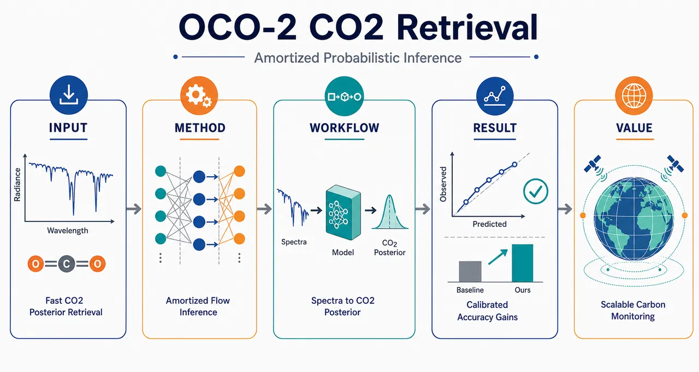
研究问题如何从 OCO-2 卫星三条高光谱吸收带中快速、准确地反演大气 CO₂（XCO₂ 或 20 层 CO₂ 廓线），同时给出可信的后验不确定性；核心挑战是传统 NASA ACOS L2 全物理最优估计逐样本迭代慢、假设前向模型无误差 δ=0、后验近似为局部高斯，导致偏差、欠覆盖和不确定性失准。创新方法提出摊销式概率反演框架：用三分支 1D CNN 分别编码 O₂ A-band、Weak CO₂ band、Strong CO₂ band，用辅助变量编码几何、气压和气溶胶信息，再通过 Transformer 自注意力融合为统一光谱上下文；Aha 点在于把一次性训练得到的深度映射直接输出后验分布，并结合最后层 Laplace 近似与条件归一化流，既吸收仿真校准的前向模型系统误差 δ，又突破传统高斯后验假设，表达偏斜、多峰和多层 CO₂ 的复杂相关结构。工作流程输入端为三条 OCO-2 光谱带的波长-归一化辐亮度双通道序列，加上太阳天顶角、观测几何、地表气压先验和气溶胶类别等辅助变量；每条光谱带进入独立 CNN 编码器并拼接绝对尺度归一化常数，辅助变量进入嵌入编码器；四个 token 进入 Transformer 自注意力模块融合；输出端根据任务生成 XCO₂ 标量、近地表 4 层或完整 20 层 CO₂ 廓线；不确定性路径一用 Laplace 对最后线性层采样并叠加验证残差估计的 aleatoric 方差，路径二用条件 normalizing flow 直接生成非高斯后验密度。关键结果在模拟测试集上，XCO₂ 反演显著优于 NASA ACOS L2：NASA RMSE 为 2.85 ppm，Laplace 降至 1.53 ppm，normalizing flow 为 1.55 ppm；NASA 的 95%/68% 经验覆盖率仅 21.9%/11.2%，严重欠覆盖，而 Laplace 达 98.1%/82.2%，flow 达 95.6%/69.5%，最接近标称校准。完整 20 层 CO₂ 廓线中，normalizing flow 的联合 NLL 为 −40.63，远优于 Laplace 的 22.90 和 NASA 的 45.20，显示其对多层非高斯联合后验的表达优势。应用价值该研究为下一代卫星碳监测业务链提供可扩展方案：把昂贵的逐样本物理迭代反演替换为神经网络前向传播，实现近实时、大规模 CO₂ 反演；同时输出经过校准的概率不确定性，帮助全球碳源汇估计、气候模型约束和政策监测。对于不同科学目标，可分别训练 XCO₂、近地表层或完整廓线的目标特异概率模型，避免用全廓线模型粗略取边缘分布造成性能损失。第一部分：核心概览
该研究提出一种面向 OCO-2 高光谱 CO₂ 反演的摊销式概率推断框架，用多分支深度网络编码三条光谱带，并以拉普拉斯近似和条件归一化流输出 XCO₂ 或 20 层 CO₂ 廓线的后验分布。相较 NASA ACOS L2 全物理最优估计，方法在模拟测试集上显著提升 XCO₂ 精度与不确定性校准：RMSE 从 2.85 ppm 降至约 1.53–1.55 ppm，覆盖率从严重欠覆盖改善至接近标称水平。核心地位在于把仿真校准的模型误差、高速深度学习反演与非高斯后验 UQ结合，为下一代卫星碳监测业务处理提供可扩展路线。
---
第二部分：结构化快速回顾
《Amortized Probabilistic Retrieval of Atmospheric CO2 from OCO-2 Spectra Using Deep Learning with Laplace Approximations and Normalizing Flows》（None，）
背景
OCO-2/3 通过太阳反射光谱反演 XCO₂，服务全球碳源汇估计。传统 ACOS L2 全物理反演依赖逐样本迭代辐射传输计算，计算昂贵，并通常假设前向模型无误差与局部高斯后验，导致速度瓶颈、偏差和不确定性失准。
方法
使用 Braverman 等与 Hobbs 等构建的 OCO-2 高保真仿真数据集，包含 9 个地球物理簇、479 个参考 sounding、每个 sounding 100 个随机复制，总计 N = 47,900。模型输入包括 O₂ A-band、Weak CO₂ band、Strong CO₂ band 及辅助几何/气溶胶变量。网络采用三分支 1D CNN 光谱编码器、辅助编码器、Transformer 融合模块和任务头；UQ 采用最后层 Laplace approximation 与条件 normalizing flow。
结果
XCO₂ 预测中，NASA retrieval 的 RMSE 为 2.85 ppm，Laplace 为 1.53 ppm，normalizing flow 为 1.55 ppm。NASA 95%/68% 经验覆盖率仅 21.9% / 11.2%，Laplace 为 98.1% / 82.2%，normalizing flow 为 95.6% / 69.5%。完整 20 层廓线预测中，normalizing flow 的 joint NLL 最优，为 −40.63，明显优于 Laplace 的 22.90 和 NASA 的 45.20。
讨论
Laplace 在点预测上通常最强，但不确定性偏保守；normalizing flow 在概率校准和联合后验表达上更优，尤其适合多层 CO₂ 廓线的非椭圆依赖、偏斜和非高斯结构。若科学目标集中于 XCO₂ 或近地表层，应直接训练对应目标的概率模型，而非从完整 20D 模型取边缘分布。
局限
验证基于高保真仿真，而非真实 OCO-2 观测；TCCON 虽是 XCO₂ 验证标准，但空间稀疏、共址误差和垂直敏感性差异使其难以作为高维联合后验 UQ 基准。Laplace 仅在最后线性层建模 epistemic uncertainty，aleatoric uncertainty 通过验证残差估计，表达能力受限。
结论
仿真驱动的摊销深度概率反演可在速度、精度、模型误差鲁棒性和不确定性校准上同时改进传统全物理反演。条件 normalizing flow 尤其适合下一代卫星 CO₂ 业务系统中复杂后验与多层联合不确定性的快速近似。
---
第三部分：逐章节冷凝解析
Abstract
- Space-based CO₂ retrieval needs both speed and calibrated uncertainty
卫星 CO₂ 监测是全球碳预算约束的关键，但现有 OCO-2 业务反演存在计算成本高、不确定性量化不足的问题；核心任务是从高分辨率光谱估计 column-averaged dry-air mole fractions of CO₂ / XCO₂。原文明确指出：*"Space-based monitoring of atmospheric carbon dioxide (CO2) is essential for constraining the global carbon budget"*，同时指出传统算法缺陷：*"current operational retrieval algorithms are computationally expensive and do not properly quantify uncertainties"*。
- Amortized probabilistic inference is the central methodological contribution
方法通过训练阶段一次性学习光谱到状态变量的映射，实现推理阶段快速前向传播；该策略被概括为 amortized probabilistic inference。原文表述为：*"We present a novel deep learning framework that addresses these challenges through amortized probabilistic inference"*。
- High-fidelity simulation replaces unavailable real joint ground truth
真实卫星观测缺乏可用于高维后验验证的 ground truth，因此使用专为 OCO-2 UQ 设计的高保真仿真数据，并纳入前期校准研究量化的前向模型误差。关键证据为：*"Due to the difficulties of ground-truth data for real satellite observations, we develop and validate our approach using a high-fidelity simulation dataset"*，以及 *"incorporates realistic forward model errors quantified through previous extensive calibration studies"*。
- Architecture combines multi-branch spectral encoding with two scalable UQ tools
网络分别编码三条光谱带，并通过 Laplace approximations 与 normalizing flows 估计完整 CO₂ column 或目标 summary 的后验。原文为：*"Our architecture encodes spectral bands using a multi-branch neural network and estimates posteriors of the full CO2 column or desired summaries thereof using two scalable UQ methods: Laplace approximations and normalizing flows"*。
- Five claimed advantages over full-physics solvers
五项优势包括：推理快多个数量级、训练时显式吸收模型误差、点估计精度更高、不确定性校准更好、normalizing flow 可表达非高斯后验。原文列举为：*"five key advantages relative to operational 'full-physics' solvers"*，具体包括 *"Inference is orders of magnitude faster"*、*"accounts for systematic errors often neglected by standard inversions"*、*"superior predictive accuracy"*、*"better-calibrated uncertainty estimates"*、*"models complex, asymmetric posterior distributions"*。
---
1 Introduction
- CO₂ accumulation motivates global high-resolution retrieval
CO₂ 是人为气候变化主要驱动因素之一，全球碳源汇估计需要高时空分辨率观测；空间遥感是全球尺度可行路径。关键原文为：*"The accumulation of greenhouse gases, particularly carbon dioxide (CO2), is a primary driver of anthropogenic climate change"*，以及 *"Space-based remote sensing offers the only viable pathway for obtaining these measurements on a global scale with high spatiotemporal resolution"*。
- OCO-2/3 retrieval converts reflected sunlight spectra into XCO₂
OCO-2/3 测量特定光谱带中的地表反射太阳光，反演 XCO₂，即柱平均干空气 CO₂ 摩尔分数。原文说明：*"Missions such as NASA’s Orbiting Carbon Observatory-2 and 3 (OCO-2/3) measure sunlight reflected from the Earth’s surface within specific spectral bands"*，并定义目标：*"infer the column-averaged dry-air mole fraction of CO2, denoted as XCO2"*。
- Retrieval is a nonlinear inverse problem with model discrepancy
观测光谱 y 与状态向量 x 的关系写为
y = F(x,b) + δ + ε，其中 δ 是系统性模型差异，ε 是仪器噪声。原文公式后的定义很关键：*"δ represents systematic model discrepancy—the inevitable structural error where the physics-based forward model fails to perfectly replicate reality"*。
- Operational optimal estimation has three major limitations
ACOS full-physics 使用 optimal estimation / OE，但存在三类问题：逐 sounding 迭代辐射传输计算昂贵；局部高斯后验假设在云、气溶胶散射、先验错设下失效；通常假设 δ = 0，忽略前向模型误差。原文直接列出：*"these approaches face three significant limitations"*，包括 *"computationally expensive"*、*"standard OE assumes Gaussian posteriors"*、*"operational retrievals often assume the forward model is perfect (δ = 0)"*。
- Machine learning improves speed but often lacks rigorous probabilistic structure
近年神经网络、transformer 和非线性嵌入可近似物理求解器，但存在可解释性和不确定性表达不足问题，尤其可能依赖纬度、日期等 ancillary correlations 模拟气候态，而非从吸收特征中学习信号。原文指出：*"networks trained on real data may over-rely on ancillary correlations (e.g., latitude or date) to mimic climatology, rather than extracting the signal from the spectral absorption features"*。
- TCCON is insufficient for multidimensional posterior validation
TCCON 是 XCO₂ 验证标准，但站点稀疏、卫星-地面共址误差、状态筛选、垂直敏感性和压力网格差异会引入额外不确定性；更关键的是缺少高维联合后验数据。原文为：*"TCCON sites are geographically sparse"*，*"satellite-to-ground comparisons are confounded by co-location errors"*，以及 *"TCCON lacks the joint posterior distribution data required to benchmark the high-dimensional UQ"*。
- High-fidelity simulation provides absolute joint ground truth across 20 layers
仿真环境显式纳入量化前向模型误差，提供完整 20-layer state vector 的 joint ground truth，用于评估复杂 atmospheric states 与非高斯不确定性。原文为：*"This provides an absolute, joint ground truth across the full 20-layer state vector"*，并覆盖 *"a representative range of global observing conditions"*。
- Five explicit contributions define the novelty agenda
贡献包括：amortized inference、模型误差鲁棒性、高精度点估计、Laplace 与 normalizing flow 校准 UQ、非高斯后验。原文以列表给出：*"The specific contributions of this paper are as follows"*，其中包括 *"orders of magnitude faster than operational iterative solvers"*、*"include calibrated forward-model discrepancies"*、*"more accurate than those using traditional optimal estimation"*、*"empirically better calibrated"*、*"model asymmetric posterior distributions"*。
---
2 Data: High-fidelity OCO-2 simulations
- Simulation data solves the missing dense ground-truth problem
真实观测虽多，但无法提供概率覆盖率与小尺度精度检验所需的 dense absolute ground truth；仿真数据用来同时模拟辐射传输物理与业务前向模型缺陷。原文为：*"While real observational data is abundant, it lacks the dense, absolute 'ground truth' required to verify probabilistic coverage and small-scale accuracy"*，以及 *"generating synthetic radiances that simulate not only the physics of radiative transfer but also the systematic imperfections of the forward models used in operational retrievals"*。
---
2.1 The simulation framework
- State vector has about 50 elements and includes CO₂ plus nuisance variables
高维状态向量 x 包含约 50 个元素，不仅包括 CO₂ profile 和 XCO₂ 派生信息，还包括 surface pressure、water vapor、temperature adjustments、aerosol properties、surface albedo、instrument parameters。原文为：*"a high-dimensional state vector containing approximately 50 elements, including the profile of atmospheric CO2 ... surface pressure, water vapor, temperature adjustments, aerosol properties, surface albedo, and instrument parameters"*。
- Synthetic radiance includes both measurement noise and nonzero model discrepancy
数据生成公式为 y = F(x;b) + δ + ε；其中 ε ~ N(0,Sε)，代表来自仪器信噪比的零均值测量噪声；δ 是非零均值系统误差向量。原文为：*"the dataset includes both measurement noise and model discrepancy"*，*"ε∼N(0,Sε) represents zero-mean measurement noise derived from the instrument’s signal-to-noise ratio"*，以及 *"δ represents model discrepancy, given by a non-zero mean systematic error vector"*。
- Operational solvers ignore δ, creating bias vulnerability
业务反演近似 y ≈ F(x)，等价于设定 δ = 0，但真实 F 只是大气物理的非完美近似。原文为：*"the inverse solver assumes y≈F(x), effectively assuming δ=0"*，以及 *"F is an imperfect approximation of atmospheric physics"*。
- Discrepancy reflects spectroscopy, aerosols, and absorption coefficient errors
δ 的分布由 OCO-2 地面验证和 bias-correction 信息约束，反映 absorption coefficients、aerosol scattering approximations、spectroscopic uncertainties 等误差来源。原文为：*"Ground validation data informs bias-correction procedures for OCO-2"*，以及 *"known limitations in absorption coefficients, aerosol scattering approximations, and spectroscopic uncertainties"*。
- Training with δ enables implicit correction or marginalization of systematic errors
深度模型在含 δ 的仿真数据上训练，可隐式学习校正或边缘化系统误差，而标准 full-physics solver 不具备这一能力。原文明确为：*"By training our deep learning models on data that include δ, we allow the network to implicitly learn to correct or marginalize over these systematic errors"*，并强调 *"This is a capability that standard 'full-physics' solvers lack"*。
---
2.2 Dataset composition and inputs
- Nine geophysical clusters ensure land-regime representativeness
数据集包含 9 个 distinct clusters，代表不同观测条件和地球物理状态，例如高/低纬度、不同 surface albedo、不同 aerosol conditions；这些 cluster 由 operational OCO-2 retrieval ensemble 上的 self-organizing maps / SOM 构建。原文为：*"It contains 9 distinct 'clusters' representing different observing conditions and geophysical states"*，以及 *"assembled using self-organizing maps (SOM) on an ensemble of operational OCO-2 retrievals"*。
- Dataset size is 47,900 spectral-state pairs
across clusters 共有 479 unique reference soundings；每个 reference sounding 生成 100 stochastic replicates，总样本量 N = 47,900。原文为：*"there are a total 479 unique 'reference soundings'"*，以及 *"For each reference sounding, 100 stochastic replicates are generated ... resulting in a total dataset size of N = 47,900 spectral-state pairs"*。
- Reference soundings span instrument, prior, and observation variability
reference soundings 被选取以覆盖 instrument properties、assumed a priori states 和 observing conditions 的变化。原文为：*"selected to span a range of instrument properties, assumed a priori states, and observing conditions within and across clusters"*。
---
2.2.1 Spectral inputs
- Three OCO-2 spectral bands serve distinct physical roles
输入包括 O₂ A-band at 0.76 μm、Weak CO₂ band at 1.61 μm、Strong CO₂ band at 2.06 μm。O₂ A-band 主要约束 surface pressure、clouds、aerosols；Weak CO₂ band 主要约束 CO₂ column；Strong CO₂ band 同时对 aerosols、water vapor 和 CO₂ absorption 敏感。原文为：*"O2 A-band (0.76 μm), which primarily constrains surface pressure and the presence of clouds and aerosols"*，*"Weak CO2 band (1.61 μm), which provides the main constraint on the CO2 column"*，以及 *"Strong CO2 band (2.06 μm), which introduces additional sensitivity to aerosols and water vapor"*。
- Each band is represented as a two-channel 1D signal
对每个光谱带 j ∈ 1,2,3，输入为 y(j) ∈ R² × Lj，第一通道是 wavelengths，第二通道是 normalized radiances。原文为：*"the input is represented as a two-channel one-dimensional signal"*，以及 *"whose first channel contain wavelengths and whose second channel contains normalized radiances"*。
- Normalization constants are retained because absolute scale matters
每条光谱带的 normalization constants 另存，以保留光谱绝对尺度信息。原文为：*"The band-specific normalization constants are saved separately, as they preserve information about the absolute scale of our spectra"*。
---
2.2.2 Auxiliary inputs
- Auxiliary variables encode geometry, pressure prior, and aerosols
除光谱外，模型还条件化于影响 radiative transfer path length 与 scattering properties 的辅助变量，包括 Solar Zenith Angle / SZA、卫星 viewing geometry、来自数值天气预报的 surface pressure prior，以及 Dust、Sulfates、Sea Salt、Organic Carbon、Black Carbon 等气溶胶类别。原文为：*"several scalar (categorical or continuous) auxiliary variables that significantly influence the radiative transfer path length and scattering properties"*，以及 *"Dust (DU), Sulfates (SO), Sea Salt (SS), Organic Carbon (OC), and Black Carbon (BC)"*。
- Full model input combines three spectral bands and auxiliary vector
完整输入定义为 u = (y(1), y(2), y(3), a)。原文为：*"Let a be the vector that contains these auxiliary features, so that the full input of our model is u=(y(1),y(2),y(3),a)"*。
---
2.3 Preprocessing and splits
- Training-set statistics standardize spectra and targets
光谱强度按训练集均值和方差进行 zero mean、unit variance 标准化；XCO₂ 和其他连续状态向量元素也被标准化。原文为：*"The spectral intensities in each band are normalized (zero mean, unit variance) based on the statistics of the training set"*，以及 *"The target variable, XCO2, and other continuous state vector elements are similarly standardized"*。
- Aerosol types are integer encoded
气溶胶类别用 integer mappings 转换为数值格式。原文为：*"Aerosol types are encoded using integer mappings to transform categorical variables into numerical format"*。
- Train/validation/test split is 80%/10%/10% with stratification
47,900 条光谱分为训练、验证、测试，比例 80% / 10% / 10%；分层保证 9 个 geophysical clusters 在各 split 中均出现，避免测试条件完全未见。原文为：*"We partition the dataset of 47,900 spectra into training, validation, and testing sets with an 80% / 10% / 10% split"*，以及 *"stratified to ensuring that all 9 geophysical clusters are represented in each split"*。
---
3 Methodology: Amortized probabilistic inference
- Operational retrieval minimizes a χ² optimal-estimation cost per sounding
标准反演最小化包含观测误差项和先验项的 χ²(x)，涉及 Sε 测量噪声协方差、xa 先验均值、Sa 先验协方差。原文为：*"Standard operational retrieval algorithms seek the state vector x̂ that minimizes χ2(x)"*，并说明 *"This cost function is minimized for each individual measurement via iterative optimization"*。
- Amortized inference shifts cost from retrieval time to training time
摊销推断通过训练神经网络提前学习光谱空间到状态空间的直接映射，使训练后每个样本只需一次前向传播。原文为：*"By investing computational resources upfront during the training of a neural network, we learn a direct mapping from the spectral space to the state space"*，以及 *"Once trained, inference becomes a computationally trivial forward pass"*。
- Processing time becomes decoupled from radiative-transfer complexity
该策略将推理时间与复杂辐射传输物理解耦。原文为：*"decoupling the processing time from the complexity of the radiative transfer physics"*。
---
3.1 Network architecture
- Architecture is a multi-branch deep neural network
网络含 three dedicated spectral encoders 与 one auxiliary encoder，融合后生成共享表示并输出任务预测。原文为：*"we employ a multi-branch deep neural network"*，以及 *"three dedicated spectral encoders and one auxiliary encoder, which fuse into a shared representation before generating the final prediction"*。
- Each spectral band uses an independent 1D convolutional encoder
三个光谱分支采用相同 CNN 结构但参数独立；卷积特征展平后与两个 normalization constants 拼接，再经 MLP 形成 band embedding h(j) ∈ R^E。原文为：*"Each spectral branch is processed by the same convolutional encoder architecture, with independent parameters across bands"*，以及 *"passed through a multilayer perceptron (MLP) to produce a band embedding, h(j)∈R^E"*。
- Auxiliary encoder embeds variables into an E-dimensional token
辅助编码器处理 one continuous variable and three categorical variables；每个变量映射到 8-dimensional representation，拼接后线性投影为 h(aux) ∈ R^E。原文为：*"Each variable is mapped to an 8-dimensional representation"*，以及 *"linearly projected into h(aux)∈R^E"*。
- Four tokens are fused by Transformer-style self-attention
三个 band embeddings 与一个 auxiliary embedding 堆叠为 H ∈ R⁴×E，经 layer normalization 和 L Transformer encoder layers with multi-head self-attention 交互融合，最终展平为 R⁴E 表示。原文为：*"The band embeddings and the auxiliary embeddings are stacked into a sequence of tokens"*，以及 *"fuse the tokens using a Transformer-style attention module consisting of layer normalization followed by L Transformer encoder layers with multi-head self-attention"*。
- Task-specific heads support scalar, 4-layer, and 20-layer prediction
MLP 任务头输出维度 D = 1 用于 scalar XCO₂，D = 20 用于 full-profile，D = 4 用于 last-4-layers / near-surface profile。原文为：*"D=1 outputs for scalar XCO2 prediction, D=20 for full-profile prediction, and D=4 for last-4-layers prediction"*。
- Deterministic backbone is trained by empirical MSE
给定训练数据 (ui, xi)，网络 fθ(u) ∈ R^D 通过最小化平均平方误差训练。原文为：*"we train this backbone as a point estimator by minimizing the empirical mean squared error"*。
- Hyperparameters selected by Bayesian optimization
embedding dimension、attention heads、fusion layers、learning rate、weight decay 均在验证集上通过 Bayesian Optimization 选择；XCO₂、20D full CO₂、near-surface profile 各任务从头训练。原文为：*"model hyperparameters ... were selected using Bayesian Optimization on a validation set"*，以及 *"Models were trained from the ground-up for each of the tasks"*。
---
3.1.1 Motivation for multi-branch design
- Separate branches reflect physically distinct spectral windows
三条光谱带由不同物理过程主导，分支编码避免把几何、CO₂ 吸收、水汽/气溶胶散射信号混合。原文为：*"The decision to encode the spectral bands separately is motivated by the distinct physical processes governing each window of the electromagnetic spectrum"*。
- O₂ A-band anchors light path and pressure constraints
O₂ A-band (~0.76 µm) 捕获强氧吸收线，约束 photon path length、cloud coverage、surface pressure；结合 SZA 可锚定几何光程。原文为：*"captures strong oxygen absorption lines, providing critical constraints on the photon path length, cloud coverage, and surface pressure"*，以及 *"this band effectively anchors the geometric light path"*。
- Weak CO₂ band provides a cleaner target signal
Weak CO₂ band (~1.61 µm) 对 XCO₂ 最敏感，且水汽干扰较少，因此提供较干净的 CO₂ 信号。原文为：*"sensitive primarily to the column-averaged dry air mole fraction of CO2"*，以及 *"Because it experiences minimal interference from water vapor, it offers a relatively clean signal of the target variable"*。
- Strong CO₂ band carries CO₂ plus aerosol and water-vapor interference
Strong CO₂ band (~2.06 µm) 包含 CO₂ 信息，但受 water vapor 与 aerosol scattering 强烈影响；独立分支迫使网络学习 aerosol interference 的特异特征。原文为：*"heavily influenced by water vapor and aerosol scattering"*，以及 *"the network is forced to learn specific features related to aerosol interference without confounding the cleaner CO2 signal"*。
---
3.2 Uncertainty quantification (UQ) approaches
- MSE networks lack predictive confidence
标准 MSE 训练网络只给点估计，无法给出 prediction confidence；CO₂ 反演下游应用需要概率不确定性。原文为：*"A standard neural network trained with MSE loss provides a point estimate for predictions but fails to quantify the confidence of that prediction"*。
- Two UQ extensions are used: Laplace and normalizing flows
框架用两种不同 UQ 方法扩展网络：post-hoc Laplace approximation 与 normalizing flows。原文为：*"we extend our architecture using two distinct UQ methods: the post-hoc Laplace approximation and normalizing flows"*。
---
3.2.1 Method A: Laplace approximation
- Laplace approximation is placed only on the final linear layer
确定性网络训练收敛后，只对最后线性层参数 β 施加 Laplace approximation，卷积和 attention feature extractor 固定。原文为：*"we place a Laplace approximation on the final linear layer while keeping the convolutional and attention-based feature extractor fixed"*。
- Posterior over final-layer weights is Gaussian around MAP
精确后验由高斯 q(β)=N(β; β̂MAP, Σβ) 近似；均值为训练后参数，协方差来自 loss 在 MAP 附近的二阶局部近似。原文为：*"replaces the exact posterior over β by a Gaussian"*，以及 *"covariance matrix Σβ is obtained from a local second-order approximation to the loss"*。
- Curvature encodes parameter uncertainty
高曲率方向代表权重受数据强约束、后验方差小；平坦方向代表不确定性更大。原文为：*"directions of high curvature correspond to weights that are tightly constrained by the data and hence have small posterior variance, while flatter directions correspond to greater posterior spread"*。
- Laplace captures epistemic uncertainty, not aleatoric uncertainty
最后层权重后验诱导 epistemic uncertainty，即模型参数知识不足；aleatoric uncertainty 是测量噪声或未解析物理变化等不可约变异，需要单独估计。原文为：*"This posterior covariance over the last-layer weights induces the epistemic component of predictive uncertainty"*，以及 *"aleatoric uncertainty represents irreducible variability in the observations ... and must be modeled separately"*。
- Monte Carlo samples propagate weight uncertainty to output profiles
对新输入 u*，从 q(β) 抽样 β(s), s=1,…,S，生成预测 x̂*⁽s)=fβ(s)(u*) ∈ R^D；用样本均值估计 predictive mean，用样本协方差估计 epistemic covariance。原文为：*"we propagate uncertainty in β to output space by Monte Carlo sampling from the Laplace posterior"*。
- Aleatoric covariance is estimated diagonally from validation residuals
验证集残差平方均值减去平均 epistemic variance 得到每个坐标的 σ²aleat,j，形成 diagonal Σaleat。原文为：*"we estimate the aleatoric component from validation residuals"*，以及 *"We estimate the aleatoric covariance diagonally, coordinate-wise"*。
- Final predictive covariance is epistemic plus aleatoric
最终 Σpred(u*) = Σepi(u*) + Σaleat。原文为：*"The final predictive covariance is therefore Σpred(u*)=Σepi(u*)+Σaleat"*，并总结为 *"total predictive uncertainty is decomposed into an epistemic term ... and an aleatoric term"*。
---
3.2.2 Method B: Normalizing flows
- Normalizing flows remove restrictive Gaussian assumptions
使用 normalizing flows 是为克服业务反演局部高斯后验假设；它们学习可逆可微变换，将简单 base distribution 映射到复杂目标分布。原文为：*"To address the limitations of Gaussian assumptions"*，以及 *"learn a series of invertible, differentiable transformations ... that map a simple base distribution ... to a complex, potentially multi-modal, target distribution"*。
- Conditional density uses spectral embeddings as context
给定网络产生的 spectral embeddings h(y)，flow 定义 p(x|y)，通过 change-of-variables 公式计算密度。原文为：*"Conditioned on the spectral embeddings h(y) produced by our network, the flow defines the posterior density"*。
- Flows can model skewed, asymmetric, or multimodal posteriors
通过多个非线性 bijectors，如 masked autoregressive flows 或 affine coupling layers，模型可表达传统 Gaussian 近似无法表示的偏斜、不对称、多峰后验。原文为：*"represent highly skewed, asymmetric, or multi-modal posteriors, which traditional Gaussian approximations fail to represent"*。
- Implementation uses deterministic backbone as context network
确定性 backbone 产生 R⁴E 上下文表示，MLP prediction head 被 conditional flow on R^D 替换；D 可为 1、4、20。原文为：*"we retain the deterministic backbone as a context network"*，以及 *"replace the MLP prediction head by a conditional flow on R^D (where D=1,4,20 depending on the task)"*。
- Piecewise-rational-quadratic coupling transforms are implemented with nflows
实现采用 piecewise-rational-quadratic coupling transforms，由 nflows package 支持；D>1 时用 alternating binary masks 和 random permutations 保证所有廓线坐标被转换。原文为：*"a stack of piecewise-rational-quadratic coupling transforms implemented with the nflows package"*，以及 *"alternating binary masks and random permutations between layers to ensure all profile coordinates are transformed when D>1"*。
- Residual networks parameterize coupling transforms with spectral context
每个 coupling transform 由条件化于光谱上下文的 residual neural network 参数化，使 20D CO₂ profile 后验具备灵活非高斯表达能力。原文为：*"Each coupling transform is parametrized by a residual neural network conditioned on the spectral context"*，以及 *"capable of modeling skewness, asymmetry, and other non-Gaussian structures in the posterior distribution over the 20-dimensional CO2 profiles"*。
---
4 Numerical comparisons
- Evaluation uses held-out simulation test set
所有评估均在 Section 2 的 held-out test set 上完成，测试集包含训练中未见过的 geophysical states 和 spectral geometries。原文为：*"All evaluations are performed on the held-out test set of the simulation dataset"*，以及 *"contains geophysical states and spectral geometries not seen during training"*。
---
4.1 Operational retrieval (L2 Full Physics)
- NASA ACOS L2 Full Physics is the primary baseline
主要基线是 NASA ACOS Level 2 Full Physics retrieval algorithm，基于 Rodgers 的 classical OE theory。原文为：*"The primary baseline is the NASA ACOS Level 2 (L2) Full Physics retrieval algorithm"*，以及 *"solves the inverse problem using classical OE theory"*。
- L2 uses Levenberg-Marquardt and repeated forward-model calls
L2 通过 iterative Levenberg-Marquardt optimizer 最小化 χ²，每次 sounding 需要重复执行昂贵前向模型 F。原文为：*"The minimization is performed using an iterative Levenberg-Marquardt optimizer"*，以及 *"requiring repeated executions of the computationally expensive forward model F"*。
- Baseline uncertainty is inverse Hessian under perfect-model Gaussian assumptions
L2 后验不确定性由解处 cost function 的 inverse Hessian 给出，并假设 δ = 0 与局部高斯后验。原文为：*"the posterior uncertainty Ŝ is computed as the inverse Hessian of the cost function at the solution"*，以及 *"assumes that the forward model is perfect (δ=0) and that the posterior distribution is locally Gaussian"*。
---
4.2 Predicting XCO₂
- Laplace has the best scalar XCO₂ RMSE
XCO₂ 预测中，NASA RMSE 为 2.85 ppm，Laplace 为 1.53 ppm，normalizing flow 为 1.55 ppm；Laplace 点预测最优，flow 非 MSE 训练但接近最优。原文为：*"The Laplace model attains the best RMSE, with the normalizing flow a close second"*，并指出 *"the flow was not trained with a MSE objective, but instead maximizing the conditional likelihood"*。
- Normalizing flow has the best NLL
NLL 指标中，NASA 为 19.59，Laplace 为 −1.12，normalizing flow 为 −1.25；flow 最优。原文为：*"As expected, the conditional normalizing flow achieved the best negative log-likelihood (NLL)"*。
- NASA retrieval performs substantially worse across metrics
NASA retrieval 在所有报告指标上显著落后，尤其 empirical coverage 极低：95%/68% = 21.9 / 11.2。原文为：*"The NASA retrieval performed substantially worse than the other two methods in all reported metrics"*。
- Laplace is conservative and overcovers
Laplace empirical coverage 为 98.1% / 82.2%，显著高于 95%/68% 标称值；PIT histogram 中间隆起，说明 predictive intervals 偏宽。原文为：*"The Laplace approximation is much better calibrated than the operational retrieval"*，但 *"its PIT histogram remains mildly hump shaped"*，并解释为 *"predictive distributions are too wide"*。
- Normalizing flow is best calibrated for scalar prediction
normalizing flow empirical coverage 为 95.6% / 69.5%，最接近标称 95%/68%；PIT histogram 最接近 uniform，coverage curve 最贴近 diagonal。原文为：*"Among the three methods, the normalizing flows shows the best probabilistic calibration"*，以及 *"Its coverage curve tracks the nominal diagonal closely"*。
- NASA PIT indicates undercoverage and systematic under-prediction
NASA PIT histogram 在 1 附近大量集中，0 附近也有较小过量；边界质量说明预测分布太窄，向 1 偏斜说明系统性 under-prediction。原文为：*"The PIT histogram for the NASA retrieval is strongly non-uniform"*，*"most mass concentrated near 1 and a smaller excess near 0"*，以及 *"asymmetry towards 1 points to systematic under-prediction"*。
- Flow balances accuracy and calibration
flow 几乎匹配 Laplace 的 RMSE，同时显著提升 likelihood 并提供校准预测分布。原文总结为：*"the flow offers the best balance between accuracy and calibration"*，以及 *"nearly matches the Laplace in RMSE, substantially improves likelihood, and provides calibrated predictive distributions"*。
---
4.3 Predicting the full CO₂ profile
- Full-profile task predicts a 20-dimensional CO₂ profile
比较对象包括 operational retrieval、Laplace approximation、conditional normalizing flow，用于完整 20-dimensional CO₂ profile prediction。原文为：*"We next compare the operational retrieval, Laplace approximation, and the conditional normalizing flow for full 20-dimensional CO2 profile prediction"*。
- Normalizing flow achieves by far the lowest joint NLL
full-profile joint NLL：NASA 45.20，Laplace 22.90，normalizing flow −40.63；flow 远优于其他方法，说明其联合后验表达优势。原文为：*"The normalizing flow was able to capture the joint structure of uncertainty across pressure levels, achieving by far the lowest joint NLL"*。
- Laplace has competitive and often best RMSE
平均 RMSE：NASA 5.23，Laplace 4.71，normalizing flow 4.82；Laplace 点预测略优，但 flow 差距很小。原文为：*"the Laplace approximation remains competitive and typically attains the best RMSE, although the gap with the normalizing flow is small"*。
- Main distinction is joint fidelity rather than point accuracy
full-profile 中 Laplace 与 flow 的主要差异不是 RMSE，而是联合分布保真度；flow 可表达 pressure levels 间非椭圆依赖和自适应不确定性。原文为：*"The main difference between these two approaches is joint fidelity"*，以及 *"represent non-elliptical dependence and more adaptive uncertainty across levels"*。
- Marginal coverages differ by method
平均 empirical coverage：NASA 89.6% / 64.2%，Laplace 94.7% / 73.2%，flow 90.6% / 63.1%。flow 在 marginal level 略欠覆盖，Laplace 在 68% 水平轻度过覆盖、95% 接近标称。原文为：*"The normalizing flow tends to slightly undercover at the marginal level"*，以及 *"The Laplace approximation shows mild over-coverage at the 68% level, while maintaining close to nominal coverage at the 95% level"*。
- Near-surface exception suggests target-specific training is important
最后两个 pressure levels 中，operational retrieval 可在 RMSE 和 marginal NLL 上匹配或超过 learned models；若关注少数层或 summary，full-profile 训练目标可能不最优。原文为：*"An interesting exception appears near the surface"*，以及 *"the full-profile task may not be the right objective when interest is concentrated on a small subset of levels"*。
- Downstream coherent multi-level uncertainty favors normalizing flow
对依赖多压力层一致性不确定性的下游应用，flow 的完整联合后验有实际优势；若目标是 XCO₂ 或少数层，应直接训练对应 summary。原文为：*"Downstream applications that depend on coherent uncertainty across multiple pressure levels would then gain a practical advantage"*，以及 *"one would train the normalizing flow to predict exactly that summary"*。
---
4.4 Near-surface levels
- Near-surface results sharpen target-specific modeling insight
近地表四层结果显示，联合完整廓线建模与目标子集建模存在明显差异；full-profile flow 虽最忠实于完整联合分布，但其近地表边缘分布并非最优。原文为：*"The results for the four vertical levels nearest the surface sharpen the distinction between modeling the full profile jointly and modeling a target subset of scientific interest"*，以及 *"its induced marginals over near-surface layers are not optimal"*。
- Dedicated 4-output normalizing flow is best for near-surface levels
针对近地表四层直接训练的 4-output normalizing flow 在 near-surface levels 上统一取得最佳 RMSE、最佳 joint NLL 和最佳 marginal NLLs。原文为：*"a dedicated 4-output normalizing flow uniformly attains the best RMSE and the best joint NLL across the near-surface levels, as well as the best marginal NLLs"*。
- Marginalizing a 20D model is inferior to training on the scientific target
对下游应用若只关注 near-surface column，直接训练该目标的概率反演模型优于从 20D 模型取 implied distribution。原文为：*"for downstream applications focused on the near-surface portion of the column, it is preferable to train the probabilistic retrieval model directly on those levels"*。
- Provided excerpt truncates Table 3/Figure 6 numeric details
可见内容只保留了 Figure 6 开头和 Table 3 前的文字描述，未显示 near-surface 数值表。可确认的结论来自原文定性表述：*"see Figure 6 and Table 3"*，但具体 RMSE、joint NLL、marginal NLL 数值未包含在提供内容中。
---
第四部分：深度理解与语言支持
1. 术语解析
- Amortized probabilistic inference
Amortized 的核心不是“近似”本身，而是把每次反演都要付出的优化成本“摊销”到一次训练中。训练后每个 sounding 的反演只需神经网络前向传播。与传统 OE 的逐样本迭代不同，它学习的是一个全局映射 u → posterior。
- Forward model discrepancy
Model discrepancy / δ 不是随机测量噪声，而是前向物理模型与真实世界之间的结构性差异，例如光谱参数、气溶胶散射近似、吸收系数误差。它通常具有系统偏差，因此不能简单当作零均值白噪声处理。
- Epistemic uncertainty vs. aleatoric uncertainty
Epistemic uncertainty 来自模型参数或知识不足，理论上可通过更多训练数据或更好模型降低；aleatoric uncertainty 来自观测噪声、未解析微物理过程或真实自然变异，更多数据也不一定消除。Laplace 主要估 epistemic，验证残差补 aleatoric。
- Probability integral transform / PIT histogram
对每个真实值 x，计算预测分布 CDF 在 x 处的概率值 F(x)。若预测分布校准良好，PIT 应接近均匀分布。U 形或边界堆积常表示预测区间过窄；中间隆起表示预测区间过宽；左右偏斜表示系统性偏差。
- Joint NLL vs. marginal NLL
Joint NLL 评价完整多维后验密度是否正确，包括层间相关结构；marginal NLL 只看单个 pressure level 的边缘分布。normalizing flow 在 joint NLL 上极强，说明其优势主要来自联合依赖建模，而不仅是单层误差小。
2. 疑难查证
- 为什么 normalizing flow 的 RMSE 不一定最低，但 NLL 最好？
RMSE 只评价预测均值或点估计与真值的距离；NLL 评价整个预测分布给真值分配的概率密度。一个模型可能均值略差，但如果能正确表达偏斜、厚尾、层间相关和局部不确定性，NLL 会显著更好。full-profile 结果中 flow 的 average RMSE 4.82 略高于 Laplace 的 4.71，但 joint NLL −40.63 远优于 Laplace 的 22.90，正体现这一点。
- 为什么 TCCON 不能充分验证高维 CO₂ profile posterior？
TCCON 更适合验证 XCO₂ 标量，而不是 20 层 CO₂ 廓线的联合后验。卫星和地面仪器观测几何不同、垂直敏感性不同、压力网格不同，还需要 averaging-kernel correction 和 interpolation；这些步骤会把验证误差、代表性误差和反演误差混合在一起。高维 posterior calibration 需要知道每层真实值及其联合结构，TCCON 通常不提供这种 ground truth。
- 为什么从 20D full-profile 模型取近地表边缘分布不如直接训练 4D 模型？
20D 模型需要在整条廓线中分配模型容量和似然优化权重，目标是整体联合密度最优；近地表四层只是其中一部分，且可能受边界层、地表反照率、气溶胶和压力误差影响更强。直接训练 4D near-surface flow 会把所有容量和损失函数集中在该科学目标上，因此 near-surface RMSE 与 NLL 更好。
---
第五部分：创新评估与关联
1. 创新性判断
- 从点估计型 ML 反演推进到概率后验反演
近 2–5 年的神经网络、transformer、embedding 方法多聚焦快速近似物理求解器或输出简单高斯误差；该研究把输出目标升级为 posterior distribution，同时支持 scalar XCO₂、4-layer near-surface profile 和 20D full-profile posterior。
- 把 calibrated forward-model discrepancy 纳入训练分布
传统 OE 常设 δ = 0，很多 ML 方法直接学习历史 retrieval 或观测标签，容易继承偏差。该研究使用包含经地面验证和校准研究约束的 model discrepancy δ 的仿真环境，使模型在训练阶段接触系统性前向模型误差，从而学习校正或边缘化该误差。
- 用 normalizing flow 明确突破 Gaussian posterior 假设
OE 与 Laplace 都基本依赖局部高斯近似；normalizing flow 通过可逆变换表达偏斜、不对称、多峰及复杂层间依赖。full-profile 任务中 joint NLL 从 NASA 的 45.20、Laplace 的 22.90 降至 flow 的 −40.63，表明非高斯联合后验建模不是装饰性改进，而是核心性能来源。
- 建立了可检验高维 UQ 的仿真评估范式
真实 OCO-2/TCCON 难以检验 20D posterior calibration；高保真模拟提供 absolute joint ground truth，使 95%/68% coverage、PIT、joint NLL、marginal NLL 能系统评价。这解决了前人“能给不确定性但难以验证其正确性”的问题。
- 提出目标特异概率反演原则
结果表明：若目标是 XCO₂，就训练 scalar posterior；若目标是近地表四层，就训练 4D posterior；若目标是整条廓线联合不确定性，就训练 20D posterior。该原则比“一次反演全状态再取任意边缘”的传统思路更符合下游科学任务需求。
- 业务系统潜力在速度与 UQ 的同时改进
摊销推断可把逐 sounding 的迭代反演替换为前向传播；同时不牺牲概率输出。相对 ACOS L2，XCO₂ RMSE 从 2.85 ppm 降到 1.53–1.55 ppm，95% 覆盖率从 21.9% 改善到 95.6%–98.1%。这类组合改进直接指向下一代近实时碳监测处理链。
-
02
📊 含图深析
💡 亮点：神经网络原子势被定位为化学基础模型底座。
📖 展开分析 + 配图
研究问题如何把原本多用于特定化学体系势能面拟合的神经网络原子间势，扩展为一个可迁移的“化学基础模型”，使其能够统一理解原子结构、能量变化、原子受力与结构响应。创新方法以神经网络原子间势作为化学基础模型的核心引擎，将能量、力和结构响应放入同一学习框架；Aha 点在于把“局部势能拟合工具”提升为“可迁移的原子尺度模拟底座”。工作流程输入原子组成与三维结构 → 神经网络表示原子间相互作用 → 联合学习体系能量、原子力和结构响应 → 形成可迁移势能模型 → 输出可用于化学与材料模拟的能量预测、力场计算和结构演化结果。关键结果论文提出将神经网络原子间势用于构建化学基础模型的思路，强调统一整合能量、力和结构响应学习，并面向跨体系迁移的原子尺度模拟；摘要未提供具体定量性能提升、基准对比或实验数值。应用价值有望为化学反应、材料结构搜索、分子动力学和原子尺度性质预测提供统一模拟框架，减少对昂贵量子化学计算的依赖，加速新材料与化学体系探索。核心概览
本文属于计算材料/计算化学与机器学习势能模型方向，讨论将神经网络原子间势作为化学基础模型的核心，以整合能量、力和结构响应学习，构建可迁移的原子尺度模拟框架。
方法要点
- 以神经网络原子间势（neural network interatomic potentials, NNPs）作为模型核心。
- 将能量、力以及结构响应的学习纳入统一框架。
- 目标是构建可迁移的原子尺度模拟模型，用于化学体系模拟。
- 摘要未详述具体网络架构、训练数据来源、损失函数、基准任务或验证流程。
关键结果
- 论文提出或讨论了将神经网络原子间势用于“化学基础模型”的思路。
- 摘要明确指出，该框架试图把能量、力和结构响应学习整合起来。
- 摘要表明该方法面向可迁移的原子尺度模拟。
- 摘要未详述定量性能、对比基线、适用化学空间范围或具体实验结果。
创新性判断
- 可能的新颖点在于：不是仅将神经网络势用于特定体系的势能面拟合，而是将其提升为面向化学的“基础模型”核心组件。
- 另一可能创新在于：同时整合能量、力和结构响应学习，强调统一、可迁移的原子尺度模拟能力。
- 但由于摘要极简，无法确定其具体技术创新来自模型架构、训练范式、数据规模、多任务学习、迁移能力还是应用范围；这些均需全文确认。
-
03
📊 含图深析
💡 亮点：INI-VPINN 无需额外损失即可处理界面与 Neumann 条件。
📖 展开分析 + 配图
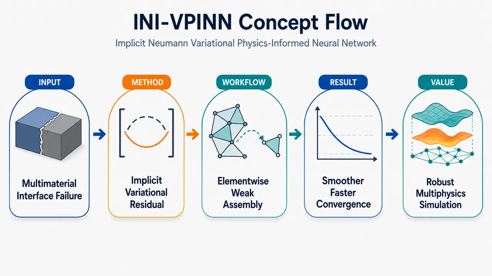
研究问题标准 PINN 在多材料区域、尖锐材料界面、混合 Dirichlet–Neumann 边界和尖角几何奇异性中，常因强形式残差需要处理不连续材料系数导数、界面条件需额外损失、Neumann 条件需惩罚项、多损失权重难平衡而出现收敛慢、界面通量不守恒、边界误差大和局部奇异特征解析差的问题。创新方法INI-VPINN 将 Neumann 边界条件和多材料界面连续/通量守恒条件统一嵌入单元级弱形式变分残差：用紧支撑测试函数覆盖局部元素，通过分部积分把 Neumann 通量变成边界积分；在 Dirichlet 边界令测试函数为零以消除未知法向导数；在材料界面不显式求 ∇κ，而只积分 κ∇u·∇v，使界面连续与通量守恒由弱形式自然满足。Aha 点是：不再为 Neumann 和界面单独加损失项，也不需要每个材料子域一个网络。工作流程输入几何区域、材料系数 κ(x)、源项 f、Dirichlet/Neumann 边界数据；将区域划分为非重叠局部元素；根据元素位置选择测试函数：内部用两端为零的 Jacobi/Legendre 差函数，Neumann 边界用端点非零的 odd sine/cosine，Dirichlet 边界用端点为零函数；构造二维张量积测试函数；用 Gauss–Lobatto–Jacobi 积分计算每个元素的体积分 κ∇uθ·∇v、源项投影 fv 和 Neumann 边界通量积分 κgNv；形成单元残差 R=U−F；训练全连接神经网络 uθ(x,y)，最小化变分残差损失加 Dirichlet 边界 MSE；输出满足 PDE、Neumann 通量和多材料界面条件的连续势场解。关键结果在 Poisson 和 Laplace 基准问题中，面对尖锐材料界面、复杂几何和几何奇异点，INI-VPINN 相比 vanilla PINN、显式 Neumann VPINN 和 cPINN 表现出更高精度、更平滑收敛和更快收敛；弱形式避免对不连续 κ 求导，降低 Dirac 型奇异项导致的病态；Neumann 与界面条件不再需要额外损失权重，减少训练中的损失竞争。论文提供 GitHub v0.1.0 实现，但给定文本未包含具体误差数值。应用价值该方法适合求解多材料热传导、电磁、扩散、弹性势场、地球物理和复杂工程结构中的椭圆型 PDE，尤其适用于材料系数突变、内部界面密集、边界条件混合、尖角或裂纹附近解奇异的场景；它用单一神经网络和局部弱形式替代多子域网络与繁琐界面惩罚，有望减少界面采样、损失调参和通量不守恒问题，为复杂多材料物理仿真提供更稳定的神经求解框架。第一部分：核心概览 (Overview)
INI-VPINN 提出一种弱形式物理信息神经网络，通过紧支撑测试函数、分部积分与单元级变分残差，将 Neumann 边界条件和多材料界面连续/通量条件自然嵌入训练目标，避免额外界面损失、Neumann 惩罚项和多子域网络。其定位在 VPINN、hp-VPINN、cPINN 之后，重点补足弱形式 PINN 在混合边界条件、多材料突变、几何奇异性中的隐式约束能力。
---
第二部分：结构化快速回顾
《INI-VPINN: A Variational Physics-Informed Neural Network with Implicit Neumann and Interface Handling for Multi-Material Domains with Geometric Singularities》（None，）
背景
标准 PINN 在多材料尖锐界面、混合边界条件和尖角奇异几何中容易出现损失权重失衡、界面采样敏感、收敛慢等问题。已有 VPINN / hp-VPINN / cPINN 改进了弱形式或界面处理，但仍常依赖显式边界/界面损失或多个子域网络。
方法
INI-VPINN 使用 Petrov–Galerkin 弱形式、紧支撑 weighting functions、element-wise assembly 和 integration by parts。测试函数在 Dirichlet 边界取零以消除未知法向导数项，在 Neumann 边界不取零以自然保留边界通量积分；材料界面通过弱形式积分隐式满足势函数连续与通量守恒。
结果
摘要层面报告，在 Poisson 和 Laplace 问题、尖锐界面、复杂几何测试中，相比 vanilla PINN、显式 Neumann VPINN、cPINN，INI-VPINN 具有更高精度、更平滑且更快的收敛。已提供 GitHub v0.1.0 实现。
讨论
核心优势来自弱形式不需要显式求导 κ，因此对不连续材料系数更稳定；同时 Neumann 项直接出现在边界积分中，减少多损失项权重调节需求。
局限
实现复杂度略高；高维张量积测试函数与 3D 弱形式积分的计算负担仍需进一步研究；Dirichlet 条件仍需显式惩罚、lifting function 或硬约束处理。
结论
INI-VPINN 为多材料、混合 Neumann–Dirichlet 边界、复杂几何和界面突变 PDE 提供一种更自然的弱形式神经求解框架，主要创新在于隐式 Neumann 处理与隐式界面处理的统一。
---
第三部分：逐章节冷凝解析 (Section-by-Section Condensing)
Abstract
Weak-form PINN with implicit Neumann and interface handling
INI-VPINN 被定义为一种新的弱形式 Physics-Informed Neural Network，核心机制是把 Neumann boundary conditions 和 interface conditions 放进变分公式，而非额外损失项。摘要直接给出方法定位：*"We propose a new weak-form Physics-Informed Neural Network approach (named INI-VPINN)."* 关键贡献在于：*"INI-VPINN naturally incorporates Neumann boundary and interface conditions into the variational formulation."*
No extra loss terms or multiple subdomain networks
相较于 cPINN、XPINN 等多子域或显式接口损失方法，INI-VPINN 避免引入额外接口损失权重和多个网络。摘要中明确写出：*"It removes the need for additional loss terms or multiple subdomain networks."* 这直接针对 PINN 训练中常见的多损失权重平衡和接口采样敏感性问题。
Compact support weighting functions and integration by parts
方法基础是紧支撑 weighting functions 与 integration by parts。摘要说明：*"This framework employs compact support weighting functions and integration by parts to implicitly impose flux and continuity constraints."* 其中 flux constraints 对应 Neumann 或界面通量守恒，continuity constraints 对应界面处势函数连续。
Benchmark scope and comparative performance
测试对象包括 Poisson 和 Laplace 问题，具有尖锐界面和复杂几何。摘要报告：*"The proposed method is tested on Poisson and Laplace problems with sharp interfaces and complex geometries."* 性能层面声称：*"Results show that, compared with several other Physics Informed Neural Networks-based formulations, the INI-VPINN consistently achieves higher accuracy, smoother and faster convergence."* 具体数值结果在所给材料中未完整出现。
Public implementation
实现公开于 GitHub，版本标注为 v0.1.0。摘要写明：*"The implementation is publicly available in a GitHub repository (version v0.1.0)."* 链接为 `https://github.com/ShayanDodge/INI-VPINN`。
---
1 Introduction
PINN lineage and broad application context
PINN 的技术谱系从 Deep Galerkin Method (DGM) 到 Physics-Informed Neural Networks (PINNs)。引言指出：*"Earlier developments in physics-guided neural network approaches for solving partial differential equations include the Deep Galerkin Method (DGM) Sirignano and Spiliopoulos (2018), which laid important groundwork for subsequent methods."* PINN 的基本思想是将 PDE 嵌入训练过程：*"PINNs are a class of machine learning models that embed governing equations directly into the training process instead of relying purely on data."*
Application domains
PINN 已用于多个科学工程场景，包括 fluid mechanics、heat transfer、solid mechanics、geophysics、electromagnetics、photonics、cardiac electrophysiology 和 finance。引言列出应用范围：*"fluid mechanics and Navier–Stokes flows"*, *"heat transfer and thermal engineering"*, *"solid mechanics and inverse elastography"*, *"geophysics and seismology"*, *"electromagnetics"* 与 *"finance for option pricing problems"*。
Standard PINN advantages
标准 PINN 的吸引力来自四点：mesh-free formulation、physics-guided learning、无需特殊离散格式、潜在适合高维问题。引言明确概括：*"their mesh-free formulation, which makes them well-suited for irregular domains"*, *"physics-guided learning that reduces, or completely removes, data requirements"*, *"the lack of special discretization schemes"*, 以及 *"their potential for high-dimensional problems, mitigating the curse of dimensionality compared to classical solvers."*
Interface handling remains difficult
在多材料尖锐界面问题中，标准 PINN 难以满足界面条件。引言直接指出：*"In multi-material problems with sharp interfaces, standard PINNs struggle to satisfy the interface conditions."* 现有方案包括 XPINN、I-PINNs、cPINNs，但 cPINN 仍存在两类核心问题：*"they need one network per subdomain"*，并且 *"interface conditions are enforced via additional loss terms"*，导致参数量、计算成本、接口采样密度和损失权重敏感性增加。
Multiple loss terms cause optimization imbalance
标准 PINN 同时处理 PDE residual、BC、IC、interface losses 时，多项损失幅值不同，训练中主导项会淹没较小项。引言写道：*"The multi-part loss often includes several terms with widely varying magnitudes, so that dominant ones frequently drown out the effect of smaller components in the total loss during the training."* 已有 NTK rescaling 和 self-adaptive weighting 能缓解，但会带来复杂度和计算开销：*"NTK-based methods require costly eigenvalue computations while self-adaptive schemes require learning many additional parameters."*
Loss-balancing methods do not solve material discontinuity capacity
即便动态损失权重改善训练，也不一定提高神经网络解析不连续或异质材料界面的能力。引言强调：*"such methods are often characterized by the correct training dynamics, but they do not fundamentally enhance the capacity of the neural network to resolve discontinuities or heterogeneous material discontinuities."* 这为 INI-VPINN 的结构性改造提供动机。
Complex geometry and singularity challenge
尽管 PINN 是 mesh-free，尖角、奇异点、非规则区域仍给采样和边界条件施加带来困难。引言指出：*"Despite being mesh-free, PINNs still face challenges in irregular or multiscale domains, particularly those with sharp corners (singularities), where point sampling and BCs enforcement are non-trivial tasks."* 已有强力方法是 hp-VPINN：*"The most powerful approach to handle singularities is Variational PINNs with domain decomposition (hp-VPINN)."*
Weak-form PINN family as predecessor
弱形式替代强形式可降低高阶导数导致的不稳定。DEM 通过能量泛函最小化，VPINN 使用 Petrov–Galerkin 投影，VarNet 使用局部 FE-like test functions，WAN 使用 min–max 弱形式，TgNN-wf 结合 theory-guided test functions。引言对 VPINN 的定位为：*"VPINNs, unlike strong-form PINNs, enforce the weak formulation by projecting the residual onto global test functions and integrating over the entire domain."*
Recent VPINN variants and their limitations
hp-VPINN 将变分损失和 domain decomposition 结合，借鉴有限元 hp-refinement。引言写道：*"The hp-Variational Physics-Informed Neural Network (hp-VPINN) builds on the VPINN framework by combining variational loss enforcement with domain decomposition and bringing in the classical hp-refinement strategy from finite element methods to handle singularities and discontinuities."* 但表 1 指出 hp-VPINN 的限制是：*"Unable to implicitly handle Neumann and interface conditions."*
Two unresolved issues motivating INI-VPINN
弱形式 PINN 仍未充分解决两件事：Neumann 边界条件的高效弱形式施加和异质介质界面条件的内禀施加。引言明确列出：*"they still leave two key issues largely unresolved: (i) the efficient enforcement of Neumann boundary conditions within the weak formulation, and (ii) the intrinsic enforcement of interface conditions in heterogeneous media."*
INI-VPINN’s stated aim
INI-VPINN 的目标是把 Neumann 与 interface conditions 嵌入变分残差，避免 ad-hoc penalty 和 separate subdomain networks。引言给出定义：*"These open issues motivated us to develop the Implicit Neumann and Interface VPINN (INI-VPINN), a framework that extends weak-form PINNs by naturally embedding Neumann boundary conditions and interface conditions into the variational residual."* 方法优势为：*"our approach avoids the need for ad-hoc penalty terms or separate subdomain networks."*
Method comparison table
表 1 对比多个方法：DEM 限于存在能量形式，VPINN 全局基函数适应性弱，VarNet 精度依赖 patch size，WAN 优化昂贵，hp-VPINN 不能隐式处理 Neumann 和 interface，cv-PINN 对不规则几何灵活性较差，RVPINN functional evaluation 更昂贵，INI-VPINN 的主张是：*"Implicit Neumann and interface enforcement via local integration; accurate for multi-material domains."* 局限是：*"Slightly higher implementation complexity."*
---
2 Formulation of the INI-VPINN
Governing elliptic boundary-value problem
目标 PDE 是带空间变材料系数的二维 Poisson 问题，区域 Ω ⊂ ℝ²，边界分解为 ΓD ∪ ΓN。方程为
[
-nablaḑot(κ(x)nabla u(x))=f(x)
]
并满足 Dirichlet 与 Neumann 条件。原文定义：*"Let us consider an elliptic boundary-value problem described by the Poisson equation with spatially varying material properties on a domain Ω ⊂ ℝ², with the boundary ∂Ω decomposed into Dirichlet and Neumann parts, ∂Ω = ΓD ∪ ΓN."*
Unknowns and functional space
未知函数是 u(x)，源项是 f(x)，材料系数 κ(x)>0，边界数据是 gD 和 gN。函数空间初始要求为 Wm,²(Ω), m ≥ 2。原文说明：*"Here, u(x) is an unknown potential function, f(x) is the source term function, κ(x)>0 describes the space dependency of the material property, and gD and gN specify the Dirichlet and Neumann boundary conditions, respectively."*
Weak formulation through multiplication and integration
通过 weighting function v(x) 乘以 PDE 并在 Ω 上积分，得到弱形式出发点。原文描述：*"Starting from (1) we derive the weak formulation by multiplying the Poisson equation times a weighting function v(x) and integrating over the domain Ω."* 该步骤将强形式残差转为积分形式，为后续分部积分和边界项处理提供基础。
Green identity lowers derivative requirement
应用 Green’s identity 后，体积分从二阶导数变为一阶梯度项，同时出现 ΓD 和 ΓN 上的边界积分。原文指出：*"After applying Green’s identity on the whole domain and splitting the boundary integral according to ∂Ω = ΓD ∪ ΓN"*，得到
[
int_Ømega κnabla uḑotnabla v-intΓ_Dκpartialₙᵤ,v-intΓ_Nκpartialₙᵤ,v=int_Ømega fv.
]
这种形式降低了弱导数要求：*"Equation (3) allows to relax the condition on the weak derivative requirement, so u(x) can be sought in the Sobolev space Wm−¹,²(Ω)."*
Dirichlet boundary integral eliminated by vanishing test functions
为了避免计算 Dirichlet 边界上的未知法向导数 ∂n u，测试函数在 ΓD 上取零。原文明确：*"To avoid calculating normal derivatives of the potential function (∂n u) on the Dirichlet boundary ΓD, the weighting functions are chosen such that they belong to Wm−¹,²₀₍Ω) when their support includes ΓD."* 因而
[
intΓ_Dκpartialₙᵤ,v,dΣ=0
]
原文写明：*"This eliminates the boundary integral associated with ΓD."*
Neumann condition imposed naturally through nonzero test functions
Neumann 边界上的测试函数不取零，因此边界通量项保留，并用 ∂n u = gN 替换。原文说明：*"the Neumann BCs can be directly imposed in the weak form: in order to do so, the weighting functions are chosen not to vanish on ΓN."* 于是 Neumann 边界项不为零：*"∫ΓN κ(x)∂n u v dΣ ≠ 0"*，并自然转化为
[
intΓ_Nκ g_Nv,dΣ.
]
Final weak form embeds Neumann boundary condition
最终弱形式为
[
int_Ømega κnabla uḑotnabla v-int_Ømega fv=intΓ_Nκ g_Nv.
]
边界条件配合为 u=gD, v=0 on ΓD；∂n u=gN, v≠0 on ΓN。这一结构体现“自然边界条件”的有限元思想。原文总结：*"Note that the weak formulation (6) not only handles the Neumann BC implicitly, but it is also capable of accommodating material discontinuities without the explicit enforcement of interface conditions."*
Element terminology justified by compact support
由于 weighting functions 具有紧支撑，每个支撑区域可视作一个 element。原文解释：*"The weighting functions considered for IVI-PINN indeed have compact support as it will be shown later."* 因而：*"defining a set of weighting functions that achieve full coverage of the domain is equivalent to discretize the geometrical domain into a set of elements."* 每个元素 Vk, k=1,…,N 对应一个或多个测试函数 vk。
Element-wise weak formulation
单元级表示将体积分拆分为所有 Vk 上的积分，Neumann 边界项只在与 ΓN 接触的元素上计算。原文给出：*"The weak form can then be written in an element-wise representation"*，并定义 NΓ 为 Neumann 边界元素数：*"NΓ is the number of elements having a common side with the boundaries characterized by Neumann conditions (ΓN); obviously NΓ < N."*
Localized residual improves local feature resolution
局部弱形式提升收敛和局部结构解析能力，尤其针对材料突变、尖锐梯度、角点奇异性。原文写道：*"This localized formulation (7) improves the convergence behaviour and provides better resolution of local features such as material discontinuities, sharp gradients, or corner singularities."*
---
3 Numerical Implementation
3.1 Weighting functions families
Weighting function choice is flexible and problem-dependent
VPINN 中 weighting functions 并不唯一，会影响精度、收敛和边界处理。原文开头指出：*"The selection of weighting functions in the VPINN framework is not unique and depends on the specific problem."* 既有研究允许多类函数：*"allowing for polynomial, trigonometric, and locally supported functions."*
INI-VPINN uses compact support families
INI-VPINN 提供多种紧支撑 weighting functions。原文说明：*"In the INI-VPINN framework, different families of compact support weighting functions are available."* 所展示三类函数均有 rank n 控制振荡频率：*"Each of them is characterized by an oscillatory behavior determined by its rank n, higher ranks corresponding to higher spatial frequencies."*
Odd cosine modes
在区间 [a,b] 上，odd cosine weighting functions 定义为
[
v⁽o̧s⁾ₙ₍ₓ₎₌ₒ̧słeft(frac(2n-1)π2fracx-ab-ai̊ght),quad n=1,2,dots
]
原文描述：*"These functions correspond to cosines whose wave number is an odd multiple of π."* 端点性质为 v(a)=+1, v(b)=0：*"By construction, v⁽cos⁾ₙ₍ₐ₎₌₊₁ for all n and v⁽cos⁾ₙ₍b)=0 for all n."* 这使其适合 Neumann 边界位于左端、Dirichlet/零测试端位于右端的局部配置。
Odd sine modes
odd sine weighting functions 定义为
[
v⁽sⁱⁿ⁾ₙ₍ₓ₎₌₍₋₁₎ⁿsinłeft(frac(2n-1)π2fracx-ab-ai̊ght).
]
原文说明：*"The factor (−1)ⁿ ensures that v⁽sⁱⁿ⁾ₙ₍b)=+1 for all n, and v⁽sⁱⁿ⁾ₙ₍ₐ₎₌₀ for all n."* 因而它与 odd cosine 在端点非零位置上互补：*"They complement the cosine modes, forming an odd-harmonic trigonometric basis."*
Jacobi / Legendre difference modes
Jacobi-type difference functions 由 Legendre 多项式差定义：
[
v⁽Jac⁾ₙ₍ₓ₎₌Pₙ₊₁(x)-Pₙ₋₁(x),quad n=1,2,dots
]
原文称：*"These functions are differences of consecutive Legendre polynomials."* 关键端点性质是两端为零：*"A key feature of these functions is that their values vanish at the domain boundaries, i.e., v⁽Jac⁾ₙ₍ₐ₎₌₀ and v⁽Jac⁾ₙ₍b)=0."* 因此特别适合内部单元和 Dirichlet 相关处理。
---
3.2 Selection of the weighting functions
Weighting function selection is central to accuracy
由于区域被划分为非重叠元素，每个元素必须根据位置选择合适测试函数。原文强调：*"the proper weighting functions must be chosen for each element among the three families introduced before; this choice is not trivial and is, on the contrary, fundamental for the accuracy of the solution."*
Interior elements use Jacobi functions
内部元素不接触全局边界，最佳选择是两端为零的 Jacobi functions。原文给出原则：*"for interior elements (i.e., those that do not touch the global boundaries), Jacobian functions are the best-suited option, since they vanish at both endpoints."* 其效果是：*"making them consistent at interfaces, avoiding spurious boundary residuals, and providing stable convergence."*
Neumann boundary elements use non-vanishing sine or cosine modes
若元素接触 Neumann 边界，应选在该边界不为零的 odd cosine 或 odd sine。原文说明：*"if the boundary condition is of the Neumann type, one should select between odd cosine and odd sine functions depending on the location of the Neumann boundary, choosing the family that does not vanish on that boundary section."* 这与第 2 节 Neumann 项需保留边界积分完全一致。
Dirichlet boundary elements use vanishing test functions
Dirichlet 边界需要测试函数取零以消除法向导数边界积分。原文说明：*"For Dirichlet boundaries, Jacobi functions or odd sine or cosines, depending on the point where the condition must be enforced, can be used to enforce vanishing value condition."* 但这只使 v=0，并不自动施加 u=gD。
Dirichlet value still requires explicit treatment
设置测试函数在 Dirichlet 边界为零只是避免计算边界积分，不等于满足 Dirichlet 值。原文明确区分：*"By setting the test functions v equal to zero on Dirichlet boundaries, we avoid computing the boundary integrals in (6) involving the normal derivative of u."* 同时：*"However, this choice does not prescribe the actual value of u on the boundary."* 因此 u=0 或 u=gd≠0 仍需：*"via a lifting function or explicitly enforcing the boundary condition."*
1D example links Neumann–Dirichlet configuration to cosine and Jacobi modes
一维示意中，区域分成 four non-overlapping elements，一个端点是 Dirichlet，另一个端点是 Neumann。原文写道：*"the computational domain is divided into four non-overlapping elements; this is the case when one endpoint is characterized by Dirichlet type BC and the other one characterized by Neumann type BC."* Neumann 侧使用 odd cosine，因为：*"which satisfy v⁽cos⁾ₙ₍ₐ₎₌₊₁ at the Neumann side."*
Truncation index as p-refinement
rank 或 truncation index n 表示保留的基函数数量。原文说明：*"the truncation index n denotes the number of basis functions retained in the approximation."* 从 Petrov–Galerkin 角度，增加 n 类似 p-refinement，划分更多元素类似 h-refinement：*"increasing n corresponds to p-refinement, while subdividing the domain corresponds to h-refinement."*
2D tensor-product construction
二维区域划分为 N 个矩形元素，每个元素在 x 和 y 方向独立选择测试函数族与阶数。原文写道：*"Independent choices are made for the x- and y-directions, with ranks n=1,…,N^x and m=1,…,N^y."* 每个元素拥有 N^x × N^y 个张量积测试函数：*"each element is associated with a total of N^x × N^y tensor-product between suited 1D weighting functions."*
Higher-dimensional extension and computational burden
框架原则上不限于二维，可通过增加张量积因子扩展到高维。原文说明：*"The INI-VPINN framework is not limited to the 2D problems; its extension to higher dimensions is achieved by extending the tensor product of the weighting functions."* 但 3D 计算成本仍未解决：*"the computational burden for the construction of the tensor product and for the evaluation of the weak form on the 3D grid of points still needs further investigation."*
---
3.3 Implicit Enforcement of Interface Conditions
#### 3.3.1 Sharp interface representation (Heaviside)
Strong form exposes derivative of discontinuous material coefficient
展开强形式有
[
nablaḑot(κnabla u)=κnabla²u+nablaκḑotnabla u.
]
当 κ 在界面突变时，∇κ 产生奇异项。原文定义界面：*"define ΓI as the interface between two different materials, respectively characterized by constants κ1 and κ2."*
Local normal–tangential coordinate system
界面每一点可定义法向与切向坐标 (xn, xτ)，分别沿 n̂ 和 τ̂。原文描述：*"in each point P ∈ ΓI a local reference system (xn, xτ) can be defined, whose axis are aligned with the normal versor n̂ and the tangential versor τ̂ respectively."* 这使材料跳变可写为法向坐标函数。
Heaviside representation generates Dirac delta derivative
材料系数用 Heaviside step function 表示：
[
κ(xₙ₎₌κ₁₊₍κ₂₋κ₁₎H(xₙ₎.
]
其梯度为
[
nablaκ=(κ₂₋κ₁₎δ_D(xₙ₎hat n.
]
原文指出：*"By modeling κ as a step function, as illustrated in Figure 5(a), the material changes suddenly at the interface ΓI."* 因此：*"∇κ behaves as a Dirac function, leading to numerical ill conditioning."*
Explicit interface conditions replace singular strong-form term
为避免 Dirac 奇异项，强形式通常引入显式界面条件：u 连续与 κ∂n u 通量连续。原文解释：*"The first condition enforces continuity of the function u (often referred as potential function), while the second condition ensures conservation of the flux through ΓI."* 两者共同作用为：*"Together, they replace the singular term in the strong form and provide a well-posed formulation for inhomogeneous materials."*
Weak form avoids differentiating κ
INI-VPINN 的弱形式只含 κ∇u·∇v，不显式出现 ∇κ。原文强调：*"In contrast, the weak form (7) does not require derivating κ, and therefore it remains well-defined also for non-homogeneous materials."* 这正是多材料问题中弱形式优于强形式的核心数学机制。
Interface conditions are automatically satisfied by weak integration
弱形式积分自动编码界面条件，不需要接口惩罚项。原文直接说明：*"the weak form integration automatically satisfies the interface conditions of (14)."* 即使 κ 不连续，仍有：*"the weak form enforces the correct interface conditions without requiring explicit penalty terms or additional constraints, and the discontinuity is handled implicitly in the integral evaluation."*
---
#### 3.3.2 Smooth interface representation (tanh)
Tanh smoothing regularizes discontinuous material coefficient
强形式中可用平滑 tanh 函数近似材料突变：
[
T(xₙ₎₌frac12(1+tanh(xₙ/t)).
]
参数 t>0 控制过渡层厚度。原文定义：*"where t>0 controls the thickness of the transition layer."*
Small transition thickness still causes strong-form difficulty
虽然 tanh 使 κ 可微，但当 t 很小时，强形式仍难处理。原文写道：*"Although the derivative of this function ... is smooth and κ remains differentiable everywhere, when t is chosen very small to model a sharp discontinuity, numerical issues persist, and the strong form remains difficult to handle."*
Weak form remains well-defined with smoothed κ
将平滑 κ 放入弱形式时，不显式求 κ 的导数，PDE 保持良定义。原文指出：*"if the smooth version of κ is used inside the weak form, the PDE remains well-defined because no derivatives of κ appear explicitly."* 同时：*"the weak formulation automatically enforces the correct interface conditions."*
Sharp-interface limit recovered as t approaches zero
当 t → 0，解收敛到尖锐界面问题。原文说明：*"As t → 0, the solution converges to the sharp-interface problem."* 实践中选择小而有限的 t 可以兼顾物理突变与数值稳定：*"choosing a small but finite t regularizes the discontinuity in a way that preserves the underlying physics while avoiding numerical difficulties."*
Smoothing improves automatic differentiation
训练使用 Automatic Differentiation (AD) 和 ADAM 时，平滑材料系数能改善梯度行为。原文写道：*"using a smooth function to describe material discontinuities improves AD, since the gradients of κ remain smooth and bounded, ensuring well-behaved sensitivities during training."*
Smoothing improves quadrature accuracy
弱形式积分依赖 quadrature。若 κ 是阶跃函数，跳变可能落在 quadrature points 之间，产生 aliasing 与 sampling errors。原文说明：*"If κ is a sharp step function, the discontinuity may fall between quadrature points, so the jump is not captured correctly, leading to aliasing and sampling errors."* 平滑后 integrand 连续：*"with a smoothed material coefficient κ, the integrand is continuous, so quadrature points sample a well-defined function."*
---
4 Neural network and loss function
2D element-wise residual formulation
二维问题中，每个元素 Ωk 上定义 x/y 方向测试函数 v⁽x⁾ₖ,ₙ 与 v⁽y⁾ₖ,ₘ。原文说明：*"From now on we refer to 2D problem, in which the element-wise representation of the weak form (7) is considered for each element Ωk with Neumann boundary ΓN^k and test functions."*
Bilinear form includes volume gradient term and Neumann boundary term
单元残差左侧 U⁽k⁾ₙ,ₘ 包含
[
intØₘₑgₐ_ₖκ(partialₓᵤ,partialₓᵥₓᵥ_y+partial_yu,vₓpartial_yv_y),dxdy
]
以及 Neumann 边界项
[
-intΓ_N^ₖκ g_N vₓᵥ_y,dΓ.
]
这体现 Neumann 条件已经进入弱残差，而不是额外 MSE 边界损失。
Source term projection defines F
右端源项投影为
[
F⁽k⁾ₙ,ₘ=intØₘₑgₐ_ₖf(x,y)v⁽x⁾ₖ,ₙ(x)v⁽y⁾ₖ,ₘ(y),dxdy.
]
原文写道：*"The right-hand side contribution remains F⁽k⁾ₙ,ₘ=..."*，即对源项进行同一测试函数空间下的投影。
Gauss–Lobatto–Jacobi quadrature
积分使用 tensor-product Gauss–Lobatto–Jacobi (GLJ) quadrature，每个局部元素上阶数为 Nquad。原文说明：*"the integrals are computed using a tensor–product Gauss–Lobatto–Jacobi (GLJ) quadrature rule of order Nquad on each local element k."* 每个元素产生 Nquad² 个 quadrature points：*"This procedure results in Nquad² quadrature points per element."*
Endpoint inclusion captures boundary terms
GLJ quadrature 的端点包含性质使边界项能自然捕捉。原文指出：*"The use of GLJ quadrature is particularly convenient because the endpoints are included, allowing the boundary terms to be naturally captured in the weak formulation."* 这与 Neumann 边界项隐式进入变分残差密切相关。
Variational loss averages squared element residuals
变分损失为
[
L_V=sumₖ₌₁Nfrac1N^xN^ysumₙ₌₁N^xsumₘ₌₁N^y(R⁽k⁾ₙ,ₘ)²
]
其中 R=U−F。原文定义：*"where R⁽k⁾ₙ,ₘ=U⁽k⁾ₙ,ₘ−F⁽k⁾ₙ,ₘ."* 作用域为 Ω ∪ ΓN，说明 Neumann 边界已经包含在弱残差中。
Dirichlet loss remains explicit
Dirichlet 条件通过 sampled boundary points 上的 MSE penalty 施加：
[
L_D=frac1N_DsumN_D(u-g_D)².
]
原文说明：*"For Dirichlet boundary conditions, an additional penalty term is imposed."* 这与第 3.2 节一致：测试函数取零不能自动规定 u=gD。
Total loss uses two weights
总训练目标为
[
LINI_VPINN=łambda_DL_D+łambda_VL_V.
]
原文定义：*"where λD and λV are the weights associated with the Dirichlet boundary loss and the weak variational loss, respectively."* 相比标准 PINN，Neumann 和 interface 不再需要单独损失权重。
Fully connected network approximates scalar field
网络为 fully connected neural network，用输入 (x,y) 近似 u: Ω→ℝ。原文写道：*"The fully connected neural network, sketched in Figure 6, approximates u: Ω → ℝ from the input (x,y)."* PDE 与 Neumann 条件通过弱形式损失施加：*"The Poisson equation together with the Neumann boundary condition is enforced via a weak-form loss."*
---
5 Results
Evaluation targets geometric singularity and material discontinuity
结果部分的测试目标覆盖几何奇异性和材料不连续性。原文开头写道：*"the performance of the INI-VPINN approach across different problem complexities, such as geometric singularity and material discontinuities, is evaluated."*
PDE categories include Laplace and Poisson
测试分为两类 PDE：Laplace equation 和带混合边界条件的 Poisson equation。原文说明：*"From a PDE perspective, the test cases can be divided into two categories: the Laplace equation and the Poisson equation with mixed boundary conditions."*
Comparison methods match specific failure modes
对比方法选择围绕 INI-VPINN 试图解决的四类问题：Neumann 边界、界面条件、多损失平衡、几何奇异性。原文列出：*"the treatment of Neumann boundary conditions; the handling of interface conditions in multi-material domains; the difficulty of balancing multiple loss terms in PINNs; the presence of geometric singularities."*
Vanilla PINN as baseline
Vanilla PINN 被用作标准参考，以突出 PDE、Dirichlet、Neumann 多项损失平衡问题。原文说明：*"Vanilla PINN: selected as a baseline reference, as it represents the standard formulation."* 其对照意义在于：*"It highlights known challenges related to balancing multiple loss terms (PDE, Dirichlet, and Neumann)."*
VPINN with explicit Neumann enforcement as variational comparator
显式 Neumann VPINN 用来分离“弱形式”与“隐式 Neumann”的贡献。原文写道：*"VPINN with explicit Neumann enforcement: selected to enable a direct comparison within a variational framework."* 该对比能评估：*"the impact of explicit versus implicit enforcement of Neumann boundary conditions."*
cPINN as multi-material comparator
cPINN 作为多材料问题代表方法，通过 domain decomposition 显式施加 interface conditions。原文说明：*"Conservative PINN (cPINN): selected as a representative method for multi-material problems, where interface conditions are enforced explicitly through domain decomposition."* 这使其可直接对比 INI-VPINN 的隐式界面处理：*"This enables a direct comparison with the proposed implicit interface treatment in INI-VPINN."*
FEM reference solution
所有测试还使用商业 FEM 软件 Comsol Multiphysics Ver. 6.4 生成高精度参考解。原文说明：*"all the test cases are also modeled and solved by the use of a commercial Finite Element Method (FEM) based software (i.e. Comsol Multiphysics Ver. 6.4)."* FEM 设置包括 quadratic elements，并调节自由度直到精度对网格加密不再变化：*"quadratic elements are selected and the number of degrees of freedom ... is selected in order to obtain constant accuracy given additional density increase."*
Numerical values unavailable in supplied content
结果段落在提供材料中止于：*"First, two test cases with homogeneous materials but geometric singularities are examined, as illustrated i"*。因此具体测试误差、收敛曲线数值、网络层数、训练 epoch、学习率、样本量、P 值或统计显著性未出现在可解析文本中，不能可靠复原。
---
第四部分：深度理解与语言支持 (Understanding & Nuance)
1. 术语解析
Weak-form learning
Weak-form learning 指不直接最小化 PDE 强形式点残差，而是把 PDE 乘以测试函数并积分后最小化投影残差。语境中对应：*"enforce the weak formulation by projecting the residual onto global test functions and integrating over the entire domain."* 微妙之处在于：它弱化了对高阶导数的需求，适合低正则解、材料突变、尖角奇异性。
Natural / implicit enforcement
Natural enforcement 或 implicit enforcement 并不意味着边界条件消失，而是条件通过变分公式中的边界积分自动进入残差。Neumann 条件属于自然边界条件，因分部积分后出现 ∫ΓN κgNv。语境中：*"the Neumann condition ∂n u = gN be enforced 'naturally' through the boundary integral."*
Interface conditions
Interface conditions 在多材料问题中通常包括两类：势函数连续 [u]=0 和通量连续 [κ∂n u]=0。语境中：*"The first condition enforces continuity of the function u ... while the second condition ensures conservation of the flux through ΓI."* 它们不是普通边界条件，而是材料内部交界处的物理匹配条件。
Compact support weighting functions
Compact support weighting functions 指测试函数只在局部元素内非零。语境中：*"The weighting functions considered ... have compact support."* 微妙之处在于：这使弱形式从全局投影变成局部残差，类似有限元单元装配，同时保留神经网络全局函数逼近。
Spurious boundary residuals
Spurious boundary residuals 指由测试函数端点行为不匹配而产生的非物理边界残差。语境中 Jacobi 函数适合内部单元，因为：*"they vanish at both endpoints, making them consistent at interfaces, avoiding spurious boundary residuals."* 这里 “spurious” 强调残差来自数值构造，而非真实 PDE 误差。
---
2. 疑难查证
为什么弱形式能隐式满足界面通量连续？
强形式中
[
-nablaḑot(κnabla u)=f
]
若 κ 跳变，展开后出现
[
nablaκḑotnabla u
]
而 ∇κ 是 Dirac delta。这会迫使界面处产生一个分布意义上的奇异项。为了让方程没有非物理 delta 残差，解必须满足通量连续 [κ∂n u]=0。
弱形式不展开 ∇·(κ∇u)，而是对整个区域积分并分部积分。若把区域分成界面两侧，两侧分部积分会产生界面边界项；由于界面法向相反，这些项相加后形式上变成
[
[κpartialₙ u]v
]
要使弱形式对所有测试函数成立，就必须有
[
[κpartialₙ u]=0.
]
因此通量连续不是额外假设，而是弱解定义的一部分。
为什么 Dirichlet 不能像 Neumann 一样隐式处理？
Neumann 条件在分部积分后自然出现在边界通量项中，所以可通过边界积分施加。Dirichlet 条件规定的是函数值 u=gD，不是通量；分部积分不会自动产生一个能直接替换为 gD 的项。令测试函数 v=0 只是消除 Dirichlet 边界上的未知通量项，不能保证网络输出满足 u=gD。因此仍需 MSE penalty、lifting function 或 hard constraint。
为什么 tanh smoothing 对 AD 和 quadrature 都有帮助？
AD 需要对网络和输入相关表达式求导；若 κ 是阶跃函数，其导数在界面是分布而非普通函数，训练梯度可能不稳定。tanh smoothing 使 κ 和梯度有界、连续。
Quadrature 方面，积分点是离散的。若跳变恰好落在两个积分点之间，阶跃被漏采，积分误差会很大；tanh 过渡层让积分点看到连续变化，降低 aliasing。但 t 太小仍需要足够密集的 quadrature，否则过渡层仍可能采样不足。
---
第五部分：创新评估与关联 (Synthesis & Novelty)
1. 创新性判断
核心新颖性：Neumann 与 interface 的统一隐式弱形式处理
过去 2–5 年内，PINN 相关工作大量集中在 loss balancing、domain decomposition、weak-form residual、adaptive weighting 和 geometry handling。INI-VPINN 的区别不在于首次使用弱形式，而在于把两个长期未充分统一的问题——Neumann boundary conditions 与 heterogeneous interface conditions——同时纳入同一个 element-wise variational residual。引言中明确指出此前弱形式扩展仍留下：*"the efficient enforcement of Neumann boundary conditions within the weak formulation"* 和 *"the intrinsic enforcement of interface conditions in heterogeneous media."*
相对于 cPINN：避免多网络和显式界面损失
cPINN 通过子域分解和接口损失处理守恒，但代价是每个子域一个网络、接口条件显式进入 loss。INI-VPINN 的创新是用弱形式积分自动满足 [u]=0 与 [κ∂n u]=0，避免接口 penalty 权重与接口采样密度敏感性。相关对比在引言中已经锁定：cPINN *"need one network per subdomain"*，并且 *"interface conditions are enforced via additional loss terms."*
相对于 hp-VPINN：补足 Neumann/interface 隐式处理
hp-VPINN 已能通过 h/p refinement 改善奇异性和局部特征，但表 1 的限制是：*"Unable to implicitly handle Neumann and interface conditions."* INI-VPINN 继承局部测试函数和单元式弱形式思想，同时通过测试函数端点选择和边界积分保留机制处理 Neumann 条件，这是其相对 hp-VPINN 的关键推进。
相对于 loss-balancing 方法：减少需要平衡的损失项数量
NTK weighting、自适应权重等方法试图动态平衡 PDE、BC、IC、interface losses，但并未消除结构性损失冲突。INI-VPINN 通过把 Neumann 和 interface 从显式损失转为弱形式内生项，减少损失组件数量。这样解决的是“为什么需要那么多损失项”的结构问题，而非只解决“这些损失项权重如何调”的优化问题。
相对于强形式 PINN：更适合不连续材料系数
强形式需要处理 ∇κ，材料跳变导致 Dirac delta 奇异。INI-VPINN 不对 κ 求导，只在积分中使用 κ∇u·∇v。这直接解决了强形式 PINN 在 sharp interface 中的病态问题。相关关键句为：*"the weak form (7) does not require derivating κ, and therefore it remains well-defined also for non-homogeneous materials."*
尚未完全解决的问题
创新主要是公式层面的约束嵌入和数值构造；但 3D 张量积 quadrature、复杂非矩形几何上的元素划分、Dirichlet 硬约束、测试函数自适应选择、以及完整 benchmark 数值证据仍需要更系统验证。表 1 已承认：*"Slightly higher implementation complexity."* 3D 部分也明确：*"still needs further investigation."*
-
04
📊 含图深析
💡 亮点：机器学习用于无铅卤化物钙钛矿带隙筛选。
📖 展开分析 + 配图
研究问题如何在 ABX₃、A₂BX₆、A₂BB′X₆、A₃B₂X₉、A₄BX₆ 等多类卤化物钙钛矿中，统一、快速且可解释地预测带隙，并找出控制带隙变化的关键元素位点与结构因素。创新方法构建跨多钙钛矿家族的统一机器学习框架：将文献混合泛函 DFT 数据与新增 A₂BX₆ 立方/菱方相 HSE06 数据合并，从 44 个原子与结构描述符筛选出 16 个关键特征，并用集成树模型特别是 XGB 捕捉非线性的成分—结构—带隙关系；Aha 点是把 B 位电负性、电离能、X 位原子量、A/B 位原子数和八面体因子转化为可解释的带隙调控地图。工作流程输入多结构族卤化物钙钛矿化学式与晶体结构 → 收集/计算 HSE06 带隙数据 → 提取 A/B/X 位原子性质、计量数、容忍因子和八面体因子等 44 个描述符 → 用 Pearson/Spearman/Kendall 相关性去冗余并保留 16 个特征 → 训练 KRR、RFR、GBRT、XGB → 通过 LOOCV、R²、RMSE、MAE 评估 → 输出带隙预测值、预测-真实 parity plot 和关键特征重要性排序。关键结果集成树模型明显优于 KRR：KRR 为 R²=0.72、RMSE=0.86 eV、MAE=0.67 eV；XGB 最佳，达到 R²=0.89、RMSE=0.55 eV、MAE=0.36 eV。带隙规律清晰：ABX₃ 中位带隙 1.26 eV，接近太阳能电池理想区间；A₄BX₆ 中位带隙最高 4.10 eV；X 位从 Cl→Br→I，中位带隙由 3.14→2.37→1.73 eV 递减。最关键驱动因素为 EN_B、2IE_B、3IE_B、D_B、W_X、# of A、# of B、u(IR)。应用价值为无铅或低毒卤化物钙钛矿提供快速预筛选工具，可在大规模候选材料空间中优先锁定合适带隙的太阳能电池、LED、光探测器材料；同时给出可视化设计规则：调控 B 位金属电负性/电离能、选择 Cl/Br/I 卤素、改变八面体几何和结构计量，即可定向调节带隙。第一部分：核心概览 (Overview)
该研究构建了覆盖 ABX₃、A₂BX₆、A₂BB′X₆、A₃B₂X₉、A₄BX₆ 多类卤化物钙钛矿的统一机器学习带隙预测框架，突破以往模型多局限于单一钙钛矿家族或窄组分空间的问题。基于文献混合泛函 DFT 数据与新增 A₂BX₆ 立方/菱方相 HSE06 计算数据，筛选出 16 个原子与结构描述符，并比较 KRR、RFR、GBRT、XGB。集成树模型表现最佳，XGB 达到 R² = 0.89、RMSE = 0.55 eV、MAE = 0.36 eV。核心物理发现是 B 位电负性、B 位电离能、X 位原子量、A/B 位原子数、八面体因子 主导带隙变化，为无铅卤化物钙钛矿的快速筛选与可解释设计提供了数据驱动依据。
---
第二部分：结构化快速回顾
《Machine learning insights into band gap properties in halide-based perovskites》（None，）
背景
卤化物钙钛矿因 可调带隙、高光吸收、长载流子扩散长度 被广泛用于太阳能电池、LED 和光探测器。传统 Pb 基 ABX₃ 钙钛矿效率已超过 26.64%，但 Pb 毒性 推动了 A₂BX₆、A₂BB′X₆、A₃B₂X₉、A₄BX₆ 等无铅或低毒结构的探索。传统实验筛选和高精度 DFT 在庞大组分空间中成本过高，机器学习成为加速带隙预测的重要工具。
方法
数据集包含 214 个非零带隙材料，涵盖多类卤化物钙钛矿结构。新增 A₂BX₆ 立方相与菱方相 HSE06 计算，使用 VASP、PAW、500 eV 截断能、HSE06 混合参数 0.25、Γ-centered 2×2×2 k 点、力收敛 0.01 eV/Å。初始构建 44 个特征，经 Pearson/Spearman/Kendall 相关性分析与冗余过滤后保留 16 个特征。训练 KRR、RFR、GBRT、XGB，用 LOOCV 评估，并以 R²、RMSE、MAE 衡量性能。
结果
不同结构与元素位点呈现清晰带隙规律：ABX₃ 中位带隙 1.26 eV，接近单结太阳能电池理想范围；A₄BX₆ 中位带隙最高，为 4.10 eV。X 位从 Cl → Br → I，中位带隙由 3.14 → 2.37 → 1.73 eV 递减。模型性能中，KRR 最弱：R² = 0.72、RMSE = 0.86 eV、MAE = 0.67 eV；RFR、GBRT、XGB 显著更优，其中 XGB 最佳：R² = 0.89、RMSE = 0.55 eV、MAE = 0.36 eV。
讨论
带隙主要受 B 位元素性质 与 X 位卤素性质 控制。EN_B 与带隙呈最强负相关，Pearson p = -0.58；u(IR) 与带隙呈结构描述符中最强正相关，p = 0.39；W_X 呈中等负相关，p = -0.34。特征重要性分析显示 EN_B、2IE_B、3IE_B、D_B、W_X、# of A、# of B、u(IR) 是关键变量。A₂BX₆ 结构表征差异会导致参考数据偏离预测对角线，纳入重新计算的立方和菱方相带隙后模型表现改善。
局限
数据规模仍偏小，初始数据仅 214 个非零带隙材料；不同来源 DFT 数据和结构表示可能带来系统偏差；主要使用组成与简化结构描述符，尚未显式纳入 自旋轨道耦合、缺陷、温度、晶格动力学、激子效应、实验合成可行性 等因素；数据和代码标注为出版后开放，当前可复现性受限。
结论
集成树模型适合跨多族卤化物钙钛矿带隙预测，尤其适用于非线性成分—结构—性质关系。B 位电负性和电离能、X 位原子量、A/B 位原子数、八面体因子 构成主导带隙变化的核心描述符。该框架可作为无铅卤化物钙钛矿候选材料快速筛选和成分设计的可解释工具。
---
第三部分：逐章节冷凝解析 (Section-by-Section Condensing)
Abstract
Lead-free halide perovskites motivate broader structural exploration
卤化物钙钛矿在光电子器件中具有高应用潜力，但 Pb 毒性 促使研究重心转向 无铅钙钛矿 与非常规结构，包括 A₂BX₆、A₂BB′X₆、A₃B₂X₉、A₄BX₆。摘要直接指出研究动机：*"Halide perovskites show great promise for applications in optoelectronic devices."* 以及 *"The lead-free perovskites are attracting increasing interest due to their low toxicity and motivate the exploration of alternative compositions and structures, including A2BX6, A2BB′X6, A3B2X9, and A4BX6."*
Band gap prediction is framed as both an accuracy and interpretability problem
研究目标不仅是预测 band gap energies，还要求建立 结构/元素描述符与带隙之间的直接关系。这种目标比单纯黑箱预测更强调可解释性，摘要表述为：*"Accurate predictions of a wide range of band gap energies are important for designing new materials."* 以及 *"It is also desired to generate a direct relationship between the structural and elemental descriptors and the band gap energies."*
Ensemble tree models outperform simpler regression approaches
模型比较覆盖 RFR、GBRT、XGB 等集成树方法，结果显示这些模型具有较强预测能力。摘要中的核心结论为：*"Algorithms including ensemble tree-based methods, random forest regression (RFR), gradient boosted regression trees (GBRT), and extreme gradient boosting (XGB) showed strong predictive accuracy."*
Feature importance identifies B-site and X-site descriptors as dominant factors
特征重要性分析揭示 B 位元素性质、X 位元素性质、A/B 位原子数 是决定带隙的主要因素。摘要明确给出：*"We also analyzed feature importance to identify key descriptors, including B-site and X-site elemental properties, as well as the number of A- and B-site atoms, as primary factors influencing band gap energies."*
---
I Introduction
Halide perovskites are positioned as next-generation optoelectronic materials
卤化物钙钛矿应用场景横跨 solar cells、LEDs、photodetectors。其物理优势包括 可调带隙、高光吸收、长载流子扩散长度。引言开篇给出领域定位：*"Halide perovskites have attracted significant attention as promising materials for next-generation optoelectronic applications, including solar cells, light-emitting diodes (LEDs), and photodetectors."* 关键性质被概括为：*"Their appealing combination of properties, such as tunable band gaps, high optical absorption, and long carrier diffusion lengths, has driven significant interest in the field."*
Pb-based ABX₃ solar cells have reached very high efficiency but toxicity remains central
传统 lead halide ABX₃ 钙钛矿太阳能电池已经达到超过 26.64% 的功率转换效率，但 Pb 毒性 使无铅替代体系成为必要方向。关键证据为：*"perovskite solar cells (PSCs) based on lead halide ABX3 structures have achieved remarkable power conversion efficiencies (PCEs), now surpassing 26.64%."* 毒性挑战则表述为：*"While lead halide perovskites have shown great promise, challenges related to the toxicity of Pb have motivated the search for alternative Pb-free perovskites."*
Non-ABX₃ families expand the compositional and structural design space
除传统 ABX₃ 之外，多种结构家族获得关注：A₂BX₆、A₂BB′X₆、A₃B₂X₉、A₄BX₆。这些结构源自 [BX₆] 八面体连接方式变化 以及 有序阳离子/阴离子空位。原文指出：*"Beyond the conventional ABX3 framework, where A is a monovalent cation, B is a divalent metal, and X is a halide, several other families such as A2BX6, A2BB′X6, A3B2X9, and A4BX6 have garnered increasing interest."* 结构多样性来源为：*"These non-ABX3 structures result from variations in the connectivity of [BX6] octahedra and the presence of ordered cation or anion vacancies, which lead to diverse structures and a wide range of tunable band gaps."*
A₂BX₆ and A₂BB′X₆ provide two key examples of vacancy and cation-order engineering
A₂BX₆ 是由 ABX₃ 系统移除一半 B 位阳离子 得到的空位有序双钙钛矿；A₂BB′X₆ 则通过两个不同 B 位阳离子的有序排列调节电子性质。原文说明：*"A2BX6 is a vacancy-ordered double perovskite derived from ABX3 by systematically removing half of the B-site cations."* 对双 B 位体系的表述为：*"A2BB′X6 incorporates two distinct B-site cations arranged in a double perovskite configuration, which allows greater control over the electronic properties depending on the choice of B (B+1) and B′ (B3+) elements."*
Experimental and first-principles screening are limited by scale and cost
庞大的材料组合空间使逐一实验合成和表征不可行；高精度 DFT，尤其是 hybrid functional，计算成本高。关键句为：*"experimental synthesis and characterization of all possible compositions are impractical because of the large number of possible material combinations."* DFT 的限制为：*"First principles calculations, such as density functional theory (DFT), provide a powerful alternative, but they can become computationally demanding, especially when hybrid functionals are required for accurate predictions."*
Machine learning is used to reduce computational cost in materials discovery
机器学习通过从既有数据中学习规律，加速 band gap、defect formation energy、phase stability 等性质预测。原文为：*"Machine learning (ML) has recently gained popularity in the materials science community as a data-driven approach to accelerate materials discovery and property prediction."* 其优势在于：*"By learning patterns from existing data, ML models can rapidly predict key properties, such as band gap, defect formation energy, and phase stability, with reduced computational cost."*
Prior ML models remain narrow in family coverage
过去的 ML 研究多集中在 ABX₃、ABO₃、double perovskites、perovskite oxides 等单一家族或窄组分范围，限制泛化能力。原文评价为：*"Most of these studies have focused on a single perovskite family or a narrow compositional range, which limits their generalizability."* 关键空白为：*"The application of ML across multiple halide perovskite families, such as A2BX6, A2BB′X6, A3B2X9, and A4BX6, remains largely unexplored."*
The study targets multi-family band gap prediction with interpretable descriptors
研究范围覆盖 ABX₃、A₂BX₆、A₂BB′X₆、A₃B₂X₉、A₄BX₆，并结合文献带隙和新增 DFT 数据。原文目标为：*"we address this gap by developing machine learning regression models to predict the band gap energies of a wide range of halide perovskite structures, including ABX3, A2BX6, A2BB′X6, A3B2X9, and A4BX6."* 数据来源为：*"Our dataset combines the band gap values from literature and new DFT data, particularly for A2BX6 compounds, where both cubic and rhombohedral structures are considered."*
Four regression models and feature importance analysis form the technical core
使用 KRR、RFR、GBRT、XGB 四类回归模型，并通过特征重要性分析识别带隙控制因素。原文为：*"We construct input features based on elemental and structural properties, which are used to train four regression models: kernel ridge regression (KRR), random forest regression (RFR), gradient boosted regression trees (GBRT), and extreme gradient boosting (XGB)."* 可解释性目标为：*"we perform feature importance analysis to gain insights into the factors that influence band gap variation."*
---
II Computational details
Dataset contains 214 non-zero-gap halide perovskites
数据集来自既有 hybrid DFT calculations，包含 ABX₃、A₂BX₆、A₂BB′X₆、A₃B₂X₉、A₄BX₆，初始样本量为 214 个非零带隙材料。原文给出：*"To build the dataset, we collected data on halide perovskite structures, including ABX3, A2BX6, A2BB′X6, A3B2X9, and A4BX6, from previous hybrid DFT calculations."* 样本量为：*"The initial dataset consisted of 214 materials with non-zero band gaps."*
Crystal symmetry was analyzed with Pymatgen
晶体对称性使用 Pymatgen 检查。该步骤保证不同结构家族的空间群/晶体类别可被一致识别。原文为：*"Crystal symmetries were examined using the Pymatgen package."*
Six representative crystal families are included
研究涉及 cubic ABX₃、cubic A₂BX₆、face-centered cubic A₂BB′X₆、rhombohedral A₂BX₆、hexagonal A₃B₂X₉、trigonal A₄BX₆。原文列举为：*"These include cubic ABX3, cubic A2BX6, face centered cubic A2BB′X6, rhombohedral A2BX6, hexagonal A3B2X9, and trigonal A4BX6 structures."*
DFT calculations use VASP, PAW, HSE06, and 500 eV cutoff
带隙计算采用 VASP，使用 PAW 赝势、500 eV 平面波截断能、HSE06 混合泛函，混合参数为 0.25。原文为：*"Band gap energies were calculated using density functional theory (DFT) as implemented in the Vienna Ab initio Simulation Package (VASP)."* 具体参数为：*"Projector-augmented wave (PAW) pseudopotentials were used with a plane-wave energy cutoff of 500 eV."* 以及 *"The HSE06 hybrid functional was employed with a mixing parameter of 0.25."*
A₂BX₆ is modeled using both vacancy-ordered cubic and quasi-zero-dimensional rhombohedral structures
A₂BX₆ 被视为具有两种结构表达：一种为立方相的 checkerboard-like vacancies，另一种为由孤立 [MX₆] 八面体 构成的 quasi-zero-dimensional perovskites。原文为：*"We considered A2BX6 structures with both a checkerboard-like pattern of vacancies (cubic phase) and isolated [MX6] octahedra, which are referred to as quasi-zero-dimensional perovskites."*
Cubic A₂BX₆ is derived from 2×2×2 ABX₃ supercells
立方 A₂BX₆ 由 2×2×2 cubic ABX₃ supercells 构建，通过周期性有序空位表示 B 位缺失；孤立八面体则使用菱方结构模拟。原文为：*"The cubic A2BX6 structures were derived from 2 × 2 × 2 supercells of cubic ABX3, which provide periodically ordered vacancies, while the isolated [MX6] octahedra were modeled using a rhombohedral structure."*
Relaxation and k-point settings are explicitly specified
布里渊区采样为 Γ-centered 2×2×2 k-point mesh；所有结构完全弛豫至原子力小于 0.01 eV/Å。原文为：*"The Brillouin zone was sampled using a Γ-centered 2 × 2 × 2 k-point mesh."* 力收敛标准为：*"All structures were fully relaxed until the atomic forces were less than 0.01 eV/Å."*
---
III Results and discussions
III.1 Effect of crystal structure and composition on band gap energy
Crystal family strongly determines the band gap distribution
带隙首先按结构家族分析，使用 violin plots 展示概率密度、四分位距、中位数和最大/最小值。原文说明：*"we first analyzed the distribution of band gap energies across various material families, as shown in the violin plots in Fig. 2."* 图注解释为：*"Each violin plot represents the probability density of the data."* 以及 *"The box represents the interquartile range (25% to 75%), the central line marks the median."*
Cubic ABX₃ has a solar-cell-relevant median band gap
cubic ABX₃ 的中位带隙为 1.26 eV，位于单结太阳能电池理想范围 1.00–1.50 eV。原文为：*"In cubic ABX3 perovskites, the median band gap is 1.26 eV, which falls within the ideal range for single-junction solar cells (1.00–1.50 eV)."* 该族带隙跨度极宽，从约 0.1 eV 到超过 7.0 eV：*"This family also exhibits a broad band gap distribution, spanning from approximately 0.1 eV to over 7.0 eV."*
Cubic A₂BX₆ has a high median gap and broad chloride/bromide/iodide coverage
立方 A₂BX₆ 包含 Cs₂BX₆，其中 B = Ti, Sn, Te, Zr, Hf，X = Cl, Br, I。其带隙范围为 1.68–5.68 eV，中位数为 3.35 eV。原文为：*"Cubic A2BX6 compounds, including Cs2BX6 (B = Ti, Sn, Te, Zr, and Hf; X = Cl, Br, and I), show band gaps ranging from 1.68 to 5.68 eV."* 中位数为：*"The median band gap of the cubic A2BX6 structure is 3.35 eV."*
A₂BB′X₆ spans optoelectronicly useful band gaps
A₂BB′X₆ double perovskites 的带隙为 0.57–5.31 eV，说明其可覆盖多种光电子用途。原文为：*"A2BB′X6 double perovskites exhibit band gaps ranging from 0.57 to 5.31 eV, making them suitable for a wide range of optoelectronic applications."*
A₃B₂X₉ has a relatively narrow interquartile band gap range
A₃B₂X₉ 的带隙主要集中在 1.63–2.77 eV 的四分位区间内，与此前 0.80–3.30 eV 报道一致。原文为：*"The A3B2X9 family predominantly shows band gaps between 1.63 and 2.77 eV (interquartile range), representing a relatively narrow distribution that agrees well with previous reports (0.80–3.30 eV)."*
A₄BX₆ shows the highest median band gap
所有结构家族中，A₄BX₆ 平均带隙最高，其中位值为 4.10 eV。原文为：*"Among all structural families, A4BX6 compounds exhibit the highest average band gap, with a median value of 4.10 eV."*
A-site cation trend generally follows increasing atomic number
按 A 位阳离子 分类时，带隙大体随 A 位原子序数增大而增加：K：1.17 eV，Rb：1.74 eV，Cs：2.99 eV。原文为：*"the band gap generally increases with the atomic number of the A-site element."* 具体数值为：*"the median band gap for K-containing compounds is 1.17 eV, rising to 1.74 eV for Rb and 2.99 eV for Cs."*
A-site size affects octahedral tilting and band structure
较大的 A 位阳离子 会减少八面体倾斜，进而改变键长、键角和能带结构。原文为：*"Larger A-site cations lead to less octahedral tilting, subtly modifying bond lengths and angles, and hence the band structure."*
Na appears as a dataset-specific exception due to structural-family imbalance
含 Na 化合物的平均带隙高于含 K 化合物，但原因并非简单元素趋势，而是数据集中 Na 只出现在 A₃B₂X₉ 家族。原文为：*"Na-containing compounds exhibit a higher average band gap compared to those containing K."* 解释为：*"This is mainly because Na appears exclusively in the A3B2X9 family within our dataset, whereas other A–site cations, such as K, are present across multiple structural types."*
B-site chemical group has a strong band gap effect
碱金属 AM 与 碱土金属 AE 的中位带隙显著更高，分别为 4.17 eV 与 5.14 eV；相比之下，过渡金属 TM：2.60 eV，后过渡金属 PT：1.56 eV，类金属 MT：1.85 eV。原文为：*"Alkaline metals (AM) and alkaline earth metals (AE) tend to exhibit higher median band gaps (AM: 4.17 eV, AE: 5.14 eV) compared to transition metals (TM: 2.60 eV), post-transition metals (PT: 1.56 eV), and metalloids (MT: 1.85 eV)."*
B-site electronegativity controls orbital hybridization and gap width
B 位电负性越低，B–X 轨道杂化越弱，带隙越宽。原文为：*"This trend is primarily attributed to the electronegativity (EN) of the B-site elements."* 机制为：*"A lower EN leads to weaker hybridization between B and X orbitals, resulting in a wider band gap."*
Specific examples validate the B-site electronegativity trend
在 CsBCl₃ 系列中，带隙从 CsSnCl₃：1.08 eV 增至 CsCdCl₃：3.14 eV，再到 CsMgCl₃：5.55 eV；对应电负性顺序为 Mg 1.31 < Cd 1.69 < Sn 1.96。原文为：*"the band gap increases from CsSnCl3 (1.08 eV) to CsCdCl3 (3.14 eV) to CsMgCl3 (5.55 eV), consistent with increasing EN: Mg (1.31) < Cd (1.69) < Sn (1.96)."*
在双钙钛矿中，Cs₂KInCl₆：5.07 eV 高于 Cs₂NaInCl₆：4.49 eV，符合 K 0.82 < Na 0.93 的低电负性宽带隙逻辑：*"Cs2KInCl6 (5.07 eV) exhibits a higher band gap than Cs2NaInCl6 (4.49 eV), in line with K (0.82) having a lower EN than Na (0.93)."*
Post-transition metals show narrow band gap distributions
后过渡金属 的带隙分布最窄，因而对光伏材料更有吸引力。原文为：*"Post-transition metals also exhibit the narrowest band gap distributions, highlighting their promise for photovoltaic applications."*
X-site halide trend follows Cl > Br > I band gap decrease
X 位从 Cl 到 Br 到 I，中位带隙逐步降低：Cl：3.14 eV，Br：2.37 eV，I：1.73 eV。原文为：*"the band gap consistently decreases with increasing halogen atomic size."* 具体数值为：*"Median values are highest for Cl (3.14 eV), followed by Br (2.37 eV), and lowest for I (1.73 eV)."*
Halogen p orbitals dominate the VBM mechanism
卤素 p 轨道 对价带顶 VBM 的主导贡献解释了 X 位趋势；电负性顺序 Cl > Br > I 意味着 Cl 的 p 轨道能级更低、带隙更宽。原文为：*"This trend is attributed to the dominant contribution of halogen p-orbitals to the valence band maximum (VBM)."* 以及 *"higher EN corresponds to lower-lying p-orbitals and a wider band gap."*
CsPbX₃ examples demonstrate the halide trend
数据集中 CsPbCl₃：1.78 eV > CsPbBr₃：1.26 eV > CsPbI₃：0.78 eV，与既有研究一致。原文为：*"Our dataset reflects this trend clearly: CsPbCl3 (1.78 eV) > CsPbBr3 (1.26 eV) > CsPbI3 (0.78 eV), consistent with previous studies."*
---
III.2 Features for machine learning regression models
Initial feature pool contains 44 atomic and structural descriptors
初始特征数为 44，覆盖 A/B/X 位原子性质和结构性质。原文为：*"We initially selected 44 features representing the atomic and structural properties of the constituent elements at the A, B, and X-sites."*
Atomic features include weight, electronegativity, affinity, ionization energies, radii, and thermodynamic quantities
原子特征包括 atomic weight W、电负性 EN、electron affinity EA、ionization energy IE、一/二/三电离能、atomic radius AR、covalent radius CR、Shannon ionic radius IR、density D、specific heat capacity S、heat of vaporization HV。原文完整列举：*"Atomic features included atomic weight (W), electronegativity (EN), electron affinity (EA), ionization energy (IE) (including 1st, 2nd, and 3rd), atomic radius (AR), covalent radius (CR), Shannon’s ionic radius (IR), density (D), specific heat capacity (S), and heat of vaporization (HV)."*
Structural features encode stoichiometry and geometric stability factors
结构特征包括 # of A、# of B、# of X、Goldschmidt tolerance factor t(AR)、octahedral factor u(IR)。原文为：*"The structural features included the number of A, B, and X-site atoms (# of A, # of B, and # of X), the Goldschmidt tolerance factor t(AR), and the octahedral factor u(IR)."*
Tolerance factor and octahedral factor are explicitly defined
容忍因子定义为
t(AR) = (rA + rX) / [√2(rB + rX)]；
八面体因子定义为
u(IR) = rB / rX。
原文公式为：*"t(AR)=fracr_A+r_Xsqrt2(r_B+r_X)"* 和 *"u(IR)=fracr_Br_X"*。其中 t(AR) 使用原子半径，u(IR) 使用 Shannon 离子半径：*"For the tolerance factor t(AR), r values correspond to atomic radii, while for the octahedral factor u(IR), r values represent Shannon’s ionic radii."*
B-site features in A₂BB′X₆ are averaged over B and B′
对于 A₂BB′X₆，B 位性质取 B 与 B′ 的平均值，以统一输入表示。原文为：*"For A2BB′X6 compounds, B-site properties were averaged over B and B′ atoms."*
Correlation analysis is used for redundancy reduction
采用 Pearson、Spearman、Kendall 相关系数评估线性和单调关系。原文为：*"To reduce feature redundancy and select the most informative descriptors, we employed correlation analysis."* 方法为：*"We assessed linearity and monotonicity using Pearson, Spearman, and Kendall’s correlation coefficients."*
Pearson correlation is selected as the main filtering metric
Pearson 被认为对带隙的线性关系最直接、最清晰。原文为：*"the Pearson correlation consistently provided the clearest and most direct measure of linear relationships with the band gap, compared to Spearman and Kendall."* 例外是 # of A 与 3IE_B，Spearman 更高：# of A：0.33 vs Pearson 0.31；3IE_B：0.30 vs Pearson 0.21。原文为：*"Exceptions were observed for the # of A and the 3rd IE_B feature, where Spearman correlation showed higher values (0.33 for # of A and 0.30 for 3IE_B) than Pearson correlation (0.31 and 0.21, respectively)."*
Highly correlated features are filtered using |p| > 0.85
若两个特征绝对相关性超过 0.85，保留与目标性质相关性更强者；过滤在 A、B、X 位内独立执行。原文为：*"If two features had a high absolute correlation (|p| > 0.85), we retained the one with stronger correlation to the target property."* 以及 *"This filtering was applied independently to the A, B, and X-site features."*
Feature selection reduces 44 features to 16
最终保留 16 个特征 用于机器学习模型训练。原文为：*"As a result, 16 features were selected for machine learning model training."*
B-site electronegativity is the strongest single negative descriptor
在选中特征中，EN_B 与带隙的负相关最强，Pearson p = -0.58。原文为：*"EN_B (electronegativity of the B-site) shows the strongest negative correlation (p = -0.58)."* 该结果与前述低 B 位电负性导致宽带隙的物理趋势一致：*"lower B-site electronegativity is associated with wider band gaps."*
Other B-site descriptors also correlate with the band gap
D_B 与带隙相关系数为 p = -0.35，3IE_B 为 p = 0.21。原文为：*"D_B (p = -0.35) and 3IE_B (p = 0.21) also show strong correlations with the band gap."*
X-site atomic weight captures the halide-size trend
W_X 与带隙呈中等负相关，Pearson p = -0.34，可代表卤素原子序数/尺寸增大导致带隙降低的规律。原文为：*"Among the X-site features, W_X (atomic weight of the X-site) exhibits a moderate negative correlation (p = -0.34)."* 解释为：*"These features collectively capture the general trend of decreasing band gap with increasing halogen atomic number and size."*
Stoichiometric and geometric structural descriptors are relevant
# of A 与带隙正相关，Pearson p = 0.31；t(AR) 为 p = -0.25；u(IR) 为 p = 0.39，是结构描述符中正相关最强者。原文为：*"the number of A-site atoms (# of A) shows a positive correlation with the band gap (p = 0.31)."* 以及 *"Both t(AR) and u(IR) also exhibit correlations of p = -0.25 and p = 0.39, respectively."* 关键判断为：*"u(IR) shows the strongest positive correlation with the band gap among the structural descriptors."*
ML training uses four regression models implemented in scikit-learn
模型包括 KRR、RFR、GBRT、XGB，通过 scikit-learn 实现。原文为：*"We then trained four machine learning (ML) models, including kernel ridge regression (KRR), random forest regression (RFR), gradient-boosted regression trees (GBRT), and extreme gradient boosting (XGB) as implemented in the scikit-learn package."*
Model selection emphasizes nonlinear relationships in materials data
选择这些模型的原因是平衡解释性与非线性拟合能力。原文为：*"These models were chosen to represent a diverse set of regression algorithms, balancing interpretability with the ability to capture complex, non-linear relationships inherent in materials data."* 线性模型不足被明确指出：*"linear regression models often fail to capture the nonlinear relationships inherent in materials data."*
Evaluation uses LOOCV and nested five-fold grid search
模型评估使用 Leave-One-Out Cross Validation (LOOCV)；超参数优化使用 grid search，内部采用 five-fold cross-validation 防止过拟合。原文为：*"Model evaluation was performed using Leave-One-Out Cross Validation (LOOCV)."* 以及 *"Hyperparameters were optimized using a grid search strategy, with five-fold cross-validation used within the grid search to prevent overfitting."*
Performance metrics are R², RMSE, and MAE
评价指标包括 coefficient of determination R²、root mean square error RMSE、mean absolute error MAE。原文为：*"Model performance was evaluated using three metrics, including coefficient of determination (R2), root mean square error (RMSE), and mean absolute error (MAE)."* 指标含义分别为方差解释比例、典型误差幅度和对离群值更稳健的平均绝对误差。
Feature importance is compared with Pearson correlation for physical insight
除预测性能外，还将模型特征重要性与 Pearson 相关系数比较，以增强物理解释。原文为：*"we evaluated feature importance derived from the trained models and systematically compared these results with the Pearson correlation coefficients to extract deeper physical insights into the band gap driving forces and improve the overall interpretability of our models."*
---
III.3 Training machine learning models
KRR uses kernels to capture nonlinear patterns
Kernel ridge regression 是岭回归的非线性扩展，利用核函数捕捉复杂模式。原文为：*"Kernel ridge regression (KRR) is a nonlinear extension of ridge regression that uses kernel functions to capture complex patterns in the data."* 评估核函数包括 linear kernel 与 radial basis function (RBF) kernel：*"Both linear and radial basis function (RBF) kernels were evaluated to determine the best fit for our dataset."*
RFR aggregates multiple decision trees to reduce overfitting
Random forest regression 构建多棵决策树并聚合预测，以提升准确性和降低过拟合。原文为：*"Random forest regression (RFR) is an ensemble learning method that constructs multiple decision trees and aggregates their predictions to improve accuracy and reduce overfitting."* 调节超参数包括 树数、最大深度、叶节点数、每次分裂最大特征数：*"key hyperparameters, including the number of estimators (trees), maximum tree depth, number of leaf nodes, and the maximum number of features considered at each split."*
GBRT learns residual corrections sequentially
GBRT 逐序建立树，每棵树校正前一轮残差。原文为：*"Gradient-boosted regression trees (GBRT) are another tree-based ensemble method that builds trees sequentially, with each tree learning to correct the errors of its predecessors."* 关键超参数包括 learning rate、number of trees、maximum depth：*"Key hyperparameters include the learning rate (which controls the contribution of each tree), the number of trees, and their maximum depth."*
XGB adds regularization, pruning, and parallelism
XGB 是优化版梯度提升，具有高性能和高计算效率，引入 L1/L2 正则化、树剪枝、并行处理。原文为：*"Extreme gradient boosting (XGB) is an optimized implementation of gradient boosting known for its high performance and computational efficiency."* 以及 *"XGB incorporates regularization techniques (L1 and L2), efficient tree pruning, and parallel processing to enhance generalization and mitigate overfitting."*
Tree-based ensemble models outperform KRR
RFR、GBRT、XGB 的预测性能强于 KRR。原文为：*"Among the evaluated regression models, RFR, GBRT, and XGB demonstrate stronger predictive performance."* 具体结果：RFR：R²/RMSE/MAE = 0.84/0.64/0.45 eV；GBRT：0.88/0.57/0.38 eV；XGB：0.89/0.55/0.36 eV。原文为：*"The RFR model achieves R2/RMSE/MAE of 0.84/0.64/0.45 eV."* 以及 *"GBRT and XGB, with R2/RMSE/MAE values of 0.88/0.57/0.38 eV and 0.89/0.55/0.36 eV, respectively."*
KRR has lower predictive accuracy
KRR 的性能为 R² = 0.72、RMSE = 0.86 eV、MAE = 0.67 eV，明显弱于集成树模型。原文为：*"The KRR model yields an R2 of 0.72, an RMSE of 0.86 eV, and an MAE of 0.67 eV, indicating relatively lower predictive accuracy compared to the other models."*
A₂BX₆ reference data deviate from parity-line predictions
在参考数据训练的三个强模型中，A₂BX₆ 化合物偏离预测-真实值对角线。原文为：*"For the three models trained on the reference dataset, A2BX6 compounds are observed to deviate from the diagonal parity line."* 这提示 A₂BX₆ 的结构表征或参考带隙存在不一致来源。
Two A₂BX₆ structural generation routes are compared
为调查偏离，生成两类 A₂BX₆：第一，立方相由 2×2×2 ABX₃ supercell 移除 B 位阳离子形成有序空位；第二，菱方相直接来自已包含空位有序的晶体框架。原文为：*"First, cubic A2BX6 structures were generated from a 2 × 2 × 2 cubic ABX3 supercell by removing selected B-site cations to create an ordered vacancy arrangement."* 以及 *"Second, rhombohedral A2BX6 structures were obtained directly from the rhombohedral crystal phase, in which the vacancy ordering is already incorporated into the crystallographic framework."*
Original A₂BX₆ data used cubic Fm-3m phase
原始数据中所有 A₂BX₆ 均为 cubic Fmbar3m phase。原文为：*"In the original dataset, all A2BX6 compounds were reported in the cubic Fmbar3m phase."*
New DFT calculations improve model prediction for A₂BX₆
新增立方与菱方 A₂BX₆ HSE06 带隙后，RFR、GBRT、XGB 预测性能略有改善，尤其菱方相更明显。原文为：*"Our DFT calculations for A2BX6 in the cubic phase and the rhombohedral phase result in slightly improved predictive performance for all three models (RFR, GBRT, and XGB)."* 原因是：*"This improvement is due to the existence of multiple structural representations of A2BX6, resulting in a distribution of band gap values."*
Cs₂TeI₆ and Cs₂GeBr₆ illustrate reference-data underestimation
参考数据中 Cs₂TeI₆ 与 Cs₂GeBr₆ 带隙分别为 1.68 eV 和 1.71 eV；新计算更高，立方相为 2.17/2.20 eV，菱方相为 2.29/2.23 eV，使点更接近 parity line。原文为：*"Cs2TeI6 and Cs2GeBr6 have smaller band gap energies in the reference dataset (1.68 eV and 1.71 eV), whereas our calculated band gaps are higher, 2.17/2.20 eV for the cubic phase and 2.29/2.23 eV for the rhombohedral phase, bringing these data points closer to the diagonal parity line."*
Cs₂TiCl₆ illustrates reference-data overestimation
参考数据中 Cs₂TiCl₆ 带隙为 4.45 eV，新计算的立方和菱方相带隙更小，并更接近实验值。原文为：*"Cs2TiCl6 has a larger band gap of 4.45 eV in the original dataset, while our calculations yield smaller band gaps for both the cubic and rhombohedral phases and closer to experimental values."*
Model ranking is KRR < RFR < GBRT < XGB
整体性能从 KRR 到 RFR、GBRT、XGB 逐步提高；引入新增 A₂BX₆ 结构数据进一步增强预测，尤其菱方相。原文为：*"Overall, model performance improves progressively from KRR to RFR, GBRT, and XGB, and the incorporation of our calculated cubic and rhombohedral A2BX6 band gaps further enhances predictive performance, particularly for the rhombohedral phase."*
RFR and GBRT share the same top five features
在 RFR 和 GBRT 中，最重要的五个特征为 EN_B、# of A、2IE_B、W_X、u(IR)。原文为：*"For both RFR and GBRT, the top five features are EN_B, # of A, 2IE_B, W_X, and u(IR)."* 这些特征与高 Pearson 相关性一致，包括 EN_B：p = -0.58，W_X：p = -0.34，# of A：p = 0.31，u(IR)：p = 0.39。
2IE_B demonstrates that moderate correlation can still be predictive
2IE_B 的 Pearson 相关性仅为 p = -0.14，但在 RFR/GBRT 中仍为前五特征，说明非线性模型中的重要变量不必具有强线性相关。原文为：*"Although 2IE_B has only a moderate correlation (p = -0.14), it is still one of the top-ranked features, showing that moderate correlations can still be important for prediction."*
XGB emphasizes B-site descriptors even more strongly
XGB 的前五个特征为 EN_B、2IE_B、3IE_B、D_B、# of A，其中主要为 B 位性质。原文为：*"the top five features for XGB are EN_B, 2IE_B, 3IE_B, D_B, and # of A."* 进一步强调：*"Importantly, all top features in XGB are B-site properties."* 这里“all”与列表中的 # of A 在字面上存在不完全一致；更严谨理解是 XGB 前列特征高度集中于 B 位性质，同时保留一个 A 位计量特征。
Top features remain stable across structural variants
图 4(c) 的特征重要性来自原始数据集，但菱方结构中前五特征相同，立方 A₂BX₆ 中也相似。原文为：*"the feature importance in Fig. 4(c) is derived from the original dataset, and the top five important features remain the same for the rhombohedral structures and are similar to those from the cubic A2BX6 calculations."*
B-site descriptors dominate cross-family band gap prediction
总体上，B 位与 X 位元素描述符 以及 # of A、# of B、u(IR) 等结构属性对带隙起关键作用。原文为：*"descriptors from the B and X-site elements, as well as structural properties such as the number of A and B-site atoms and u(IR), play a crucial role in determining band gap energies."* 最终确认的关键特征包括 EN_B、D_B、W_X、3IE_B、# of A、u(IR)：*"the top features consistently correspond to those with higher correlations EN_B, D_B, W_X, 3IE_B, # of A, and u(IR)."*
---
IV Conclusion
A multi-family ML framework predicts halide perovskite band gaps
结论重申机器学习框架覆盖 ABX₃、A₂BX₆、A₂BB′X₆、A₃B₂X₉、A₄BX₆。原文为：*"we present a machine learning approach for predicting band gap energies across various halide perovskite structures, including ABX3, A2BX6, A2BB′X6, A3B2X9, and A4BX6."*
Band gap distributions reveal structural and elemental control rules
带隙分布分析揭示不同结构家族和元素位点对电子性质的控制规律。原文为：*"Analysis of band gap distributions across different structural families and elemental sites provided key insights into the factors governing electronic properties."*
A-site and B-site atom counts influence the band gap
A 位和 B 位原子数 会影响带隙，说明计量特征不仅是形式化输入，还捕捉不同结构族的电子结构差异。原文为：*"We observed that the number of A-site and B-site atoms influences the band gap."*
Alkaline and alkaline-earth B-site elements produce higher gaps
碱金属 和 碱土金属 B 位元素带来显著更高的带隙，突显 B 位电负性和电离能 的重要性。原文为：*"B-site elements from the alkaline and alkaline earth metals exhibiting significantly higher band gaps compared to other groups, highlighting the importance of B-site properties such as electronegativity and ionization energy."*
X-site halogen size produces a consistent decreasing gap trend
X 位卤素尺寸越大，带隙越小。原文为：*"the X-site trend shows a consistent decrease in band gap with increasing halogen atomic size."*
Sixteen features selected by Pearson correlation capture useful linear trends
通过 Pearson 相关筛选出的 16 个原子与结构特征 有效捕捉了带隙的线性相关关系。原文为：*"we selected 16 atomic and structural features using Pearson correlation, effectively capturing linear relationships with band gap energy."*
Ensemble tree-based models outperform KRR
模型比较显示 RFR、GBRT、XGB 相比 KRR 具有更高 R² 与更低 RMSE/MAE。原文为：*"the ensemble tree-based models (RFR, GBRT, XGB) consistently outperformed KRR, achieving higher R2 scores and lower RMSE and MAE values."*
Feature importance identifies a compact set of band-gap descriptors
关键描述符包括 EN_B、D_B、W_X、3IE_B、2IE_B、# of B、# of A、u(IR)。原文为：*"feature importance analysis identified key elemental and structural descriptors for band gap prediction, including EN_B, D_B, W_X, 3IE_B, 2IE_B, # of B, # of A, and u(IR)."*
Correlation-feature alignment improves interpretability
高重要性特征与 Pearson 相关特征高度一致，且树模型能捕捉非线性效应，从而形成可解释预测框架。原文为：*"The strong alignment between these top features and their Pearson correlations, combined with the ability of tree-based models to capture nonlinear effects, provides a predictive framework for estimating band gap energies in halide perovskite families."*
---
Data and code availability
Data and code are not yet immediately available
数据和代码标注为出版后开放，当前版本的即时复现性受到限制。原文为：*"Supporting information and data will be available after publication."*
---
Acknowledgments
Funding and computing resources are explicitly identified
研究获得 UNC-Chapel Hill 新教师启动经费 支持，并使用 Pittsburgh Supercomputing Center Bridges-2 资源，分配号 MAT230043，由 ACCESS 与 NSF 多项资助支持。原文为：*"This work was supported by the new faculty start-up grant from UNC-Chapel Hill."* 计算资源为：*"This work used Bridges-2 at Pittsburgh Supercomputing Center through allocation MAT230043 from the Advanced Cyberinfrastructure Coordination Ecosystem: Services & Support (ACCESS) program."*
---
第四部分：深度理解与语言支持 (Understanding & Nuance)
1. 术语解析
#### Band gap energies
Band gap 指材料价带顶与导带底之间的能量差，是决定吸光范围、发光颜色、载流子激发难易程度的核心电子结构参数。语境中 band gap energies 特指以 eV 表示的材料性质目标值，既包括太阳能电池理想区间 1.00–1.50 eV，也包括宽带隙光电材料区间。微妙之处在于，DFT 计算的 band gap 可能受泛函、自旋轨道耦合、晶体结构选择影响，因此并非单一绝对常数。
#### Vacancy-ordered double perovskite
Vacancy-ordered double perovskite 指部分晶位空缺不是随机缺陷，而是周期性有序排列的双钙钛矿衍生结构。文中 A₂BX₆ 被描述为从 ABX₃ 移除一半 B 位阳离子得到。其微妙点在于，“vacancy” 在这里不是样品缺陷，而是结构化学中的固有晶体构型；这会显著改变八面体连接性和电子维度。
#### Feature importance
Feature importance 是机器学习模型中衡量输入变量对预测贡献大小的指标。在线性模型中可近似理解为系数大小，但在 RFR/GBRT/XGB 等树模型中通常来自分裂带来的误差下降或增益。微妙之处在于，重要性高并不必然意味着单变量线性相关强；例如 2IE_B 的 Pearson 相关仅 p = -0.14，但仍在树模型中排名靠前，说明它可能通过非线性或交互效应影响预测。
#### Parity plot
Parity plot 是预测值与真实值的散点对比图，理想预测点应落在对角线附近。文中 A₂BX₆ 偏离对角线，提示模型预测与参考数据不一致。微妙之处在于，偏离不一定意味着模型错误，也可能反映参考数据中的结构设定、相选择或计算参数差异。
#### Octahedral factor u(IR)
Octahedral factor 是 B 位离子半径与 X 位离子半径之比，表达 BX₆ 八面体 在几何上是否合理。文中 u(IR) = rB/rX，且与带隙正相关 p = 0.39。微妙之处在于它不是直接电子性质，而是通过 B–X 键长、轨道重叠、八面体畸变间接调节带隙。
---
2. 疑难查证
#### 为什么 B 位电负性降低会导致带隙增大？
卤化物钙钛矿的价带顶通常主要来自 X 位卤素 p 轨道，导带底常与 B 位金属轨道 相关。B 位电负性较高时，B 与 X 之间轨道能级更接近，杂化更强，可能抬高价带或降低导带，从而缩小带隙。B 位电负性较低时，B–X 轨道杂化较弱，价带和导带分离更明显，带隙变宽。
这解释了 CsSnCl₃ 1.08 eV → CsCdCl₃ 3.14 eV → CsMgCl₃ 5.55 eV 的趋势，也解释了为什么 EN_B = -0.58 成为最强负相关特征。
#### 为什么 X 位从 Cl 到 I 带隙减小？
卤素从 Cl → Br → I，原子半径增大、电负性降低、p 轨道能级升高。由于价带顶主要由卤素 p 轨道贡献，I 的 p 轨道更高，使价带顶上移，导带顶/底之间的能量差变小。因此 Cl 基材料带隙最大，I 基材料带隙最小。数据中的中位带隙 Cl 3.14 eV、Br 2.37 eV、I 1.73 eV 正是这一机制的体现。
#### 为什么 A 位看似不直接参与带边，却仍影响带隙？
A 位阳离子通常不直接贡献价带顶或导带底，但它通过晶格尺寸、八面体倾斜、B–X–B 键角和 B–X 键长间接影响轨道重叠。较大的 A 位阳离子可减少八面体倾斜，使晶体结构更接近理想对称性，从而改变能带色散和带隙。文中 K → Rb → Cs 的中位带隙从 1.17 → 1.74 → 2.99 eV 增大，但 Na 的异常反映了数据结构族偏置，因此 A 位趋势必须结合结构家族解释。
#### 为什么 A₂BX₆ 的立方和菱方结构会影响机器学习表现？
同一个化学式 A₂BX₆ 可以有不同结构表示：立方相通过 ABX₃ 2×2×2 超胞移除 B 位阳离子 形成周期性空位；菱方相则天然包含孤立 [MX₆] 八面体 或准零维结构。不同结构导致 B–X 键长、八面体连接性、晶体场和轨道重叠不同，带隙自然不同。参考数据全部采用 cubic Fmbar3m，但实际或更稳定结构可能为菱方相，因此模型中的 A₂BX₆ 偏离对角线可能源于结构标签不足，而非单纯算法误差。
#### 为什么 Pearson 相关与树模型重要性需要同时看？
Pearson 只度量单变量线性关系；树模型能捕捉阈值效应、非线性和特征交互。若某特征 Pearson 高，如 EN_B = -0.58，说明它单独就能解释较多带隙趋势；若某特征 Pearson 中等或较低但重要性高，如 2IE_B = -0.14，说明它可能与其他特征共同形成有效分裂规则。两者一致时增强物理可信度；不一致时提示存在非线性机制。
---
第五部分：创新评估与关联 (Synthesis & Novelty)
1. 创新性判断
#### Cross-family coverage is the main novelty
过去 2–5 年的相关机器学习工作多集中于单一结构族，例如 ABX₃、ABO₃、double perovskites 或有机-无机金属卤化物的特定子空间。该研究同时覆盖 ABX₃、A₂BX₆、A₂BB′X₆、A₃B₂X₉、A₄BX₆，显著扩大了模型适用范围。真正的新意不在于使用 XGB 或 RFR 本身，而在于建立跨结构族的统一描述符体系和预测框架。
#### Mixed structural chemistry is treated explicitly
非常规卤化物钙钛矿的核心困难在于结构不只是元素替换，还涉及 八面体连接方式、B 位空位、有序双 B 位、低维结构单元。通过引入 # of A、# of B、# of X、t(AR)、u(IR) 等结构/计量描述符，该框架尝试让模型识别不同结构家族之间的差异，而不是仅依赖元素性质。
#### A₂BX₆ structural ambiguity is directly investigated
A₂BX₆ 的立方相与菱方相表示会带来不同带隙，进而影响机器学习表现。重新计算 Cs₂TeI₆、Cs₂GeBr₆、Cs₂TiCl₆ 等 A₂BX₆ 体系，并比较参考数据、新立方相数据、新菱方相数据，使研究从“算法预测”推进到“数据来源与结构表示如何影响预测”的层面。这一点相对于一般 ML 带隙论文更严谨。
#### Interpretability is anchored in physical chemistry
特征重要性与 Pearson 相关共同指向 B 位电负性、电离能、密度，X 位原子量，A/B 位原子数，八面体因子。这些特征能被轨道杂化、卤素 p 轨道能级、八面体几何和结构计量解释。相比单纯报告模型精度，该研究更强调可解释材料设计规则。
#### Tree-based models are validated as practical predictors for small-to-medium materials datasets
在仅 214 个初始非零带隙样本 的数据规模下，RFR/GBRT/XGB 仍达到 R² ≈ 0.84–0.89，优于 KRR 的 R² = 0.72。这一结果说明，对于包含多结构族、非线性关系明显、样本量有限的材料数据，集成树方法具有实际优势。
2. 解决的前人未充分解决问题
- 跨多类卤化物钙钛矿统一预测不足：以往模型常局限于 ABX₃ 或某一类双钙钛矿，泛化到 A₂BX₆/A₃B₂X₉/A₄BX₆ 等结构时依据不足。
- 无铅候选空间筛选效率低：实验和 HSE06 级 DFT 难以遍历巨大组分空间，机器学习提供低成本预筛选工具。
- 结构族差异难以被纯元素特征表达：加入 原子数、容忍因子、八面体因子 后，模型可部分识别结构差异。
- 带隙预测缺少物理解释：通过相关性和特征重要性联合分析，明确 B 位与 X 位元素性质 是带隙主控变量。
- A₂BX₆ 结构表示引发数据不一致：通过新增立方/菱方 HSE06 数据，揭示同化学式不同结构表示会导致带隙分布与预测偏差。
-
05
📊 含图深析
💡 亮点：富氰基添加剂被用于抑制 LiPF6 电解液高温劣化。
📖 展开分析 + 配图
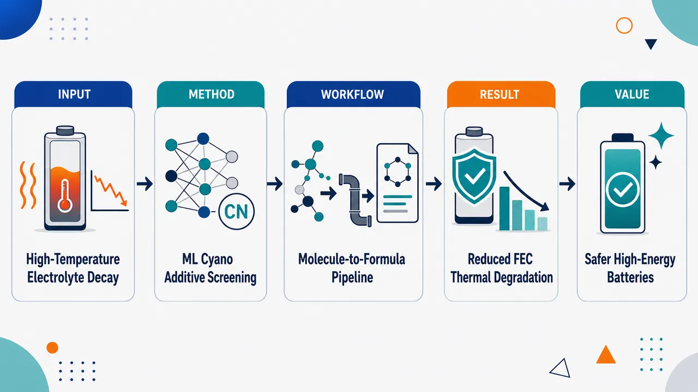
研究问题SiOx负极/高镍正极锂电池在高温下，LiPF6-碳酸酯电解液容易发生热降解，尤其是FEC相关副反应会加速电解液失稳；核心问题是如何快速找到能抑制高温降解的富氰基添加剂。创新方法将机器学习引入电解液添加剂筛选，用数据驱动方式定向寻找富氰基分子，而不是依赖传统经验试错；Aha点是把“富氰基结构特征”与“缓解FEC热降解、高温稳定LiPF6-碳酸酯体系”的功能目标直接关联，用算法缩小候选添加剂空间。工作流程输入候选富氰基添加剂分子与LiPF6-碳酸酯电解液高温失效需求；通过机器学习模型评估候选分子对热稳定性和FEC相关降解的潜在抑制能力；筛选出优先级较高的添加剂；用于SiOx/高镍电池电解液配方设计，输出更耐高温的添加剂组合方向。关键结果研究表明，富氰基添加剂可作为缓解LiPF6-碳酸酯电解液高温不稳定性的有效设计方向，并聚焦减轻FEC相关热降解；摘要未给出具体添加剂名称、提升百分比、循环寿命或热分析数值。应用价值该策略可加速高温稳定电解液添加剂开发，减少逐一实验筛选成本，为高能量密度SiOx负极/高镍正极锂电池提供更安全、更耐热的电解液设计路径，服务于动力电池和高温工况储能应用。核心概览
该论文属于锂电池电解液添加剂设计方向，利用机器学习筛选富氰基添加剂，以改善 SiOx/高镍体系中 LiPF6-碳酸酯电解液的高温稳定性。
方法要点
- 采用机器学习辅助筛选策略，用于寻找候选富氰基电解液添加剂。
- 研究对象为含 LiPF6 的碳酸酯电解液体系，应用背景是 SiOx 负极/高镍正极锂电池。
- 筛选目标聚焦于缓解与 FEC 相关的高温热降解问题。
- 摘要未详述机器学习模型类型、训练数据来源、特征构建、筛选规模或实验验证流程。
关键结果
- 摘要明确指出：富氰基添加剂被用于缓解 LiPF6-碳酸酯电解液在高温下的不稳定性。
- 摘要明确指出：研究重点是减轻 FEC 相关热降解。
- 摘要未详述具体筛选出的添加剂名称、性能提升幅度、温度条件、电化学循环结果或热分析数据。
创新性判断
- 可能的新颖点在于将机器学习用于“富氰基添加剂”的定向筛选，而不是传统依赖经验或逐一实验试错的添加剂开发；但具体创新程度需全文确认。
- 针对 SiOx 负极/高镍正极这类高能量密度电池体系中的高温电解液失效问题，具有较明确的应用导向。
- 将 FEC 相关热降解作为筛选或优化目标，可能体现出对特定失效机制的针对性设计；但摘要未说明是否建立了机制模型或验证了分子作用路径。
- 总体看，创新性更可能体现在“机器学习辅助筛选 + 富氰基添加剂 + 高温电解液稳定化”的组合策略，具体是否优于已有添加剂或已有 ML 筛选工作，摘要未详述。
-
06
📊 含图深析
💡 亮点：集成学习结合物理约束预测混凝土碳化深度。
📖 展开分析 + 配图
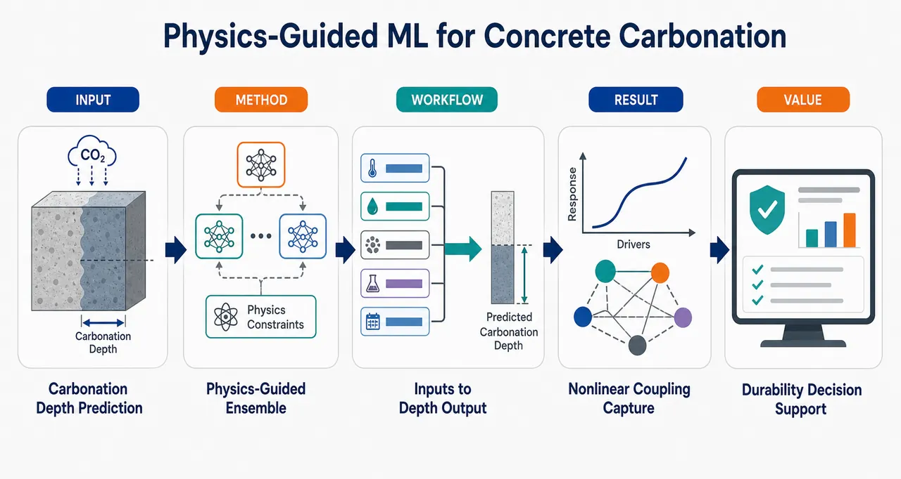
研究问题如何在材料性质、环境条件与暴露历史相互耦合的复杂场景下，准确预测混凝土碳化深度；核心画面可表现为混凝土构件截面中二氧化碳逐层渗入，碳化前沿向内推进，旁边连接水灰比、湿度、温度、龄期、暴露时间等多源因素。创新方法提出物理引导的集成机器学习框架，将混凝土碳化机理或物理约束作为先验融入多个机器学习模型的组合预测中；Aha 点是让模型既能学习数据中的非线性模式，又不完全脱离碳化扩散与材料耐久性规律，可画成“物理公式/机理图”嵌入“模型森林/投票集成器”。工作流程输入混凝土材料参数、环境变量和暴露历史数据，经过物理机理引导或约束处理，再送入集成机器学习模型学习材料—环境—时间之间的非线性耦合关系，最后输出混凝土碳化深度预测值；画面可用三类输入图标汇入物理引导模块，再进入集成模型，最终生成带刻度的碳化深度截面图。关键结果模型被用于预测混凝土碳化深度，并强调能够处理材料性质、环境变量和暴露历史之间的复杂非线性耦合关系；摘要未给出具体精度指标、对比基线或提升百分比，因此结果画面宜表现为预测曲线贴近实测点、碳化前沿被更稳定地估计，而不标注具体数值。应用价值为混凝土结构耐久性评估、服役寿命预测和维护决策提供更可靠的碳化深度预测工具；实际意义可表现为桥梁、隧道、建筑构件的健康监测界面，通过预测碳化侵蚀深度提前规划维修与防护。核心概览
论文面向混凝土碳化深度预测，构建物理引导的集成机器学习模型，属于土木工程耐久性预测与物理信息机器学习方向。
方法要点
- 采用机器学习方法预测混凝土碳化深度。
- 使用集成学习框架，以提升对复杂非线性关系的建模能力。
- 引入物理引导思想，将碳化过程相关机理或约束融入模型；具体融入方式摘要未详述。
- 模型考虑材料性质、环境变量和暴露历史等输入因素。
- 目标是处理上述因素之间的非线性耦合关系。
关键结果
- 摘要明确称该模型用于混凝土碳化深度预测。
- 摘要表明模型能够处理材料性质、环境变量和暴露历史之间的非线性耦合。
- 关于预测精度、对比基线、数据规模、评价指标和泛化能力，摘要未详述。
创新性判断
- 可能的新颖点在于将“物理引导”与“集成机器学习”结合，用于混凝土碳化深度预测。
- 相比纯数据驱动模型，该方法可能更强调碳化机理、材料—环境—暴露历史之间关系的约束或先验信息；但具体物理约束形式摘要未详述。
- 相比传统经验公式或单一机器学习模型，该工作可能试图通过集成学习捕捉更复杂的非线性耦合；但是否显著优于已有方法，摘要未给出证据。
-
07
📊 含图深析
💡 亮点：基准量化稀疏和噪声对 Manning 摩阻 PINN 反演的影响。
📖 展开分析 + 配图
研究问题在浅水方程反问题中，逆向 PINN 能否从“少量、带噪、变量不完整”的水深/速度观测中可靠恢复 Manning 摩阻系数？核心不是单次能否拟合成功，而是绘制可识别边界：观测点要多少、噪声能多大、必须观测哪些变量，参数才不会被流场形状误差或等效多解性掩盖。创新方法构建系统化 inverse PINN 基准：以 Manning 系数 n 为可训练正标量，用 softplus 保证 n>0，并与神经网络流场联合优化；采用“两阶段 Adam”策略，先只用观测预训练流场，再打开浅水方程物理残差估计摩阻，避免训练初期 n 被推向零；同时扫描观测点数、噪声水平和观测变量组合，形成摩阻可识别性的稀疏—噪声地图。工作流程输入为 1D MacDonald 亚临界通道或 2D 抛物横断面斜坡通道的稀疏观测点，包括水深 h、速度 u/v，并叠加 0%–20% 高斯噪声；网络预测连续流场，自动微分计算浅水方程残差，已知床坡作为源项输入；Phase A 拟合观测，Phase B 联合最小化观测误差和 PDE 残差；最终输出恢复的 Manning 系数 n，并用相对误差和多随机种子稳定性评估。关键结果2D 通道中，只要至少 10 个深度—速度联合观测且噪声≤10%，Manning 系数误差低于 5%；50 个观测点时即使噪声升至 20% 仍保持稳定，而 5 个观测点不可靠。1D 通道虽然流场重构较准，却始终出现约 15% 正偏差，误差在 14.6%–15.7% 间，表明是结构可识别性限制。变量消融显示：仅水深误差 95.7%，仅速度误差 61.9%，联合水深—速度误差降至 14.5%。应用价值为水动力模型中的 Manning 摩阻反演提供可复现可信度基准，可指导传感器布设、观测变量选择和噪声容忍度判断：实际应用中应优先联合采集水深与速度，保证足够观测密度，并警惕损失下降但参数错误的 PINN 反演假象。该研究可作为洪水、河道、风暴潮和沿海淹没模拟中摩阻校准方法的评测参照。第一部分：核心概览（Overview）
逆向 PINN 被系统评估用于从稀疏、含噪的浅水方程观测中恢复 Manning 摩阻系数。核心贡献在于把问题从“能否在单个案例中恢复参数”推进到“在何种观测密度、噪声水平、观测变量组合下仍可识别”。基准包含 1D MacDonald 亚临界解析通道与 2D 抛物横断面斜坡通道，均以 (nₜᵣᵤₑ=0.02) 为真值。结果显示：2D 情况在至少 10 个深度—速度联合观测且噪声≤10% 时误差低于 5%；1D 情况则持续存在约 15% 正偏差，指向结构可识别性限制。该工作提供了面向水动力参数反演的可复现实证基准。
---
第二部分：结构化快速回顾
《How Sparse and How Noisy? Systematic Benchmarking of Inverse Physics-Informed Neural Networks for Manning Friction Estimation in Shallow Water Equations》（None，）
背景
浅水方程模型广泛用于洪水波、河流水力、风暴潮、海啸和沿海淹没模拟，但预测能力受 Manning 摩阻系数、边界条件、地形和稀疏观测限制。传统校准依赖重复正演、伴随推导、集合采样或人工调参，计算成本高。PINNs 可把观测数据与物理残差共同嵌入损失函数，但其在稀疏、含噪观测条件下恢复摩阻参数的可靠性此前缺乏系统刻画。
方法
采用两个基准：1D MacDonald 亚临界通道与 2D 斜坡抛物横断面通道。目标参数为单一正标量 Manning 系数 (n)，通过 (n=softplus(nᵣₐw)) 保证正性。网络为 8 层、每层 20 个神经元、tanh 激活。训练采用两阶段 Adam：Phase A 仅拟合观测，Phase B 加入浅水方程残差。实验扫描观测点数 (5,10,20,50)、噪声 (0%,5%,10%,20%)，每组 5 个随机种子。
结果
2D 基准表现稳健：至少 10 个深度和速度联合观测、噪声≤10% 时摩阻恢复误差低于 5%；50 个观测下噪声升至 20% 仍稳定；5 个观测时不可靠。1D 基准在所有观测数量和噪声组合下均保持约 15% 正偏差，误差范围为 14.6%–15.7%。观测变量消融显示，仅深度观测误差达 95.7%，仅速度观测误差达 61.9%，联合深度—速度观测误差为 14.5%。
讨论
2D 案例中，横向地形曲率和三变量 (h,u,v) 提供更丰富的信息，使摩阻参数更可识别。1D 案例中，增加观测数量能降低水深场重构误差，却不能降低 (n) 的偏差，表明主要问题不是数据密度，而是结构可识别性。L-BFGS 虽降低损失，却会沿近零空间方向使摩阻误差超过 70%，因此最终仅采用 Adam。
局限
基准只覆盖两个受控、稳态、合成案例；摩阻被设为单一空间常数；未处理实际水文边界不确定性、空间变摩阻、湿干交替、真实传感器误差结构和复杂城市/沿海洪泛区。1D 结果存在结构偏差，不能直接外推为所有一维浅水反演问题的普遍规律。
结论
逆向 PINN 可在信息充分的 2D 浅水系统中可靠恢复 Manning 摩阻，但在过稀疏、单变量观测或结构可识别性不足时会失效。可靠摩阻反演需要联合深度—速度信息、足够传感器密度、受控噪声水平以及针对参数梯度流和训练阶段切换的严格实现检查。
---
第三部分：逐章节冷凝解析（Section-by-Section Condensing）
Abstract
- Benchmarking inverse PINNs under realistic data limitations
PINNs 被定位为一种适合逆向水动力建模的框架，因为它能把稀疏观测与控制方程约束结合；核心问题是，在现实数据限制下估计水力参数的可靠性尚未充分量化。摘要直接指出：*"Physics-informed neural networks (PINNs) offer a promising framework for inverse hydrodynamic modeling because they can combine sparse observations with governing physical constraints."* 同时强调可靠性缺口：*"their reliability for estimating hydraulic parameters under realistic data limitations remains insufficiently characterized."*
- Target parameter and governing system
目标参数是浅水方程中的 Manning friction coefficient，以可训练正标量形式与流场联合恢复。研究对象明确为 shallow water equations 中的摩阻反演：*"This study systematically benchmarks inverse-PINN recovery of the Manning friction coefficient in the shallow water equations under controlled variations in observation sparsity, observation noise, and observed variable type."*
- Two controlled benchmark cases
基准由两个案例构成：一个是 1D MacDonald subcritical channel，具有解析稳态参考解；另一个是 2D sloped channel with parabolic transverse bed，由平衡有限体积求解器生成参考场。摘要给出：*"Two benchmark cases are considered: a one-dimensional MacDonald subcritical channel with an analytical steady reference solution, and a two-dimensional sloped channel with a parabolic transverse bed generated using a balanced finite-volume solver."*
- Two-phase optimization strategy
训练策略分为先拟合观测、再加入物理残差两个阶段；Manning 系数与流场联合估计。关键句为：*"The Manning coefficient is treated as a trainable positive scalar and recovered jointly with the flow field using a two-phase optimization strategy that first fits the available observations and then incorporates the physics residual."*
- 2D benchmark reliability threshold
2D 基准在至少 10 个深度和速度观测、噪声不超过场标准差 10% 时，摩阻恢复误差低于 5%。摘要给出定量阈值：*"the two-dimensional benchmark achieves robust friction recovery, with errors below 5% when at least 10 observations of depth and velocity are available and noise levels remain at or below 10% of the field standard deviation."*
- Noise robustness and sparsity failure in 2D
当观测点数达到 50 个时，噪声提高到 20% 仍然稳定；但 5 个观测点时恢复不可靠。摘要原句为：*"Recovery remains stable up to 20% noise when 50 observations are used, but becomes unreliable at the sparsest setting of five observations."*
- 1D structural positive bias
1D 基准持续出现约 15% 正偏差，且基本不受观测数量和噪声影响。这说明限制来自结构可识别性，不是数据密度。摘要明确写道：*"the one-dimensional benchmark exhibits a persistent positive bias of approximately 15% that is largely insensitive to observation count and noise, indicating a structural identifiability limitation rather than a data-density limitation."*
- Joint depth–velocity observation requirement
仅观测深度或仅观测速度会显著削弱摩阻恢复，联合深度—速度观测是可靠反演的关键。摘要表述为：*"Observation-type ablation further shows that friction recovery degrades substantially when only depth or only velocity is observed, demonstrating that joint depth–velocity information is essential for reliable inverse identification."*
---
1 Introduction
- Shallow water equations are central but parameter-sensitive tools
浅水方程（SWEs）是洪水波、河流水力、溃坝流、风暴潮、海啸传播和沿海淹没模拟的核心工具，但其预测能力强烈依赖不确定参数、边界条件、地形和稀疏观测。原文指出：*"Numerical models based on the shallow water equations (SWEs) are central tools for simulating flood waves, river hydraulics, dam-break flows, storm surge, tsunami propagation, and coastal inundation, but their predictive skill depends strongly on uncertain parameters, boundary conditions, topography, and sparse observations."*
- Coastal flood modeling intensifies the calibration burden
沿海区域的潮汐、风暴潮、降雨、河流流量、波浪、海平面上升和基础设施暴露可产生非平稳、复合洪水风险，使可靠 SWE 模型需求更迫切。原文列出多驱动因素：*"tides, storm surge, rainfall, river discharge, waves, sea-level rise, and infrastructure exposure can interact to produce nonstationary and compound flood hazards."*
- Traditional hydrodynamic calibration is computationally expensive
传统校准通常需要重复正演、伴随方法、集合采样或人工调参，计算代价高。原文直接说明：*"Traditional calibration of hydrodynamic models is often computationally expensive because it requires repeated forward simulations, adjoint derivations, ensemble-based sampling, or manual tuning of uncertain parameters."*
- Purely data-driven neural networks lack physical reliability under distribution shift
纯数据驱动神经网络可学习复杂水动力映射，但通常需要大量标注数据，且在物理约束弱或缺失时，可能无法泛化到训练分布之外。原文指出：*"Purely data-driven neural networks can learn complex hydrodynamic mappings, but they usually require large labeled datasets and may fail to generalize outside the training distribution when physical constraints are weak or absent."*
- PINNs embed equations, data, boundary and initial constraints into one inverse framework
PINNs 通过把控制方程、初始条件、边界条件和稀疏测量直接嵌入损失函数，使流场变量和未知物理量能在单一优化框架中共同推断。原文给出定义性描述：*"Physics-informed neural networks (PINNs) provide an alternative by embedding governing equations, initial conditions, boundary conditions, and sparse measurements directly into the loss function, thereby allowing the flow variables and unknown physical quantities to be inferred within a single optimization framework."*
- Automatic differentiation removes the need for problem-specific adjoints
自动微分可计算 PDE 残差而无需构造问题特异性伴随求解器；观测数据则可在物理反问题欠定时提供正则化。原文写道：*"automatic differentiation can evaluate Partial Differential Equation (PDE) residuals without constructing a problem-specific adjoint solver, while observational data can regularize the solution in regimes where the physics-only inverse problem is underdetermined."*
- PINNs remain vulnerable to training and data-placement pathologies
PINNs 并非天然可靠，训练可能受刚性、频谱偏置、损失不平衡、局部极小值、观测位置/密度/噪声敏感性影响。原文列明风险：*"training can suffer from stiffness, spectral bias, loss imbalance, local minima, and sensitivity to the placement, density, and noise level of observations."*
- Existing inverse PINN studies emphasize success cases more than identifiability maps
近岸测深、波场、水波同化、植被阻力、海床孔弹性参数、海啸波场重构、地下水排泄等已有逆向 PINN 应用，但多数关注特定案例的成功重构，较少系统量化稀疏和噪声如何影响目标水力参数可识别性。关键概括为：*"most existing inverse PINN applications emphasize successful reconstruction or parameter recovery for selected cases, whereas fewer studies directly quantify how sparse and noisy observations affect the identifiability of a target hydraulic parameter."*
- Bottom friction is highly influential in shallow-water modeling
底摩阻控制动量耗散、波衰减、洪水波传播、流速和水面坡度，是 SWE 模型中最关键的不确定参数之一。原文强调：*"bottom friction is one of the most influential because it controls momentum dissipation, wave attenuation, flood-wave propagation, flow velocity, and water-surface gradients."*
- Manning coefficient is often empirical and scale-dependent
实际模型中的 Manning 系数通常来自土地覆盖、河床材料、经验表、对水位的校准或专家判断；有效 Manning 系数未必对应局部物理表面性质，因为会吸收未解析植被、床形、亚网格地形、湿干过程、数值扩散和尺度依赖水力阻力。原文写道：*"the effective Manning coefficient used in a depth-averaged hydrodynamic model may not correspond directly to a local physical surface property because it absorbs unresolved vegetation, bedforms, subgrid topography, wetting–drying effects, numerical diffusion, and scale-dependent hydraulic resistance."*
- Friction estimation is naturally an inverse SWE problem
当可用信息主要是稀疏水深或速度观测，而不是空间完整流场时，摩阻估计自然构成 SWE 反问题。原文指出：*"This makes friction estimation a natural inverse problem in the SWEs, especially when the available information consists of sparse water-depth or velocity observations rather than spatially complete flow fields."*
- Equifinality makes Manning recovery non-unique
不同摩阻、边界强迫、地形和初始条件组合可能产生相似水位响应，导致等效多解性（equifinality）和非唯一反演解。原文明确说明：*"different combinations of friction, boundary forcing, bathymetry, and initial conditions can produce similar water-level responses, leading to equifinality and non-unique inverse solutions."*
- Need for reproducible benchmark across sensor density and noise
在逆向 PINNs 被解释为实际 SWE 校准工具之前，需要可复现基准显式量化传感器密度、噪声幅度和摩阻恢复精度之间的权衡。原文提出需求：*"A reproducible benchmark that explicitly quantifies the trade-off between sensor density, noise magnitude, and friction-recovery accuracy is therefore needed before inverse PINNs can be interpreted as robust calibration tools for practical SWE applications."*
- Stated study design and scope
基准围绕具有已知参考解的典型 SWE 测试案例设计，可将恢复的摩阻系数与受控真值比较，而不是与不确定现场校准值比较。原文说明：*"The benchmark is designed around canonical SWE test cases with known reference solutions, allowing the recovered friction coefficient to be evaluated against a controlled ground truth rather than against an uncertain field-calibrated value."*
- Main experimental axes
实验量化摩阻恢复精度如何随观测稀疏性、观测噪声、观测变量类型变化，并比较水深、速度、联合水深—速度信息含量。原文写道：*"The experiments quantify how friction-recovery accuracy varies across a structured grid of observation sparsity and observation noise, and they compare the information content of different observation types, including water depth, velocity, and combined depth–velocity measurements."*
- Output is benchmark, not universal calibration law
目标不是建立适用于所有水力系统的通用校准律，而是提供可复现、可解释的参考，用于判断逆向 PINNs 何时能、何时不能在受控数据限制下恢复 Manning 摩阻。原文限定范围：*"The resulting benchmark does not claim to provide a universal calibration law for all hydraulic systems; instead, it provides a reproducible and interpretable reference for evaluating when inverse PINNs can and cannot recover Manning friction in the SWEs under controlled data limitations."*
---
2 Materials and Methods
- Methodological scope
方法部分涵盖 inverse PINN framework、控制方程、两个基准案例、PINN 公式、两阶段训练、诊断实验确立的设计选择和基准协议。原文开宗明义：*"This section describes the inverse PINN framework used to recover the Manning roughness coefficient from sparse and noisy SWE observations."*
---
2.1 Governing equations
- 1D conservative shallow water equations with Manning friction
1D 系统使用保守形式浅水方程，变量为水深 (h(x,t))、深度平均速度 (u(x,t))、床面高程 (z_b(x))、重力加速度 (g)，摩阻坡度由 Manning 公式给出。原文定义：*"In one spatial dimension, the conservative shallow water equations with Manning bottom friction read"*，并给出 (S_f=fracn²u|u|h⁴/³)。目标参数被明确为：*"The Manning coefficient (n) is the parameter to be recovered."*
- 2D conservative shallow water equations include two friction components
2D 系统扩展到 (h(x,y,t),u(x,y,t),v(x,y,t))，摩阻坡度分为 (Sfₓ) 和 (Sfy)，分别依赖 (usqrtu²⁺v²) 与 (vsqrtu²⁺v²)。原文给出：*"In two spatial dimensions, the SWEs for (h(x,y,t)), (u(x,y,t)), (v(x,y,t)) are"*，并定义
(Sfₓ=fracn²usqrtu²⁺v²h⁴/³)，
(Sfy=fracn²vsqrtu²⁺v²h⁴/³)。
- Steady references but full residuals retained
两个基准参考解均为稳态，因此参考解中的时间导数为零；但 PINN 残差保留完整非定常形式以保持一般性。原文说明：*"Both benchmarks below are constructed at steady state, so the time derivatives on the left-hand sides vanish in the reference solutions; the PINN residuals retain the full form for generality."*
---
2.2 Benchmark problems
- Controlled ground truth through two benchmarks
参数恢复依赖两个受控真值案例：一个 1D 解析案例，一个 2D 有限体积稳态案例；用于数据生成的 Manning 系数作为 (nₜᵣᵤₑ)，与恢复值 (hat n) 比较。原文写道：*"To evaluate parameter recovery against a controlled ground truth, we use two benchmarks: a one-dimensional analytical case and a two-dimensional case in which a steady reference field is produced by a well-balanced finite-volume solver."*
1D MacDonald subcritical channel
- Analytical depth profile and physical constants
1D MacDonald 亚临界通道采用平滑水深剖面
(h(x)=0.5+0.1sin(π x/L))，(xin[0,L])，其中 (L=1000) m，单位流量 (q=0.5) m²/s，真值 (nₜᵣᵤₑ=0.02)。原文给出：*"We prescribe a smooth subcritical depth profile"*，并列明：*"with (L=1000) m, constant unit discharge (q=0.5) m²/s, and target (nₜᵣᵤₑ=0.02)."*
- Back-solving bed elevation ensures exact steady consistency
床面高程 (z_b(x)) 通过稳态动量方程反解，使给定 ((h,q,nₜᵣᵤₑ)) 精确满足控制方程。原文说明：*"The bed elevation (z_b(x)) is then back-solved so that the steady momentum equation is exactly satisfied for the chosen ((h,q,nₜᵣᵤₑ))."*
- Flat-bed assumption would be inconsistent
若直接假设平床，则给定水深剖面不对应任何常数 (n) 稳态解；反解床面是保证物理一致性的必要步骤。原文强调：*"This construction is necessary because a flat-bed assumption with the depth profile in Eq. (8) does not correspond to any constant-(n) steady solution."*
- Subcritical flow and grid size
流动全域保持亚临界，满足 (Fr=u/sqrtgh<1)；数据集在 (N=501) 个均匀网格点采样。原文为：*"The flow remains subcritical throughout, with Froude number (Fr=u/sqrtgh<1). The dataset is sampled on a uniform grid of (N=501) points."*
2D sloped channel with parabolic transverse bed
- Bed geometry and domain parameters
2D 通道床面为
(z_b(x,y)=-S₀ₓ₊ₕ_y(2y/W)²)，定义域 ([0,Lₓ]×[-W/2,W/2])。参数为 (Lₓ₌₂₀₀₀) m、(W=400) m、(S₀₌₂×10⁻³)、(h_y=0.3) m、入流单位流量 (qᵢₙ=1.0) m²/s、(nₜᵣᵤₑ=0.02)。原文列出：*"We use (Lₓ₌₂₀₀₀) m, (W=400) m, (S₀₌₂×10⁻³), (h_y=0.3) m, unit inflow discharge (qᵢₙ=1.0) m²/s, and (nₜᵣᵤₑ=0.02)."*
- 2D configuration carries richer friction information
顺坡驱动摩阻平衡正常水深流，横向抛物曲率产生随深度变化的摩阻和非平凡横向速度分量，使 (h,u,v) 三个状态变量都携带 (n) 的信息。原文关键判断为：*"The streamwise slope drives a friction-balanced normal-depth flow, while the transverse curvature produces depth-varying friction and a non-trivial cross-channel velocity component, so that all three state variables (h), (u), (v) carry information about (n)."*
- No closed-form solution; finite-volume solver generates reference
该 2D 案例无闭式解，参考稳态由专门实现的有限体积 SWE 求解器生成。原文指出：*"This case does not admit a closed-form solution. The reference state is therefore generated by a dedicated finite-volume SWE solver implemented for this study."*
- Numerical solver details
求解器使用 HLL Riemann solver、Audusse hydrostatic reconstruction 实现床坡源项平衡处理、Manning 摩阻点隐式更新、CFL 约束下 forward-Euler 时间推进。原文完整说明：*"using an HLL Riemann solver at cell interfaces, the Audusse hydrostatic reconstruction ... for a well-balanced treatment of the bed-slope source term, a point-implicit update for the Manning friction, and forward-Euler time stepping under a Courant–Friedrichs–Lewy (CFL) constraint."*
- Boundary conditions and convergence criterion
从均匀正常水深初始条件积分，西边界 Dirichlet 入流，东边界零梯度出流，南北自由滑移墙；保守状态残差降至 (10⁻⁸) 以下停止。原文为：*"integrated from a uniform normal-depth initial condition with Dirichlet inflow on the west boundary, zero-gradient outflow on the east boundary, and free-slip walls on the north and south boundaries, until the residual of the conservative state drops below (10⁻⁸)."*
- Grid and interior masking
基准使用 (121×41) 网格单元；训练和评估所用湿内点排除每条边界一层单元，以移除 ghost-cell 伪影。原文写道：*"The benchmark uses a grid of (121×41) cells; the wet interior used for training and evaluation excludes one cell along each boundary to remove ghost-cell artefacts."*
- Self-consistency verification through pointwise (n²) back-solving
通过中心内域离散动量平衡逐点反解 (n²)，其中位数与 (nₜᵣᵤₑ²) 在几个百分点内一致，确认稳态参考在 (n) 上可识别。原文说明：*"the median back-solved value matches (nₜᵣᵤₑ²) within a few percent, confirming that the steady reference is identifiable in (n)."*
---
2.3 Inverse PINN formulation
- Network input-output maps differ by dimension
1D 网络映射 ((x,t)mapsto(hat h,hat u))；2D 稳态网络映射 ((x,y)mapsto(hat h,hat u,hat v))。原文写道：*"In one dimension, the network maps ((x,t)mapsto(hat h,hat u)); in two dimensions, since the reference is steady, it maps ((x,y)mapsto(hat h,hat u,hat v))."*
- Architecture: eight hidden layers, twenty neurons, tanh
网络为全连接前馈结构，使用 tanh 激活，8 个隐藏层、每层 20 个神经元。原文给出：*"We use (tanh) activations and a width and depth of eight hidden layers of twenty neurons each."*
- Scaling of inputs and outputs with corrected gradients
输入按各轴 min-max 缩放到 ([0,1])，输出按每个分量最大绝对值缩放；PDE 残差中的梯度对这些缩放进行校正。原文为：*"Inputs are min-max scaled to ([0,1]) on each axis, and outputs are scaled by their per-component maximum absolute value; gradients in the PDE residuals are corrected for these scalings."*
- Positive Manning coefficient through softplus parameterization
Manning 系数作为单个未知可训练标量，并通过 (n=softplus(nᵣₐw)) 保证训练中 (n>0)，避免硬裁剪梯度。原文说明：*"To enforce (n>0) throughout training without hard-clipping the gradient, we parameterize (n=softplus(nᵣₐw))."*
- Implementation must register scalar trainable variable
在 Keras 实现中，标量参数不会自动注册进优化器，因此需重写 `trainableᵥₐᵣᵢₐbles` 属性，把 (nᵣₐw) 显式附加到可训练变量列表。原文指出：*"in our Keras implementation this requires overriding the trainableᵥₐᵣᵢₐbles property, because scalar parameters are not automatically registered with the optimizer."*
- Loss combines observation and PDE residual terms
总损失为 (mathcal L=łambdaₒbₛmathcal Lₒbₛ+łambdaₑqmathcal Lₑq)，其中 (θ) 是网络权重和偏置。原文定义：*"The total loss is a weighted sum of an observation term and a PDE-residual term."*
- Observation loss supports variable subsets
观测损失是在稀疏观测位置上预测值与可能含噪测量值的均方误差；1D 可观测集合 (mathcal Qsubseteqh,u)，2D 为 (mathcal Qsubseteqh,u,v)，默认使用全变量集合。原文为：*"where (mathcal Qsubseteqh,u) in 1D and (mathcal Qsubseteqh,u,v) in 2D, and the default training configuration uses the full set."*
- Residual loss uses automatic differentiation and precomputed bed slopes
PDE 残差在 (N_c) 个湿域 collocation 点计算；通量导数通过自动微分获得；床坡源项使用基准地形中心差分预计算并随 collocation 坐标提供。原文说明：*"Flux derivatives are taken by automatic differentiation through the network; the bed-slope source term (ghnabla z_b) is evaluated using bed-slope components pre-computed from the benchmark bathymetry by central differences."*
- Bed elevation is known, not inferred
预计算 (nabla z_b) 而非通过网络微分，是因为 (z_b) 是已知输入，不是待推断输出。原文写道：*"We pre-compute (nabla z_b) rather than differentiate it through the network because (z_b) is a known input to the inverse problem, not an output to be inferred."*
---
2.4 Two-phase training procedure
- Adam-only two-phase optimization
((θ,nᵣₐw)) 用 Adam 优化。Phase A 设置 (łambdaₑq=0)，仅优化观测损失；Phase B 恢复 (łambdaₑq)，联合优化完整损失。原文为：*"In Phase A, the physics weight is set to zero ((łambdaₑq=0)) and the network is trained exclusively against the observation loss. In Phase B, (łambdaₑq) is restored to its target value."*
- Equal budget split and no second-order refinement
Phase A 和 Phase B 各占总 Adam 步数的一半；Adam 后不使用二阶优化细化。原文写道：*"Phase A and Phase B each receive half of the total Adam budget. No second-order refinement is applied after Adam."*
- Early physics activation creates degeneracy toward zero friction
若从第一步就激活物理残差，(nᵣₐw) 会耦合到尚未学好的流场；优化器可通过把 (n) 推向零来消除摩阻源项，同时扭曲流场吸收不平衡。原文说明：*"the optimizer can reduce the residual by driving (n) toward zero, which trivially eliminates the friction source term."*
- Observation preconditioning prevents spurious attractor
Phase A 先用观测预训练流场，使 Phase B 的联合优化把 (nᵣₐw) 推向物理正确值，而非损失降低但物理无意义的吸引子。原文给出机制：*"Pre-conditioning the network on observations alone in Phase A resolves this degeneracy by establishing a flow field broadly consistent with the data before the physics residual becomes active."*
- Mutable loss weights are necessary in compiled graph training
阶段切换要求损失权重在每个训练步动态可读；若编译图函数把权重当作 trace-time 常数，Phase B 切换不会生效，模型会继续优化 Phase A 目标。原文警告：*"If the loss weights are implemented in this way, the Phase B switch has no effect on the actual computation, and the network continues to optimize the Phase A objective throughout both phases."*
- Silent implementation failure requires gradient-flow inspection
该错误不会在损失曲线上留下明显迹象，必须显式检查 (nᵣₐw) 的梯度流。原文强调：*"This implementation detail leaves no visible signature in the loss curves, making it a particularly difficult failure mode to diagnose without explicit inspection of the gradient flow to (nᵣₐw)."*
---
2.5 Design choices and their empirical basis
- Design finalized through diagnostic experiments and friction-gradient monitoring
超参数通过一系列诊断实验确立，并在每个阶段显式监测摩阻参数梯度流。原文概括：*"The final configuration was arrived at through a sequence of diagnostic experiments in which each hyperparameter was varied systematically, and the gradient flow to the friction parameter was monitored explicitly at each stage."*
Network architecture
- Forward reconstruction validates architecture below 1% relative (L₂) error
8 层、每层 20 个 tanh 神经元继承自正向 PINN 基线，并在监督式 forward-only 配置下把两个基准参考场重构到低于 1% 相对 (L₂) 误差。原文为：*"retained after confirming that it reproduces both benchmark reference fields to below one percent relative (L₂) error in a supervised forward-only configuration."*
- Wider or shallower networks did not improve inverse recovery
30 神经元宽网络和 6 层浅网络未改善反演，反而增加训练成本；最终结构是能准确正向重构两个基准的最小配置。原文写道：*"Pilot runs with wider networks (thirty neurons) and shallower networks (six layers) did not improve inverse recovery and increased training cost."*
Optimizer selection and the exclusion of second-order refinement
- L-BFGS degraded friction recovery despite reducing losses
初始采用 Adam warm-up + L-BFGS 的常规流程；诊断发现 Adam 阶段常把 (n) 恢复到真值 2%–4% 以内，但 L-BFGS 会使 (n) 误差超过 70%，尽管观测损失和物理残差继续下降。原文给出关键数值：*"the Adam phase consistently recovered (n) to within two to four percent of the true value, but the subsequent L-BFGS stage reliably degraded the recovered (n) to errors exceeding seventy percent."*
- Near-null direction explains L-BFGS failure
网络自由度远多于观测数量，存在由错误摩阻和扭曲流场相互补偿的解族，使两个损失同时下降。原文解释：*"there exists a family of solutions in which an incorrect friction coefficient is compensated by a distorted flow field such that both losses decrease simultaneously."*
- Adam alone is retained because it avoids efficient traversal of null direction
L-BFGS 作为精确线搜索方法能高效沿近零方向前进；Adam 的有限单步位移和梯度噪声反而避免该失败模式。原文判断：*"L-BFGS, being a precise line-search method, traverses this direction efficiently; Adam, with its bounded per-step displacement and gradient noise, does not."*
Loss weights
- Large physics weight with stop-gradient normalization killed friction gradients
初始物理残差权重为 (10⁶)，并结合常用于 forward-PINN 的 stop-gradient 归一化；诊断发现传至摩阻参数的梯度被降至机器零。原文描述：*"Diagnostic inspection of the gradient magnitude reaching the friction parameter showed that this normalization reduced the gradient to machine zero."*
- Equal raw loss weights restored stable recovery
去除归一化后，观测损失和物理损失在训练网络工作点量级相近，(łambdaₒbₛ=łambdaₑq=1.0) 在所有基准配置中稳定恢复。原文给出：*"equal weights (łambdaₒbₛ=łambdaₑq=1.0) were found to produce stable recovery across all benchmark configurations."*
Training budget
- Training budgets tested over four values
总 Adam 步数在 (1000,2000,3000,4000) 上测试。原文列明：*"The total Adam budget was varied across (1000,2000,3000,4000) steps for both benchmarks."*
- 1D uses 1000 steps because extra training does not remove bias
1D 中超过 1000 步后，恢复摩阻相对真值的残余偏差几乎不再变化，因此采用较短预算；残余下降被解释为结构可识别性偏差而非训练不足。原文说明：*"extending training beyond 1000 steps produced negligible additional movement in the recovered friction coefficient relative to the residual bias from (nₜᵣᵤₑ)."*
- 2D uses 3000 steps due to larger domain and transverse velocity
2D 空间域更大且存在横向速度分量，需要更长优化以在 Phase A 建立一致流场；3000 步足以使摩阻进入渐近状态，1000 步导致 Phase A 不完全收敛、Phase B 恢复更噪。原文写道：*"a budget of 3000 steps was found to be sufficient for the friction coefficient to reach its asymptotic regime, while 1000 steps produced incomplete Phase A convergence."*
- Learning rate fixed at (10⁻³)
Adam 学习率全程固定为 (10⁻³)，无需衰减调度。原文为：*"The learning rate was fixed at (10⁻³) throughout, which is the Adam default and was found to be adequate without decay scheduling."*
Phase split
- Half-half phase split performs best
Phase A 和 Phase B 平分总步数；少于一半给 Phase A 会导致流场预条件不足并造成 (n) 偏差，超过一半则不改善 Phase B 且减少联合优化步数。原文说明：*"Allocating fewer than half the steps to Phase A left the flow field insufficiently pre-conditioned and caused Phase B to recover a biased (n); extending Phase A beyond half the budget did not improve the Phase B outcome."*
---
2.6 Benchmark design
- Three difficulty axes define the benchmark
基准围绕三个控制反问题难度的轴组织：观测稀疏性、观测噪声、观测类型。原文写道：*"The benchmark is organized as a structured sweep over three axes that together control the difficulty of the inverse problem."*
- Observation sparsity levels
观测点数 (Nₒbₛ) 取 (5,10,20,50)，覆盖从严重欠采样到相对参考网格中等密度的情况。原文列明：*"The number of observation points (Nₒbₛ) is varied over (5,10,20,50)."*
- Observation noise levels
对每个观测场加入独立高斯噪声，标准差为该场标准差的固定比例；相对噪声取 (0%,5%,10%,20%)。原文为：*"Independent Gaussian noise with standard deviation (σ) equal to a fixed fraction of the standard deviation of each observed field is added to each measurement."*
- Observation-type ablation in 1D
1D 观测变量集合在 (h)、(u)、(h,u) 间变化，固定 (Nₒbₛ=20)、(σ=0)，用于隔离不同观测变量对摩阻恢复的信息贡献。原文写道：*"The observed variable set (mathcal Q) ... is varied across (h), (u), and (h,u) at a fixed point on the grid ((Nₒbₛ=20,σ=0))."*
- Five random seeds per configuration
稀疏—噪声网格中每个配置重复 (nₛₑₑdₛ=5) 次，随机种子控制网络初始化、观测点采样和噪声实现。原文说明：*"For each configuration in the sparsity–noise grid, training is repeated over (nₛₑₑdₛ=5) independent random seeds controlling network initialization, observation-point sampling, and noise realizations."*
- Relative friction error metric
恢复质量由 (ǎrepsilonₙ₌|hat n-nₜᵣᵤₑ|/nₜᵣᵤₑ×100%) 衡量，并报告跨种子的均值和标准差。原文定义：*"Recovery is summarized by the relative error (ǎrepsilonₙ₌frac|hat n-nₜᵣᵤₑ|nₜᵣᵤₑ×100%), reported as a seed-mean and seed-standard-deviation across runs."*
- Practical non-identifiability criterion
多种子统计用于区分稳健恢复与实际不可识别配置；当 (hat n) 的种子间变异与平均误差相当或更大时，反问题被视为实际不可识别。原文解释：*"Multi-seed statistics distinguish robust recovery regimes from configurations in which the inverse problem becomes practically non-identifiable, in the sense that seed-to-seed variability of (hat n) is comparable to or larger than the mean error itself."*
---
3 Results and Discussion
- Evaluation components
结果部分包括结构化稀疏—噪声扫描、观测类型消融和多种子轨迹分析。原文概括：*"The inverse PINN framework described in Section 2 is evaluated on the two benchmark problems through the structured sparsity–noise sweep, the observation-type ablation, and the multi-seed trajectory analysis."*
---
3.1 One-dimensional MacDonald benchmark
3.1.1 Forward verification at the representative configuration
- Representative verification setting
验证配置使用 (Nₒbₛ=50) 个无噪声深度和速度观测点，观测点从参考网格中均匀随机抽取。原文写道：*"The representative configuration used for verification of the trained network uses (Nₒbₛ=50) noiseless observations of both depth and velocity, drawn uniformly at random from the reference grid."*
- Flow-field reconstruction is visually and pointwise accurate
训练后网络将解析水深和速度剖面重构到较小绝对误差：水深点误差低于 0.02 m，速度点误差低于 0.03 m/s，最大偏差集中在边界附近。原文给出：*"The trained network reproduces the analytical depth and velocity profiles to within absolute pointwise errors below 0.02 m and 0.03 m/s respectively, with the largest deviations concentrated near the domain boundaries."*
- Friction recovery shows 15.5% positive error despite accurate fields
恢复值 (hat n=0.02311)，真值 (nₜᵣᵤₑ=0.020)，相对误差 15.5%。原文明确列出：*"The recovered Manning coefficient is (hat n=0.02311) against a target (nₜᵣᵤₑ=0.020), corresponding to a relative error of 15.5%."*
- Two-phase loss and parameter trajectory behave as designed
Phase A 中只有观测损失下降，摩阻参数停留在初值 0.04；约 epoch 500 阶段切换后，物理残差脱离常数 (n) 状态，摩阻参数开始单调下降到收敛值。原文说明：*"in Phase A, only the observation loss decreases while the friction parameter remains at its initial value of 0.04; at the phase transition near epoch 500, the physics residual decouples from the constant-(n) regime and the friction parameter begins to descend monotonically."*
3.1.2 Sparsity and noise sensitivity
- Friction error is insensitive to observation count
在零噪声下，(Nₒbₛ) 从 5 到 50，恢复 (n) 的相对误差均约 15%，基本不随观测数量变化。原文写道：*"The recovered (n) exhibits a relative error of approximately 15% that is essentially independent of the number of observations across the tested range from five to fifty points."*
- Depth reconstruction improves with more observations
水深场重构误差随观测增多显著下降，从 5 个观测点的 4.5% 降至 50 个观测点的 1.5%，之后饱和。原文给出：*"the depth-field reconstruction error decreases markedly with additional observations, falling from 4.5% at five points to 1.5% at fifty points and saturating thereafter."*
- Decoupling between field accuracy and parameter accuracy indicates intrinsic limitation
更多观测改善流场表示，却不能进一步约束摩阻参数，说明 (n) 的残余误差不是观测稀缺造成，而是 1D 配置的内在性质。原文分析为：*"additional observations improve the network’s representation of the flow field but do not further constrain the friction parameter."*
- Noise has little effect across all sixteen configurations
在 4 个观测数量 × 4 个噪声水平共 16 种组合中，包括最大噪声 20% 场标准差，(hat n) 相对误差保持在 14.6%–15.7% 窄范围。原文给出完整范围：*"The relative error in (hat n) remains in the narrow range 14.6–15.7% across all sixteen combinations of observation count and noise level tested."*
- Residual recovery error is structural rather than data-driven
恢复摩阻对观测稀疏性和噪声均不敏感，说明残余误差来自结构因素而非数据因素。原文结论为：*"The recovered friction coefficient is therefore insensitive to both axes of variation, indicating that the residual recovery error is structural rather than data-driven."*
3.1.3 Observation-type ablation
- Ablation setting isolates information content
观测类型消融固定在 (Nₒbₛ=20)、无噪声，分别仅观测水深、仅观测速度、联合观测水深和速度。原文说明：*"the observation-type ablation was performed at the fixed grid point (Nₒbₛ=20), no noise, with the observed variable set restricted in turn to depth only, velocity only, and both."*
- Joint depth–velocity observation gives the best 1D recovery but retains structural bias
同时观测水深和速度时，(hat n) 相对误差为 14.5%，与稀疏和噪声扫描一致。原文写道：*"When both depth and velocity are observed, the relative error in (hat n) is 14.5%, consistent with the sparsity and noise sweeps."*
- Depth-only observation collapses friction recovery
仅观测水深时，恢复灾难性失败，平均相对误差 95.7%，且种子间一致性很高，表明这是系统性摩阻参数坍缩，而非随机失败。原文给出：*"When only the depth is observed, the recovery fails catastrophically, with a mean relative error of 95.7% and tight seed-to-seed agreement."*
- Velocity-only observation becomes practically non-identifiable
仅观测速度时，平均相对误差 61.9%，种子变异更大，说明该情形实际不可识别。原文指出：*"When only the velocity is observed, the mean relative error is 61.9% with substantially larger seed variability, indicating that the recovery becomes practically non-identifiable in this regime."*
- Neither variable alone sufficiently constrains Manning friction
消融结果直接证明，1D SWE 反问题中摩阻可识别性需要联合深度—速度观测；单独任一变量即使采样更密，也不足以约束 (n)。原文总结：*"neither variable alone provides sufficient information to constrain (n), regardless of how densely it is sampled."*
3.1.4 Seed-to-seed reproducibility
- Available content is truncated during trajectory description
可见内容只给出代表性配置为 (Nₒbₛ=20)、无噪声、5 个随机种子，且所有轨迹在 Phase A 停留于初值 (nᵢₙᵢₜ=0.04)。原文残段为：*"Figure 4 shows the trajectory of the recovered friction coefficient across five seeds for a representative configuration ((Nₒbₛ=20, no noise)). All five trajectories remain at the initial value (nᵢₙᵢₜ=0.04)"*。后续句子在提供材料中中断，不能从现有文本确定完整轨迹细节。
---
第四部分：深度理解与语言支持（Understanding & Nuance）
1. 术语解析
Inverse physics-informed neural networks
Inverse PINNs 指把未知物理参数与神经网络表示的状态变量一起作为优化对象，通过观测误差和 PDE 残差共同约束。这里的 “inverse” 不只是从输入预测输出，而是从有限观测反推模型参数，例如 (n)。语境中对应表达为 *"recovered jointly with the flow field"*，强调参数与流场联立估计，而不是先拟合流场再单独回归摩阻。
Observation sparsity
Observation sparsity 不是一般意义上的“数据少”，而是观测点在空间上相对于参考网格稀疏。实验中具体量化为 (Nₒbₛin5,10,20,50)。它影响 PINN 能否从少量传感器约束连续流场和摩阻参数。尤其在 1D 结果中，增加观测点改善水深重构，却不改善 (n)，说明稀疏性并非唯一瓶颈。
Structural identifiability limitation
Structural identifiability limitation 指即使数据无噪、观测增加、优化正常，参数仍无法被唯一或无偏确定。这不同于“数据不足”或“训练失败”。1D 案例中 (n) 误差始终约 15%，且对观测数和噪声不敏感，因此被解释为结构可识别性问题。
Equifinality
Equifinality 可译为“等效多解性”或“异参同效”。在水动力反演中，不同摩阻、地形、边界条件或初始条件可能产生近似相同的水位/速度响应。它比普通“非唯一性”更强调多个机制组合能达到相似观测结果。该概念解释了为什么损失降低并不保证参数正确。
Near-null direction
Near-null direction 指优化景观中某些方向移动时，损失几乎不变甚至下降，但物理参数会偏离真值。L-BFGS 能沿这种方向高效前进，所以出现“损失更低但 (n) 更错”的现象。这里的“null”不是矩阵严格零空间，而是神经网络参数—物理参数联合空间中的近似不可观测方向。
---
2. 疑难查证
为什么 1D 流场重构更准，Manning 系数却不更准？
1D 稳态 SWE 中，摩阻、床坡、水深梯度和速度之间存在强耦合。即使网络能很好拟合 (h(x)) 和 (u(x))，PDE 残差仍可能通过微小的流场形状偏差、边界误差或导数误差来补偿错误的 (n)。PINN 优化的是连续函数及其导数，不只是离散观测点值；参数 (n) 主要通过动量方程中的摩阻项影响残差，而这个项可被床坡项、压力梯度项和通量梯度项的小误差抵消。因此，流场 (L₂) 误差下降不必然意味着参数可识别性提高。
为什么 2D 比 1D 更容易恢复摩阻？
2D 通道引入横向地形曲率和横向速度 (v)。摩阻项同时出现在 (x) 和 (y) 动量方程中，并依赖 (sqrtu²⁺v²)。这给 (n) 提供了更多独立约束：不同横向位置的水深、速度和床坡组合形成多样化的局部动量平衡。相比之下，1D 稳态通道的信息维度较低，错误 (n) 更容易被函数形状自由度吸收。
为什么 L-BFGS 会让参数更差？
L-BFGS 擅长沿光滑损失面寻找快速下降方向。对正向 PINN，这通常有利；但对欠定反问题，网络权重数量远大于观测数量，存在大量可以调节流场形状的自由度。某些方向上，错误 (n) 与扭曲流场共同变化，可同时降低观测损失和 PDE 残差。L-BFGS 的精确线搜索反而更容易沿这类近零方向移动；Adam 的随机性和有限步长在此处起到隐式正则化作用。
为什么必须先观测预训练再加入物理残差？
训练初期网络预测的流场尚不物理可信。若立即加入 PDE 残差，优化器可通过把 (n) 降向 0 来消除摩阻源项，使残差暂时变小。这是一种“数学上降低损失、物理上错误”的捷径。Phase A 先让网络近似观测流场，Phase B 再让物理残差校正参数，可避免 (n) 被早期错误流场牵引到虚假吸引子。
---
第五部分：创新评估与关联（Synthesis & Novelty）
1. 创新性判断
从成功案例展示转向系统可识别性基准
过去 2–5 年大量逆向 PINN 工作展示了在近岸测深、水波同化、植被阻力、海床参数、海啸重构、海洋浅水模型中的成功恢复，但往往集中于单个配置或较理想观测条件。该研究的新颖性在于把问题系统化为二维参数图：观测点数 (5,10,20,50) × 噪声水平 (0%,5%,10%,20%)，并以 5 个随机种子统计稳健性。核心不再是“能恢复”，而是“多稀、多噪时还能恢复”。
把 Manning 摩阻反演的失败条件显式量化
Manning 系数在工程模型中常被经验赋值或校准，但有效摩阻吸收了植被、床形、亚网格地形、湿干效应和数值扩散等多种未解析因素。该基准明确给出可操作阈值：2D 中至少 10 个联合深度—速度观测且噪声≤10% 时误差低于 5%；50 个观测点可承受 20% 噪声；5 个观测点不可靠。此类阈值比单次成功反演更接近工程使用所需的可信度判据。
揭示 1D 与 2D 可识别性差异
一个重要发现是：1D 解析案例虽然看似更简单，却持续存在约 15% 正偏差；2D 案例反而在信息充分时恢复更准。该结果挑战了“低维问题更容易反演”的直觉，表明参数可识别性取决于独立物理约束的信息量，而不是单纯取决于空间维度或流场复杂度。
证明联合深度—速度观测的必要性
观测类型消融给出强证据：1D 中仅水深误差 95.7%，仅速度误差 61.9%，联合观测误差 14.5%。这解决了前人较少系统回答的问题：水位计或速度计单独布设是否足够支持 Manning 反演。结果表明，至少在该基准中，单变量观测不足以可靠识别摩阻。
暴露逆向 PINN 实现层面的隐蔽失败模式
训练策略层面的贡献也很突出：
- 从一开始激活物理残差会把 (n) 推向零；
- 编译图中损失权重若不是可变状态，Phase B 切换可能无效；
- stop-gradient 归一化可把摩阻梯度降至机器零；
- L-BFGS 可在降低损失的同时把 (n) 误差推至超过 70%。
这些不是常规基准论文中的附属细节，而是逆向 PINN 参数估计能否可信的关键工程—数学问题。
相对于近年工作的主要增量
相对于近年 coastal/ocean/free-surface inverse PINN 研究，该研究解决了四个此前不足：
- 缺少系统噪声—稀疏性误差面：用结构化网格而非单点实验刻画恢复误差。
- 缺少多种子可重复性统计：用 5 个随机种子区分稳健恢复与随机偶然成功。
- 缺少观测变量信息量比较：明确比较 (h)、(u)、((h,u)) 的参数识别能力。
- 缺少失败机制诊断：把优化器、损失权重、阶段切换和梯度注册问题纳入反演可靠性分析。
领域地位
该工作更像是 inverse PINN for hydrodynamic parameter estimation 的“可信度基准论文”，而不是提出新网络结构的算法论文。其价值在于为 Manning 摩阻反演提供可复现实验协议、误差阈值和失败边界，使后续研究可在同一问题上比较架构、优化器、自适应损失、传感器布设和不确定性量化方法。
-
08
📊 含图深析
💡 亮点：拟线性化把非线性 PDE 转为 PINN 线性子问题序列。
📖 展开分析 + 配图
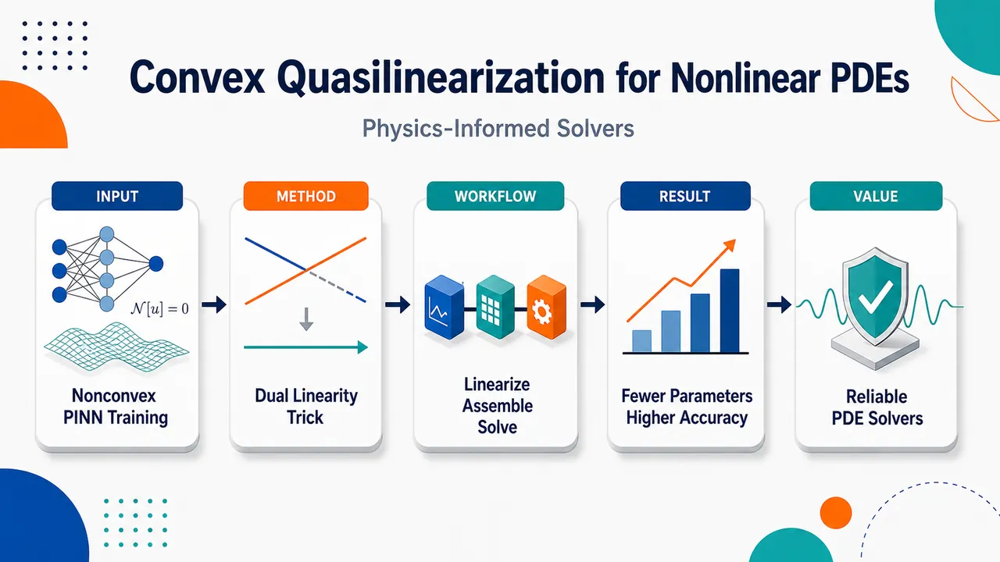
研究问题标准 PINN 求解非线性 PDE 时，PDE 本身的物理非线性与深度网络参数化的架构非线性相互缠绕，使损失景观像崎岖山谷：局部极小、鞍点、梯度失衡、谱偏置和长时间训练不收敛频繁出现；核心问题是如何把这种不可靠的非凸梯度训练，转化为稳定、可诊断、初始化不敏感的求解过程。创新方法LiL-Q 的 Aha 点是“双重线性化”：用 Bellman–Kalaba quasilinearization 将非线性 PDE 在当前解附近变成一串线性 PDE 子问题；再用 linear-in-learnables 表示 (hat u(x)=sumₚ βₚφₚ₍ₓ₎)，让未知量只剩线性系数 (β)。于是每个外迭代都从非凸神经网络训练变成固定矩阵 (A⁽k⁾β=f⁽k⁾) 的凸线性最小二乘，并用一次带列主元 QR 分解直接得到全局最优解。工作流程输入非线性 PDE、边界/初始条件、collocation 点、LiL 基函数和初始解；在第 k 步计算当前解 (hat u⁽k⁾) 的 Fréchet 导数，将非线性算子线性化；把 LiL 基函数代入线性化 PDE，在内部点和边界点组装过定线性系统 (A⁽k⁾β⁽k⁺¹⁾=f⁽k⁾)；通过 QR 最小二乘求出下一组系数；更新解并检查系数变化是否收缩；最终输出非线性 PDE 的近似解、残差地板和矩阵条件数诊断。关键结果在 Bratu、viscous Burgers、Buckley–Leverett、平面应变弹性、2D/3D 不可压 Navier–Stokes、异质 Darcy 流等 7 类基准上，多数问题只需个位数外迭代即可收敛；Navier–Stokes 中用最多少两个数量级的可训练参数达到或超过已发表 PINN 精度，且无需 Adam/L-BFGS 梯度训练；当精确解位于基空间内时，单次线性求解即可达到机器精度；最终误差主要由基空间最佳逼近残差和 collocation 矩阵条件数决定。应用价值该研究为非线性 PDE 的 physics-informed 求解提供了一条更接近经典数值线性代数的路线：把黑箱式、调参密集、初始化敏感的 PINN 训练，替换成可重复的组装—QR 求解—更新流程；适用于光滑全局基表示有效的工程与科学问题，如流体力学 Navier–Stokes、多场耦合弹性、非线性输运和异质介质渗流，可显著降低参数规模、训练时间和优化失败风险。第一部分：核心概览 (Overview)
LiL-Q 将 Bellman–Kalaba quasilinearization 与 linear-in-learnables (LiL) 表示结合，把非线性 PDE 的 PINN 求解转化为一串 凸线性最小二乘问题，用一次 QR 分解直接求解每个外迭代子问题，避免标准 PINN 的非凸梯度训练。其理论贡献在于给出局部 Newton–Kantorovich 收敛与残差下限解释；实证上覆盖标量非线性 PDE、耦合系统、Navier–Stokes 与异质 Darcy 流，显示以更少参数达到或超过已发表 PINN 精度。
---
第二部分：结构化快速回顾
《A Convex Quasilinearization Method for Solving Nonlinear PDEs with Physics-Informed Neural Networks》（None，）
背景
标准 PINN 将非线性 PDE 残差写入神经网络损失，但同时受到 物理非线性 与 架构非线性 影响，导致训练目标非凸，出现局部极小、鞍点、梯度失衡、谱偏置与收敛不可靠等问题。
方法
LiL-Q 先用 Bellman–Kalaba quasilinearization 将非线性 PDE 转化为一系列线性 PDE 子问题，再用 linear-in-learnables 表示
[
hat u(x;boldsymbolβ)=sumₚ₌₁Pβₚφₚ₍ₓ₎
]
离散为过定约束线性系统
[
mathbf A⁽k⁾boldsymbolβ⁽k⁺¹⁾=mathbf f⁽k⁾
]
并通过 QR least squares 一次求得全局最优解。
结果
七类基准包括 Bratu、viscous Burgers、Buckley–Leverett、plane-strain elasticity、2D/3D incompressible Navier–Stokes、heterogeneous Darcy flow。多数问题在个位数外迭代内收敛；Navier–Stokes 中以最多少两个数量级的参数量匹配或超过已发表 PINN；制造解位于基空间时单次求解达到机器精度。
讨论
方法的核心不是“更好地优化非凸损失”，而是通过同时消除 PDE 非线性 与 参数化非线性，使每步训练变成凸问题。最终精度由基空间最佳逼近残差和矩阵条件数控制，而不是优化器容差。
局限
方法依赖 smooth global trial spaces 的有效性。对于稀疏矩阵离散天然占优的问题，仍存在结构性残差与成本差距。随机特征表示不保证随参数数增加而单调降低误差，条件数也会限制可达精度。
结论
LiL-Q 在适合全局光滑基表示的非线性 PDE 上显著缩小 physics-informed 方法与经典数值求解器之间的成本—可靠性差距；其关键创新是把 PINN 训练从非凸迭代优化改造成每步凸的直接线性代数问题。
---
第三部分：逐章节冷凝解析 (Section-by-Section Condensing)
Abstract
- Convex quasilinearization replaces nonconvex PINN training
核心方法是先用 Bellman–Kalaba quasilinearization 将非线性 PDE 化为线性子问题，再在每个子问题上使用参数线性的试探空间进行 collocation 离散，并用一次 direct linear least-squares QR factorization 求解。原文明确写道：*"Bellman-Kalaba quasilinearization reduces the nonlinear problem to a sequence of linear subproblems, each discretized by collocation onto a trial space that is linear in its parameters and solved by a single direct linear least-squares QR factorization."* 这意味着每个外迭代不再依赖 Adam、L-BFGS 或学习率调度。
- Linear-in-learnables trial space is representation-agnostic
LiL 不是单一网络结构，而是一类所有可训练参数线性进入输出的表示，包括 random-feature extreme learning machines、spectral polynomial bases、trigonometric expansions。原文定义为：*"The trial space, which we term linear-in-learnables (LiL), comprises any representation whose trainable parameters enter linearly, including random-feature extreme learning machines, spectral polynomial bases, and trigonometric expansions."*
- Per-step convexity shifts the source of accuracy limitation
标准 PINN 的非凸梯度训练被每步凸求解替代；可达误差由基空间的 best-approximation residual 控制，而非优化容差。原文指出：*"the method replaces the nonconvex gradient-based training that limits standard PINNs with a convex per-step solve"*，并进一步给出理论定位：*"the limiting accuracy governed by the best-approximation residual of the trial space rather than by an optimization tolerance."*
- Theoretical convergence is local Newton–Kantorovich with residual floor
理论保证不是全局收敛，而是 local Newton-Kantorovich convergence 到残差受限邻域，并依赖显式小量条件。原文为：*"We establish local Newton-Kantorovich convergence of the outer iteration to a residual-limited neighborhood under an explicit smallness condition."* 这说明 quasilinearization 外迭代继承 Newton 型局部快速收敛，但有限维逼近残差造成最终误差地板。
- Benchmark suite spans scalar nonlinear PDEs, coupled systems, and heterogeneous flow
数值测试覆盖 7 个基准：Bratu、viscous Burgers、Buckley–Leverett、plane-strain elasticity、2D/3D incompressible Navier–Stokes、steady-state Darcy flow with heterogeneous permeability。原文列举：*"seven benchmarks spanning scalar nonlinear PDEs (Bratu, viscous Burgers, Buckley-Leverett), coupled systems (plane-strain elasticity and the incompressible Navier-Stokes equations in two and three spatial dimensions), and steady-state Darcy flow with heterogeneous permeability."*
- Iteration counts are small and largely independent of parameter count
实验层面，多数问题在个位数外迭代收敛，即便最粗基规模也不超过几十次，并且与参数量基本无关。原文写道：*"LiL-Q converges in single-digit outer iterations in most cases and in no more than a few dozen even at the coarsest basis sizes, independent of parameter count."*
- Exact representability yields machine precision in one solve
当精确解位于试探空间张成范围内时，方法可单次求解达到机器精度；制造解弹性问题是代表案例。原文证据为：*"When the exact solution lies in the span of the trial space, as in the manufactured elasticity case, the method recovers it to machine precision in a single solve."*
- Navier–Stokes results outperform published PINN efficiency
对 Navier–Stokes 基准，方法以最多少两个数量级的可训练参数达到或超过已发表 PINN 求解器。原文写道：*"On the Navier-Stokes benchmarks, it matches or exceeds published PINN solvers using up to two orders of magnitude fewer trainable parameters and without gradient-based optimization."*
- Conditioning governs round-off accuracy
所有基准中均分析 collocation matrix 条件数，并通过 rank-revealing column-pivoted QR 解释舍入误差对精度的贡献。原文为：*"Conditioning of the collocation matrix is analyzed across all benchmarks and is shown to govern the round-off contribution to accuracy through a rank-revealing column-pivoted QR factorization."*
---
1 Introduction
- Nonlinear PDEs motivate decades of numerical methods
非线性 PDE 是科学与工程建模核心对象，传统有限元、有限体积和谱方法长期围绕准确性、稳定性和成本展开。原文表述为：*"Nonlinear partial differential equations (PDEs) govern a wide range of phenomena across scientific and engineering disciplines"*，并指出经典方法一直在平衡：*"accuracy, stability, and computational cost."*
- PINNs offer mesh-free residual-based modeling
PINN 将 PDE 直接嵌入神经网络损失，前向问题不需要标签数据，并给出可微解表示。原文写道：*"Physics-informed neural networks (PINNs) emerged as an alternative paradigm, embedding PDEs directly into a neural network loss function"*，其优势包括：*"mesh-free, requires no labeled data for forward problems, and yields a differentiable solution representation."*
- PINN variants are diverse but not generally reliable
已有改进包括 adaptive weighting、curriculum/causal training、Fourier features、hard constraints、domain decomposition、weak formulations、Bayesian extensions。但 PINN 仍未成为非线性 PDE 的通用工具。原文列举后给出关键判断：*"Despite this proliferation, PINNs have not become general-purpose tools for nonlinear PDE simulations."*
- Training cost and convergence failures remain central barriers
PINN 训练计算昂贵，甚至线性问题也不保证收敛；系统比较表明其难以匹配经典求解器效率。原文证据为：*"Training remains computationally expensive, convergence is not guaranteed even for linear problems"*，以及：*"PINNs struggle to match the efficiency of classical solvers on standard benchmarks."*
- Two nonlinearities jointly cause nonconvexity
标准 PINN 的困难来自两个源头：physical nonlinearity 与 architectural nonlinearity。原文明确区分：*"This nonlinear complexity arises from two distinct sources of nonlinearity: physical nonlinearity from the governing PDE, and architectural nonlinearity from the layered composition of nonlinear activation functions in the network."*
- Known training pathologies are symptoms of the nonconvex landscape
非凸损失导致 saddle points、local minima、spectral bias、causality violation、gradient imbalance、boundary-to-interior propagation failure、optimization error dominance。原文写道：*"the resulting loss landscape can admit saddle points, local minima, and pathological training dynamics"*，并列出：*"spectral bias toward low-frequency components"*、*"causality violation"*、*"gradient imbalance across loss terms"*、*"failure to propagate information from boundaries into the interior"*。
- Existing methods usually attack only one source of nonlinearity
自适应权重、课程学习、区域分解只是帮助在非凸景观中导航；Newton-informed、homotopy、locally linearized、causal sequential 方法处理物理非线性，但若仍用标准网络，架构非线性依然存在。原文指出：*"Existing PINN variants address these pathologies through mechanisms that target one source at a time"*，且：*"when the solution remains parameterized by a standard neural network, the architectural nonlinearity persists and each subproblem remains nonconvex."*
- Linear architecture alone is insufficient for nonlinear PDEs
ELM 等架构线性方法在线性 PDE 上表现良好，但在非线性问题上退化，说明仅消除架构非线性不够。原文写道：*"architecturally linear representations such as Extreme Learning Machines perform well on linear PDEs but degrade on nonlinear ones, indicating that physical nonlinearity must also be addressed."*
- LiL-Q removes both nonlinearities simultaneously
方法创新点是同时处理物理非线性和架构非线性。原文关键句为：*"We present LiL-Q, a PINN training methodology that eliminates both sources of nonlinearity simultaneously and, in doing so, changes the character of the training problem rather than merely easing its navigation."*
- Each outer step is convex under a rank condition
quasilinearization 使 PDE 子问题线性，LiL 表示使参数化线性；因此每步目标凸，在 collocation matrix 满足轻微秩条件时有唯一极小值。原文为：*"Because the governing equation is then linear and the representation is linear in its parameters, the training objective at each outer iteration is convex with a unique minimizer."*
- Optimization machinery is replaced by direct linear algebra
Gradient descent、learning-rate schedules、adaptive loss reweighting 均被一次线性最小二乘替代。原文明确写道：*"Gradient descent, learning-rate schedules, and adaptive loss reweighting are replaced by a single direct linear least-squares solve."*
- Convexity is per-subproblem, not global convexity of original PDE
该方法没有宣称原非线性 PDE 变为全局凸，而是每个线性化子问题凸。原文强调：*"Convexity is a property of each linear subproblem rather than of the original nonlinear problem."*
- Relation to Dong and Li’s Newton-LLSQ is clarified and generalized
相关方法曾作为 Dong and Li domain-decomposition framework 的一个组件出现，使用 ELM 随机特征；本文框架扩展到完整 LiL 表示类，并解释随机特征不稳定主要来自逼近误差不可控。原文写道：*"A related construction appeared as one component of the domain-decomposition framework of Dong and Li"*，但：*"Our analysis shows that this behavior reflects the uncontrolled approximation error of random features rather than the linearize-then-fit composition itself."*
- Nested orthogonal and trigonometric bases provide monotone and spectral behavior
相比随机特征，嵌套正交基和三角基可带来单调误差降低与谱收敛。原文为：*"nested orthogonal and trigonometric bases confer guaranteed monotone error reduction (Proposition 1) and a spectral convergence rate that random features lack."*
- Empirical comparison isolates physical and architectural nonlinearities
对标量基准，设置 NiL-Q、LiL-N、NiL-N 作为中间/标准配置，以分离两个非线性来源的贡献。原文写道：*"we include two intermediate formulations that each address only one source of nonlinearity (NiL-Q and LiL-N), alongside the standard PINN (NiL-N), isolating the contribution of each source."*
- Reported practical speed/scale claims are strong
在 Navier–Stokes 中，方法用最多少两个数量级参数，并用秒到分钟替代小时级梯度训练。原文为：*"using up to two orders of magnitude fewer trainable parameters and seconds to minutes of computation in place of hours of gradient-based training."*
---
2 Background and Preliminaries
- General residual formulation includes PDE and auxiliary constraints
问题统一写为
[
N(u)=0,qquad xinbarØmega
]
其中 (N) 同时编码 PDE、边界条件、初始条件或数据约束。原文定义：*"(N) is a nonlinear residual operator that encodes the governing PDE together with all auxiliary conditions (boundary, initial, or data-driven constraints)."*
- PIML discretizes residuals at collocation points
设 (N) 个 collocation points 覆盖 (barØmega)，包括 interior、boundary、initial-condition points；残差向量 (mathbf R(boldsymbolθ)inmathbb R^N) 的第 (i) 个分量为
[
Rᵢ₍boldsymbolθ)=mathcal N(hat u(ḑot;boldsymbolθ))(mathbf xᵢ₎.
]
原文写道：*"Evaluating the residual operator at each collocation point produces the discrete residual vector (R(boldsymbolθ)inRN)."*
- Training is residual least squares
PIML/PINN 训练目标为
[
boldsymbolθ^*=argminbₒₗdₛyₘbₒₗθᵢₙₘₐₜₕbb R^Pmathcal L(boldsymbolθ),quad
mathcal L(boldsymbolθ)=|mathbf R(boldsymbolθ)|₂².
]
原文为：*"The PIML training problem seeks optimal parameters by minimizing the sum of squared residuals."*
---
2.1 Neural Networks
- Fully connected networks compose affine maps and nonlinear activations
(L) 层隐藏层网络递推为
[
mathbf z⁽ell⁾=σ(mathbf W⁽ell⁾mathbf z⁽ell⁻¹⁾+mathbf b⁽ell⁾),quad
hat u=mathbf w^mathsf Tmathbf z⁽L⁾+b.
]
原文给出：*"A fully connected feedforward network with (L) hidden layers with widths (nₑₗₗₑₗₗ₌₁L) defines the approximation through the recursive composition."*
- NiL means trainable parameters enter nonlinearly
当所有隐藏层权重、偏置、输出层参数都训练时，(boldsymbolθmapsto hat u) 包含嵌套非线性组合。原文定义：*"When the full parameter set ... is trained, the map (boldsymbolθmapstohatu) involves nested compositions of affine transformations and nonlinear activations. We refer to such networks as nonlinear-in-learnables (NiL)."*
- Freezing hidden layers makes output linear in learnables
若隐藏层参数固定，仅训练输出层系数 (mathbf w)，则可训练参数到网络输出的映射变为线性。原文写道：*"if all hidden-layer parameters are held fixed and only the output-layer coefficients (w) are trained, the map from trainable parameters to network output becomes linear."*
---
2.2 The PINN Training Problem
- Standard PINN is NiL-N: nonlinear network on nonlinear PDE
标准配置使用 NiL network 直接近似非线性 PDE 解，损失同时通过 PDE 算子和网络嵌套结构依赖参数。原文写道：*"Standard PINN training employs a NiL network as the solution proxy (hatu) for a nonlinear PDE."* 该配置被命名为：*"We refer to this standard configuration ... as NiL-N."*
- Stationarity condition is nonlinear and coupled
最小二乘一阶条件为
[
nablabₒₗdₛyₘbₒₗθmathcal L(boldsymbolθ)=mathbf J(boldsymbolθ)^mathsf Tmathbf R(boldsymbolθ)=mathbf 0.
]
原文指出：*"The stationarity condition (5) constitutes a system of (P) coupled nonlinear equations in which at least two nonlinearities are intertwined."*
- Residual nonlinearity comes from PDE acting on nonlinear network output
第一重非线性是 (mathbf R(boldsymbolθ)) 因 (mathcal N) 作用于 (hat u) 而非线性依赖参数。原文为：*"the residual (R(boldsymbolθ)) depends nonlinearly on (boldsymbolθ) because the PDE operator (N) acts on the network output (hatu), which is itself a nonlinear function of its parameters."*
- Jacobian contains physics linearization and architecture sensitivity
每行 Jacobian 涉及 (mathcal N'(hat u))，并与 (partialbₒₗdₛyₘbₒₗθhat u) 的网络嵌套非线性耦合。原文写道：*"each row of the Jacobian involves the Fréchet derivative (Nprⁱme(hatu))"*，且：*"the parameter sensitivity (partialbₒₗdₛyₘbₒₗθhatu) inherits the nested nonlinearity of the network architecture."*
- Loss landscape is nonconvex
标准训练是非线性最小二乘，可能出现局部极小、鞍点和平坦区。原文为：*"the training problem (3) is a nonlinear least-squares problem whose loss landscape is nonconvex, admitting local minima, saddle points, and plateaus."*
- Empirical failures include spectral bias and stalled residual reduction
训练可能偏向低频、在多尺度物理下停滞、长时间训练后仍无法把残差降到可接受水平。原文写道：*"spectral bias toward low-frequency components, stalled convergence in the presence of multiscale physics, and failure to reduce residuals to acceptable levels even after extensive training can occur."*
- FLOP model formalizes NiL-N cost
对 (P) 参数、(N) collocation points 的前馈网络，forward pass 约 (2NP) FLOPs，backward pass 约 (4NP) FLOPs，每训练迭代约 (6NP) FLOPs，PDE 自动微分还会增加 (NP) 量级成本。原文写道：*"a forward pass requires approximately (2NP) FLOPs while the backward pass ... requires (4NP) FLOPs, yielding ... (6NP) FLOPs per training iteration."* 若训练 (K) 次，总成本为
[
mathcal FₜₑₓₜₛcNᵢL₋N=mathcal O(KNP).
]
---
3 Proposed Approach
- LiL-Q changes the training problem rather than optimizing it better
方法不直接在原非线性 PDE 上训练 NiL 网络，而是先线性化 PDE，再用 LiL 表示求解线性子问题。原文写道：*"Rather than training on the nonlinear problem as posed, we first linearize the governing PDE about the current iterate using Bellman-Kalaba quasilinearization."*
- Two simultaneous linearities imply convex training
quasilinearization 使 governing equation 线性，LiL 使 solution representation 对可训练参数线性，因此每步均为严格凸均方残差问题。原文为：*"Because the governing equation is linear (by quasilinearization) and the solution representation is linear in its trainable parameters (by construction), the training objective ... at each outer iteration is strictly convex."*
- Physical and architectural nonlinearities are removed from the loss landscape
每步损失景观不再包含 PDE 非线性或网络参数化非线性。原文写道：*"neither the physical nonlinearity of the PDE nor the architectural nonlinearity of the network parameterization enters the loss landscape."*
- Method name encodes both design choices
LiL-Q 即 Linear-in-Learnables with Quasilinearization。原文定义：*"We term this approach LiL-Q (Linear-in-Learnables with Quasilinearization)."*
---
3.1 Bellman-Kalaba Quasilinearization
- Quasilinearization is Newton–Kantorovich in function space
Bellman–Kalaba quasilinearization 在函数空间中应用 Newton–Kantorovich 方法，通过线性化非线性算子生成线性 PDE 序列。原文写道：*"The technique of quasilinearization, introduced by Bellman and Kalaba, applies the Newton-Kantorovich method in function space to solve nonlinear differential equations."*
- Fréchet derivative defines first-order operator linearization
对 (mathcal N(u))，Fréchet 导数满足
[
mathcal N(u+ϵ v)=mathcal N(u)+ϵmathcal N'(u)(v)+O(ϵ²⁾.
]
原文为：*"using its Fréchet derivative, denoted as the linear operator (Nprⁱme(u))."*
- Linearized subproblem solves directly for the next iterate
迭代格式为
[
mathcal N'(hat u⁽k⁾)(hat u⁽k⁺¹⁾)
=
mathcal N'(hat u⁽k⁾)(hat u⁽k⁾)-mathcal N(hat u⁽k⁾).
]
原文指出这是：*"a linear equation for (hatu⁽k⁺¹⁾) with right-hand side depending only on the previous iterate."*
- Direct solution form differs from correction-form Newton but is algebraically equivalent
与求 (δ u⁽k⁾=hat u⁽k⁺¹⁾-hat u⁽k⁾) 的标准 Newton 形式不同，这里直接表示完整下一解。原文写道：*"The two approaches are algebraically equivalent when solved exactly, but the direct formulation proves more natural ... because the full solution, rather than a correction, is represented at every iteration."*
- Exact infinite-dimensional solve recovers quadratic Newton behavior
若在线性函数空间中精确求解，每步等同于经典 Newton–Kantorovich，并在标准正则性假设下局部二次收敛。原文为：*"When solved exactly in an infinite-dimensional function space, the quasilinearization iteration recovers the classical Newton-Kantorovich method with local quadratic convergence."*
- Finite-dimensional approximation creates residual-dependent convergence
实际用有限维 LiL 表示近似求解每个子问题，外迭代收敛强烈依赖每步表示精度。原文写道：*"we solve each quasilinear subproblem approximately using a finite-dimensional linear-in-learnables representation"*，且：*"The accuracy of this representation at each step strongly influences the convergence behavior of the outer iteration."*
- Difference from Inexact Newton is the absence of forcing tolerance
Inexact Newton 通常通过 forcing function 渐近收紧线性子问题容差；LiL-Q 没有这种机制，因此必须把收敛性与近似能力、数值条件联系起来。原文写道：*"In the proposed methods, this forcing mechanism is absent"*，从而需要研究：*"relating convergence properties to approximation capacity and numerical conditioning."*
---
3.2 Linear-in-Learnables Representations
- Frozen hidden layers make neural networks linear in output coefficients
在 quasilinearized 子问题中，为保持参数线性，冻结所有隐藏层，仅训练输出层系数。原文写道：*"we represent the solution at each step using a network in which all hidden-layer parameters are frozen and only the output-layer coefficients are trained."*
- Depth does not affect LiL property once hidden parameters are fixed
无论冻结部分是一层还是多层，只要隐藏权重和偏置固定，输出对可训练参数都是线性的。原文为：*"This characterization holds irrespective of the depth of the frozen portion."*
- Single-hidden-layer LiL network has explicit expansion form
具体形式为
[
hat u(mathbf x;boldsymbolβ)=sumₚ₌₁Pβₚσ(mathbf wₚ^mathsf Tmathbf x+bₚ₎,
]
其中 (mathbf wₚ,bₚ) 预设，(boldsymbolβinmathbb R^P) 可训练。原文写道：*"the hidden-layer weights (wₚ) and biases (bₚ) are predetermined ... (boldsymbolβinRP) collects the trainable output-layer coefficients."*
- ELM is one LiL realization
Extreme Learning Machine 通过随机采样隐藏层参数，并用线性最小二乘求 (boldsymbolβ)。原文为：*"The ELM framework popularized this construction by sampling the hidden-layer parameters from a probability distribution and solving for (boldsymbolβ) via linear least squares."*
- Deterministic and two-phase hidden representations are also possible
隐藏层可以按规则确定，也可以先常规训练再冻结，以得到适应问题的基函数，同时保留线性求解优势。原文写道：*"Deterministic initialization strategies ... offer an alternative"*，以及：*"A third variant first trains the hidden-layer parameters in a conventional learning phase, then freezes them."*
- Activation choices are broad
可用 sigmoidal、hyperbolic tangent、sinusoidal、Gaussian radial basis functions。原文列举：*"sigmoidal, hyperbolic tangent, sinusoidal, and Gaussian radial basis functions are all admissible."*
- Random-feature universality does not guarantee monotone error reduction
ELM 理论保证足够节点数可逼近紧域连续函数，但不保证固定目标函数上随 (P) 增加误差单调下降。原文写道：*"this guarantee does not ensure that increasing (P) monotonically reduces the approximation error for a fixed target function."*
- LiL includes any prescribed linear basis expansion
广义形式为
[
hat u(mathbf x;boldsymbolβ)=sumₚ₌₁Pβₚφₚ₍mathbf x).
]
原文定义：*"Any representation of the form ... where the basis functions (φₚₚ₌₁P) are prescribed prior to training, possesses the same linearity."*
- Polynomial, spline, wavelet, trigonometric bases belong to LiL
除随机网络外，Chebyshev、Legendre、spline、wavelet 等均可作为 LiL 表示。原文写道：*"Other instantiations include orthogonal polynomial bases (Chebyshev, Legendre), spline bases, and wavelet families."*
- Basis choice trades universality against deterministic convergence
网络式表示有 universal approximation，但可能缺乏单调误差保障；正交多项式、紧支撑函数或三角基对光滑函数有确定收敛规律，但依赖正则性。原文为：*"Network-based representations inherit the universal approximation property but may lack guaranteed monotonic error reduction"*，而 prescribed bases：*"offer deterministic convergence for smooth functions but require regularity assumptions."*
- Linearity ensures collocated residual is linear in coefficients
关键不是“神经网络”身份，而是 (boldsymbolβmapsto hat u) 线性；因此线性化 PDE 残差在 collocation 点上对未知系数线性。原文写道：*"the defining property is that (boldsymbolβmapstohatu) is linear, which ensures that the residual of the quasilinearized subproblem ... depends linearly on the unknown coefficients."*
---
3.3 Convex Training Formulation
- Substitution of LiL into quasilinearized PDE yields a linear coefficient equation
将
[
hat u=sumₚ₌₁Pβₚφₚ
]
代入线性化子问题并利用 (mathcal N'(hat u⁽k⁾)) 的线性性，得到
[
sumₚ₌₁Pβₚ⁽k⁺¹⁾mathcal N'(hat u⁽k⁾)(φₚ₎
=
mathcal N'(hat u⁽k⁾)(hat u⁽k⁾)-mathcal N(hat u⁽k⁾).
]
原文指出：*"This is a functional equation in which the unknown coefficients (boldsymbolβ⁽k⁺¹⁾) appear linearly."*
- Collocation produces an (N× P) linear system
在 (N) 个点上评价并堆叠，得到
[
mathbf A⁽k⁾boldsymbolβ⁽k⁺¹⁾=mathbf f⁽k⁾,
]
其中 (mathbf A⁽k⁾inmathbb RN× P)。原文为：*"Evaluating both sides at the (N) collocation points ... produces the linear system."*
- Matrix entries encode linearized basis residuals
矩阵元素为
[
Aᵢₚ⁽k⁾=[mathcal N'(hat u⁽k⁾)(φₚ₎](mathbf xᵢ₎,
]
右端为
[
fᵢ⁽k⁾=[mathcal N'(hat u⁽k⁾)(hat u⁽k⁾)-mathcal N(hat u⁽k⁾)](mathbf xᵢ₎.
]
原文给出：*"the collocation matrix with entries"* 与 *"the right-hand side vector with entries"*。
- Interior and boundary rows encode different operators
因 (mathcal N) 同时包含 PDE 与辅助条件，interior rows 对应线性化 PDE，boundary/initial rows 对应约束。原文写道：*"At interior points, they encode the linearized PDE operator and at boundary or initial-condition points, they encode the corresponding auxiliary constraint."*
- Overdetermined systems are solved by least squares
当 (N>P) 时，系统过定，目标为
[
boldsymbolβ⁽k⁺¹⁾
=
argminbₒₗdₛyₘbₒₗβᵢₙₘₐₜₕbb R^P
|mathbf A⁽k⁾boldsymbolβ-mathbf f⁽k⁾|₂².
]
原文写道：*"When (N>P), the system (12) is overdetermined, and we solve it in the least-squares sense."*
- Per-step loss is a convex quadratic
[
mathcal L⁽k⁾(boldsymbolβ)=|mathbf A⁽k⁾boldsymbolβ-mathbf f⁽k⁾|₂²
]
的 Hessian 为
[
2(mathbf A⁽k⁾)^mathsf Tmathbf A⁽k⁾
]
与 (boldsymbolβ) 无关且半正定。原文写道：*"The loss (L⁽k⁾) is a convex quadratic in (boldsymbolβ) and its Hessian ... is constant, independent of (boldsymbolβ), and positive semi-definite."*
- Full column rank gives uniqueness
若 (σₘᵢₙ(mathbf A⁽k⁾)>0)，Hessian 正定，最小值唯一。原文为：*"when (σₘᵢₙ(A⁽k⁾)>0) the Hessian is positive definite and the minimizer is unique."*
- Rank deficiency still has a global minimum
若秩亏，最小值在仿射子空间上取得，QR 可返回唯一最小范数解。原文写道：*"Otherwise the minimum is attained on an affine subspace and a QR factorization for instance, returns the unique minimum-norm solution."*
- Initialization independence is central
每步全局最优通过单次直接计算达到，不依赖初始化。原文为：*"In either case the global optimum is reached by a single direct computation, with no dependence on initialization."*
- Contrast with NiL-N is structural
标准 PINN 的梯度是参数的非线性函数，Hessian 随参数空间变化，损失非凸；LiL-Q 的每步是闭式线性最小二乘。原文写道：*"This stands in direct contrast to the NiL-N training problem ... where the gradient ... is a nonlinear function of the parameters, the Hessian varies across parameter space, and the resulting loss landscape is nonconvex."*
- Algorithmic loop is assemble–solve–update–check
Algorithm 1 输入 (mathcal N)、基函数 (φₚₚ₌₁^P)、collocation points、初值 (boldsymbolβ⁽⁰⁾)、容差 (τ)、最大迭代 (Kₘₐₓ)；每步组装 (mathbf A⁽k⁾,mathbf f⁽k⁾)，QR 求解，更新 (hat u⁽k⁺¹⁾)，若
[
|boldsymbolβ⁽k⁺¹⁾-boldsymbolβ⁽k⁾|₂<τ
]
则停止。原文算法步骤写道：*"Compute (boldsymbolβ⁽k⁺¹⁾) via QR factorization of (A⁽k⁾)"*，停止条件为：*"If (|boldsymbolβ⁽k⁺¹⁾-boldsymbolβ⁽k⁾|₂<τ), terminate."*
- Linear residual is a basis-capacity and conditioning effect, not optimizer failure
线性子问题的最小二乘残差
[
mathbf Rₗᵢₙ⁽k⁾=mathbf A⁽k⁾boldsymbolβ⁽k⁺¹⁾-mathbf f⁽k⁾
]
通常非零，表示基函数无法同时满足所有 collocation 方程。原文写道：*"This residual is determined by the approximation capacity of the basis and the conditioning of the collocation matrix, and not by the optimizer."*
- Residual magnitude controls outer convergence
外层 quasilinearization 依赖每个线性子问题足够准确，因此线性残差直接影响整体收敛。原文为：*"the magnitude of this linear residual directly influences the convergence behavior of the overall LiL-Q scheme."*
- LiL-Q differs from classical spectral collocation
经典 spectral collocation 通常取 (N=P)，在节点上强制残差为零；非线性 PDE 产生非线性代数方程，需要 Newton 类 root finding。LiL-Q 采用 (N>P) 过采样和 least squares。原文写道：*"Spectral collocation enforces the residual to vanish exactly ... producing a square system"*，而 LiL-Q：*"over-samples the domain ((N>P)) and solves the resulting overdetermined system in the least-squares sense."*
- Tradeoff is robustness for residual floor
最小二乘放松精确节点满足，接受由基空间最佳逼近误差控制的非零残差下限，换取凸内层求解、初始化无关、rank-revealing factorization 处理条件数、适应 scattered points、不规则几何与多场耦合系统。原文写道：*"accepting a nonzero residual floor governed by the best-approximation error of the basis, in exchange for a convex inner solve that is independent of initialization."*
- Least-squares over-sampling is not universally cheaper
对规则域光滑解且方形 collocation 系统良定的问题，精确节点 collocation 可用更少点达到相近精度。原文承认：*"This trade is not necessarily universally advantageous"*，并补充：*"least-squares over-sampling is not without cost."*
---
3.4 Worked Example: Bratu Equation
- Bratu problem combines Laplacian and exponential nonlinearity
Bratu 边值问题定义为
[
mathcal N(hat u)(mathbf x)=
begincases
Δ hat u(mathbf x)+łambda ehat u⁽mathbf x⁾, & mathbf xinØmega,
hat u(mathbf x)-u_b(mathbf x), & mathbf xinpartialØmega,
endcases
]
其中 (łambdane0)，边界为 Dirichlet 数据 (u_b)。原文写道：*"Consider the Bratu boundary value problem"*，并给出：*"(Δhatu(x)+łambda,ehatu⁽x⁾)"*。
- Fréchet derivative linearizes the exponential term by multiplication
对当前迭代 (hat u⁽k⁾)，导数算子为
[
mathcal N'(hat u⁽k⁾)(v)=
begincases
Δ v+łambda ehat u⁽k⁾v,& mathbf xinØmega,
v,& mathbf xinpartialØmega.
endcases
]
原文写道：*"In this case, the Fréchet derivative is the parameterized operator."* 关键是 (ehat u) 的导数变成 (ehat u⁽k⁾v)，从而子问题对 (v) 线性。
- Quasilinearization generates a linear elliptic BVP sequence
迭代子问题为
[
Δ hat u⁽k⁾+łambda ehat u⁽k⁻¹⁾hat u⁽k⁾
=
łambda ehat u⁽k⁻¹⁾(hat u⁽k⁻¹⁾-1),
quad mathbf xinØmega,
]
并满足
[
hat u⁽k⁾=u_b(mathbf x),quad mathbf xinpartialØmega.
]
原文写道：*"quasilinearization generates a sequence of iterates ... defined as solutions to the sequence of linear subproblems."*
- Stopping criterion emphasizes update contraction rather than residual tolerance
传统 Newton 类方法通常同时检查更新收缩和非线性残差足够小；LiL-Q 主要用更新收缩或最大迭代数，因为最终残差受表示能力限制。原文指出：*"Typical convergence criteria for Newton-like iterations are a combination of contraction in the Newton update and sufficiently low nonlinear residual error."* 随后说明：*"Our proposed method only relies on a stopping criterion based on contraction of the updates ... or a maximum allowable number of iterations."*
- Residual floor arises from finite representation
停止准则不强制残差到任意小，是因为存在由迭代表示决定的可达残差极限。原文写道：*"this is because of a limit on the attainable residual error that is connected to the underlying representation of the iterate."*
---
第四部分：深度理解与语言支持 (Understanding & Nuance)
1. 术语解析
Linear-in-learnables (LiL)
学术含义：可训练参数以线性方式进入模型输出。典型形式是
[
hat u(mathbf x;boldsymbolβ)=sumₚβₚφₚ₍mathbf x).
]
微妙点：LiL 不等于线性函数模型。基函数 (φₚ) 可以高度非线性，例如 (σ(mathbf wₚ^mathsf Tmathbf x+bₚ₎)、三角函数、多项式、径向基函数；线性只针对“learnables/可训练参数”而言。对应原文：*"any representation whose trainable parameters enter linearly."*
Nonlinear-in-learnables (NiL)
学术含义：可训练参数通过嵌套非线性组合进入输出，例如全训练深度神经网络中每层权重都被优化。微妙点：即使 PDE 是线性的，NiL 网络也会让训练问题非凸；这解释了 PINN 在线性 PDE 上仍可能训练失败。对应原文：*"the map (boldsymbolθmapstohatu) involves nested compositions of affine transformations and nonlinear activations."*
Quasilinearization
学术含义：在当前近似解附近对非线性算子做 Newton–Kantorovich 型一阶线性化，生成一系列线性微分方程。微妙点：这里的 “quasi” 并不是近似随意化，而是严格基于 Fréchet derivative 的 Newton 线性化。对应原文：*"applies the Newton-Kantorovich method in function space."*
Best-approximation residual
学术含义：在给定有限维试探空间中，最优可能达到的最小残差。微妙点：这不是优化器没训练好造成的误差，而是基空间表达能力不足或 collocation 系统条件数限制导致的残差地板。对应原文：*"limiting accuracy governed by the best-approximation residual of the trial space rather than by an optimization tolerance."*
Rank-revealing column-pivoted QR factorization
学术含义：一种带列主元的 QR 分解，用于求解最小二乘并揭示矩阵数值秩。微妙点：它不只是求解器，还承担诊断功能：判断 (mathbf A) 是否近似秩亏、哪些方向不可稳定识别，以及舍入误差会如何放大。对应原文：*"rank-revealing column-pivoted QR factorization."*
---
2. 疑难查证
为什么“线性 PDE + LiL 表示”会使每步训练凸？
线性化后的 PDE 子问题可写成
[
mathcal L⁽k⁾u=f⁽k⁾
]
其中 (mathcal L⁽k⁾=mathcal N'(hat u⁽k⁾)) 是线性算子。若
[
u=sumₚβₚφₚ,
]
则
[
mathcal L⁽k⁾u=sumₚβₚmathcal L⁽k⁾φₚ.
]
在 collocation 点上堆叠后得到
[
mathbf A⁽k⁾boldsymbolβ=mathbf f⁽k⁾.
]
最小二乘目标
[
|mathbf A⁽k⁾boldsymbolβ-mathbf f⁽k⁾|₂²
]
是标准二次函数，Hessian 为
[
2(mathbf A⁽k⁾)^mathsf Tmathbf A⁽k⁾.
]
只要 (mathbf A⁽k⁾) 固定，该 Hessian 与 (boldsymbolβ) 无关且半正定，所以不存在 PINN 训练中常见的非凸局部极小结构。
为什么原非线性问题没有变成全局凸问题？
外层仍是在解非线性 PDE。每一步只是对当前点的局部线性化子问题求全局最优。若初值太远、PDE 有多解、线性化算子病态，外层 Newton–Kantorovich 仍可能不收敛到目标解。文中理论定位是 local convergence，不是全局保证。
为什么不直接用经典谱 collocation？
经典谱 collocation 常设 (N=P)，在节点上强制残差为零。非线性 PDE 会产生非线性代数系统，需要 Newton 求根，仍有初始化敏感、spurious roots 和非线性求解困难。LiL-Q 通过 (N>P) 过采样和 least squares 接受残差地板，换取每步线性凸求解、对 scattered points 和复杂系统更稳健。
为什么随机特征 ELM 有 universal approximation 但仍可能表现不稳定？
Universal approximation 只说明当节点数足够多时存在逼近能力，不保证某个随机抽样的有限基在每次增加 (P) 时都更好，也不保证 collocation matrix 条件良好。确定性正交/三角基在光滑问题上往往有嵌套空间结构和谱收敛，因此误差随阶数增加更可控。
---
第五部分：创新评估与关联 (Synthesis & Novelty)
1. 创新性判断
- 同时消除两类非线性，而非只缓解训练困难
过去 2–5 年 PINN 改进主要集中在 adaptive loss weighting、Fourier features、domain decomposition、curriculum/causal training、weak/variational PINNs、homotopy 或 Newton-informed training。这些方法通常只处理优化路径、频谱表达或物理非线性之一。LiL-Q 的新颖点在于同时处理 physical nonlinearity 与 architectural nonlinearity：前者由 quasilinearization 消除，后者由 LiL 表示消除。
- 把 PINN 训练从非凸优化变成每步直接线性代数
标准 PINN 即使使用 L-BFGS 也仍是在非凸损失上迭代；LiL-Q 每步是凸二次最小二乘，可通过 QR 一次达到全局最小。真正改变的是问题类型：从 stochastic/gradient-based nonlinear optimization 转向 deterministic linear least squares。
- 将 Newton-LLSQ/ELM 类思想推广为完整表示框架
先前 Dong and Li 的 Newton-LLSQ 主要使用随机特征 ELM，并作为 domain-decomposition 方法中的次要组件。LiL-Q 把该思想推广到 随机特征、正交多项式、三角基、谱基 等完整 LiL 类，并将随机特征的不足解释为 approximation error uncontrolled，而不是 linearize-then-fit 思路本身失败。
- 理论上把最终误差归因于 best-approximation residual 与 conditioning
标准 PINN 文献中，误差往往混合了 approximation error、optimization error、generalization/discretization error。LiL-Q 因每步最小二乘全局求解，显著削弱 optimization error，使误差分析集中到 trial-space approximation 与 collocation matrix conditioning。这一点对理解 physics-informed 方法何时可靠很关键。
- 在耦合、多场、高维 PDE 上展示直接求解式 PINN 的可扩展性
实验覆盖 scalar nonlinear PDE、elasticity、2D/3D Navier–Stokes、heterogeneous Darcy flow。尤其 Navier–Stokes 中“最多少两个数量级参数且无梯度训练”的结果，指向一种比常规 PINN 更接近 classical solver 可靠性的 physics-informed 路线。
- 解决前人未充分解决的问题
核心未解问题是：标准 PINN 的训练失败究竟来自 PDE 非线性、网络非线性，还是两者耦合？LiL-Q 通过 NiL-N / NiL-Q / LiL-N / LiL-Q 的分解框架给出诊断路径：只线性化 PDE 或只线性化架构都不足以恢复凸性；必须同时处理二者，才能把每步训练变成确定性凸问题。
-
09
📊 含图深析
💡 亮点：物理注意力瞄准晶粒长大模型的分布外泛化。
📖 展开分析 + 配图
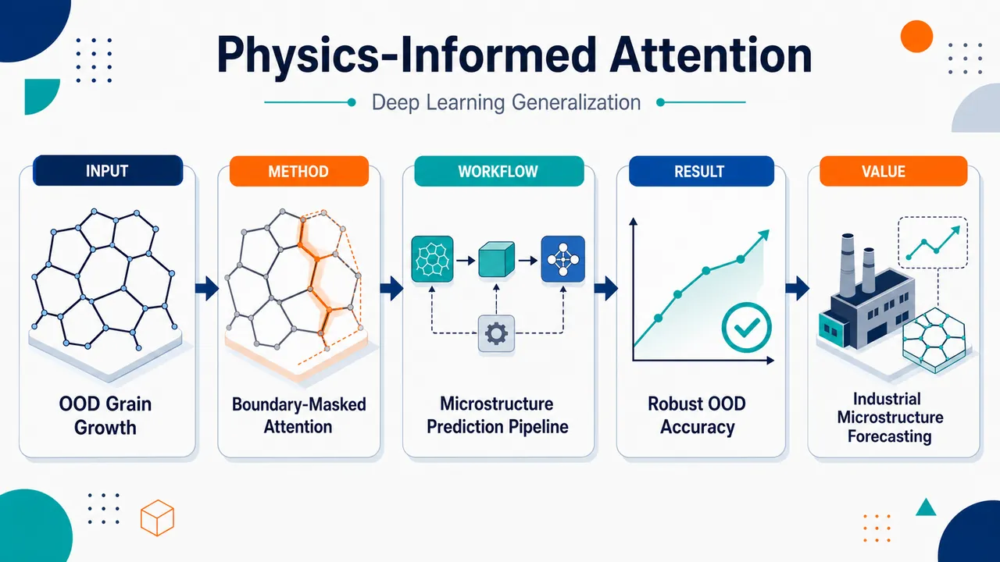
研究问题深度学习晶粒长大预测模型如果只在理想化合成纯晶粒长大数据上训练，面对真实实验显微组织、双峰晶粒尺寸分布、异常晶粒长大等域外条件时，是否还能在无需重训练或微调的情况下可靠预测未来晶界迁移、晶粒吞并和尺寸分布演化。创新方法提出 boundary-masked attention：先用 Otsu 阈值从每帧显微组织中提取晶界掩膜，再在注意力 softmax 前用大负值压制晶粒内部区域，使网络的时空注意力只集中在晶界网络上。Aha 点是把“晶粒长大由曲率驱动的晶界迁移决定”这一物理先验直接做成注意力可见区域，而不是让模型自由关注整张图像；仅增加 0.70% 参数，却让注意力热图呈现出对大晶粒边界的物理一致关注。工作流程输入前 10 min 的 1024×1024 显微组织序列；卷积自编码器将图像压缩为保留晶界位置和局部拓扑的潜空间特征；ConvLSTM 编码所有时间步的时空演化记忆；Otsu 方法提取每帧晶界掩膜并缩放到潜空间；boundary-masked attention 在所有 T×H′×W′ 晶界位置上计算注意力权重，生成晶界上下文向量；解码 ConvLSTM 以 10 min 为窗口自回归预测 t=10–59 min 的未来显微组织；最终用 SSIM、PSNR、边界误差、ECR 分布、邻居数拓扑分布评估预测结果。关键结果在三类 OOD 测试中，晶界掩膜注意力模型均优于 Autoencoder-ConvLSTM 基线。实验显微组织中，SSIM 从 0.5603 提升到 0.6593，平均晶粒尺寸误差从 14.40% 降至 7.04%，ECR 分布 KL 从 1.5049 降至 0.0604。双峰晶粒尺寸分布提升最显著，SSIM 从 0.6221 提升到 0.7609，PSNR 从 10.10 dB 提升到 12.45 dB，平均晶粒尺寸误差从 8.75% 降至 3.57%，ECR KL 从 3.1934 降至 0.0473。邻居数拓扑分布也更接近真实演化。应用价值该研究证明合成数据训练的微结构深度学习模型可以通过物理约束注意力提升向真实或复杂工业显微组织迁移的可靠性，减少对昂贵 PDE 模拟、重新训练和大量实验标注数据的依赖。它为快速预测退火过程中的晶粒粗化、材料组织演化和工艺参数筛选提供了可解释、低成本、适合部署的模型设计思路。第一部分：核心概览
该研究围绕深度学习晶粒长大预测模型的域外泛化能力展开，验证了仅在理想化合成纯晶粒长大数据上训练的模型，能否在实验显微组织、双峰晶粒尺寸分布、异常晶粒长大三类 OOD 条件下无需重训练地保持预测能力。核心贡献在于提出boundary-masked attention mechanism，将注意力限制在晶界像素上，把曲率驱动晶界迁移这一物理先验嵌入网络结构。结果显示，该机制在三类 OOD 测试中均优于基线模型，双峰分布案例提升最显著：SSIM 从 0.6221 提升至 0.7609，平均晶粒尺寸误差从 8.75% 降至 3.57%。该工作填补了微结构演化深度学习模型中系统性 OOD 泛化评估不足的空白，并展示了物理约束注意力机制的可解释性潜力。
---
第二部分：结构化快速回顾
《Physics-Informed Attention Mechanism and Generalization Capability of Deep Learning-Based Grain Growth Evolution Prediction》（None，）
背景
晶粒长大传统上依赖 phase-field、level-set 等 PDE 数值模拟，计算成本高，工业尺度可能耗时数周。深度学习模型可显著加速预测，但多数模型只在理想合成数据上训练与测试，缺乏对域外泛化能力的系统验证。
方法
采用此前训练好的 Autoencoder-ConvLSTM 作为基线模型，输入 10 min 序列并预测后续 10 min。提出 boundary-masked attention，通过 Otsu 阈值提取晶界掩膜，在 softmax 前抑制晶粒内部区域注意力，使模型主要关注晶界网络。两个模型均在 OOD 测试中固定权重，不进行重训练、微调或迁移学习。
结果
三类 OOD 测试包括：实验显微组织、双峰晶粒尺寸分布、异常晶粒长大。注意力模型在已给出的所有定量指标中均优于基线。实验显微组织中 SSIM 从 0.5603 提升至 0.6593，平均晶粒尺寸误差从 14.40% 降至 7.04%。双峰显微组织中 SSIM 从 0.6221 提升至 0.7609，平均晶粒尺寸误差从 8.75% 降至 3.57%。
讨论
注意力机制的优势来自两个方面：一是把模型搜索空间压缩到晶界区域，减少无关晶粒内部像素干扰；二是保留编码器所有时空隐藏状态，使解码过程可从任意输入时刻调用晶界信息。注意力热图显示模型倾向关注大晶粒边界，与曲率驱动长大物理规律一致。
局限
OOD 评估虽然覆盖三类典型分布偏移，但样本规模在每类测试中主要体现为单条完整 60 帧演化序列，尚不足以证明统计意义上的全面鲁棒性。注意力模型仍需在同一合成数据集上从头训练；其物理先验主要是晶界定位，未显式编码晶界能、迁移率各向异性、取向差或三重点动力学。
结论
仅在合成纯晶粒长大数据上训练的深度学习模型可在多类 OOD 条件下实现无需重训练的泛化。Boundary-masked attention 以极小参数增量提升预测精度与可解释性，尤其适用于晶界形貌仍接近训练域、但统计分布发生偏移的情况。
---
第三部分：逐章节冷凝解析
Abstract
Synthetic-data-trained models can generalize beyond their training distribution
晶粒长大预测 ML 模型通常只在理想化合成数据上训练，但实际应用需要处理训练分布之外的显微组织。研究直接评估此前训练模型在三类 Out-Of-Distribution，OOD 条件下的泛化能力：实验显微组织、双峰晶粒尺寸分布显微组织、异常晶粒长大。摘要明确指出：*"Machine Learning (ML) models for grain growth prediction are typically trained on idealized synthetic data, yet practical applications require generalization to conditions outside the training distribution."*
Three OOD regimes were used to probe different distribution shifts
三类测试覆盖了不同形式的分布偏移：真实实验图像带来的形貌粗糙性偏移，双峰晶粒尺寸分布带来的统计分布偏移，异常晶粒长大带来的动力学机制偏移。研究目标并非简单测试同分布精度，而是检验实际部署中的泛化风险。摘要表述为：*"across three test cases, including experimental microstructures, microstructures characterized by a bimodal grain size distribution, and abnormal grain growth."*
Boundary-masked attention introduces a grain-growth-specific physical inductive bias
提出的 boundary-masked attention mechanism 将注意力限制到晶界像素，使网络关注晶界迁移发生的位置，而不是晶粒内部区域。该设计具有明确的physics-informed architectural design 属性。摘要给出的核心设计是：*"a boundary-masked attention mechanism was proposed specifically for grain growth, constraining attention to grain boundary pixels."*
No OOD retraining or fine-tuning was allowed
OOD 测试中，基线模型与注意力模型均不接触 OOD 数据的训练反馈，避免把泛化能力与迁移学习能力混淆。摘要强调：*"Both the baseline and the proposed physics-informed attention model were evaluated without retraining or fine-tuning on the OOD data."*
Largest quantitative gain appeared in bimodal grain size distributions
双峰分布案例中，注意力机制带来最显著提升：SSIM 从 0.6221 提升到 0.7609，mean grain size error 从 8.75% 降至 3.57%。这一结果说明统计分布发生明显变化时，晶界约束注意力有助于模型捕捉真正的长大动力学。摘要给出精确数值：*"the most notable gains for microstructures characterized by a bimodal grain size distribution, where Structural Similarity Index Measure (SSIM) improved from 0.6221 to 0.7609 and mean grain size (øverlineR) error decreased from 8.75% to 3.57%."*
Attention heatmaps revealed physically consistent focus patterns
注意力热图显示模型更关注大晶粒边界，这与曲率驱动晶粒长大中大晶粒吞并小晶粒、晶界迁移主导拓扑变化的物理规律一致。值得注意的是，这种偏好并未被显式写入架构。摘要指出：*"The attention heatmap analysis revealed that the boundary-masked attention model learned to concentrate attention on large grain boundaries in a manner consistent with curvature-driven grain growth physics, emerging from training without being explicitly encoded into the architecture."*
---
1 Introduction
Grain growth is driven by boundary energy reduction
晶粒长大被定义为一种热机械过程，其动力来自总晶界能降低。大晶粒逐渐吞并小晶粒，导致平均晶粒尺寸随时间增加。关键物理机制被概括为：*"Grain growth, for example, is a thermomechanical process in which the migration of grain boundaries is driven by the reduction of total boundary energy, causing larger grains to progressively consume smaller ones and resulting in an increase in mean grain size over time."*
PDE-based methods are accurate but computationally expensive
传统 phase-field 与 level-set 方法通过迭代求解 PDE，在每个时间步计算晶界迁移；由于需在计算域每个点重复计算，小尺度模拟可耗时数小时到数天，工业尺度可延长至数周。原始表述为：*"Traditional approaches including phase-field [22, 12, 9, 4, 18], level-set [3, 15] predict the phenomenon by iteratively solving Partial Differential Equations (PDEs) to calculate grain boundary migration at each timestep."* 计算瓶颈进一步被量化为：*"computation times ranging from hours to days for small-scale simulations and extending to weeks for industrial-scale ones."*
Previous ML framework achieved major acceleration with high accuracy
此前 DL 框架将晶粒长大预测计算时间从小时量级降低到约 10 s per hour of grain growth evolution，同时保持较高精度：SSIM up to 86%，mean grain size error as low as 0.07%。该性能基础构成当前 OOD 研究的出发点。原文为：*"reducing computation time from the order of hours to approximately 10 s per hour of grain growth evolution."* 精度证据为：*"SSIM scores of up to 86% and a mean grain size (øverlineR) error as low as 0.07% across multiple domain sizes and initial configurations."*
Training data were idealized synthetic pure grain growth cases
基线模型的训练域具有明显理想化约束：synthetic data、pure grain growth、isotropic grain boundary properties、smooth grain boundary morphology。这些条件与真实工业显微组织之间存在系统差异。关键问题被表述为：*"the model was trained exclusively on synthetic data of pure grain growth under isotropic grain boundary properties and smooth grain boundary morphology."*
OOD generalization is the central reliability challenge
OOD generalization 指输入数据在统计性质、新特征或底层过程上系统性偏离训练分布。神经网络在同分布数据上表现良好，但面对 OOD 输入可能出现不可预测失效。定义为：*"OOD refers to inputs that differ systematically from the training data distribution, whether through different statistical properties, novel feature characteristics, or underlying processes not seen during training."* 风险被明确指出：*"neural networks tend to perform well on data that resembles their training distribution but can fail unpredictably when confronted with inputs outside this learned distribution."*
Systematic OOD evaluation remains largely absent in microstructure evolution ML
微结构演化预测中的 ML 模型通常只在同分布条件下训练和评估，缺乏系统性 OOD 泛化研究。该空白是研究定位的关键。原文为：*"existing ML models for microstructure evolution prediction are typically trained and evaluated exclusively under in-distribution conditions, and systematic evaluation of OOD generalization capability remains largely absent from the literature."*
The first objective was OOD evaluation without adaptation
第一个目标是对只在纯晶粒长大上训练的模型进行 OOD 泛化评估，且不允许 retraining 或 fine-tuning。三类测试分别是：实验显微组织、双峰初始晶粒尺寸分布、异常晶粒长大。原文为：*"this study systematically evaluated the OOD generalization capability of a grain growth ML model trained solely on pure grain growth, without any retraining or fine-tuning, across three challenging OOD test cases."*
The second objective was a physics-informed attention design
第二个目标是提出 boundary-masked attention mechanism，把时空注意力约束到晶界网络，形成与curvature-driven boundary migration 对齐的归纳偏置。原文为：*"a novel physics-informed attention mechanism design specifically for grain growth, that constrains spatiotemporal attention to grain boundary networks, introducing an inductive bias aligned with curvature-driven boundary migration."*
---
2 Methodology
Methodology combines baseline reuse, attention integration, OOD testing, and multi-metric evaluation
方法部分由四个核心组成：选用此前验证过的 Autoencoder-ConvLSTM baseline；加入 boundary-masked attention；设计三类 OOD 实验；采用像素、感知、晶粒统计和拓扑分布指标评估。该方法逻辑服务于一个严格目标：只改变注意力结构，不在 OOD 数据上训练，从而隔离物理先验对泛化的贡献。
---
2.1 Baseline Model
Baseline used an Autoencoder-ConvLSTM encoder-decoder architecture
基线模型来自此前研究，采用卷积自编码器 + ConvLSTM 的编码器-解码器架构。编码器压缩显微组织图像，ConvLSTM 学习时空演化，解码器重建完整分辨率图像。架构描述为：*"The baseline model adopted an encoder-decoder architecture that combined Convolutional Autoencoders with Convolutional Long Short-Term Memory (ConvLSTM) networks."*
Encoder preserved grain-boundary and topology information in latent space
卷积自编码器的编码器将输入显微组织压缩为紧凑潜表示，同时保留晶界位置与局部拓扑等关键信息，并去除噪声。原文为：*"The encoder of the Convolutional Autoencoder compressed input microstructure images into a compact latent representation, retaining key features such as grain boundary positions and local topology while discarding noise."*
ConvLSTM captured spatiotemporal grain growth dynamics
编码器 ConvLSTM 从压缩特征中学习晶粒长大的时空模式，同时保持显微组织空间结构；解码器 ConvLSTM 以自回归方式生成未来潜表示。原文为：*"An encoder ConvLSTM network then learned spatiotemporal patterns of grain growth evolution from these compressed features, preserving the spatial structure of the microstructure throughout the temporal sequence, while a decoder ConvLSTM network generated the predicted latent representations autoregressively."*
Three temporal-window configurations existed in the previous framework
此前框架训练了 S-10-10、S-20-20、S-30-30 三种配置，数字表示输入和输出序列长度，单位为分钟。例如 S-30-30 输入连续 30 帧并预测后续 30 帧。原文为：*"the framework was trained on three model configurations with different temporal window sizes, namely S-10-10, S-20-20, and S-30-30, where the numbers indicate the input and output sequence lengths in minutes."*
Training dataset contained 647 synthetic pure grain growth evolutions
三种配置均在相同的 647 条合成纯晶粒长大序列上训练，这些序列由 ToRealMotion, TRM 模拟生成，并用已有实验 EBSD 数据验证。原文为：*"All three configurations were trained on an identical dataset of 647 synthetic pure grain growth evolutions generated from ToRealMotion (TRM) simulations and validated against pre-existing experimental EBSD data from annealing experiments."*
Training simulations assumed isotropic and capillarity-driven growth
训练模拟条件为各向同性晶界条件、毛细驱动晶界迁移、单峰高斯初始晶粒尺寸分布。该条件限定了训练分布的物理边界。原文为：*"These simulations were conducted under isotropic boundary conditions, capillarity-driven grain boundary migration, and unimodal Gaussian initial grain size distributions."*
Training domains ranged from 2 mm × 2 mm to 5 mm × 5 mm
合成数据覆盖 2 mm × 2 mm 到 5 mm × 5 mm 的方形计算域，并包含不同晶粒尺寸分布与拓扑特征。原文为：*"The generated data spanned domain sizes ranging from 2 mm × 2 mm to 5 mm × 5 mm and initial grain configurations with varying grain size distributions and topological characteristics."*
Initial microstructures were generated by LavoGen using Laguerre-Voronoï tessellation
初始显微组织由 LavoGen 通过 Laguerre-Voronoï tessellation 生成，参数包括边长 a = 2, 3, 4, 5 mm，ECR 分布为 𝒩(øverlineR, σ²)，平均 ECR øverlineR = 20 μm，标准差 σ = 2, 4, 8, 16, 32 μm。表格说明为：*"Parameters for generating initial microstructure states using LavoGen."* ECR 定义为：*"Equivalent Circle Radius (ECR) = the radius of the circle having the same area as the considered grain."*
S-10-10 was selected for practical input availability
当前研究选用 S-10-10 作为基线，因为只需要 10 min 输入序列，而非 20 或 30 min；实验表征中连续帧获取受材料和表征流程限制，PDE 模拟中长序列生成成本更高。选择理由为：*"the previously trained model with the S-10-10 configuration was selected as the baseline model."* 实用动机为：*"the S-10-10 model requires shorter input sequences (10 min rather than 20 min or 30 min), which could be more readily available in practical applications."*
S-10-10 retained accuracy comparable to longer-window models
尽管输入时间窗口更短，S-10-10 的预测精度与长窗口模型相当，说明有限时间上下文已足以捕捉晶粒长大动力学。原文为：*"Despite requiring shorter input window sizes, the S-10-10 model maintained prediction accuracy comparable to models trained with longer temporal windows."*
Baseline weights were loaded without modification
基线模型直接加载此前训练权重；没有进行重训练、微调或迁移学习。这保证 OOD 结果是真正泛化能力，而非适应后性能。原文为：*"the baseline model weights used in this study are the original trained weights from the previous study, loaded directly without modification."* 进一步强调：*"No retraining, fine-tuning, or transfer learning was performed on the selected baseline model."*
---
2.2 Integration of Attention Mechanisms
Scaled dot-product attention provides the conceptual basis
注意力机制通过 query、key、value 之间的相关性计算权重，使模型选择性关注输入中最有信息的部分。标准公式为：
Attention(Q,K,V)=softmax(QKᵀ/√dₖ)V。原文为：*"The mechanism operates by computing relevance scores between a query and a set of key-value pairs, enabling a model to selectively weight the most informative parts of the input when generating each output."*
Standard attention must be adapted for spatiotemporal microstructures
自然语言处理中的注意力通常处理一维离散 token，而晶粒长大预测需要同时处理空间二维图像与时间演化序列。原文为：*"Unlike natural language processing, where attention operates over one-dimensional sequences of text, grain growth prediction requires attention over both spatial dimensions of the microstructure images and the temporal dimension of the evolution sequence."*
Grain interiors are less informative than grain boundaries
晶粒长大动力学主要由晶界迁移控制，而非晶粒内部像素。因此，所有显微组织区域并非同等重要。原文明确指出：*"the physical nature of grain boundary migration suggests that not all regions of the microstructure are equally informative, as the dynamics are governed primarily by grain boundaries rather than grains."*
Boundary-masked attention normalizes over all spatiotemporal latent positions
提出的注意力机制在编码特征空间的所有 T × H′ × W′ 位置上计算单个归一化分布，其中 T 为输入时间步数，H′ × W′ 为潜空间分辨率。该设计允许模型在时间与空间之间动态分配注意力。原文为：*"The proposed mechanism computes a single normalized distribution over all T × H′ × W′ positions in the encoded feature space."*
Boundary masks are extracted and resized to latent dimensions
每个输入帧先提取晶界，得到 boundary masks，再调整到潜空间尺寸。Algorithm 1 规定输入序列 X=I₁,I₂,…,Iₜ，每帧为 Iₜ∈ℝᴴ×ᵂ，输出掩膜 Mₜ∈[0,1]ᴴ′×ᵂ′，其中 1 = boundary, 0 = grain。原文为：*"Grain boundaries are extracted from each input frame, producing “boundary masks” that are resized to match the latent spatial dimensions."*
Otsu thresholding was used for boundary mask extraction
晶界掩膜通过 OtsuThreshold(Iₜ) 计算阈值 τ，然后用 M_bin ← 1[Iₜ > τ] 二值化，再调整尺寸至 H′ × W′。算法注释写明：*"Compute binary threshold with Otsu’s method"*，并定义二值化结果：*"Binarize: 1 = boundary, 0 = grain."*
Grain-region attention scores are suppressed before softmax
在 softmax 之前，晶粒内部位置被加入大负值，以使注意力权重集中在晶界。Algorithm 2 使用
e ← e ⊙ M + (-10⁴ · λ) · (1 − M)，其中 λ ∈ [0,1] 为 mask strength。原文解释为：*"Prior to softmax normalization, attention scores at grain positions are suppressed by adding large negative values, putting all attention weight on the boundaries of the grains where evolution occurs."*
Attention uses additive scoring with encoder and decoder projections
Algorithm 2 中，编码器隐藏状态 S∈ℝᵀ×ᶜ×ᴴ′×ᵂ′，解码器隐藏状态 h_dec∈ℝᶜ×ᴴ′×ᵂ′。Key 为 K←Wₑₙc(S)，Query 为 Q←W_dec(h_dec)，注意力原始分数为 e←V(tanh(K+Q))，并通过可学习温度 τₜₑₘₚ 缩放。算法注释为：*"Additive attention scores: T × H′ × W′"*。
Context vector is computed from all masked spatiotemporal positions
注意力权重 α∈ℝᵀ×ᴴ′×ᵂ′ 对编码器状态加权求和，得到上下文向量 c，再 broadcast 到空间维度。算法步骤为：*"Compute context vector as weighted sum over values"*，公式为 c ← Σₜ,h,w αₜ,h,w · Sₜ,:,h,w。
Attention extends the baseline without replacing its core architecture
该机制保留基线 Autoencoder-ConvLSTM 主体，只是在编码器 ConvLSTM 与解码器 ConvLSTM 之间加入注意力模块，并保存所有编码器隐藏状态作为时空记忆。原文为：*"the boundary-masked attention extends the baseline architecture by retaining all encoder ConvLSTM hidden states as spatiotemporal memory and incorporating the boundary-masked attention mechanism between the encoder and decoder ConvLSTM stages."*
Decoder can access boundary information from any input timestep
在每个自回归解码步骤中，上下文向量与解码器 ConvLSTM 输入拼接，使模型不只依赖最终编码器状态，而可调用任意输入时间步的晶界信息。原文为：*"At each autoregressive decoding step, the resulting context vector is concatenated with the decoder ConvLSTM input, allowing the model to access boundary information from any input timestep rather than relying solely on the compressed final encoder state."*
Physics-informed masking reduces search space and improves interpretability
限制注意力到晶界网络，等价于向模型注入与晶界迁移物理一致的归纳偏置，同时减少注意力搜索空间，提高训练效率并使注意力图可解释。原文为：*"This physics-informed constraint reduces the effective search space for the attention mechanism and potentially improves training efficiency, while ensuring that the learned attention patterns remain interpretable in terms of the underlying mechanism of grain growth."*
Attention model added only 0.70% parameters
注意力模型参数量为 1.182 M，基线模型为 1.174 M，仅增加 0.70%，增加部分来自 query、key、value 投影权重。原文为：*"The boundary-masked attention model contains 1.182 M parameters compared to 1.174 M parameters in the baseline model, representing only a 0.70% increase."*
Attention model was trained from scratch on the same 647 synthetic sequences
由于架构改变，注意力模型在同一 647 条 TRM 合成纯晶粒长大序列上从头训练，而不是在 OOD 数据上适应。原文为：*"the boundary-masked attention model was trained from scratch on the same in-distribution synthetic dataset used for the baseline model, namely the 647 TRM-generated sequences of pure grain growth."*
Training hyperparameters were controlled
训练使用 NVIDIA A100 40 GB GPU，学习率 1×10⁻⁴，优化器 AdamW，输入-预测窗口 10–10 min，数据划分 70/20/10%，batch size 1，训练 60 epochs，梯度裁剪阈值 1.0。原文表述为：*"Training was conducted on an NVIDIA A100 40 GB GPU using identical hyperparameters."*
Attention weights were fixed during OOD evaluation
与基线相同，注意力模型在所有 OOD 测试中固定权重，不进行重训练。原文为：*"As with the baseline model, the weights of the boundary-masked attention model were kept fixed throughout all OOD evaluations."*
---
2.3 Experimental Setup
Three OOD test cases were designed for direct comparison
实验框架包含三类 OOD 测试，每类代表一种工业相关分布偏移。两个模型在完全相同条件下评估，以比较注意力机制何时有效、何时提升有限。原文为：*"a comprehensive experimental framework was designed consisting of three distinct OOD test cases, each representing a different type of distribution shift relevant to practical industrial applications."*
---
2.3.1 Comparison Protocol
All test cases used identical simulation and evaluation protocol
三类测试均使用经验证的 TRM simulation tool 生成从 t = 0 min 到 t = 59 min 的完整演化，等温退火温度为 1325.15 K，每条序列 60 frames，图像分辨率 1024 × 1024 pixels。原文为：*"Each test case used a validated TRM simulation tool to generate a complete evolution of microstructure from t = 0 min to t = 59 min under isothermal annealing at 1325.15 K, producing 60 frames per sequence at 1024 × 1024 pixel resolution."*
Only the first 10 minutes were given as model input
模型输入为 t = 0–9 min 的前 10 帧；t = 10–59 min 作为评估 ground truth。该设置与 S-10-10 配置一致。原文为：*"The first 10 min of evolution (t = 0 min to t = 9 min) served as model input, consistent with the S-10-10 configuration, while the remaining frames (t = 10 min to t = 59 min) served as ground truth for evaluation."*
Predictions were autoregressive without ground-truth correction
模型以 10 min 为增量自回归预测，每个预测窗口作为下一轮输入，不能访问真实未来帧。这种设置会暴露误差累积问题。原文为：*"Predictions were generated autoregressively in 10 min increments, with each predicted window used as input to the subsequent one without access to ground truth."*
---
2.3.2 Test Case 1: Experimental Microstructures
Experimental microstructures introduced rough and irregular grain boundaries
第一类 OOD 测试为实验显微组织，整体晶粒形貌与合成训练数据相似，但晶界明显更粗糙、不规则。原文为：*"the grain boundaries of this experimental microstructure differ substantially from those in the synthetic training data."* 对比训练域的关键差异为：*"Synthetic microstructures in the training dataset typically exhibit smooth grain boundaries, whereas the boundaries of the experimental microstructure exhibit roughness and irregularities inherent to real materials characterization."*
Initial and final grain statistics showed normal coarsening
初始状态约 1800 grains，表面加权 ECR 平均值 øverlineR=38 μm；热处理一小时后约 700 grains，最终 øverlineR=48 μm。平均 ECR 增加约 26%，晶粒总数减少约 61%。原文为：*"the initial microstructure contains approximately 1800 grains, with a mean value of surface-weighted Equivalent Circle Radius (ECR) distribution (øverlineR) of 38 μm."* 最终状态为：*"After one hour of thermal treatment, the microstructure contains approximately 700 grains with an øverlineR of 48 μm."*
Material mobility represented 304L stainless steel
Figure 2 说明该实验显微组织在 1325.15 K 等温退火，并采用代表 304L stainless steel 的降低迁移率 μγ ≈ 10⁻⁶ mm² s⁻¹。图注为：*"with a reduced mobility representative of 304L stainless steel (μγ≈10−6 mm2 s−1)."*
Boundary roughness created a fundamental morphology-domain challenge
模型训练时只见过 LavoGen 生成的平滑理想晶界，却必须预测实验图像中不规则晶界的迁移。该挑战被描述为：*"the roughness of grain boundaries in this test case presented a fundamental challenge for the models trained exclusively on synthetic data generated using LavoGen."*
No boundary smoothing or preprocessing was applied
输入为原始图像，不进行边界平滑等预处理，从而更真实地评估工业应用泛化。原文为：*"no preprocessing methods such as boundary smoothing were applied to the input data."* 进一步强调：*"The models processed the raw images with no preprocessing applied, ensuring a realistic assessment of generalization capability."*
---
2.3.3 Test Case 2: Synthetic Bimodal Microstructures
Bimodal microstructures isolate statistical distribution shift
第二类测试仍由 TRM 模拟生成，与训练数据模拟框架相同，但初始晶粒尺寸分布从训练域的单峰高斯变为双峰分布。原文为：*"synthetic data generated using the TRM simulation approach as the training data, yet with the grain size distribution shifted from the Gaussian form present in the training data to a bimodal form."*
Initial and final statistics indicate aggressive fine-grain elimination
初始状态约 3500 grains，整体 øverlineR=20 μm；1 小时后约 500 grains，最终 øverlineR=50 μm。平均晶粒尺寸增加 150%，晶粒数减少约 86%，显示细晶群体被快速吞并。原文为：*"At the initial state, the microstructure consisted of approximately 3500 grains with an overall øverlineR of 20 μm."* 最终为：*"After one hour of thermal treatment, the final state contained approximately 500 grains with an øverlineR of 50 μm."*
The core challenge is distribution shape rather than boundary morphology
该测试没有实验粗糙边界的形貌复杂性，关键难点是双峰分布带来的统计外推。原文为：*"Fundamentally, the key challenge in this test case lies in the distribution shape."*
Models had to extrapolate beyond unimodal Gaussian training statistics
训练数据只包含单峰高斯晶粒尺寸分布，而该案例有两个明显峰。模型必须外推，预测双峰分布如何向正常分布演变。原文为：*"the models were trained only on unimodal Gaussian grain size distributions while this test case features two distinct peaks."* 外推要求为：*"The trained models had to extrapolate beyond the learned parameter space to predict the evolution of this bimodal distribution."*
The test distinguishes physics learning from pattern memorization
随着演化，小晶粒优先消失，大晶粒继续长大，双峰分布逐渐转向接近正态分布。该案例检验模型是否学到curvature-driven boundary migration，而非记忆单峰高斯统计模式。原文为：*"This test case therefore assessed whether the models captured the underlying physics of curvature-driven boundary migration or only memorized patterns specific to unimodal Gaussian grain size statistics."*
---
2.3.4 Test Case 3: Abnormal Grain Growth
Abnormal grain growth introduced a fundamentally different kinetic regime
第三类测试为异常晶粒长大，相对于训练中的均匀纯晶粒长大，底层动力学机制更具挑战性。原文为：*"This test case represented a fundamental difference in physical mechanism compared to the regular grain growth used during training."*
Abnormal grain growth involves one large grain consuming normal grains
异常晶粒长大中，一个或多个大晶粒逐渐吞并周围小晶粒。原文为：*"abnormal grain growth involves one or more large “abnormal” grains that progressively consume the surrounding smaller “normal” grains."*
The abnormal grain advantage came only from size, not mobility
该模拟中异常晶粒没有更高迁移率；其初始优势完全来自尺寸，所有晶界迁移率相同。原文为：*"the initial advantage of the abnormal grain arises solely from its size, while its boundary mobility is identical to that of all other grain boundaries in the microstructure."*
Initial and final statistics quantify extreme multiscale evolution
初始状态约 6000 grains，平均 øverlineR=12 μm；1 小时后异常晶粒 ECR 达 600 μm，占据接近 20% 总面积；晶粒总数降至约 2000，平均 øverlineR=25 μm，增幅 108%。原文为：*"At the initial state, the microstructure contained approximately 6000 grains with an øverlineR of 12 μm."* 异常晶粒结果为：*"After one hour of evolution, the single abnormal grain reached an ECR of 600 μm and consumed almost 20% of the total surface area of the microstructure."*
Models had to predict two types of boundary migration simultaneously
两个模型必须同时预测正常小晶粒之间的晶界迁移，以及异常大晶粒边界周围的快速吞并过程。原文为：*"both models had to simultaneously predict two distinct types of boundary migration: moving boundaries between similar-sized normal grains and around the single abnormal grain."*
This test probes whether interface-energy principles were learned
该多尺度动态不存在于训练数据中，因此测试模型是否学到interface energy minimization 的一般规律，而非只记住均匀动力学下的纯晶粒长大模式。原文为：*"this specific test case therefore assessed whether the models learned general principles of interface energy minimization, or whether they only memorized patterns specific to the uniform kinetics of pure grain growth."*
---
2.4 Evaluation Metrics
Evaluation combined pixel-level, perceptual, statistical, and topological metrics
评估框架沿用此前研究，并新增一个拓扑指标。像素与感知质量使用 Boundary-focused MAE_b、Boundary-focused MSE_b、PSNR、SSIM。原文为：*"Pixel-level and perceptual quality was assessed through Boundary-focused Mean Absolute Error (MAEb), Boundary-focused Mean Squared Error (MSEb), Peak Signal-to-Noise Ratio (PSNR), and SSIM."*
Grain size statistics were evaluated using ECR distributions
晶粒级统计基于表面加权 ECR 分布，指标包括 KL divergence、Wasserstein distance、øverlineR error。原文为：*"Grain-level statistics were quantified from surface-weighted ECR distributions using Kullback-Leibler (KL) divergence, Wasserstein distance, and øverlineR error."*
Neighbor count distribution was added as a topology metric
新增的晶粒邻居数分布记录每个晶粒共享边界的邻居数量，用于表征晶粒网络连通性。原文为：*"A further metric introduced in this study is the grain neighbor count distribution, which characterizes network connectivity by recording the number of boundary-sharing neighbors per grain."*
Six-neighbor tendency connects topology to von Neumann–Mullins physics
二维各向同性纯晶粒长大在长时间退火后平均邻居数趋近约 6，与 von Neumann–Mullins predictions 一致；双峰与异常长大可偏离该规律。原文为：*"Two-dimensional grain structures under pure grain growth converge toward approximately six neighbors per grain on average at extended annealing times under isotropic grain growth conditions, following von Neumann–Mullins predictions."*
Topology metrics catch failures missed by image metrics
邻居数分布通过 KL divergence 与 Wasserstein distance 量化预测分布与真实分布的一致性，可发现像素指标或 ECR 指标无法捕捉的拓扑错误。原文为：*"Distributional agreement is quantified through KL divergence and Wasserstein distance, enabling detection of topological prediction failures that may not be captured by the other metrics."*
Primary evaluation focused on the 59 min final state
主要比较目标是 t = 59 min 最终状态，同时在 10 min 间隔进行时间跟踪。原文为：*"Primary comparisons targeted the 59 min final state, supplemented by temporal tracking at 10 min intervals."*
---
3 Results
Results compare baseline and boundary-masked attention under each OOD case
结果部分逐一报告三类 OOD 测试的像素误差、感知质量、晶粒尺寸分布、邻居数拓扑分布，并用误差热图和分布曲线展示最终状态。已提供内容完整覆盖 Test Case 1 与 Test Case 2 的大部分结果。
---
3.1 Test Case 1: Experimental Microstructures
Experimental rough boundaries degraded prediction but did not prevent generalization
实验显微组织测试针对训练数据中不存在的粗糙不规则晶界，检验形貌不匹配是否降低预测精度。原文为：*"this scenario addressed a morphologically distinct challenge, where rough and irregular grain boundaries characteristic of experimental microstructures are entirely absent from the synthetically generated training data."*
Baseline achieved moderate final-state structural similarity
在 t = 59 min，基线模型获得 MSE_b = 0.3064、MAE_b = 0.4729、PSNR = 9.50 dB、SSIM = 0.5603，误差在显微组织中广泛分布。原文为：*"the baseline model achieved MSEb of 0.3064, MAEb of 0.4729, PSNR of 9.50 dB, and SSIM of 0.5603 at t = 59 min, with residuals broadly distributed across the microstructure."*
Boundary-masked attention improved all pixel and perceptual metrics
注意力模型在实验显微组织中将 MSE_b 降至 0.2722，MAE_b 降至 0.4339，PSNR 提升至 10.70 dB，SSIM 提升至 0.6593。原文为：*"The attention-integrated model achieved lower pixel-wise errors across all metrics, with MSEb of 0.2722, MAEb of 0.4339, PSNR of 10.70 dB, and SSIM of 0.6593."*
Mean grain size error was halved by attention
ECR 分布层面，注意力模型显著降低平均晶粒尺寸误差：从 14.40% 降至 7.04%。原文为：*"the R¯ error decreasing from 14.40% to 7.04%."*
ECR distribution agreement improved dramatically
ECR 分布的 KL divergence 从 1.5049 降至 0.0604，Wasserstein distance 从 0.0111 降至 0.0061，说明注意力模型更准确地复现最终晶粒尺寸分布。原文为：*"KL divergence from 1.5049 to 0.0604, and Wasserstein distance from 0.0111 to 0.0061."*
Neighbor-count topology also improved
晶粒邻居数分布中，注意力模型 KL = 0.0313、W = 0.1509；基线模型 KL = 0.1679、W = 0.5969。注意力机制不仅改善图像相似性，也改善晶粒网络拓扑预测。原文为：*"the attention model recorded KL divergence of 0.0313 and Wasserstein distance of 0.1509 compared to 0.1679 and 0.5969 for the baseline."*
Attention outperformed baseline across all metric categories
实验显微组织案例中，注意力模型在像素、感知、ECR 分布、邻居拓扑四类指标上全部优于基线。原文总结为：*"Across all metric categories, the proposed attention mechanism produced lower errors and closer alignment with the ground truth for this test case."*
---
3.2 Test Case 2: Synthetic Bimodal Microstructures
Bimodal case isolates statistical rather than morphological OOD challenge
第二个测试不同于实验显微组织，主要考察双峰初始晶粒尺寸分布带来的统计偏移，而非晶界粗糙性。原文为：*"the second test case introduced a statistical rather than morphological challenge, examining model generalization to microstructures characterized by a bimodal initial grain size distribution that differs from the unimodal Gaussian distribution of the training data."*
Same simulation framework removed experimental morphology confounders
双峰案例与训练数据同属 TRM 模拟框架，避免了实验图像不规则边界的额外复杂性。原文为：*"This scenario operated within the same simulation framework as the training data, without the added complexity of irregular boundary morphology."*
Attention substantially reduced boundary-focused pixel errors
在 t = 59 min，注意力模型将 MSE_b 从 0.3118 降至 0.2171，将 MAE_b 从 0.4737 降至 0.3773。原文为：*"The MSEb decreased from 0.3118 to 0.2171, the MAEb decreased from 0.4737 to 0.3773."*
Perceptual quality improved strongly under bimodal distribution shift
双峰案例中 PSNR 从 10.10 dB 提升至 12.45 dB，SSIM 从 0.6221 提升至 0.7609，是摘要中强调的最显著提升。原文为：*"PSNR increased from 10.10 dB to 12.45 dB, and SSIM increased from 0.6221 to 0.7609."*
Attention closely reproduced the ground-truth ECR distribution
注意力模型的最终 ECR 统计误差较低：øverlineR error = 3.57%，KL divergence = 0.0473，Wasserstein distance = 0.0035。原文为：*"the boundary-masked attention model closely reproduced the ground truth ECR distribution, achieving R¯ error of 3.57%, KL divergence of 0.0473, and Wasserstein distance of 0.0035."*
Baseline showed much larger distributional deviations
基线模型对应指标为 øverlineR error = 8.75%，KL divergence = 3.1934，Wasserstein distance = 0.0082，尤其 KL divergence 显示其对双峰演化后尺寸分布的拟合明显较差。原文为：*"the baseline produced substantially higher deviations of 8.75%, 3.1934, and 0.0082 for the same metrics."*
Neighbor topology improvement was present but more modest
表 4 给出的邻居数分布指标显示，注意力模型 KL = 0.0799、W = 0.2155，基线模型 KL = 0.2296、W = 0.3653。这说明注意力机制也改善拓扑连通性预测，但拓扑分布的提升幅度小于 ECR 分布的 KL 改善。表格说明为：*"Quantitative evaluation metrics for Test Case 2 (synthetic bimodal microstructures) at t = 59 min."*
---
第四部分：深度理解与语言支持
1. 术语解析
Out-Of-Distribution generalization
OOD generalization 指模型面对训练分布之外输入时仍能保持合理预测能力。这里的 OOD 不只是噪声或小扰动，而包括三类系统性偏移：实验图像的粗糙晶界、双峰尺寸统计、异常晶粒动力学。英文表达 *"inputs that differ systematically from the training data distribution"* 中的 systematically 很关键，强调偏移具有结构性，而不是随机误差。
Physics-informed attention mechanism
Physics-informed 在这里不是指显式求解物理方程，而是把物理知识转化为网络结构约束。晶粒长大发生在晶界迁移上，因此让注意力只看晶界，是一种弱形式但有效的物理归纳偏置。与 PINN 中把 PDE residual 写入 loss 不同，该工作通过架构设计嵌入物理。
Inductive bias
Inductive bias 可理解为模型在学习前被赋予的“偏好”或“先验倾向”。boundary-masked attention 的 inductive bias 是：重要信息应位于晶界，而非晶粒内部。这种偏置可能提高泛化，因为它减少模型学习到无关图像纹理或统计巧合的机会。
Curvature-driven boundary migration
Curvature-driven boundary migration 指晶界迁移速度与局部曲率相关，高曲率小晶粒更容易收缩并消失，大晶粒倾向长大。该机制解释了为什么双峰分布中小晶粒群体被快速消耗，也解释了注意力热图关注大晶粒边界的物理意义。
Surface-weighted Equivalent Circle Radius
Surface-weighted ECR 是以晶粒面积加权的等效圆半径分布。ECR 是“与晶粒面积相同的圆的半径”。表面加权后，大晶粒对分布贡献更大，因此更敏感于异常晶粒或大晶粒吞并行为。相比简单按晶粒数统计，它更贴近显微组织面积占比变化。
---
2. 疑难查证
为什么只关注晶界不会丢失晶粒内部信息？
晶粒长大中，晶粒内部通常不发生强烈结构变化；拓扑变化由晶界迁移、三重点移动、晶粒消失决定。对于输入图像预测任务，晶粒内部像素大多是低信息区域。把注意力限制到晶界，相当于告诉模型：真正决定未来形貌的是界面网络，而不是晶粒内部灰度块。编码器仍然看到整张图像，只是注意力检索阶段优先使用晶界区域，因此不是完全丢弃晶粒内部，而是在时空记忆调用时施加物理筛选。
为什么双峰分布案例提升最大？
双峰案例的晶界形貌仍来自 TRM 合成模拟，与训练域的图像风格接近；主要变化是晶粒尺寸统计分布。基线模型可能部分依赖训练中单峰高斯统计规律，因此面对双峰分布时容易错误估计小晶粒消失速率和大晶粒增长。注意力模型被迫关注晶界，尤其是不同尺寸晶粒之间的界面，因此更容易依据局部曲率与拓扑关系预测演化，而不是依赖整体分布模板。这解释了 SSIM 0.6221 → 0.7609 与 øverlineR error 8.75% → 3.57% 的大幅改善。
为什么异常晶粒长大比双峰分布更困难？
异常晶粒长大不只是统计分布偏移，而是动力学尺度结构发生改变。一个 ECR 最终达到 600 μm、占据约 20% 面积的异常晶粒，会引入极端长程几何影响。训练数据中的纯晶粒长大主要是均匀粗化，没有单个晶粒主导全局演化的模式。因此，即使注意力关注晶界，也可能缺乏足够训练经验去预测异常晶粒边界的大尺度吞并速度和形状演变。
KL divergence 与 Wasserstein distance 为什么同时使用？
KL divergence 对分布形状差异敏感，尤其当预测分布在真实分布高概率区域给出很低概率时会产生很大惩罚。Wasserstein distance 更像“把一个分布搬运成另一个分布所需的距离”，对峰位置偏移更直观。双峰案例中，基线 ECR KL 达 3.1934，而 Wasserstein 为 0.0082，说明其分布形状或概率质量配置存在严重错配；注意力模型 KL 降至 0.0473，表明尺寸分布形状被显著修正。
---
第五部分：创新评估与关联
1. 创新性判断
OOD generalization becomes the main scientific object rather than a side test
过去 2–5 年的微结构演化深度学习工作多集中于同分布预测精度、加速比和网络结构改进，训练集与测试集通常来自相同模拟条件。该研究把 OOD generalization 本身作为中心问题，系统覆盖形貌偏移、统计偏移和动力学偏移。创新点不在于单纯提出一个更复杂网络，而在于提出一个更接近实际部署问题的评估范式：模型能否在没有重训练时处理工业相关显微组织。
Physics-informed attention is tailored to grain growth rather than borrowed generically
注意力机制在视觉和时序任务中已很常见，但该研究的独特性在于将注意力约束到晶界网络，并与晶粒长大的物理位置对应起来。不同于一般 self-attention 让模型自由学习关注区域，这里通过 boundary mask 预先排除了晶粒内部位置，使注意力机制具有明确物理意义。
Minimal parameter increase yields interpretable robustness gains
模型参数仅从 1.174 M 增加到 1.182 M，增加 0.70%，却在实验显微组织和双峰分布中显著提升精度。这种低参数成本的结构性先验，比单纯扩大模型容量更有科学价值，因为性能提升更可能来自物理约束，而非模型规模。
Attention heatmaps provide a bridge between prediction and mechanism
注意力热图显示模型在训练后自发关注大晶粒边界，并与曲率驱动晶粒长大一致。这一点解决了深度学习微结构预测常见的“黑箱”问题：不仅能预测，还能检查模型是否把注意力放在物理上合理的位置。
The unresolved problem addressed is synthetic-to-practical transfer
前人工作常证明模型能在合成测试集上高精度预测，但工业应用的关键问题是：真实显微组织、非高斯统计、异常长大等条件并不完全服从训练分布。该研究显示，合成数据训练模型并非只能在合成域内工作；若结构中嵌入合理物理先验，可以提高 synthetic-to-practical transfer 的可靠性。
Novelty is strongest in evaluation design and physics-constrained attention, not in base sequence modeling
Autoencoder、ConvLSTM 和 attention 本身都不是新技术；真正的新颖性在于三者的组合方式服务于晶粒长大物理：ConvLSTM 负责时空演化，autoencoder 负责显微组织压缩重建，boundary mask attention 负责把信息检索限制到晶界。该组合直接针对晶粒长大预测中的核心物理对象——grain boundary network。
-
10
📊 含图深析
💡 亮点：非公度间隔层可降滑移摩擦并保留混合铁电极化。
📖 展开分析 + 配图
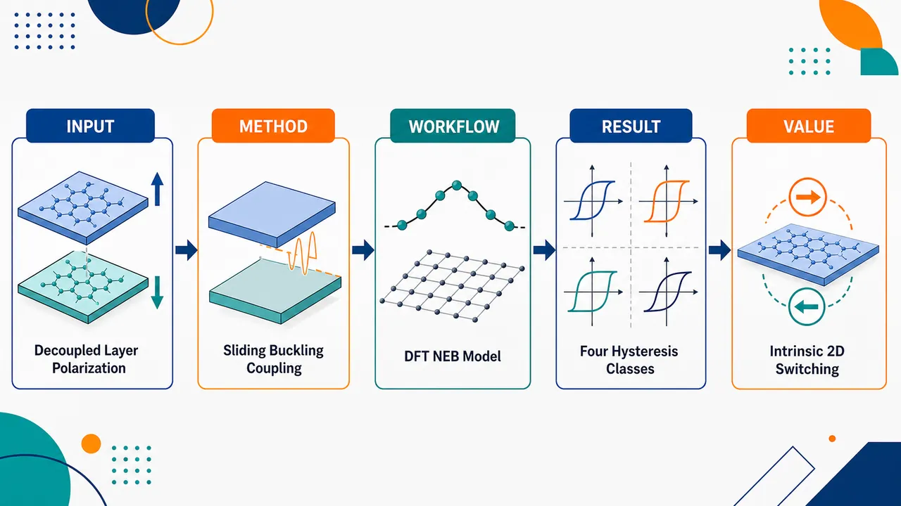
研究问题在超润滑滑移铁电体中，插入晶格不匹配的 hBN 间隔层虽能降低 MoS₂ 外层滑移摩擦，却使上下外层距离增大、直接耦合削弱；核心问题是：当外层近似解耦时，面外铁电极化如何仍能存在并被翻转？创新方法提出“滑移—屈曲耦合”的电子-离子混合铁电机制：外层 MoS₂ 的层间滑移不再单独决定极化，hBN 间隔层的面外屈曲作为离子自由度打破上下对称性，诱导 N pz 轨道与上/下 Mo 3dz² 轨道发生非对称杂化，从而形成可随屈曲方向反转的面外极化；并建立含堆垛 s、屈曲 δ、电场 ℰ 的连续能量模型。工作流程以 MoS₂/hBN/MoS₂ 范德华三明治结构为输入，构建 86、146、1118 原子可公度超胞；施加不同 hBN 晶格失配应变，计算极化与堆垛能；用 NEB 映射极化上/下态之间的滑移路径；引入屈曲坐标 δ，从平坦 hBN 到正/反向屈曲连续扫描；分析能带、Γ 点波函数和 N pz–Mo 3dz² 轨道投影；最后用 𝒱tot(s,δ,ℰ)=𝒱(δ)ϕe(s)−ℰp(δ)ϕo(s)+Δ(δ) 预测电场驱动滞回环。关键结果未应变 hBN 间隔层下，SL-sFE 面外极化约 0.2 pC/m，约为平行堆垛双层 MoS₂ 的 30–40%；hBN 应变越大，极化和堆垛能垒同步降低，揭示“低滑移势垒—低自发极化”的设计权衡。δ=0 平坦间隔层时极化趋近零，δ=+1 与 δ=−1 时波函数分别偏向上/下 MoS₂ 层并导致极化反号。模型预测四类滞回：常规一阶、混合一阶/二阶、多步含零极化平台、类反铁电双滞回；MoS₂/hBN/MoS₂ 属于类型 II。应用价值该研究把 SL-sFE 从“低摩擦滑移铁电体”提升为一种可设计的新型二维电子-离子混合铁电平台，为低能垒、本征、无需畴壁的纳米铁电翻转提供路线；通过调控间隔层屈曲刚度、晶格失配、界面轨道杂化和堆垛势能，可在低矫顽场与可观极化之间寻找器件优化窗口，并探索多步翻转、双滞回等新铁电相行为。第一部分：核心概览
该研究将超润滑滑移铁电体（SL-sFE）从“低摩擦版滑移铁电体”重新定义为一种由层间滑移与间隔层面外屈曲共同控制的新型铁电体系。核心贡献在于揭示其极化不是传统 sFE 的纯电子滑移极化，而是源自非对称轨道杂化的电子-离子混合极化；并建立包含滑移、屈曲与电场耦合的连续模型，预测四类铁电滞回行为，包括混合一阶/二阶、多步翻转和类反铁电双滞回。
---
第二部分：结构化快速回顾
《Hybrid Electronic-Ionic Ferroelectricity in Superlubric van der Waals Heterostructures》（None，）
背景
滑移铁电体（sFE）依赖二维层间相对滑移产生面外极化，具有疲劳自由等优势，但刚性整体滑移的理论矫顽场约 2 V/Å，远高于实验值。超润滑滑移铁电体（SL-sFE）通过插入晶格不匹配的间隔层降低摩擦与滑移势垒，但外层间距增大后，极化如何维持成为关键问题。
方法
以 MoS₂/hBN/MoS₂（MBM） 为原型体系，使用第一性原理计算、NEB 路径计算、应变控制、屈曲参数化坐标 δ、电子能带与轨道投影分析，并构建依赖堆垛 s、屈曲 δ 与电场 ℰ 的连续能量模型。
结果
三个超胞 86、146、1118 原子显示：hBN 间隔层应变越大，极化与堆垛能均显著降低。未应变 hBN 时极化约 0.2 pC/m，约为平行堆垛双层 MoS₂ 的 30–40%。极化随屈曲消失而趋零，反转屈曲可反转极化；电子结构显示 N p_z 与上下 Mo 3d_z² 轨道发生屈曲控制的非对称杂化。
讨论
SL-sFE 的极化不能归因于滑移单一自由度，而来自滑移-屈曲耦合。降低滑移能垒通常伴随自发极化降低，说明超润滑设计存在性能权衡。屈曲自由度还使其出现常规 sFE 不具备的多种滞回类型。
局限
计算依赖周期性可公度超胞，需人为施加晶格失配应变；主要原型为 MoS₂/hBN/MoS₂；部分滞回类型通过手动缩放屈曲能产生；实验验证、温度效应、缺陷、有限尺寸、动力学和真实摩擦耗散尚未展开。
结论
SL-sFE 构成一类区别于传统滑移铁电体的新型二维铁电材料，其本质是电子-离子混合铁电性。通过调控间隔层屈曲刚度、晶格失配和轨道杂化，可在低能垒与可观极化之间寻找最优设计窗口。
---
第三部分：逐章节冷凝解析
Abstract
- Superlubric spacer lowers friction but creates a polarization puzzle
在传统滑移铁电体中，极化来自外层之间的相对滑移；在 SL-sFE 中插入非公度间隔层可降低滑移摩擦，但也使外层近似解耦，极化能否跨越间隔层维持成为基本问题。摘要明确指出这一未解难题：*"One strategy to lower the switching barrier in a sliding ferroelectric (sFE) is to insert an incommensurate spacer to reduce sliding friction, creating a superlubric sliding ferroelectric (SL-sFE)."* 同时指出核心问题为：*"However, how polarization survives across the effectively decoupled outer layers remains an open question."*
- Polarization is not driven by sliding alone
SL-sFE 与传统 sFE 的根本区别在于：滑移不是唯一极化驱动力，间隔层的面外屈曲成为必要自由度。摘要中的关键判断是：*"polarization is not driven by sliding alone, but by an intricate coupling between interlayer sliding and the out-of-plane buckling of the spacer layer."* 这将极化机制从单一堆垛几何问题扩展为滑移-屈曲耦合问题。
- Hybrid electronic-ionic polarization emerges from asymmetric orbital hybridization
极化来源被定义为混合电子-离子机制：离子结构畸变控制轨道杂化不对称性，电子云分布不对称产生极化。摘要给出直接表述：*"This coupling results in a unique hybrid electronic-ionic polarization arising from asymmetric orbital hybridization."* 其中 ionic 对应间隔层屈曲，electronic 对应层间轨道杂化与电荷分布。
- Multiple hysteresis classes establish a distinct ferroelectric family
滑移和屈曲两个序参量的竞争生成多种非常规滞回行为，包括混合一阶/二阶相变、多步翻转和类反铁电行为。摘要总结其相图丰富性：*"The interplay of these order parameters generates several distinct types of ferroelectric hysteresis, including mixed first- and second-order transitions, multi-step switching, and antiferroelectric-like behavior."* 因此 SL-sFE 被定位为：*"a distinct class of ferroelectrics."*
---
Introduction.—
- Sliding ferroelectrics are a major recent development in 2D ferroelectricity
滑移铁电体被置于二维材料和铁电研究前沿，先由理论和第一性原理预测，随后由实验发现，并在器件中展现高性能。关键历史链条为：*"Sliding ferroelectrics (sFEs) are one of the most promising recent discoveries in the fields ferroelectricity and 2D materials."* 以及：*"Originally predicted with theory and first-principles calculations [1], they were soon after discovered experimentally [2, 3], and have recently been shown to have outstanding performance in devices [4, 5]."*
- Conventional sFE polarization is purely electronic and weak
传统 sFE 的极化不是离子位移造成，而是由长程层间相互作用与少量电荷转移产生；电荷转移量约为 1% 电子。原文给出机制与数量级：*"Unlike conventional ferroelectrics, the polarization in sFEs is purely electronic, originating from long-range interlayer interactions and charge transfer (about 1% of an electron [6, 7])."* 这解释了其自发极化通常较弱。
- Electronic sliding ferroelectricity produces moiré domains, topology, and multiferroicity
sFE 的电子本质带来多个新物理方向，包括莫尔极性畴、对电场的非常规响应、极性拓扑和多铁序。相关表述为：*"the polarization in sFEs gives rise to a wide variety of novel physics in 2D materials, for example moiré polar domains"*，并进一步列举：*"nontrivial polar topology"* 和 *"multiferroic order."*
- Fatigue-free switching originates from sliding rather than bond breaking
sFE 的应用优势来自翻转过程不需要反复断键成键，而是依赖层间长程相互作用和滑移。关键句为：*"because the switching relies on long-range interactions and sliding rather than breaking and forming bonds, the ferroelectricity is intrinsically fatigue-free."* 这一区别使其相对传统铁电氧化物具备潜在可靠性优势。
- Rigid sliding has a prohibitively large theoretical coercive field
器件优化的主要挑战是降低矫顽场。对于 hBN、MoS₂、WSe₂ 等刚性整体滑移，理论矫顽场约 2 V/Å，约为实验值的 100 倍。原文给出明确数值：*"For ideal rigid sliding in hexagonal boron nitride (hBN) and transition metal dichalcogenides (TMDs) such as MoS2, WSe2, etc., the theoretical coercive field is of order 2 V/Å [6, 7], which is approximately 100 times larger than experimentally observed values [2, 13]."*
- Domain-wall-mediated switching is more efficient but extrinsic
实际低场翻转更可能通过畴壁堆垛运动完成，即 AB 与 BA 极化相反区域之间的部分位错像孤子一样扫过样品。原文描述为：*"It is far more energetically efficient to switch polarization through the motion of domain wall stackings, partial dislocations separating AB and BA stackings (polarization up and down), that sweep through the system like solitons in response to an electric field."* 但畴壁具有拓扑保护，不能自发成核：*"These domain walls are topologically protected and cannot nucleate spontaneously."* 因而通常需要通过小扭角人为引入：*"they must be included in a sample manually, typically by imposing a marginal twist angle."*
- Superlubric spacer was proposed to reduce the sliding barrier
SL-sFE 的设计思想是在 sFE 中间插入晶格常数不同的间隔层，形成超润滑界面，让外层在间隔层上低摩擦滑移。原文为：*"One promising alternative strategy to lower the sliding energy barrier is the recent proposal of the superlubric sliding ferroelectric (SL-sFE) [26], in which a spacer layer with a different lattice constant is inserted into the middle of a sFE to create a superlubric interface."* 预期效果为：*"By sliding over the spacer layer without friction, this dramatically lowers the energy barrier."*
- Spacer insertion creates a conceptual contradiction for polarization
间隔层插入后外层距离近似加倍，外层间直接耦合被削弱；若没有间隔层主动参与，相对堆垛本身无法产生自发极化。原文明确指出：*"inserting a spacer approximately doubles the distance between the outer layers."* 并进一步说明：*"In the absence of a spacer, the outer layers would effectively be decoupled, and their relative stacking alone could not generate a spontaneous polarization."*
- SL-sFE cannot be treated as a reduced-barrier generalization of sFE
逻辑结论是：SL-sFE 不只是普通 sFE 的低能垒版本，极化和铁电的物理机制必须发生改变。原文表述非常直接：*"Therefore, SL-sFEs cannot be thought of simply as a generalization of sFEs with a reduced energy barrier."* 以及：*"The physical mechanism for polarization and ferroelectricity must be fundamentally different from those of sFEs."*
- Spacer must actively mediate ferroelectricity
间隔层不仅降低摩擦势垒，还必须参与极化生成与铁电翻转。关键判断为：*"the spacer itself must be playing an active role in not only lowering the energy barriers, but also mediating polarization and ferroelectricity."* 这为后续的hBN 屈曲和轨道杂化分析设定核心问题。
- Central claim: SL-sFE is governed by sliding-buckling coupling
引言末段直接给出核心结果：SL-sFE 的物理性质与传统 sFE 根本不同，极化不是来自滑移单独作用，而是来自外层滑移和间隔层面外屈曲的耦合。原文为：*"the physical properties of superlubric sliding ferroelectrics are fundamentally different from those of conventional sFEs."* 以及：*"polarization does not originate from sliding alone, but from an intricate interplay between interlayer sliding of the outer layers and out-of-plane buckling of the spacer layer."*
- Hybrid electronic-ionic origin distinguishes SL-sFE from normal sFE
与普通 sFE 的纯电子极化相比，SL-sFE 具有由非对称轨道杂化诱导的电子-离子混合极化。引言给出机制判断：*"The polarization of unique hybrid electronic-ionic origin: rather than being purely electronic as in normal sFEs, it arises from an asymmetric orbital hybridization between the spacer and the outer layers, which is controlled by the combination of sliding and buckling."*
- Order-parameter interplay creates multiple hysteresis modes
滑移和屈曲两个序参量的耦合导致丰富的铁电滞回，包括混合一阶/二阶转变和多步翻转。原文总结为：*"The interplay between sliding and buckling order parameters leads to a rich parameter space with multiple distinct types of ferroelectric hysteresis, including mixed first- and second-order transitions, and multi-step switching."*
---
Results.—
- MoS₂/hBN/MoS₂ is used as the prototypical SL-sFE
第一性原理模拟对象为 MoS₂/hBN/MoS₂（MBM），即上下层 MoS₂ 中间夹 hBN 间隔层的范德华异质结构。原文说明：*"First-principles simulations were performed ... on MoS2/hBN/MoS2 (MBM), a prototypical SL-sFE."*
- Commensurate-cell choice strongly affects SL-sFE properties
周期性模拟需要构造可公度超胞，因此不可避免地向 MoS₂ 或 hBN 引入晶格失配应变。结果显示 SL-sFE 的物理性质对可公度超胞选择高度敏感。原文为：*"we find that the physical properties of SL-sFEs are highly sensitive to the choice of commensurate cell."* 原因是：*"constructing a periodic SL-sFE for simulations inherently requires imposing a lattice mismatch strain between the outer and spacer layers."*
- Three MBM supercells reveal strain-dependent polarization and energy
研究比较 86 原子、146 原子、1118 原子三个 MBM 超胞，每个超胞对应不同 hBN 双轴应变 ηBN 与面外极化 P。图注明确写道：*"MoS2/hBN/MoS2 heterostructures for (a) 86-atom, (b) 146-atom, and (c) 1118-atom commensurate supercells, where Δz represents the out-of-plane buckling of the buckled spacer."* 并标注：*"The biaxial strain ηBN imposed on the hBN spacer in each supercell is shown above, and the out-of-plane polarization P is shown below in red."*
- NEB sliding paths show that increasing hBN strain reduces both polarization and stacking energy
使用 nudged elastic band（NEB） 方法连接极化向上与向下态，沿滑移路径计算极化和相对能量。核心结果是 hBN 应变 ηBN 增大时，极化和堆垛能均显著下降。原文为：*"Using the nudged elastic band (NEB) method [27] to connect the polarization up and down states through sliding, we find that as ηBN increases, both the polarization and stacking energy [28] are significantly reduced."*
- Energy-barrier reduction and polarization retention form a trade-off
这一结果推翻了“降低能垒而不损失极化”的简单预期，显示低势垒与强极化之间存在权衡。原文表述为：*"This shows that there is a trade-off between lowering the energy barrier and sustaining the out-of-plane polarization."* 先前忽略该权衡的原因是只考虑了一个大失配超胞：*"which was previously overlooked as only a single commensurate supercell with a relatively large lattice mismatch was considered (the 86-atom supercell considered here)."*
- Apparent supercell-size dependence actually comes from lattice-mismatch strain
超胞尺寸效应的本质不是尺寸本身，而是不同可公度构型强加给 hBN 的晶格失配应变。原文为：*"The apparent dependence on the supercell size actually originates from the lattice mismatch imposed in the SL-sFE."* 该失配导致间隔层为了容纳应变发生面外屈曲：*"which results in an out-of-plane buckling of the spacer layer in order to accommodate the induced strain."*
- Unstrained hBN spacer gives approximately 0.2 pC/m polarization
对三个超胞施加相同 hBN 双轴应变后，极化数据塌缩到同一曲线；当 hBN 未受应变时，极化约 0.2 pC/m，约为平行堆垛双层 MoS₂ 的 30–40%。原文精确给出：*"When the hBN spacer is unstrained, the polarization is approximately 0.2 pC/m for all cases: about 30–40% of that of parallel-stacked bilayer MoS2."*
- Spacer strain, not MoS₂ strain, controls polar behavior
三个超胞虽对 MoS₂ 也施加了不同应变，但极化几乎相同，表明主导因素是 hBN 间隔层应变与屈曲，而非外层 MoS₂ 应变。原文为：*"all three supercells collapse onto a single curve, illustrating that the strain on the spacer, rather than supercell size, influences the polar properties of SL-sFEs."* 并进一步指出：*"the outer MoS2 layers have little effect on the polarization."*
- Buckling coordinate δ isolates the structural degree of freedom
为分离 hBN 应变对极化和能量的影响，引入广义坐标 δ，从完全平坦 δ = 0 连续变化到平衡屈曲结构 δ = 1；中间结构通过线性插值，范围外结构通过外推得到。原文为：*"we introduce a generalized coordinate δ which parametrizes the buckling continuously from a perfectly flat layer (δ=0) to a buckled layer in the equilibrium structure (δ=1)."* 以及：*"Structures in between δ=0,1 are obtained by linearly interpolation, and structures outside of this range are obtained through extrapolation."*
- Fixed-δ NEB calculations map sliding transition pathways
对多个固定 δ ∈ [0,1] 的结构执行 NEB，系统地追踪极化向上与向下态之间的滑移路径。原文为：*"NEB calculations were performed to map the transition pathway between the polarization-up and polarization-down states with sliding, for a series of fixed values of δ ranging from 0 to 1."*
- Polarization and stacking-energy functional forms resemble conventional sFE, but amplitudes are buckling-controlled
沿 NEB 路径的极化和堆垛能在函数形式上类似常规 sFE，但强度由间隔层屈曲调控。关键句为：*"The functional form of the polarization and stacking energy are the same as those of conventional sFEs [29, 6, 7], but their magnitudes are controlled by the buckling of the spacer."*
- Flattening the spacer continuously suppresses polarization to zero
当 hBN 间隔层从平衡屈曲 δ = 1 被压平到完全平坦 δ = 0，极化曲线幅度连续降至零。原文为：*"As the spacer is flattened from its equilibrium structure (δ=1) to a perfectly flat layer (δ=0), the amplitude of the polarization curve smoothly changes to zero."*
- Buckling affects stacking energy in two distinct ways
屈曲对堆垛能景观有两个作用：第一，δ → 0 时两个极性态之间的局域势垒消失；第二，屈曲减小时整个堆垛能景观发生统一上移，对应压制自发屈曲的弹性能 Δ(δ)。原文为：*"First, the local barrier separating the two polar states vanishes as δ→0."* 以及：*"Second, there is a uniform shift of the entire stacking energy landscape as the buckling decreases, corresponding to the elastic energy Δ(δ) required to suppress the spontaneous out-of-plane buckling of the spacer."*
- Buckling reversal or enhancement remains directly tied to polarization and energy
即使 δ 超出 [0,1]，例如增强屈曲 δ = 2 或反转屈曲 δ = −1，极化和堆垛能仍与 δ 直接相关。原文为：*"The polarization and stacking energy are directly related to δ even outside the range [0,1], for example if the buckling is enhanced (δ=2), or reversed (δ=-1)."*
- Polarization can switch without sliding
固定 AB 或 BA 堆垛，仅改变间隔层屈曲即可实现极化翻转，这是普通 sFE 不具备的机制。原文明确指出：*"polarization switching can occur without sliding, solely from the buckling of the spacer layer, unlike conventional sFEs."*
- Buckled spacer can induce polarization in otherwise centrosymmetric 2H-MoS₂
为进一步证明屈曲的作用，计算了反平行 2H-MoS₂ 双层夹 hBN 间隔层的 MBM 结构。孤立 2H-MoS₂ 双层具有中心对称性，但插入会屈曲的间隔层后产生非零极化。原文为：*"Although the bilayer is centrosymmetric in isolation, inserting a spacer, which buckles in the relaxed structure, yields a nonzero polarization."*
- Electronic structure analysis identifies the microscopic origin
为理解极化随滑移和屈曲变化的物理来源，分析了 MBM 电子结构。原文为：*"In order to understand the physical origin of polarization in SL-sFEs, and the nature of its dependence on sliding and buckling, the electronic structure of MBM was analyzed in detail."*
- Flat spacer gives symmetric hybridization with both MoS₂ layers
对 86 原子 MBM，当 hBN 完全平坦 δ = 0 时，N p_z 态与上下 MoS₂ 层的 Mo 3d_z² 态均匀杂化，因此极化近零。原文为：*"When the spacer is perfectly flat (δ=0), the N pz states hybridize evenly with the Mo 3dz2 states of the top and bottom layers."*
- Relaxed buckling selectively hybridizes with the top MoS₂ layer
在平衡屈曲 δ = 1 时，结构对称性被破坏，N p_z 态几乎只与上层 Mo 3d_z² 态杂化。原文为：*"In the relaxed buckled state (δ=1), symmetry is broken, and the N pz states hybridize almost exclusively with the Mo 3dz2 states of the top layer."*
- Reversed buckling selectively hybridizes with the bottom MoS₂ layer
当屈曲方向反转为 δ = −1 时，N p_z 态改与下层 Mo 3d_z² 态杂化。原文为：*"Reversing the orientation of the buckling (δ=-1), the N pz states hybridize with the Mo 3dz2 states of the bottom layer."*
- Wavefunction asymmetry directly tracks polarization reversal
Γ 点低能态波函数模平方显示：δ = 0 时上下分布近似对称，极化近零；δ 从 +1 变为 −1 时，波函数偏向层从上层切换到下层，极化符号反转。原文为：*"This asymmetric distribution can be seen from the magnitude squared of the low-energy Γ-wavefunction."* 以及：*"For δ=0, the polarization is nearly zero, and changing the sign δ=+1→-1 reverses the sign of the polarization."*
- SL-sFE polarization is hybrid electronic-ionic rather than purely electronic
结构屈曲是离子部分，轨道杂化与电子分布不对称是电子部分，二者共同形成极化。原文总结为：*"This shows that the nature of polarization and ferroelectricity in SL-sFEs is of hybrid electronic-ionic origin, with structural distortions modulating the asymmetry of interlayer orbital hybridization."*
- Electric-field switching requires competition among sliding, electrostatics, and spacer elasticity
在普通 sFE 中，电场通过静电能 −ℰ·p 倾斜堆垛能景观；而在 SL-sFE 中，屈曲也会随电场改变，因此能景观更复杂。原文为：*"Typically, an external electric field ℰ tilts the stacking energy landscape, and switching occurs when the electrostatic energy −ℰ⋅p ... overcomes the energy barrier."* 对 SL-sFE 则是：*"the energy landscape evolves in a more complex way due to the interplay between sliding and buckling."*
- Continuum model captures stacking, buckling, and electric-field coupling
建立总能量模型
𝒱tot(s,δ,ℰ)=𝒱(δ)ϕe(s)−ℰp(δ)ϕo(s)+Δ(δ)。
原文为：*"The total energy 𝒱tot(s,δ,ℰ) as a function of stacking (s) and buckling (δ) order parameters is given by 𝒱tot(s,δ,ℰ)=𝒱(δ)ϕe(s)−ℰp(δ)ϕo(s)+Δ(δ)."* 其中 ϕe 和 ϕo 是堆垛相关的 C₃ 对称偶/奇基函数：*"ϕe and ϕo are C3-symmetric even and odd basis functions, which depend only on stacking."*
- Model coefficients have direct physical meanings
V(δ) 表征滑移势垒幅度，p(δ) 表征面外偶极矩，Δ(δ) 表征间隔层偏离平衡屈曲态 δ = 1 的弹性能。原文为：*"The coefficients V(δ) and p(δ) capture the magnitude of the sliding barrier and out-of-plane dipole moment, and Δ(δ) is the energy cost to deform the spacer from its equilibrium state (δ=1)."*
- Minimal model fits first-principles calculations well
该模型能很好拟合 MBM 第一性原理数据，并提取 V(δ)、p(δ)、Δ(δ) 的函数形式。原文为：*"This minimal model yields a remarkably good fit to our first-principles calculations for MBM ... allowing us to extract the functional forms of V(δ), p(δ) and Δ(δ)."*
- Three critical fields determine hysteresis type
总体电场响应由三个临界电场的相对顺序控制：滑移矫顽场 ℰs，达到最大间隔层屈曲 δm 所需电场 ℰδm，以及完全压平间隔层 δ = 0 所需电场 ℰδ0。原文为：*"The overall response of the system is governed by the relative values of three critical electric fields: (i) the coercive field required to induce interlayer sliding, ℰs; (ii) the required field for maximum spacer buckling (δm), ℰδm; and (iii) the field required to perfectly flatten the spacer (δ=0), ℰδ0."*
- Four hysteresis-loop classes are identified
根据三个临界场出现顺序不同，得到四类滞回环 I–IV。原文为：*"We identify four distinct types of hysteresis loops, labeled I–IV, depending on the order in which the critical fields occur."*
- Type I behaves like conventional sFE with first-order hysteresis
类型 I 中，滑移临界场 ℰs 最先达到，间隔层来不及改变屈曲，表现为刚性间隔层；滞回类似普通 sFE，为一阶翻转。原文为：*"For type I ... ℰs (sliding) occurs first, and there is insufficient energy to modify the buckling before the sliding is initiated."* 以及：*"The spacer is effectively stiff, and the system behaves like a conventional sFE, with a first-order hysteresis loop."*
- Type II shows mixed first- and second-order behavior
类型 II 中，ℰδm 先出现，间隔层先开始退屈曲，随后滑移伴随屈曲不连续跳变，形成一阶与二阶混合滞回。原文为：*"For type II ... ℰδm occurs first, and the spacer begins to un-buckle before sliding occurs."* 以及：*"Sliding is accompanied by a discontinuous jump of the buckling, which results in a hysteresis loop which is of mixed first- and second-order."*
- Type III contains a zero-polarization plateau
类型 III 中，ℰδ0 在 ℰs 前出现，间隔层在滑移前已完全平坦，出现 P = 0 与 δ = 0 平台。原文为：*"For type III ... ℰδ0 occurs before ℰs, and the spacer becomes perfectly flat before sliding occurs."* 以及：*"This resembles type II, but with a plateau at P=0 and δ=0 before switching occurs."*
- Type IV is antiferroelectric-like and tied to buckling-mode softening
类型 IV 是临界情形，ℰδm = ℰδ0 = 0，对应间隔层屈曲模软化，产生类反铁电双滞回环。原文为：*"type IV ... represents a critical case when ℰδm=ℰδ0=0, which corresponds to the softening of the buckling mode of the spacer, resulting in an antiferroelectric-like double hysteresis loop."*
- MBM belongs to type II according to first-principles-fitted model
将模型拟合到第一性原理计算后，MoS₂/hBN/MoS₂ 被归类为类型 II。原文为：*"Fitting the model to first-principles calculations, we find that MBM is of type II."* 其他三种类型通过手动缩放屈曲能展示：*"For illustrative purposes, other three types were generated by manually scaling the buckling energy Δ(δ)."*
---
Discussion.—
- Earlier SL-sFE interpretation overestimated barrier reduction without polarization loss
早期设想认为插入超润滑间隔层可降低滑移势垒且不牺牲自发极化；新的分析显示该结论源于特定可公度超胞和人为应变。原文为：*"Although it was previously thought that this reduction of the barrier could be achieved without sacrificing the spontaneous polarization, we have demonstrated that this conclusion was an artifact of the specific commensurate supercell chosen, and the artificial strain imposed on the layers."*
- SL-sFE is not a low-friction version of conventional sFE
SL-sFE 物理机制更丰富，不应视作传统 sFE 的低摩擦推广，而应归为不同铁电类别。原文为：*"the physical mechanisms in SL-sFEs are much richer, and rather than simply being a low-friction generalization of conventional sFEs, they form a distinct class of ferroelectrics."*
- Sliding-buckling coupling mediates polarization
极化并非单由滑移控制，而由滑移与间隔层屈曲之间的精细耦合介导。原文为：*"The polarization is not mediated by sliding alone, but by an intricate coupling between sliding and buckling of the spacer layer."*
- Buckling alone can induce and switch polarization
间隔层屈曲可以在本身中心对称的体系中诱导极化，也可以通过反转屈曲方向在不滑移情况下翻转极化。原文为：*"This buckling can induce polarization even in systems that would be centrosymmetric in isolation (e.g. 2H-MoS2), and reversing the buckling can switch the polarization without sliding."*
- Hybrid electronic-ionic mechanism is the central microscopic picture
结构畸变，即离子部分，破坏界面对称性；轨道杂化，即电子部分，产生不对称电荷分布和极化。原文为：*"The polarization has a unique hybrid electronic-ionic origin: the combination of sliding and buckling (ionic) breaks interfacial symmetry, which drives an asymmetric interlayer hybridization of the orbitals between the spacer layer and the outer layers (electronic)."*
- Coupled order parameters generate unconventional switching phenomena
滑移和屈曲两个序参量的耦合导致多种非常规铁电行为。原文为：*"The intricate coupling between sliding and buckling order parameters gives rise to a rich variety of ferroelectric behavior, including mixed first- and second-order transitions, and multi-step switching."*
- Lower barrier generally costs spontaneous polarization
SL-sFE 的工程设计存在核心权衡：降低滑移能垒通常会减少自发极化。原文为：*"While SL-sFEs can indeed be used to lower sliding energy barriers, we find that this generally comes at the cost of reducing the spontaneous polarization."*
- Large 2D materials space may enable optimized SL-sFE design
通过探索二维范德华异质结构材料空间，可能找到低势垒与低极化损失之间的优化组合。原文为：*"By exploring the vast material space of 2D vdW heterostructures, it may be possible to design a SL-sFE with optimal conditions, minimizing the energy barrier with a minimal reduction of polarization."*
- Intrinsic switching without domain walls is technologically attractive
发展 SL-sFE 有望实现二维材料中的本征铁电翻转，不依赖畴壁等外在机制，提高纳米器件可靠性和可扩展性。原文为：*"The development of SL-sFEs would be a useful step towards realizing intrinsic ferroelectric switching in 2D materials, without the need for extrinsic effects such as domain walls, which would be highly desirable for reliability and scalability in nanodevices."*
- SL-sFE offers a platform for new fundamental phases
除器件潜力外，SL-sFE 可作为观察新型铁电相的材料平台。原文为：*"SL-sFEs may be used as a rich material platform to observe new fundamental phenomena, in particular the novel ferroelectric phases identified in this work."*
---
Acknowledgments.—
- Funding sources and computational infrastructure are specified
研究支持来自 NTU Startup Grant、国家自然科学基金，以及新加坡和天津的超算资源。原文为：*"D.B. and J.H. acknowledge support from the NTU Startup Grant (Award Number 025661-00003)."* 以及：*"J.K. is supported by the National Natural Science Foundation of China (12393831)."* 计算资源包括：*"computational support from the National Supercomputing Centre Singapore, High-Performance Computing Centre at Nanyang Technological University Singapore, and National Supercomputer Center in Tianjin."*
---
第四部分：深度理解与语言支持
1. 术语解析
- Superlubric sliding ferroelectric（超润滑滑移铁电体）
不是简单指“摩擦很小的铁电体”，而是指通过插入晶格不匹配的间隔层，使滑移界面进入低摩擦或近似无静摩擦状态的滑移铁电体系。语境中强调其目的为降低滑移势垒：*"insert an incommensurate spacer to reduce sliding friction."* 微妙点在于：superlubric 降低的是滑移阻力，但不自动保证极化保留。
- Effectively decoupled outer layers（有效解耦的外层）
指上下 MoS₂ 外层因 hBN 间隔层插入而距离增大，直接层间相互作用显著削弱。这里的 effectively 不是绝对零耦合，而是相对于普通双层 sFE，直接滑移诱导极化的耦合不足。关键语境为：*"the outer layers would effectively be decoupled, and their relative stacking alone could not generate a spontaneous polarization."*
- Out-of-plane buckling（面外屈曲）
指原本平面状 hBN 间隔层中的原子沿垂直层面的方向发生上下起伏。这里不是整体弯曲，而是原子尺度的垂直位移模式，图中用 Δz 或 δ 表征。其学术意义在于它是离子序参量，控制轨道杂化不对称性。
- Hybrid electronic-ionic polarization（电子-离子混合极化）
传统 sFE 极化被描述为纯电子；常规铁电体常由离子位移主导。这里的 hybrid 表示两者不可分割：离子屈曲破坏对称性，电子轨道杂化响应并产生极化。关键句为：*"structural distortions modulating the asymmetry of interlayer orbital hybridization."*
- Mixed first- and second-order transitions（混合一阶与二阶转变）
一阶转变具有不连续跳变，二阶转变通常连续变化但响应出现临界性。类型 II 中，屈曲先连续变化，滑移时又伴随屈曲不连续跳变，因此称为混合。语境为：*"Sliding is accompanied by a discontinuous jump of the buckling, which results in a hysteresis loop which is of mixed first- and second-order."*
2. 疑难查证
- 为什么插入间隔层后，滑移不能单独产生极化？
普通 sFE 中，上下层靠得很近，相对堆垛 AB/BA 改变层间电荷转移和长程相互作用，从而产生面外偶极。插入 hBN 后，上下 MoS₂ 距离大幅增加，直接耦合衰减；如果 hBN 完全平坦并对上下层作用对称，那么上、下界面对电子云的影响相互抵消，净极化接近零。因此必须有一个额外破缺上下对称性的因素，即 hBN 的面外屈曲。
- 为什么屈曲会导致非对称轨道杂化？
hBN 平坦时，N p_z 轨道在几何上以近似相同方式面向上下 MoS₂ 层，因此可与上下 Mo 3d_z² 态均匀杂化。屈曲后，某些 N 原子更靠近一侧 MoS₂，重叠积分增大；另一侧重叠减小，导致波函数偏向一侧。电子分布中心偏离几何中心，即产生面外偶极。反转屈曲方向会交换“更强杂化的一侧”，因此极化反号。
- 为什么降低滑移势垒会牺牲极化？
超润滑的低势垒常来自晶格不匹配和弱锁定，但强极化需要显著的层间非对称耦合。hBN 应变增大时，间隔层屈曲和轨道杂化方式改变，使堆垛能幅度下降，同时极化幅度也下降。换言之，低摩擦意味着堆垛能景观变浅；而极化在该体系中又依赖同一类界面耦合和屈曲调制，所以二者不是独立可优化参数。
- 连续模型中的三项分别代表什么？
𝒱(δ)ϕe(s) 是无电场时的滑移堆垛势能，偶函数保证 AB/BA 在无场时能量对称；−ℰp(δ)ϕo(s) 是电场与偶极耦合项，奇函数区分极化向上与向下；Δ(δ) 是把间隔层从平衡屈曲态拉平、增强或反向屈曲所需的弹性能。三个项共同决定电场下是先滑移、先退屈曲、先压平，还是出现双滞回。
---
第五部分：创新评估与关联
1. 创新性判断
- 从“低势垒工程”转向“新铁电机制”
过去 2–5 年内，滑移铁电研究主要集中在 hBN、TMD 双层、莫尔极性畴、畴壁运动、拓扑极化结构和器件表现。SL-sFE 的近期设想强调通过超润滑间隔层降低滑移势垒。该研究的新颖性在于指出 SL-sFE 不是传统 sFE 的简单低势垒版本，而是具有全新极化机制的体系。
- 解决了“外层解耦后极化如何存在”的核心问题
先前设想存在概念缺口：间隔层降低摩擦的同时拉大外层距离，外层相对堆垛本身不应再产生显著自发极化。该研究给出答案：间隔层不是被动润滑层，而是通过面外屈曲主动介导上下界面不对称杂化，从而维持极化。
- 首次突出 SL-sFE 的电子-离子混合极化
普通 sFE 通常被定义为纯电子极化，因为没有传统铁电的显著离子位移。该研究显示 SL-sFE 中极化同时依赖离子屈曲和电子轨道杂化，提出 hybrid electronic-ionic ferroelectricity。这一点不仅是材料细节差异，而是铁电分类上的改变。
- 揭示可公度超胞和人工应变的隐藏影响
对 86、146、1118 原子超胞的比较表明，先前“低势垒且不损失极化”的结论可能是特定超胞与晶格失配应变造成的假象。该分析为二维异质结构第一性原理模拟提供重要警示：可公度构型选择会定性改变极化与能垒判断。
- 建立双序参量铁电滞回框架
传统 sFE 模型主要以堆垛滑移为核心序参量；该研究加入间隔层屈曲序参量 δ，构造 s–δ–ℰ 连续模型，并预测四类滞回环。尤其是混合一阶/二阶、多步翻转和类反铁电双滞回，为二维铁电提供新相行为图景。
- 提出材料设计中的关键权衡
过去优化目标常是“降低滑移势垒”。该研究指出低势垒通常以极化降低为代价，因此 SL-sFE 设计需要同时优化屈曲刚度、晶格失配、界面轨道杂化和堆垛能幅度，而不是单纯追求超润滑。
- 潜在解决前人未解决的本征低场翻转问题
传统 sFE 实验低矫顽场往往依赖畴壁运动，而畴壁需要通过小扭角或样品非理想性引入。SL-sFE 若能优化，有望实现不依赖畴壁的本征低势垒翻转，对可靠、可扩展二维铁电器件具有明确意义。
-
11
📊 含图深析
💡 亮点：广义系综采样解析三维 Blume-Capel 一阶相变。
📖 展开分析 + 配图
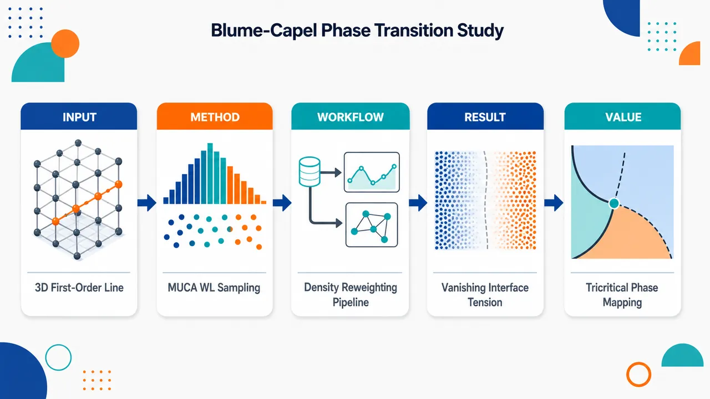
研究问题三维简单立方 Blume-Capel 铁磁模型的一阶相变线如何从低温强一阶区延伸到三临界点附近？具体要刻画两相共存的能量双峰、自由能垒、界面张力及有限尺寸标度，并检验二维中有效的 field-mixing 方法在三维三临界邻域是否仍可靠。创新方法将固定温度下对晶场能量 EΔ 加权的多正则模拟与双参数 Wang-Landau 联合态密度 Γ(EJ,EΔ) 采样结合：前者通过平坦化 EΔ 直方图跨越自由能垒并重加权扫描 Δ，后者用 field-mixing 构造垂直共存线的变量 Q，使双峰同时满足等面积与等高条件。Aha 点是用双峰谷底的自由能代价除以界面面积 L²，直接量化三维一阶线上的界面张力，并揭示其在三临界点消失。工作流程输入三维 L×L×L 周期边界 Blume-Capel 自旋格点 σ=−1,0,+1，分解能量为键能 EJ 与晶场能 EΔ；在给定温度下运行 MUCA 迭代权重 W(EΔ)，获得近似平坦直方图并对 Δ 重加权；同步用 Wang-Landau 估计二维联合态密度 Γ(EJ,EΔ)；在重加权分布中寻找能量双峰、等高/等面积共存点；计算比热、磁化率、自由能垒 ΔF、界面张力 ΣL=ΔF/L²；最后按 L−3、L−2 等有限尺寸标度外推热力学极限共存场与界面张力。关键结果在 T=1.1 到 Tt≈1.4182 的一阶段上，能量概率分布呈稳定双峰，随降温和系统增大峰间谷底更深，显示从弱一阶到强一阶的连续增强。T=1.1 时 MUCA 得到 Δ∞*=2.92006(2)，Wang-Landau field-mixing 得到 2.92004(3)，两者高度一致；比热和磁化率峰值均按 L³ 增长，确认三维一阶标度。界面张力沿一阶线随降温单调增大，接近三临界点时趋零，在 Tt=1.4182 处 Σ∞=0.008±0.020，与零相容。field-mixing 在 T=1.3 以内可用，但在 1.3<T<1.4 接近三临界区因双峰过浅而失稳。应用价值该研究为三维 Blume-Capel 模型提供了可视化、定量的一阶相变图像：共存线、双峰分布、自由能垒和界面张力可作为识别一阶性与三临界性的标准工具。结果有助于理解多组分流体、三元合金、He³-He⁴ 混合物、铁氧磁材料以及润湿/界面吸附等具有相共存和界面代价的物理系统，并提示高维三临界研究需要比传统 field-mixing 更稳健的数值方法。第一部分：核心概览 (Overview)
三维简单立方 Blume-Capel 铁磁模型的一阶相变段被系统刻画：从接近三临界点到低温强一阶区间，结合 多正则模拟与双参数 Wang-Landau 联合态密度采样，给出共存线、能量双峰分布、自由能垒、界面张力及有限尺寸标度。核心贡献在于证明界面张力沿一阶线随降温单调增强、趋近三临界区时消失，并揭示二维中成功的 field-mixing 方法在三维三临界邻域存在可解析性限制。
---
第二部分：结构化快速回顾
《First-order phase transitions in the three-dimensional Blume-Capel ferromagnet》（None，）
背景
Blume-Capel 模型是研究连续相变、一阶相变与三临界性的经典格点模型。三维情形中，一阶段从三临界点延伸至零温边界，但系统性的有限尺寸标度研究仍不足。
方法
采用 multicanonical simulations 在固定温度下对晶场能量 (E_Δ) 加权，并通过重加权扫描 (Δ)；采用 two-parameter Wang-Landau sampling 估计联合态密度 (Γ(E_J,E_Δ))，再用 field-mixing 定位共存点。
结果
在 (T=1.1) 至 (Tₘ̊ ₜ=1.4182) 附近观察到从弱一阶到强一阶的连续交叉。(T=1.1) 时得到 (Δᵢₙfty^ast=2.92006(2))（MUCA）和 (2.92004(3))（WL），响应函数峰值按 (L³) 标度，符合三维一阶相变。
讨论
双峰概率分布、自由能垒增长、界面张力非零共同支持一阶共存。界面张力接近三临界点时趋零，(Tₘ̊ ₜ=1.4182) 处 (Σᵢₙfty=0.008±0.020)。
局限
三维 Wang-Landau 联合态空间巨大，最大 (L=16) 已有 (48,508,757) 个可达状态；靠近三临界区时 (P(tildemathcal Q)) 双峰过浅，equal-height 与 equal-population 条件难以同时满足。
结论
多正则方法可靠刻画三维 Blume-Capel 一阶相变；field-mixing 在三维低温一阶区有效，但在三临界邻域需要更大系统或替代方法。
---
第三部分：逐章节冷凝解析 (Section-by-Section Condensing)
Abstract
- Generalized-ensemble strategy
三维 Blume-Capel 铁磁模型在简单立方格点上的一阶相变通过 multicanonical simulations 与 two-parameter Wang-Landau sampling 联合研究；核心优势是跨越较宽温度与晶场范围解析共存区，英文原文明确为 *"We investigate first-order phase transitions in the three-dimensional Blume-Capel ferromagnet on the simple cubic lattice by combining multicanonical simulations with two-parameter Wang-Landau sampling."* 研究范围从三临界点附近延伸到深一阶区，即 *"extending from the vicinity of the tricritical point deep into the first-order regime."*
- Core observables and scaling targets
分析重点集中于 energy probability density function、free-energy barriers 与 interfacial properties，并通过有限尺寸标度提取界面张力；原文表述为 *"We analyze the finite-size scaling behavior of thermodynamic observables, with particular emphasis on the energy probability density function, free-energy barriers, and interfacial properties."*
- Weak-to-strong first-order crossover
能量分布双峰随降温逐渐增强，揭示从弱一阶到强一阶的交叉，而非突变式转换；证据为 *"The evolution of the double-peaked energy distributions reveals a gradual crossover from weak to strong first-order behavior as the temperature is lowered."*
- Surface tension and tricritical vanishing
通过自由能垒标度沿共存线确定界面张力，并考察其趋近三临界区的消失行为；原文为 *"From the scaling of the free-energy barrier we determine the interface tension along the coexistence line and characterize its approach to the tricritical region through its vanishing behavior."*
- Field-mixing limitation in three dimensions
field-mixing 在二维 Blume-Capel 中表现成功，但三维接近三临界点时对有限系统尺寸高度敏感，原因是相关标度变量分布过浅；原文指出 *"in three dimensions its practical implementation becomes increasingly sensitive in the vicinity of the tricritical region, where the shallow structure of the relevant scaling variable distribution limits the ability to resolve coexistence conditions for the system sizes currently accessible."*
---
1 Introduction
- First-order transition phenomenology
一阶相变的基本特征包括相共存、潜热和分隔竞争态的自由能垒；有限系统还表现出亚稳态、能量双峰和非平凡有限尺寸标度。原文定义为 *"First-order phase transitions constitute a fundamental class of collective phenomena in statistical physics, characterized by phase coexistence, latent heat, and the emergence of free-energy barriers separating competing thermodynamic states"*，并补充有限系统具有 *"metastability effects, double-peaked energy distributions, and nontrivial finite-size scaling behavior."*
- Blume-Capel model as tricritical prototype
Blume-Capel 模型是研究三临界性的最简模型之一，长期作为临界现象解析与数值研究的基准；原文称其 *"occupies a prominent position as one of the simplest and most extensively studied realizations of tricriticality"*，并且 *"has served for several decades as a benchmark for analytical and numerical studies of critical phenomena."*
- Physical relevance beyond theory
模型不仅是理论范式，还关联多组分流体、三元合金、(³He)-(⁴He) 混合物、铁氧磁材料、润湿与界面吸附等系统；原文列举 *"multicomponent fluids, ternary alloys, and 3He–4He mixtures"*，并指出变体用于 *"ferrimagnetic materials"* 与 *"wetting and interfacial adsorption phenomena."*
- Hamiltonian and variables
无外磁场 Hamiltonian 为
[
mathcal H=-Jsumłₐₙgₗₑ ₓyåₙgₗₑσₓσ_y+Δsumₓσₓ²⁼E_J+Δ E_Δ,
]
其中 (σₓ₌₋₁,0,+1)，(J>0) 且全文取 (J=1)，(Δ) 控制空位浓度；原文说明 *"the spin variables (σₓ) assume the values (-1), (0), and (+1)"*，以及 *"The crystal-field coupling (Δ) controls the concentration of vacancies corresponding to the state (σₓ₌₀)."*
- Hamiltonian decomposition supports generalized ensembles
Hamiltonian 分解为键能 (E_J) 与晶场能 (E_Δ)，直接支撑后续多正则与双参数 WL 采样；原文强调 *"The decomposition of the Hamiltonian into the bond-energy contribution (E_J) and the crystal-field contribution (E_Δ) will prove particularly useful in the generalized-ensemble simulations employed in this work."*
- Limiting Ising case
当 (Δ→-infty) 时，(σ=0) 空位被完全抑制，模型退化为常规 spin-1/2 Ising ferromagnet；原文为 *"In the limiting case (Δi̊ghtarrow-infty), vacancies are completely suppressed and the model reduces to the conventional spin-1/2 Ising ferromagnet."*
- Phase diagram structure
((Δ,T)) 平面中相边界分隔铁磁相与顺磁相；弱晶场高温为 Ising 普适类连续转变，增大晶场并降低温度后转为不连续相变。原文表述为 *"For weak crystal fields and sufficiently high temperatures, the transition between the two phases is continuous and belongs to the Ising universality class"*，以及 *"Increasing the crystal field and lowering the temperature eventually leads to a discontinuous transition accompanied by phase coexistence and latent heat."*
- Tricritical point reference estimate
三维简单立方格点协调数 (z=6)，零温边界 (Δ₀₌zJ/2=3)；Deserno 的微正则 MC 给出三临界点 ((Δₜ,Tₜ₎₌[2.84479(30),1.4182(55)])。原文为 *"for which (z=6) and thus (Δ₀₌₃)"*，以及 *"yielding ((Δₘ̊ ₜ,Tₘ̊ ₜ)=[2.84479(30),1.4182(55)])."*
- Known transition line values
表 1 给出一阶段温度与转变晶场：(T=0.5) 时 (Δᵢₙfty^ast=2.998709(2))，(T=1.0) 时 (2.94362(1))，(T=1.1) 时 WL 为 (2.92004(3))、MUCA 为 (2.92006(2))，(T=1.3) 时 (2.8695(3))。表题说明这些是 *"transition and critical fields ((Δᵢₙfₜyast) or (Δₘ̊ c))"*，并用于比较 *"two-parameter Wang-Landau (WL) and multicanonical (MUCA) simulations."*
- Research gap in three dimensions
尽管二维模型已有大量实空间重整化群、MC、(ϵ) 展开、级数展开与转移矩阵研究，三维一阶区从三临界到低温的系统有限尺寸标度仍稀缺；原文指出 *"a comprehensive finite-size scaling investigation of the first-order transition regime extending from the tricritical region down to low temperatures remains comparatively scarce in three dimensions."*
- Research objective
研究目标是系统解析三维 Blume-Capel 一阶相边界及其与三临界区连接，特别关注能量概率密度函数、相共存、自由能垒与界面张力；原文为 *"focusing on the first-order segment of the phase boundary and its connection to the tricritical region"*，以及 *"Particular attention is devoted to the evolution of the energy probability density function, the development of phase coexistence, and the scaling properties of the free-energy barrier and the interfacial tension."*
---
2 Multicanonical simulations
- MUCA suitability for discontinuous transitions
多正则模拟通过克服自由能垒高效采样共存构型，特别适合不连续相变；原文为 *"Owing to their ability to overcome free-energy barriers and efficiently sample phase-coexistence configurations, multicanonical methods are particularly well suited for the study of discontinuous phase transitions."*
- Direct access to finite-size diagnostics
MUCA 可直接给出一阶相变所需的概率分布与有限尺寸标度量；原文指出 *"They provide direct access to the probability distributions and finite-size scaling properties that characterize first-order behavior."*
---
2.1 Method and observables
- Replacing Boltzmann weights with generalized weights
MUCA 将 canonical 的 (e⁻β E) 替换为广义权重，使相关能量区间接近平坦采样；原文为 *"The multicanonical (MUCA) method replaces the Boltzmann factor (e⁻β E) ... by suitably chosen generalized weights that promote a nearly uniform sampling of the relevant energy range."*
- Sampling (E_Δ) at fixed temperature
对 Blume-Capel 的双能量变量 ((E_J,E_Δ))，模拟固定温度 (β)，只对晶场贡献 (E_Δ) 做 MUCA 加权，以便连续重加权 (Δ)；原文说明 *"we apply the multicanonical procedure to the crystal-field contribution (E_Δ) while keeping the temperature fixed. This permits continuous reweighting in the crystal-field parameter (Δ)."*
- Partition function and control parameter
分区函数为
[
mathcal Z(β,μ)=sumE_J,E_ΔΓ(E_J,E_Δ)e⁽⁻β E_J⁻μ E_Δ⁾,
]
其中 (μ=Δ/T)；原文给出 *"where (μequivΔ/T)."*
- MUCA partition function and flatness target
MUCA 分区函数为
[
mathcal Zₘ̊ MUCA=sumE_J,E_ΔΓ(E_J,E_Δ)e⁻β E_JW(E_Δ),
]
(W(E_Δ)) 替代晶场 Boltzmann 因子；原文为 *"where the generalized weight (W(E_Δ)) replaces the Boltzmann factor associated with the crystal-field energy."*
- Weight iteration rule
若第 (n) 次迭代直方图为 (H⁽ⁿ⁾(E_Δ))，则权重按
[
W⁽ⁿ⁺¹⁾(E_Δ)=W⁽ⁿ⁾(E_Δ)/H⁽ⁿ⁾(E_Δ)
]
更新；原文解释为 *"This justifies our weight modification scheme (W⁽ⁿ⁺¹⁾(EΔ)=W⁽ⁿ⁾(EΔ)/H⁽ⁿ⁾(EΔ)) for iterations to approximate (W(E_Δ)) producing a flat histogram."*
- Flatness criterion via Kullback-Leibler divergence
迭代停止取决于直方图平坦性，采用 Kullback-Leibler divergence；原文为 *"The iterations stop when the histogram satisfies a suitable flatness criterion"*，并指出 *"We tested the flatness of the histogram using the Kullback-Leibler divergence."*
- Massively parallel implementation
MUCA 可高度并行：多个独立 replicas 使用相同权重但不同随机数序列，迭代之间只通信累计直方图；原文为 *"Independent replicas evolve simultaneously using identical weights but distinct random-number sequences, while only the accumulated histograms need to be communicated between iterations."*
- GPU scale and replica count
模拟在 Nvidia RTX2080 与 GTX1080Ti 上执行，最多演化 57,344 个独立系统副本；原文为 *"carried out on Nvidia RTX2080 and GTX1080Ti graphics processors, allowing us to evolve up to 57,344 independent system replicas."*
- Canonical reweighting formula
任意观测量 (O) 在任意 (Δ) 的期望通过
[
łangle Oångle_Δ=
fracłangle O e⁻βΔ E_ΔW⁻¹(E_Δ)ångleₘ̊ MUCA
łangle e⁻βΔ E_ΔW⁻¹(E_Δ)ångleₘ̊ MUCA
]
得到；原文为 *"canonical expectation values at arbitrary crystal fields are obtained through reweighting."*
- Numerical stability and optimization
指数和使用 GNU MPFR arbitrary-precision arithmetic，峰值位置用 GSL Brent algorithm；原文为 *"all exponential sums were evaluated using arbitrary-precision arithmetic provided by the GNU MPFR library"*，以及 *"Maxima of reweighted observables were located with the Brent algorithm from the GNU Scientific Library."*
- System sizes and temperature range
周期边界简单立方格点，线性尺寸 (8łe Lłe34)；温度从 (Tₜ₌₁.4182) 到 (T=1.1)。原文为 *"linear sizes in the range (8łeq Lłeq34)"*，以及 *"temperatures from the tricritical point (Tₘ̊ ₜ=1.4182) down to (T=1.1), where the transition is strongly discontinuous."*
- Measured observables
监测总能量 (E=E_J+Δ E_Δ)、磁化 (m)、磁化率
[
ḩi=β N(łangle m²ångle-łangle mångle²⁾,
]
和比热
[
C=β²N(łangle E²ångle-łangle Eångle²⁾,
]
其中 (N=L³)；原文为 *"we monitored the total energy, (E=E_J+Δ E_Δ), and the magnetization (m)"*。
- Primary probability distribution
重点分析晶场能量密度 (e_Δ=E_Δ/N) 的概率密度 (P(e_Δ))，因为一阶相变有限系统双峰结构预示热力学极限中的两个 (δ)-函数奇异性；原文为 *"we analyzed the probability density function of the crystal-field energy per spin, (P(e_Δ))"*，并指出 *"the emergence of a double-peaked structure signals phase coexistence and anticipates the two (δ)-function singularities expected in the thermodynamic limit."*
- Temperature and size evolution of (P(e_Δ))
深一阶区降温时两峰之间最低点被更强压低；增大 (L) 也增强这种压低，说明中间构型被抑制；三临界附近双峰仍存在但势垒小且尺寸依赖弱。原文为 *"the minimum between the two peaks becomes increasingly suppressed as the temperature decreases"*，*"[with] increasing system size ... reflecting the progressive suppression of intermediate configurations"*，以及 *"near the proposed tricritical point ... the barrier separating the peaks is considerably reduced and exhibits only a weak dependence on system size."*
---
2.2 Finite-size scaling analysis
- Fit quality criterion
所有拟合限制在 (Lge Lₘᵢₙ)，并要求 goodness-of-fit 参数 (10%<Q<90%)；原文为 *"a fit was considered acceptable only if the corresponding quality-of-fit parameter satisfied (10%<Q<90%)."*
- Equal-height free-energy barrier
对等高双峰分布，晶场能量空间自由能垒定义为
[
Δ F_L=frac12βΔłnłeft(fracPₘ̊ ₘₐₓPₘ̊ ₘᵢₙi̊ght)ₘ̊ ₑqₕ.
]
原文说明 *"Considering distributions with two peaks of equal height (eqh) ... allows one to extract the free-energy like barrier in the (e_Δ)-space."*
- Physical meaning of barrier
势垒连接spin-0 dominated regime 与 spin-(±1) rich phase；原文为 *"The resulting barrier connects a spin-0 dominated regime ((e_Δ) small) and a spin-(±1) rich phase ((e_Δ) large)."*
- Surface tension scaling
界面张力定义为 (Σ_L=Δ F_L/L²)，三维有限尺寸标度为
[
Σ_L=Σᵢₙfty+mathcal A_Σ L⁻²+mathcal O(L⁻⁴).
]
原文为 *"The corresponding surface tension (Σ_L=Δ F_L/L²) is expected to exhibit the finite-size scaling behavior in three dimensions."*
- Monotonic surface tension growth in first-order regime
(Σᵢₙfty) 随降温进入更深一阶区而单调增大；原文为 *"the surface tension increases monotonically upon moving deeper into the first-order regime, i.e., as the temperature decreases below the tricritical point."*
- Vanishing near tricriticality
接近三临界点时界面张力趋零；在参考 (Tₜ₌₁.4182) 处得到 (Σᵢₙfty=0.008±0.020)，统计上与零相容。原文为 *"upon approaching the tricritical temperature from the first-order side, the surface tension decreases and tends to zero"*，以及 *"we obtain (Σᵢₙfty=0.008±0.020), a value fully compatible with a vanishing surface tension within statistical uncertainty."*
- Pseudo-transition shift at (T=1.1)
深一阶区 (T=1.1) 中，比热与磁化率峰值给出的伪转变晶场满足
[
Δ_L^ast=Δᵢₙfty^ast+mathcal A_Δ L⁻d(1+mathcal O(L⁻d)),quad d=3.
]
拟合用 (Lₘᵢₙ=10)，得到 (Δᵢₙfty^ast=2.92006(2))。原文为 *"data indicate an excellent fit to the expected scaling form"*，并给出 *"(Δᵢₙfₜyast=2.92006(2)) is the desired transition field from both fits."*
- Agreement with field-mixing WL estimate
MUCA 的 (Δᵢₙfty^ast=2.92006(2)) 与 field-mixing 得到的 (2.92004(3)) 高度一致；原文为 *"compares excellently with the value (2.92004(3)) obtained from the field-mixing analysis below."*
- Response-function volume scaling
一阶相变要求 (C_L^astsim L^d)、(ḩi_L^astsim L^d)，周期边界下修正为逆体积幂；在 (T=1.1)，比热和磁化率峰值均拟合得到 (x=3)，精度约 (10⁻⁴)。原文为 *"we expect that their maxima along the (Δ) axis behave as (C_L^astsim L^d) and (ḩi_L^astsim L^d)"*，以及 *"Fitting the specific-heat and magnetic-susceptibility maxima yields (x=3) for both observables, with an accuracy of approximately (10⁻⁴)."*
- First-order confirmation
(x=d=3) 与理论预测一致，是一阶性质的独立证据；原文为 *"These estimates are in excellent agreement with the theoretical prediction (x=d=3), providing further evidence for the first-order nature of the transition."*
---
3 Two-parameter Wang-Landau simulations
- Purpose of two-parameter WL
双参数 WL 与 field-mixing 联合用于识别一阶相边界上的转变点；原文为 *"we employ the field-mixing approach in conjunction with the Wang-Landau joint density of states to identify transition points along the first-order segment of the phase boundary."*
- Workflow
先执行联合态密度计算，再定位有限尺寸伪转变点并外推热力学极限；原文为 *"describe the numerical implementation of the two-parameter Wang-Landau simulations and then outline the procedure used to locate finite-size pseudo-transition points and extrapolate them to the thermodynamic limit."*
---
3.1 Joint-density-of-states calculations
- Joint density target
标准 Wang-Landau 算法估计三维 Blume-Capel 模型的联合态密度 (Γ(E_J,E_Δ))，系统为 (L× L× L) 简单立方格点、周期边界；原文为 *"estimate the joint density of states (Γ(E_J,E_Δ)) of the three-dimensional Blume-Capel model on simple-cubic lattices of size (L× L× L) with periodic boundary conditions."*
- Three-dimensional state-space explosion
三维可达态数量远大于二维，迫使收敛标准放宽；原文指出 *"the substantially larger number of accessible states in three dimensions necessitates a relaxation of the convergence criteria employed in those studies."*
- Flatness criteria by size
直方图平坦性标准设为：(L=6) 时 95%，(L=8) 时 90%，(Lge10) 时 80%；原文为 *"the histogram flatness criterion was set to (95%) for (L=6), (90%) for (L=8), and (80%) for (Lge10)."*
- Accessible states comparison
最大三维格点 (L=16) 在 ((E_J,E_Δ)) 平面含 48,508,757 个可达状态；此前二维方格 (L=48) 最大计算仅 10,424,521 个状态。原文为 *"the largest lattice considered here ((L=16)) contains (48,508,757) accessible states"*，并比较 *"compared with (10,424,521) states for the largest square-lattice calculation reported previously ((L=48))."*
- Modification factor and sizes
最终 modification factor 取 (fₘᵢₙ=10⁻⁷)（(Lłe12)）和 (fₘᵢₙ=10⁻⁶)（(L=16)）；系统尺寸为 (Lin6,8,10,12,16)。原文为 *"The final modification factor was chosen as (fₘ̊ ₘᵢₙ=10⁻⁷) for (Lłe12) and (fₘ̊ ₘᵢₙ=10⁻⁶) for (L=16)"*，以及 *"Joint densities of states were obtained for system sizes (Lin6,8,10,12,16)."*
---
3.2 First-order transition points
- Coexistence curve not aligned with axes
Blume-Capel 分区函数同时依赖 (β) 与 (μ)，共存线通常不沿任一参数轴，单独沿 (β) 或 (μ) 分析会受不对称性影响，尤其接近三临界点；原文为 *"the coexistence curve is generally not aligned with either parameter axis"*，以及 *"finite-size analyses performed solely along the (β) or (μ) directions may be affected by asymmetry effects, particularly in the vicinity of the tricritical point."*
- Field-mixing motivation
field-mixing 曾在二维 Blume-Capel 中非常成功，此处检验其三维性能；原文为 *"This framework has previously been employed with considerable success in studies of the two-dimensional Blume-Capel model"*，以及 *"we investigate its performance in the three-dimensional case."*
- Scaling variable (mathcal Q)
垂直相边界场的共轭标度变量定义为
[
mathcal Q=frace_Δ-se_J1-rs,
]
其中 (e_J=E_J/N)，(r,s) 是平行与垂直标度场的 mixing parameters；原文为 *"It is defined as (mathcal Q=(e_Δ-se_J)/(1-rs))"*，以及 *"(r) and (s) are the mixing parameters associated with the scaling fields parallel and perpendicular to the phase boundary."*
- Determining mixing parameters
(r) 只重缩放 (mathcal Q)，不改变 (P(mathcal Q)) 形状，因此只需显式确定 (s)；通过使 (P(mathcal Q)) 呈现对称双峰并满足 equal-population 与 equal-height 条件确定；原文为 *"Since the parameter (r) only rescales (mathcal Q) and does not affect the shape of (P(mathcal Q)), only the parameter (s) needs to be determined explicitly"*，以及 *"we impose both equal-population and equal-height conditions on the two peaks of the distribution."*
- Normalized variable and smoothing
使用归一化变量
[
tildemathcal Q=fracmathcal Q-barmathcal Qσₘₐₜₕcₐₗ Q,
]
并用小 Gaussian broadening 估峰高：(Lłe8) 宽度 0.01，(Lge10) 宽度 0.005。原文为 *"we employ the normalized variable (tildemathcal Q=(mathcal Q-barmathcal Q)/σₘₐₜₕcₐₗ Q)"*，以及 *"using widths of (0.01) for (Lłe8) and (0.005) for (Lge10)."*
- Algorithm for ((s_L,Δ_L^ast))
对给定 (T,L)，先由 equal-population 得到 (Δ^ast(s))，再迭代调整 (s) 直到 equal-height 也满足；原文为 *"we first obtained (Δ^ast(s)) from the equal-population condition and then iteratively adjusted (s) until the equal-height criterion was also satisfied."*
- Resolved temperature range
WL 联合态密度最大 (L=16)，field-mixing 可确定到 (T=1.3)；原文为 *"we determined pseudo-transition fields for temperatures up to (T=1.3) using the Wang-Landau joint densities of states available for system sizes up to (L=16)."*
- Double-peaked distributions and coexistence
(T=1.1,1.2,1.3) 的 (P(tildemathcal Q)) 显示双峰，中间态概率随 (L) 增大系统下降，支持相共存与一阶性质；原文为 *"The distributions display the expected double-peaked structure, while the probability of intermediate states decreases systematically with increasing system size"*，以及 *"This behavior is characteristic of phase coexistence and corroborates the first-order nature of the transition."*
- Low-temperature (T=1.1) agreement
(T=1.1) 时 (Δ_L^ast) 遵循 (L⁻³) 一阶有限尺寸标度，外推 (Δᵢₙfty^ast=2.92004(3))，与 MUCA 的 (2.92006(2)) 一致；原文为 *"follow closely the expected (L⁻³) finite-size scaling behavior"*，以及 *"Extrapolation to the thermodynamic limit yields (Δᵢₙfty^ast=2.92004(3)), in excellent agreement with ... (Δᵢₙfty^ast=2.92006(2))."*
- Finite-size corrections at (T=1.2)
(T=1.2) 时有限尺寸效应更强，(L⁻³) 拟合需显著 (L⁻⁶) 修正；一般幂律 (Δ_L^ast=Δᵢₙfty^ast+aL⁻x) 给出 (xapprox2.557)。原文为 *"finite-size effects become noticeably stronger and deviations from the leading (L⁻³) behavior are more pronounced"*，以及 *"yielding an effective exponent (xapprox2.557)."*
- Stronger corrections at (T=1.3)
(T=1.3) 时有限尺寸效应进一步增强，一般幂律给出 (xapprox2.120)，与含 (L⁻⁶) 修正的一阶标度外推差异更大；原文为 *"At (T=1.3), the finite-size effects become even more pronounced"*，以及 *"the power-law fit yields an effective exponent (xapprox2.120)."*
- Failure near (T=1.4)
升至 (T=1.4) 时无法找到同时满足 equal-population 与 equal-height 的 ((s_L,Δ_L^ast))；对所有系统，该过程在 (1.3<T<1.4) 区间停止收敛。原文为 *"we were unable to identify pairs ((s_L,Δ_L^ast)) that simultaneously satisfy the equal-population and equal-height conditions"*，以及 *"for all systems considered the procedure ceases to converge in the interval (1.3<T<1.4)."*
- Fourth-order cumulant diagnostic
定义
[
Uₘₐₜₕcₐₗ Q=1-fracłangletildemathcal Q⁴ångle3łangletildemathcal Q²ångle².
]
随接近三临界区快速下降；当 (Uₘₐₜₕcₐₗ Qłesssim0.3) 时双峰最低点太浅，联立方程不稳定。原文为 *"(Uₘₐₜₕcₐₗ Q) decreases rapidly as the tricritical region is approached"*，以及 *"the equal-height and equal-population conditions become increasingly difficult to satisfy once (Uₘₐₜₕcₐₗ Q) falls below approximately (0.3)."*
- No independent tricritical estimate
(T<1.4) 范围内 (Uₘₐₜₕcₐₗ Q) 不出现不同 (L) 的共同交叉，说明三临界温度高于当前可解析最高温，与 (Tₜapprox1.42) 一致，但数据不足以独立确定三临界点；原文为 *"no common crossing point is observed among different system sizes"*，以及 *"the available data do not allow for an independent determination of the tricritical point."*
---
4 Conclusions
- Combined methods produce consistent first-order picture
MUCA + WL 组合在较大相图区域内详细解析三维 Blume-Capel 一阶相变；原文总结为 *"the combination of multicanonical and Wang-Landau methodologies has enabled a detailed investigation of first-order phase transitions in the three-dimensional Blume-Capel ferromagnet over an extended region of the phase diagram."*
- Transition points and scaling support first order
转变点复现并扩展既有相边界；响应函数、概率分布、自由能垒、界面张力的标度一致支持三临界以下的一阶性质。原文为 *"The resulting transition points reproduce and extend the established phase boundary"*，以及 *"the observed scaling of response functions, probability distributions, free-energy barriers, and surface tensions consistently supports the first-order character of the transition below tricriticality."*
- Surface tension as tricritical indicator
热力学极限界面张力在三临界点消失，可作为三临界行为的补充指标；原文为 *"The vanishing of the thermodynamic-limit surface tension at the tricritical point further highlights its usefulness as a complementary indicator of tricritical behavior."*
- Field-mixing limitations in higher dimensions
三维 field-mixing 效率受限，提示高维 Blume-Capel 三临界性的精确有限尺寸表征可能需要替代方法；原文为 *"the limited effectiveness of the field-mixing analysis in the three-dimensional case suggests that alternative approaches may be required for a precise finite-size characterization of tricriticality in higher-dimensional Blume-Capel systems."*
---
第四部分：深度理解与语言支持 (Understanding & Nuance)
1. 术语解析
- First-order phase transition（一阶相变）
指热力学势的一阶导数不连续，典型信号是潜热、相共存、自由能垒和能量分布双峰。文中语境中，一阶性不是单靠转变点判断，而是由 (C^ast,ḩi^astsim L³)、双峰 (P(e_Δ))、(Δ F_L) 增长、(Σᵢₙfty>0) 共同确认。
- Tricritical point（三临界点）
连续相变线与一阶相变线的交汇点。普通临界点只有一种转变性质，而三临界点连接两种不同相变机制；文中参考值为 ((Δₜ,Tₜ₎₌[2.84479(30),1.4182(55)])。
- Coexistence region / coexistence curve（共存区 / 共存线）
在有限系统中表现为两个相的概率峰同时存在；在热力学极限中对应两相自由能相等。这里共存线不是简单沿 (Δ) 或 (T) 方向，因此需要 field-mixing 构造垂直于相边界的标度变量。
- Free-energy barrier（自由能垒）
双峰概率分布峰顶与谷底之比对应中间构型被抑制的程度。文中使用
[
Δ F_L=frac12βΔłn(Pₘₐₓ/Pₘᵢₙ)
]
提取。系数 (1/2) 与周期边界下两个界面有关。
- Interface / surface tension（界面张力 / 表面张力）
单位面积界面的自由能代价。三维中界面面积按 (L²) 增长，所以 (Σ_L=Δ F_L/L²)。一阶区 (Σᵢₙfty>0)，三临界点处应趋零。
2. 疑难查证
- 为什么双峰分布代表一阶相变？
一阶相变时，两个宏观相在转变点自由能相等。有限系统中，一个峰代表空位丰富的顺磁/稀释相，另一个峰代表 (±1) 自旋丰富的有序相。峰间谷底对应需要形成界面的混合构型，概率低；系统越大，界面代价越高，谷底越低。连续相变通常不会形成随系统尺寸增强的稳定双峰共存结构。
- 为什么一阶相变中 (C^ast) 和 (ḩi^ast) 按体积 (L^d) 增长？
一阶点附近，系统在两个宏观态之间切换。能量或磁化的涨落主要来自两个相之间的宏观差异，而不是局域临界涨落。若两个相的能量密度差有限，总能量差 (Δ Esim L^d)，方差按 ((Δ E)²sim L²d)，比热定义含 (1/Nsim L⁻d)，所以 (C^astsim L^d)。磁化率同理。
- field-mixing 为什么需要 equal-population 和 equal-height？
equal-population 保证两个相的总概率权重相等，接近热力学意义上的共存；equal-height 保证双峰在构造出的标度变量方向上对称，减少由于相边界倾斜导致的偏斜。两者同时满足时，(mathcal Q) 更接近真正垂直于共存线的“秩序参数样”变量。
- 为什么三维靠近三临界点时 field-mixing 失效？
靠近三临界点，一阶相变变弱，潜热和界面张力趋零，双峰之间的谷底变浅。有限尺寸 (Lłe16) 下，(P(tildemathcal Q)) 的双峰结构不够清晰，峰高、峰位置、谷底对离散态密度误差和平滑宽度非常敏感。于是 equal-population 与 equal-height 两个条件对应的方程变得病态，数值解不稳定或不存在。
---
第五部分：创新评估与关联 (Synthesis & Novelty)
1. 创新性判断
- 三维一阶段的系统有限尺寸图像更完整
近年二维 Blume-Capel 的 field-mixing、转移矩阵、分布零点等研究较充分，但三维从三临界附近到低温强一阶区的系统有限尺寸标度仍缺少。该研究在 (T=1.1) 至 (Tₜ₌₁.4182) 附近连续追踪一阶行为，补上三维相图中一阶段的定量细节。
- 界面张力沿共存线的温度演化被直接量化
通过 MUCA 双峰概率分布和 (Δ F_L/L²) 标度提取 (Σᵢₙfty)，证明其随降温单调增大、接近三临界点时消失。相较仅给出相边界位置或临界指数的工作，这提供了更直接的相共存与界面物理量。
- MUCA 与 two-parameter WL 的交叉验证增强可靠性
(T=1.1) 时 MUCA 给出 (Δᵢₙfty^ast=2.92006(2))，WL field-mixing 给出 (2.92004(3))，两者在误差内一致。这种独立方法交叉验证降低了单一算法偏差风险。
- 明确界定 field-mixing 在三维中的适用边界
二维中 field-mixing 可有效接近三临界区；三维中由于联合态空间巨大、可达尺寸较小、(mathcal Q) 分布双峰变浅，该方法在 (1.3<T<1.4) 区间失去稳定性。这一“负结果”具有方法学价值：它指出二维经验不能直接外推到三维。
- 为未来三维三临界研究提出方向
当前数据不能独立确定 (Tₜ)，但 (Uₘₐₜₕcₐₗ Q) 无共同交叉且失效温区低于 (Tₜapprox1.42)，表明未来需要更大系统、改进 WL 收敛策略、并行 tempering、微正则方法或专门针对三临界标度的混合场构造。
-
12
📊 含图深析
💡 亮点：ScAlN 的局域短程有序可直接调控铁电翻转。
📖 展开分析 + 配图
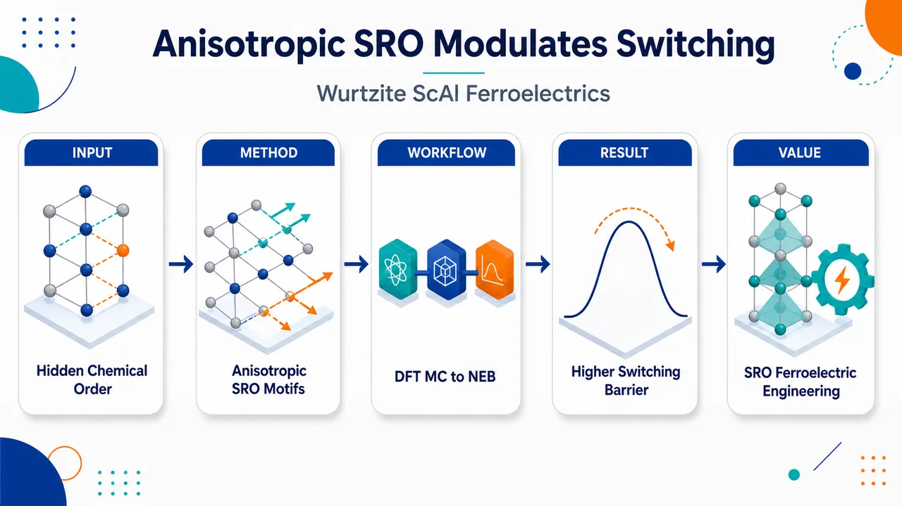
研究问题传统模型把 ScAlN 纤锌矿铁电合金画成随机混合的 Sc/Al 阳离子点阵，但真实局域化学排列是否具有方向性？这种沿基面与极性 c 轴不同的短程有序，能否独立改变极化翻转所需跨越的本征能量势垒？创新方法提出“各向异性短程有序”作为新的铁电开关调控自由度：用 DFT-Monte Carlo 正则采样让 Sc/Al 原子在阳离子子晶格中自然交换，发现体系自发形成沿极性 c 轴增强、基面内受抑制的局域有序；再用 SS-NEB 计算翻转路径，并识别柱状 Sc–N–Al–N–Sc 链作为决定势垒升高的核心结构模体。工作流程输入不同 Sc 含量的 108 原子 3×3×3 纤锌矿 ScAlN 超胞与初始 SQS 随机构型；通过 DFT-MC 反复执行 Sc/Al 交换、结构弛豫和 Metropolis 接受，生成低能 SRO 构型；统计面内 Sc–N–Sc、跨平面 Sc–N–Sc、柱状 Sc–N–Al–N–Sc 等局域模体；用 SS-NEB 在相反极化端态之间寻找最小翻转能量路径；输出各成分和各模体数量对应的本征翻转势垒及结构描述符模型。关键结果ScAlN 不是理想随机固溶体，而会形成清晰的方向性化学纹理：基面内 Sc–N–Sc 被减少，沿极性 c 轴的 Sc–N–Al–N–Sc 与 Sc–N–Sc–N–Sc 柱状链增加。SRO 在所有考察 Sc 含量下都提高翻转势垒，最高比随机合金预测高约 80%。柱状 Sc–N–Al–N–Sc 模体与势垒强正相关，R² = 0.930；结合面内 Sc–N–Sc 的双模体模型可复现 DFT 势垒，R² = 0.951。应用价值为 ScAlN 铁电材料设计增加一条可视化、可工程化的新路径：不仅调 Sc 含量、应变、缺陷和界面，还可通过生长温度、退火或加工历史调控局域 Sc/Al 排列，控制极性 c 轴柱状模体数量，从而在固定成分下调节开关势垒、稳定性和器件工作电压；该思路也可推广到其他具有极性轴和合金无序的纤锌矿半导体铁电材料。第一部分：核心概览
ScAlN 纤锌矿铁电合金中的短程有序（SRO）被确立为调控本征翻转势垒的独立微观自由度。第一性原理正则采样显示，ScAlN 并非随机固溶体，而会形成沿极性 c 轴增强、在基面内受抑制的各向异性 SRO。这种局域化学有序显著提高铁电翻转势垒，最高约达随机合金预测值的 80%，并由柱状 Sc–N–Al–N–Sc 模体主导。该工作把 ScAlN 铁电设计变量从成分、应变、缺陷、界面扩展到局域化学有序。
---
第二部分：结构化快速回顾
《Anisotropic Short-Range Order Modulates Ferroelectric Switching in Wurtzite ScAlN Alloys》（None，）
背景
ScAlN 是兼具 CMOS 兼容性、热稳定性、机械稳定性和可调铁电性的纤锌矿半导体。既有理论多把 ScAlN 视作随机固溶体或用 SQS 模型近似，忽略了 Sc/Al 在阳离子子晶格上的相关排列。
方法
采用 DFT Monte Carlo 正则系综采样生成 SRO 构型，并用 solid-state nudged elastic band（SS-NEB）计算极化反转最小能量路径。合金用 108 原子 3×3×3 纤锌矿超胞建模，Sc 含量覆盖 5.6%、11.1%、22.2%、33.3%、37.0%、44.4%。
结果
ScAlN 自发形成强烈各向异性短程有序：面内 Sc–N–Sc 模体减少，沿极性 c 轴的柱状 Sc–N–Al–N–Sc 和 Sc–N–Sc–N–Sc 模体增加。SRO 在所有考察成分下均提高本征铁电翻转势垒，增强幅度最高约 80%。
讨论
各向异性 SRO 源于纤锌矿晶格中基面方向与极性 [0001] 方向的对称非等价性，以及 AlN 式四面体网络与 Sc 富集局域键合偏好的不兼容。SRO 通过减少横向 Sc 富集环境、增强柱状混合阳离子连通性来释放局域键合挫折。
局限
所有结论基于第一性原理模拟，实验验证主要通过与已有 c 轴晶格常数数据对比；未直接模拟薄膜生长动力学、畴壁、缺陷、界面、电极、电场加载路径及真实开关动力学。
结论
各向异性 SRO是 ScAlN 铁电翻转势垒的重要控制变量。柱状 Sc–N–Al–N–Sc 模体数量可作为预测势垒变化的核心结构描述符，为在固定成分下通过生长、退火或加工调控铁电性能提供路径。
---
第三部分：逐章节冷凝解析
Abstract
- Short-range order is an overlooked switching variable
铁电翻转势垒通常被归因于成分、应变、缺陷和界面，但这里把局域化学短程有序（SRO）确立为独立变量。核心判断直接表达为：*"short-range order (SRO) is a previously overlooked microscopic variable that substantially influences the intrinsic switching barrier."* 该变量并非二阶扰动，而是能够系统性改变 ScAlN 本征开关能垒的微观结构因素。
- Wurtzite ScAlN develops robust anisotropic SRO
第一性原理正则采样显示，纤锌矿 ScAlN 会形成强烈且方向选择性的 SRO，而不是理想随机固溶体。关键表述为：*"wurtzite ScAlN develops a robust, highly anisotropic SRO that challenges the conventional random-alloy picture."* 这直接挑战以 SQS 或随机混合为基础的传统理论建模。
- SRO suppresses basal-plane Sc–N–Sc but enhances c-axis columnar motifs
SRO 的结构特征具有明显方向性：面内 Sc 相邻被抑制，沿极性 c 轴的混合阳离子柱状链增强。原文给出清晰机制：*"This ordering suppresses in-plane Sc–N–Sc motifs while enhancing columnar mixed-cation chains along the polar c axis."* 这说明局域化学有序与纤锌矿晶格的极性方向发生耦合。
- SRO increases intrinsic switching barriers across compositions
相比随机合金构型，SRO 在较宽 Sc 成分范围内系统性提高本征翻转势垒。证据句为：*"Relative to random-alloy structures, SRO systematically increases the intrinsic switching barrier across a broad composition range."* 该趋势不局限于某个特定成分。
- Columnar Sc–N–Al–N–Sc is the primary descriptor
不同局域有序程度构型之间的势垒差异主要由柱状 Sc–N–Al–N–Sc 模体数量解释。关键原文为：*"the population of columnar Sc–N–Al–N–Sc motifs as the primary structural descriptor underlying switching-barrier variations."* 该模体成为连接 SRO 与铁电开关能量学的核心结构描述符。
---
Introduction—
- ScAlN is a leading wurtzite ferroelectric semiconductor
ScAlN 被定位为当前重要的纤锌矿铁电半导体体系，具有区别于氧化物铁电体的应用优势。原文表述为：*"Scandium aluminum nitride (ScAlN) alloys have recently emerged as a leading wurtzite ferroelectric semiconductor."* 其优势包括 CMOS 兼容性、热稳定性、机械稳定性和恶劣环境应用潜力：*"ScAlN combines robust ferroelectricity with compatibility with complementary metal–oxide–semiconductor (CMOS) processing, together with excellent thermal and mechanical stability."*
- Intrinsic switching barrier remains microscopically unresolved
尽管 ScAlN 的铁电翻转和成分可调极化已被广泛展示，控制本征翻转势垒的微观结构因素仍未充分理解。核心问题为：*"the microscopic structural factors governing the intrinsic switching barrier remain poorly understood."* 特别缺口集中于合金无序和局域键合拓扑：*"the role of alloy disorder and local bonding topology in determining polarization switching has remained largely unexplored."*
- Random-alloy and SQS approximations dominate prior theory
既有理论多数把 ScAlN 和相关 III 族氮化物合金视作随机固溶体，并常用 special quasirandom structures（SQS）。原文指出：*"Most theoretical descriptions of ScAlN and related wurtzite III-nitride alloys assume a random solid solution"*，且这些体系 *"are often modeled using special quasirandom structures (SQS)."* 这种近似便于计算，但会忽略相关原子排列。
- Atomic SRO is known to strongly alter alloy properties
合金体系中偏离随机混合的局域有序会显著影响结构、电子和功能性质。原文概括为：*"deviations from random mixing substantially influence structural, electronic, and functional properties."* 因此，原子有序不是微小修正，而是可能根本改变材料行为的自由度：*"Atomic ordering therefore represents an additional microscopic degree of freedom capable of fundamentally altering materials behavior."*
- Nonrandom Sc distributions have emerging experimental support
最近实验和理论已观察或讨论 ScAlN 中非随机 Sc 分布，包括 Sc 富集团簇和生长相关化学非均匀性。原文为：*"Recent experimental and theoretical studies have begun to explore nonrandom Sc distributions in ScAlN, including Sc-rich clustering and growth-dependent chemical inhomogeneity."* 这些现象暗示随机合金近似无法完整描述 ScAlN 局域结构：*"the random-alloy approximation may not fully capture the local structure of ScAlN."*
- Central unresolved question links chemical order and polar lattice symmetry
关键科学问题不是简单判断是否存在有序，而是明确 SRO 如何在内禀极性纤锌矿晶格中形成，并是否能独立控制铁电翻转。原文问题表述为：*"how local chemical order develops within the intrinsically polar wurtzite lattice and whether such ordering acts as an independent control parameter governing ferroelectric switching."*
- First-principles sampling and SS-NEB establish a predictive framework
研究路径结合 first-principles canonical sampling 与 SS-NEB，直接连接热力学偏好的化学构型和翻转能量路径。原文为：*"we address this fundamental question by combining extensive first-principles canonical sampling and solid-state nudged elastic band calculations."* 结论框架为：*"These results establish anisotropic SRO as a previously overlooked degree of freedom modulating ferroelectric switching."*
---
Emergence of short-range order—
- MC/DFT sampling tests the random-solid-solution assumption
为判断 ScAlN 能否近似为随机固溶体，使用基于 DFT 的正则系综 Monte Carlo 采样。原文为：*"we investigated atomic configurations using first-principles canonical ensemble sampling based on DFT Monte Carlo (MC/DFT) simulations."* 初始构型来自 SQS，随后允许 Sc/Al 在阳离子子晶格上交换并全弛豫。
- SQS evolves spontaneously into lower-energy SRO
从 SQS 出发，MC/DFT 采样持续将体系推向低能短程有序构型。原文明确指出：*"Starting from initial SQS configurations, MC/DFT sampling consistently drives the system toward lower-energy SRO states."* 对 Sc₀.₃₃Al₀.₆₇N 在 300 K 的结果，Fig. 1(a) 显示总能显著下降：*"the total energy decreases substantially during MC/DFT sampling for Sc0.33Al0.67N at 300 K."*
- SRO is thermodynamically favored rather than imposed
SRO 不是预设结构模板，而是在正则采样中自发出现并降低总能。关键证据句为：*"the SRO structures discussed here are not imposed a priori but emerge spontaneously during canonical sampling while lowering the total energy relative to the initial SQS configurations."* 这支持 SRO 为热力学偏好的局域排列：*"demonstrating that they are thermodynamically favored local arrangements."*
- Ordering is anisotropic along the polar c axis
生成的 SRO 构型表现出强局域相关和沿纤锌矿 c 轴的方向性有序。原文为：*"The resulting SRO structures exhibit pronounced local structural correlations and anisotropic ordering along the wurtzite c axis."* Fig. 1(a) 的代表性快照显示沿极性方向延伸的 Sc 含有柱状排列：*"the emergence of columnar Sc-containing arrangements extending along the polar direction."*
- SRO modifies the ferroelectric energy landscape
对 x = 0.33 的代表性 SQS 与 SRO 构型进行 SS-NEB 计算后，两者通过相同纤锌矿极化反转路径，但能垒不同。原文为：*"Although both structures switch through the same wurtzite polarization-reversal pathway, the SRO configuration exhibits a substantially larger switching barrier."* 结论是 SRO 直接改变铁电能量景观：*"SRO directly modifies the ferroelectric energy landscape."*
- Random-alloy approximation misses switching physics
SRO 对翻转势垒的显著影响意味着随机合金近似无法准确捕捉关键开关物理。原文判断为：*"the random-alloy approximation fails to accurately capture key switching physics in ScAlN."* 这为后续用局域模体解释势垒差异奠定基础。
---
Composition dependence of switching barriers—
- Composition range establishes generality
为验证 SRO 效应的普适性，系统计算了多个 Sc 含量下的铁电翻转势垒，并对每个成分使用多个独立 SQS 和 SRO 构型。原文为：*"we systematically computed ferroelectric switching barriers across a broad composition range using multiple independent SQS and SRO configurations for each composition."* 支持信息中列明 Sc 含量为 5.6%、11.1%、22.2%、33.3%、37.0%、44.4%。
- Switching barrier decreases with increasing Sc concentration
随 Sc 含量增加，翻转势垒总体降低，这与高 Sc 含量下极性纤锌矿相逐渐失稳一致。原文为：*"the switching barrier decreases overall with increasing Sc concentration, consistent with the progressive destabilization of the polar wurtzite phase at high Sc content."*
- SRO raises the barrier at every examined composition
在所有考察成分中，SRO 构型的势垒都高于对应 SQS 构型。原文为：*"at every composition examined, SRO systematically increases the switching barrier relative to the corresponding SQS structures."* 这说明 SRO 对翻转势垒的影响不是偶然构型效应，而是跨成分的系统趋势。
- Barrier enhancement reaches about 80%
SRO 相对随机合金预测可使势垒最高增加约 80%。原文给出幅度：*"Depending on composition, SRO increases the switching barrier by up to about 80% relative to random-alloy predictions."* 这种数量级远超普通噪声或采样误差。
- SRO effect strengthens at intermediate and high Sc contents
SRO 增强效应在中高 Sc 含量下更加显著。原文为：*"The enhancement becomes increasingly pronounced at intermediate and high Sc concentrations."* 这一结果表明，在高 Sc 含量 ScAlN 的铁电设计中，局域有序尤其不可忽略。
- Atomic ordering is a major energetic factor
因势垒增强幅度和成分依赖性明显，原子有序被确立为铁电翻转能量学的主导因素之一。原文结论为：*"atomic ordering is not a minor perturbation but a major factor affecting ferroelectric switching energetics."*
---
Anisotropic short-range order tunes switching barriers—
- SRO suppresses in-plane Sc–N–Sc motifs
局域模体分析显示，SRO 显著减少面内 Sc–N–Sc 模体，尤其在低 Sc 和中等 Sc 浓度。原文为：*"SRO strongly suppresses the population of in-plane Sc–N–Sc motifs relative to SQS structures, particularly at low and intermediate Sc concentrations."* 这意味着 Sc 原子倾向避免在基面内形成横向相邻富集结构。
- SRO promotes c-axis columnar Sc-containing motifs
与面内 Sc–N–Sc 被抑制相反，SRO 增强沿极性 c 轴延伸的 Sc 含有柱状模体，包括 Sc–N–Al–N–Sc 和 Sc–N–Sc–N–Sc。原文为：*"SRO promotes columnar Sc-containing motifs extending along the polar c axis, including Sc–N–Al–N–Sc motifs and Sc–N–Sc–N–Sc motifs."*
- SRO is anisotropic in connectivity, not merely clustered
这些趋势说明 SRO 不是简单 Sc 富集或反富集，而是方向选择性地重排局域连接。原文总结为：*"These trends reveal that SRO is highly anisotropic, suppressing in-plane Sc connectivity while enhancing polar connectivity along the crystallographic c direction."* 关键在于基面连通性降低、极性轴连通性增强。
- Controlled motif comparison quantifies energetic hierarchy
为解释各向异性有序的能量起源，构造了三个除局域模体位置外完全相同的 108 原子 Sc₀.₀₃₇Al₀.₉₆₃N 超胞。原文为：*"We constructed three otherwise identical 108-atom Sc0.037Al0.963N supercells differing only in the placement of a single local motif."* 这相当于严格控制成分、尺寸和总体排列，只比较局部模体能量。
- Cross-plane Sc–N–Sc is 85.2 meV more stable than in-plane Sc–N–Sc
全弛豫后，跨平面 Sc–N–Sc 比面内 Sc–N–Sc 低能 85.2 meV。原文为：*"relative to an in-plane Sc–N–Sc motif, a cross-plane Sc–N–Sc motif lowers the total energy by 85.2 meV."* 这直接证明同样的 Sc–N–Sc 连接在不同方向上能量不同。
- Columnar Sc–N–Al–N–Sc is 214.5 meV more stable than in-plane Sc–N–Sc
柱状混合阳离子 Sc–N–Al–N–Sc 模体比面内 Sc–N–Sc 低能 214.5 meV。原文为：*"a columnar Sc–N–Al–N–Sc motif lowers the total energy by 214.5 meV."* 能量排序为：面内 Sc 富集最不利，跨平面 Sc 连通居中，柱状混合阳离子连通最稳定。
- Wurtzite symmetry makes basal and polar correlations inequivalent
纤锌矿极性晶格空间群为 P6₃mc，其基面方向和极性 [0001] 方向在对称性上不等价。原文为：*"Because the polar wurtzite lattice (space group P63mc) distinguishes the basal plane from the polar [0001] direction, local chemical correlations parallel and perpendicular to the c axis belong to symmetry-inequivalent classes."* 因而 SRO 的方向性具有晶体对称性根源。
- Anisotropic SRO relieves local bonding frustration
各向异性 SRO 可被理解为体系通过抑制横向 Sc 富集环境、促进极性方向柱状模体来降低局域键合挫折。原文为：*"Anisotropic SRO can therefore be rationalized as an energetic response that suppresses laterally connected Sc environments and promotes energetically favorable columnar motifs along the polar direction."* 该机制还被描述为：*"reduced local bonding frustration associated with accommodating Sc-rich environments within the polar wurtzite lattice."*
- SRO contracts and regularizes the lattice
相比 SQS，SRO 产生更小的 c 轴晶格参数、更小的阳离子–N 垂直位移 Δz、更小的原子体积，以及更窄的跨平面金属–N–金属键角分布。原文为：*"SRO produces a more contracted c lattice parameter, reduced cation–N vertical displacement Δz, a smaller volume per atom, and narrower cross-plane metal–N–metal bond-angle distributions."*
- SRO-derived c lattice parameters agree better with experiment
SRO 构型得到的 c 轴晶格参数比 SQS 更接近实验值。原文为：*"the SRO-derived c lattice parameters agree substantially better with experiment than the SQS results."* 这为 SRO 构型在真实 ScAlN 中的物理相关性提供独立证据：*"providing independent evidence that the SRO atomic arrangements are physically relevant in ScAlN."*
- SRO reduces local structural disorder
结构变化共同说明，各向异性 SRO 让极性纤锌矿框架更紧凑、更具方向相关性。原文为：*"anisotropic SRO suppresses local structural disorder and reorganizes the polar wurtzite framework into a more compact and directionally correlated network."*
- Fixed-composition analysis isolates local order from composition
为直接连接 SRO 与势垒，选取 Sc₀.₃₇Al₀.₆₃N 并通过不同温度 MC/DFT 生成不同局域有序程度构型。原文为：*"we examined a series of Sc0.37Al0.63N configurations with different degrees of local ordering generated through MC/DFT sampling at different temperatures."* 支持信息列出温度为 300 K、500 K、700 K、1600 K。
- In-plane Sc–N–Sc population negatively correlates with barrier
在固定成分 Sc₀.₃₇Al₀.₆₃N 中，面内 Sc–N–Sc 数量越多，翻转势垒越低，线性相关系数 R² = 0.803。原文为：*"the switching barrier decreases with increasing in-plane Sc–N–Sc population (R2 = 0.803)."*
- Columnar Sc–N–Al–N–Sc population is the strongest single descriptor
柱状 Sc–N–Al–N–Sc 模体数量与翻转势垒强正相关，R² = 0.930。原文为：*"the switching barrier exhibits a strong positive correlation with the population of columnar Sc–N–Al–N–Sc motifs, with R2 = 0.930."* 因此该模体被识别为主要结构描述符：*"columnar Sc–N–Al–N–Sc motifs as the primary microscopic structural descriptor linking anisotropic SRO to ferroelectric switching barriers."*
- Two-motif linear model predicts DFT barriers accurately
仅使用面内 Sc–N–Sc 和柱状 Sc–N–Al–N–Sc 两类模体数量的线性模型即可准确复现 DFT 翻转势垒，R² = 0.951。原文为：*"The resulting combined motif model accurately reproduces the DFT switching barriers across distinct alloy configurations with R2 = 0.951."* 这表明少数局域模体足以捕获本征势垒主导结构贡献：*"a small set of local motif populations captures the dominant structural contributions to the intrinsic switching barrier."*
- Anisotropic SRO enables barrier tuning at fixed composition
因固定成分下势垒仍随局域有序程度显著变化，SRO 成为独立调控自由度。原文为：*"local anisotropic SRO as an independent degree of freedom for tuning ferroelectric switching barriers at fixed composition."*
---
Conclusion and discussion—
- Anisotropic SRO substantially modifies intrinsic barriers
结论集中于：纤锌矿 ScAlN 具有高度各向异性 SRO，并显著改变本征铁电翻转势垒。原文为：*"wurtzite ScAlN exhibits a highly anisotropic SRO which substantially modifies the intrinsic ferroelectric switching barrier."*
- Motif reorganization defines the SRO signature
SRO 的核心结构签名为面内 Sc–N–Sc 被抑制、沿极性 c 轴柱状混合阳离子模体增强。原文为：*"SRO suppresses in-plane Sc-N-Sc motifs while enhancing columnar mixed-cation motifs along the polar c axis."*
- Structural parameters become more compact and experimentally consistent
各向异性模体重排导致晶格收缩、跨平面键角分布变窄，并使结构参数比随机合金更接近实验。原文为：*"This anisotropic motif reorganization contracts the lattice, narrows cross-plane bond-angle distributions, and produces structural parameters that are closer to experiment than those obtained from random-alloy configurations."*
- Physical origin lies in AlN-like tetrahedral bonding versus Sc-rich preferences
SRO 的物理根源来自 AlN 式极性四面体网络与 Sc 富集局域键合偏好的不兼容。原文为：*"The physical origin of this ordering can be rationalized in terms of the structural incompatibility between AlN-like tetrahedral bonding and Sc-rich local bonding preferences within the wurtzite framework."* AlN 稳定极性四面体网络，而 Sc 掺入引入不完全适配理想纤锌矿几何的局域环境：*"Sc incorporation introduces local bonding environments that are less compatible with the ideal wurtzite geometry."*
- Polar lattice symmetry allows anisotropic chemical ordering
因纤锌矿晶格区分基面和平行 [0001] 的极性方向，平行与垂直极性轴的化学相关在对称性上不等价。原文为：*"local chemical correlations parallel and perpendicular to the polar axis are symmetry inequivalent, allowing these energetic preferences to manifest as anisotropic chemical ordering."*
- SRO acts as a local strain-relief pathway
各向异性 SRO 通过避免横向 Sc 富集连接、增强极性方向混合金属柱状连通性来释放局域应变。原文为：*"Anisotropic SRO provides a local strain-relief pathway by avoiding laterally connected Sc-rich environments and promoting columnar mixed-metal connectivity along the polar direction."* 因此，偏好的 SRO 模体可被视为对局域键合挫折的结构响应：*"the preferred SRO motifs can be viewed as structural responses to local bonding frustration in the polar lattice."*
- SRO reshapes the switching energy landscape
纤锌矿铁电体极化反转需要金属–氮框架发生大幅畸变，而 SRO 会重排该框架的局域连接。原文为：*"Polarization reversal in wurtzite ferroelectrics involves substantial distortions of the metal-nitrogen framework, whose local connectivity is reorganized by SRO."* 因此，局域有序图案重塑翻转路径能量景观：*"local ordering patterns reshape the energy landscape along the switching pathway."*
- Columnar mixed-metal connectivity stabilizes the polar network
沿极性方向的柱状混合金属连通性似乎稳定极性网络、抵抗反转，从而提高本征翻转势垒。原文为：*"columnar mixed-metal connectivity along the polar direction appears to stabilize the polar network against reversal, leading to a higher intrinsic switching barrier."*
- Two-motif model captures dominant barrier physics
固定成分下，势垒最强相关于柱状 Sc–N–Al–N–Sc 模体数量，双模体模型准确复现第一性原理势垒。原文为：*"a simple two-motif model accurately reproduces the first-principles barriers."* 这说明局域模体人口数不是单纯描述性统计，而是支配本征势垒的紧凑结构变量。
- Experimental nonrandom Sc distributions support relevance
近期表征已发现 ScAlN 中纳米尺度非随机 Sc 分布。原文为：*"Recent characterization studies have begun to reveal nanoscale, nonrandom Sc distributions in ScAlN."* 这为局域化学有序作为真实结构特征提供实验背景：*"providing experimental evidence that local chemical order is a physically relevant feature of this alloy."*
- Localized switching makes SRO essential
近期原子尺度研究显示 ScAlN 铁电翻转经过高度局域的结构转变，因此局域 SRO 应纳入纤锌矿合金铁电性的必要变量。原文为：*"ferroelectric switching in ScAlN proceeds through highly localized structural transformations"*，并由此推出：*"local SRO should therefore be considered as an essential structural variable in understanding ferroelectricity in wurtzite alloys."*
- SRO engineering expands materials design variables
局域化学有序原则上可受生长条件、退火和其他工艺路径影响，因此可成为除成分、应变外的新铁电设计手段。原文为：*"SRO engineering may provide a new route to tailoring ferroelectricity, alongside established design variables such as composition and strain."*
- General mechanism may apply to other polar alloys
机制源于局域化学有序与晶体各向异性的耦合，因此可能出现在多种极性半导体和铁电合金中。原文为：*"analogous anisotropic ordering phenomena may arise in a broad range of polar semiconductor and ferroelectric alloys."* 更广泛的设计图景是把成分、应变、缺陷、界面和局域化学有序作为耦合变量：*"composition, strain, defects, interfaces, and local chemical order act as coupled design variables."*
---
Acknowledgments—
- Funding and computing resources
工作获得美国空军科学研究办公室资助，项目号 FA9550-25-1-0109。原文为：*"This work is supported by the Air Force Office of Scientific Research under award number FA9550-25-1-0109."* 计算资源来自国防部高性能计算现代化计划和 GW 高性能计算平台：*"The authors acknowledge Department of Defense High Performance Computing Modernization Program and GW High Performance Computing for the computing support."*
---
Data availability—
- Data available upon request
数据可向通讯方合理请求获取。原文为：*"The data that support the findings of this study are available from the corresponding author upon reasonable request."*
---
Supporting Information
I Computational methods
- DFT framework and software
所有第一性原理计算采用 DFT、PAW 方法和 VASP。原文为：*"All first-principles calculations were performed within density functional theory (DFT) using the projector augmented-wave (PAW) method as implemented in the Vienna Ab initio Simulation Package (VASP)."*
- Exchange-correlation functional
交换关联采用 PBE-GGA。原文为：*"Exchange-correlation effects were treated using the Perdew–Burke–Ernzerhof (PBE) generalized gradient approximation."*
- Supercell size
ScₓAl₁₋ₓN 使用 108 原子超胞，对应纤锌矿原胞 3×3×3 复制。原文为：*"ScxAl1-xN alloys were modeled using 108-atom supercells corresponding to a 3 × 3 × 3 replication of the wurtzite primitive cell."*
- Plane-wave cutoff and k mesh
计算参数为 400 eV 平面波截断和 2×2×2 Monkhorst–Pack k 点网格。原文为：*"A plane-wave cutoff energy of 400 eV and a 2 × 2 × 2 Monkhorst–Pack k-point mesh were used throughout."* 使用 3×3×2 k 点网格的额外测试显示相对能和势垒变化可忽略：*"Additional calculations using a 3 × 3 × 2 k-point mesh produced negligible changes in relative energies and switching barriers."*
- SQS compositions
SQS 结构由 ATAT 生成，Sc 含量为 5.6%、11.1%、22.2%、33.3%、37.0%、44.4%。原文为：*"Special quasirandom structures (SQS) were generated using the Alloy Theoretic Automated Toolkit (ATAT) at Sc concentrations of 5.6%, 11.1%, 22.2%, 33.3%, 37.0%, and 44.4%."*
- Relaxation criteria
所有原子位置和晶格参数完全弛豫，电子和离子收敛标准分别为 10⁻⁴ eV 和 10⁻³ eV。原文为：*"All atomic positions and lattice parameters were fully relaxed using the conjugate-gradient algorithm until the electronic and ionic convergence criteria of 10−4 eV and 10−3 eV, respectively, were satisfied."*
---
II DFT-based Monte Carlo sampling
- Canonical Metropolis MC with DFT energies
SRO 通过正则系综 Metropolis Monte Carlo 与第一性原理 DFT 总能结合生成。原文为：*"Short-range ordered (SRO) structures were generated using canonical-ensemble Metropolis Monte Carlo (MC) sampling combined with first-principles DFT total energies."*
- Trial moves are Sc–Al exchanges
MC 试探步为阳离子子晶格上随机交换 Sc 和 Al，随后全结构弛豫。原文为：*"Trial moves consisted of random exchanges between Sc and Al atoms on the cation sublattice followed by full structural relaxation."*
- Acceptance probability
采用 Metropolis 接受概率
P = min1, exp[−(Eⱼ − Eᵢ)/kBT]。原文为：*"The acceptance probability for a trial move from configuration i to configuration j was P = min1, exp(−(Ej − Ei)/kBT)."*
- Independent trajectories
每个成分至少从四个不同随机种子生成的 SQS 出发进行独立 MC 轨迹。原文为：*"For each composition, at least four independent MC trajectories were initialized from distinct SQS configurations generated using different random seeds."*
- Sampling compositions and step counts
MC/DFT 采样覆盖 5.6%、11.1%、22.2%、33.3%、37.0%、44.4% Sc。低中 Sc 含量 5.6%、11.1%、22.2% 每条轨迹超过 2000 MC steps at 300 K；高 Sc 含量 33.3%、37.0%、44.4% 每条轨迹超过 4000 MC steps at 300 K。原文为：*"For Sc concentrations of 5.6%, 11.1%, and 22.2%, each trajectory was propagated for more than 2000 MC steps at 300 K"*；以及 *"For Sc concentrations of 33.3%, 37.0%, and 44.4%, each trajectory was propagated for more than 4000 MC steps at 300 K."*
- Temperature-dependent ordering at fixed composition
为在固定成分下产生不同局域有序程度，对 Sc₀.₃₇Al₀.₆₃N 进行了 300 K、500 K、700 K、1600 K 采样。原文为：*"Additional MC/DFT simulations were performed for Sc0.37Al0.63N at 300 K, 500 K, 700 K, and 1600 K to generate configurations with different degrees of local chemical ordering."*
---
III Solid-state nudged elastic band calculations
- SS-NEB computes switching pathways
铁电翻转路径使用 solid-state nudged elastic band（SS-NEB） 方法。原文为：*"Ferroelectric switching pathways were calculated using the solid-state nudged elastic band (SS-NEB) method."*
- Initial pathway interpolation
初始路径由两个完全弛豫、极化方向相反的结构线性插值得到。原文为：*"Initial pathways were generated by linear interpolation between fully relaxed polarization states of opposite orientation."*
- Lattice vectors and atoms relax simultaneously
SS-NEB 相比传统 NEB 的关键优势是同时弛豫晶格矢量与原子坐标，可在零外应力下得到最小能量翻转路径。原文为：*"Unlike conventional NEB, SS-NEB allows simultaneous relaxation of both lattice vectors and atomic coordinates, enabling determination of minimum-energy switching pathways under zero external stress."*
- Endpoint convergence criteria
初末极性结构完全弛豫，电子收敛标准 10⁻⁶ eV，每个原子残余力低于 0.01 eV/Å。原文为：*"The initial and final polar structures were fully relaxed using an electronic convergence criterion of 10−6 eV, with residual forces below 0.01 eV/Å on every atom."*
- Configurational statistics
每个 Sc 成分至少分析 4 个独立 SQS 和 4 个独立 SRO 构型。原文为：*"at least four independent SQS structures and four independent SRO structures were analyzed for each Sc composition."* 平均值和标准差来自这些独立构型：*"Reported averages and standard deviations were computed over these independent configurations."*
- SRO always has larger barriers
尽管存在构型依赖波动，SRO 在整个成分范围内都比对应 SQS 有更大翻转势垒。原文为：*"SRO structures consistently exhibit larger switching barriers than the corresponding SQS structures across the entire composition range investigated."*
---
IV Convergence of SS-NEB calculations with respect to the number of images
- Barrier convergence is extremely tight
SS-NEB 图像数收敛测试显示，使用 5 和 33 个图像时势垒差异小于 0.01 meV/f.u.。原文为：*"The switching barrier differs by less than 0.01 meV/f.u. between calculations employing 5 and 33 images."* 这说明路径离散化误差极小：*"demonstrating excellent convergence with respect to pathway discretization."*
- Reported calculations use at least 7 images
所有报告的 SS-NEB 计算至少使用 7 images。原文为：*"All SS-NEB calculations reported in this work therefore employed at least 7 images."*
---
V Energetic origin of anisotropic short-range order: a controlled motif comparison
- Controlled supercells isolate motif energetics
为阐明各向异性 SRO 的能量来源，构造三个除局域模体外完全相同的 108 原子 Sc₀.₀₃₇Al₀.₉₆₃N 超胞。原文为：*"we constructed three otherwise identical 108-atom Sc0.037Al0.963N supercells that differ only in the local motif under investigation."* 这些超胞具有相同成分、尺寸和总体原子排列：*"The supercells were identical in composition, cell size, and overall atomic arrangement."*
- Cross-plane Sc–N–Sc is lower by 85.2 meV
全弛豫后，跨平面 Sc–N–Sc 比面内 Sc–N–Sc 低能 85.2 meV。原文为：*"a cross-plane Sc–N–Sc motif is lower in energy than an in-plane Sc–N–Sc motif by 85.2 meV."*
- Columnar Sc–N–Al–N–Sc is lower by 214.5 meV
柱状 Sc–N–Al–N–Sc 比面内 Sc–N–Sc 低能 214.5 meV。原文为：*"A columnar Sc–N–Al–N–Sc motif is further stabilized, lowering the total energy by 214.5 meV relative to the in-plane Sc–N–Sc motif."*
- Columnar mixed motif has largest stabilization
这些结果建立了局域模体能量层级，其中柱状 Sc–N–Al–N–Sc 稳定化最大。原文为：*"These calculations establish a clear energetic hierarchy among local motifs, with columnar Sc–N–Al–N–Sc motifs exhibiting the largest stabilization."* 该层级直接解释 MC/DFT 中观察到的各向异性 SRO：*"providing a microscopic explanation for the anisotropic short-range order observed in the MC/DFT simulations."*
---
VI Bond-angle distributions
- SRO narrows cross-plane bond-angle distributions
多个 Sc 成分下的跨平面金属–N–金属键角分布显示，SRO 构型比 SQS 构型系统性更窄。原文为：*"Relative to SQS structures, SRO structures exhibit systematically narrower bond-angle distributions."*
- Narrower distributions indicate reduced angular disorder
更窄的键角分布说明各向异性化学有序降低了极性连通环境中的角度无序。原文为：*"indicating reduced angular disorder in the anisotropic local environments associated with polar connectivity."*
---
第四部分：深度理解与语言支持
1. 术语解析
Short-range order（SRO，短程有序）
SRO 指合金中原子在局部尺度上不是随机排列，而是存在偏好的近邻或次近邻组合。这里不是长程周期性有序相，也不是宏观相分离，而是 Sc/Al 在几个配位壳层内表现出统计相关性。语境中的关键差别在于：随机 SQS 只匹配随机合金的相关函数，而 SRO 反映热力学采样后更低能的局域排列。
Anisotropic SRO（各向异性短程有序）
普通 SRO 只说明局域排列偏离随机；anisotropic SRO 进一步说明这种偏离依赖方向。ScAlN 中，基面内 Sc–N–Sc 被抑制，而沿极性 c 轴的柱状混合阳离子链增强。这里的“anisotropic”不是弹性或介电张量意义上的各向异性，而是局域化学相关函数在不同晶向上不等价。
Intrinsic switching barrier（本征翻转势垒）
指在理想晶体或给定原子构型中，极化从一个取向翻转到相反取向所需跨越的最小能量障碍。这里通过 SS-NEB 计算零外应力条件下的最小能量路径获得。它不同于实验矫顽场，因为实验矫顽场还受缺陷、畴成核、畴壁运动、电极、漏电、应力和薄膜厚度影响。
Columnar mixed-cation motifs（柱状混合阳离子模体）
指沿纤锌矿极性 c 轴排列的 Sc/Al 混合阳离子链式局域结构，例如 Sc–N–Al–N–Sc。这里“columnar”强调沿 [0001] 方向的纵向连通，“mixed-cation”强调 Sc 与 Al 交替或混合参与，而不是纯 Sc 富集链。
Polar connectivity（极性连通性）
指局域化学键和阳离子排列沿极性轴方向如何相互连接。ScAlN 的极化方向与纤锌矿 c 轴相关，因此沿 c 轴的局域连接比普通非极性方向更直接影响极化反转路径和势垒。
---
2. 疑难查证
为什么 SRO 会提高翻转势垒，而增加 Sc 含量总体又会降低势垒？
这两个趋势作用在不同层级上。
增加 Sc 含量会整体削弱 AlN 式极性纤锌矿相的稳定性，使结构更容易接近平面或岩盐式局域偏好，因此总体翻转势垒下降。局域 SRO 则在固定或相近成分下重排 Sc/Al 的空间分布，尤其增强沿极性 c 轴的混合阳离子柱状连通。该柱状连通会让极性网络更紧凑、更方向相关，从而抵抗反转路径中的金属–氮框架畸变。因此，成分效应可降低平均势垒，SRO 效应可在同一成分下抬高势垒。
为什么面内 Sc–N–Sc 不利，而柱状 Sc–N–Al–N–Sc 有利？
纤锌矿结构不是各向同性网络。基面内和 c 轴方向在空间群 P6₃mc 中对称不等价。Sc 的局域键合偏好相较 Al 更不适配理想 AlN 式四面体网络。若 Sc 在基面内相邻，局域畸变更容易横向累积，造成更大键合挫折；若沿 c 轴形成混合 Sc–N–Al–N–Sc 柱状结构，Al 可在局部起到几何与键合缓冲作用，同时利用极性轴方向可容纳的结构自由度降低能量。因此受控计算中，柱状混合模体比面内 Sc–N–Sc 低能 214.5 meV。
为什么 Sc–N–Al–N–Sc 模体比 Sc–N–Sc–N–Sc 更关键？
柱状 Sc–N–Al–N–Sc 同时包含 Sc 相关极性连通和 AlN 式四面体网络稳定成分，能够在保持极性框架的同时缓解 Sc 引起的局域几何不匹配。纯 Sc 连续柱状连通可能也沿极性方向有利，但 Sc 富集程度更高，可能引入更强局域非理想纤锌矿偏好。固定成分模型中，Sc–N–Al–N–Sc 与势垒的相关性达到 R² = 0.930，成为最强单一描述符。
为什么 SRO 的 c 轴晶格参数更接近实验很重要？
若 SQS 和 SRO 都只是理论构型，需判断哪一个更接近真实薄膜或体材料局域结构。SRO 计算出的 c 轴晶格参数更接近实验，说明真实 ScAlN 很可能并非完全随机，而含有类似的局域化学相关。这个结果不是直接证明所有 SRO 模体都存在，但为“随机合金模型不充分”提供了独立结构证据。
---
第五部分：创新评估与关联
1. 创新性判断
从随机合金范式转向局域有序范式
过去 2–5 年 ScAlN 理论研究大量使用 SQS 或随机固溶体近似，重点通常放在 Sc 含量、应变、相稳定性、缺陷、界面、畴结构和翻转路径。这里的新颖性在于直接证明：ScAlN 的热力学偏好构型不是随机排列，而是具有强方向性的 SRO。随机合金不再只是近似误差来源，而是会系统性低估本征翻转势垒。
把 SRO 与铁电翻转势垒定量连接
以往关于 ScAlN 非随机 Sc 分布的实验和理论多停留在聚集、非均匀性或局域结构观察层面，尚未把具体局域模体与本征开关能垒建立定量映射。这里通过 SS-NEB 证明 SRO 可使势垒最高增加约 80%，并在固定成分下用模体数量预测势垒变化，双模体模型达到 R² = 0.951。
识别“各向异性”而非简单“团簇化”
新颖点不只是发现 Sc 分布非随机，而是发现非随机性具有明确晶向选择：面内 Sc–N–Sc 减少，极性 c 轴柱状混合阳离子模体增加。这解决了“ScAlN 是否只是 Sc 聚集”这一粗糙问题，提供了更精细的局域拓扑图像。
提出柱状 Sc–N–Al–N–Sc 作为结构描述符
将 Sc–N–Al–N–Sc 模体数量确定为势垒变化的核心描述符，是可操作的材料设计创新。相比仅用 Sc 含量或平均晶格参数，该描述符能解释同一成分下不同局域有序构型的势垒差异。
建立 SRO engineering 的理论基础
过去 ScAlN 铁电调控主要依靠改变 Sc 含量、应变状态、薄膜取向、缺陷浓度和界面工程。这里提出在固定成分下通过改变局域化学有序来调控势垒，即 SRO engineering。由于 SRO 可受生长温度、退火和动力学路径影响，这为工艺—局域结构—铁电性能之间建立新的设计链条。
外推到极性半导体合金的一般机制
机制来自局域化学有序与极性晶格方向不等价性的耦合，因此不局限于 ScAlN。任何同时具有合金化、极性轴、局域键合偏好冲突的纤锌矿或极性半导体合金，都可能出现类似各向异性 SRO 对功能性质的调控。
-
13
💡 亮点：NiO 位错网络可模板化反铁磁畴。
📖 展开分析 + 配图
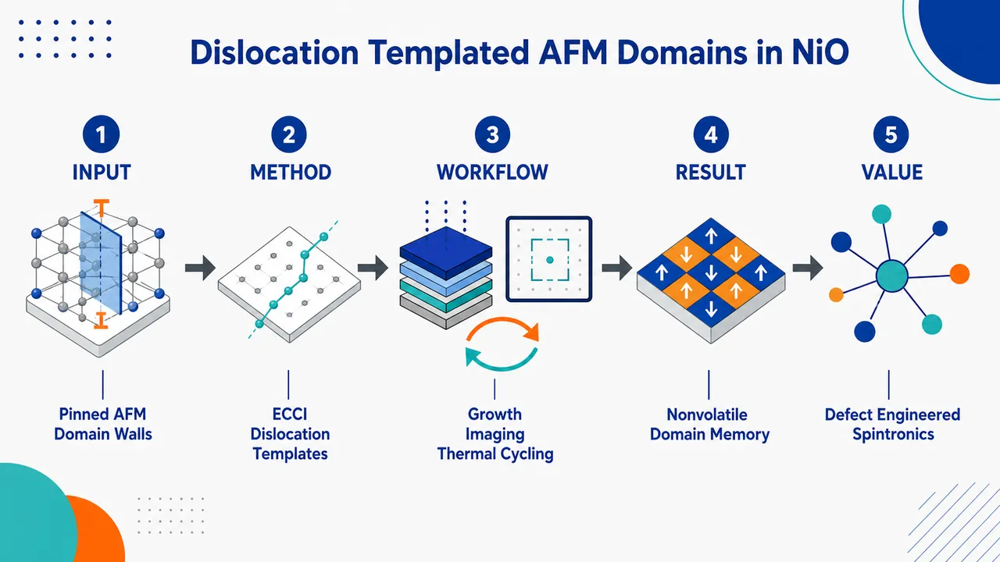
研究问题反铁磁材料没有净磁化，畴壁难以用外磁场稳定控制；论文核心追问：外延 NiO/MgO(001) 中埋藏的界面失配位错网络，是否能像“纳米轨道”一样确定性钉扎 AFM 双畴壁，使畴壁在跨越 Néel 温度后仍能回到原来的空间位置。创新方法用 SEM-ECCI 在同一视野中同时看见两类埋藏结构：锐利线状的界面失配位错和宽斑块状的 AFM 畴壁应变对比；通过不同 diffraction vector g 的可见/消失/反转规律确认畴壁信号来自磁致伸缩应变。Aha 点是：位错不只是缺陷，而是保存 AFM 畴图案的“一维结构模板”，加热到 533 K 擦除磁畴后，冷却仍按原位错应变场重写同一畴壁图案。工作流程在 MgO(001) 上用 RF 磁控溅射生长 20–60 nm 外延 NiO 薄膜；用 HRXRD 测量平均晶格弛豫；用 SEM-ECCI 选择不同 g-vector 成像埋藏 MD 线和 AFM DW 斑块；对样品进行 293 K → 533 K（高于 TN=523 K）→ 293 K 原位热循环；统计不同厚度下 MD 线密度、DW 面积分数和取向分布，建立“厚度—滑移机制—位错网络—畴壁形貌”的对应关系。关键结果加热到 533 K 后，斑块状 AFM 畴壁对比完全消失，而线状 MD 保持不动；冷却回 293 K 后，畴壁在完全相同坐标、相同形状重新出现，证明非易失结构记忆。随厚度从约 23 nm 增至 46 nm，MD 密度由近零升至 >1.3 μm⁻¹，DW 面积分数增至近 30%；位错形貌从稀疏 ⟨100⟩ 直线 MD 转为 ⟨110⟩ zig-zag 交滑移网络，畴壁长轴方向同步复制位错网络方向。应用价值提供一种不依赖净磁化和外磁场的 AFM 纹理控制路线：通过设计外延应变释放、滑移系统和界面位错网络，可把 AFM 畴壁固定、复现并图案化。该策略有望用于反铁磁自旋电子器件中的稳定畴结构设计、低串扰存储、自旋输运通道优化和缺陷工程化 AFM 图案写入。第一部分：核心概览
该研究建立了外延 NiO/MgO(001) 中界面失配位错网络对反铁磁畴壁的确定性模板作用：AFM 畴壁在跨越 Néel 温度 523 K 后消失并在冷却时于相同空间坐标恢复，显示非易失结构记忆。SEM-ECCI 同时成像埋藏位错与 AFM 双畴壁，揭示 23–60 nm 厚度范围内塑性弛豫从 ⟨100⟩ 直线 MD 转向 ⟨110⟩ zig-zag 交滑移网络，并定量关联畴壁面积分数与位错密度，为缺陷工程化反铁磁纹理提供实验框架。
---
第二部分：结构化快速回顾
《Dislocation-templated antiferromagnetic domains in epitaxial NiO》（None，）
背景
反铁磁自旋电子学需要可控、可重复的畴结构，但 AFM 无净磁化导致传统磁场调控困难。NiO 的 AFM 序与 ⟨111⟩ 菱方磁致伸缩畸变耦合，界面位错产生的局域应变场可能选择性稳定特定 T-domain 与畴壁。
方法
采用 RF 磁控溅射在 MgO(001) 上生长 20–60 nm NiO，用 HRXRD测量平均弛豫，用 SEM-ECCI在不同 diffraction vector g 下成像埋藏失配位错与畴壁，并通过 in-situ heating跨越 TN = 523 K进行热循环验证。
结果
ECCI 在室温下同时观察到锐利线状 MD contrast 与宽区域 patchy DW contrast。加热至 533 K 后 patchy 畴壁对比完全消失，冷却至 293 K 后在相同位置恢复。厚度增加时，MD 密度从接近 0 增至 >1.3 μm⁻¹，DW 面积分数增至近 30%。
讨论
位错产生的各向异性弹性扰动打破 NiO 四种 111 rhombohedral T-domain 简并性，使 AFM 畴壁在局部应变能最低的位置冻结。薄膜弛豫机制从 101⟨110⟩ primary slip 变为 pure-screw TD 的交滑移，决定畴壁形貌与取向。
局限
尚未完成特定 twin-domain variant 与具体 Burgers vector 的一一映射；需要进一步的 invisibility criteria 与 TEM验证。统计数据来自图示趋势，未提供完整误差条、样本量 n 或 P 值。
结论
界面一维缺陷网络可作为 AFM 畴壁的结构模板，实现跨相变后可重复恢复的反铁磁纹理，为通过位错工程图案化稳定 AFM 域结构提供可预测路径。
---
第三部分：逐章节冷凝解析
Abstract
Deterministic pinning of AFM twin-domain walls by interface dislocations
核心贡献是证明外延 NiO/MgO(001) 中的 antiferromagnetic twin-domain walls 被界面 dislocation networks 纳米尺度确定性钉扎。摘要直接给出机制与体系：*"we utilize scanning electron microscopy electron channeling contrast imaging (ECCI) to demonstrate a robust structural memory effect in epitaxial NiO/MgO(001), where antiferromagnetic twin-domain walls (DWs) are deterministically pinned at the nanoscale by interface dislocation networks."* 关键点不只是观察 AFM 畴，而是把畴壁位置与埋藏位错网络建立可重复空间对应关系。
Thermal cycling reveals a non-volatile structural memory effect
热循环跨越 Néel temperature 后，AFM 畴壁在顺磁相消失，冷却后原位恢复。摘要中的直接证据为：*"Thermal cycling across the Neel temperature reveals that while DW contrast completely vanishes in the paramagnetic phase, the features re-emerge at identical spatial locations upon cooling."* 这排除了单纯随机热淬火形成畴图案的解释，支持结构模板记忆。
Diffraction-vector-dependent ECCI identifies magnetostrictive strain as contrast origin
不同 g-vector 条件下的 ECCI 对比变化证明畴壁信号来自局域应变，而不是表面形貌或化学差异。摘要表述为：*"Diffraction-vector-dependent ECCI demonstrates that domain contrast stems from localized rhombohedral magnetostrictive strain fields."* 这里的 rhombohedral magnetostrictive strain fields 对应 NiO 在 TN 以下由 AFM 序诱导的微小菱方剪切畸变。
Thickness series resolves a transition in oxide relaxation mechanics
样品厚度覆盖 23–60 nm，揭示塑性弛豫路径随厚度变化。摘要给出：*"By tracking a film thickness series from 23 to 60 nm, we resolve an explicit transition in oxide relaxation mechanics."* 薄膜越厚，失配应变积累越强，位错网络从简单直线阵列变成复杂交滑移网络。
Primary slip creates straight misfit dislocations along ⟨100⟩
初始弛豫机制是 primary slip system 产生沿 ⟨100⟩ 的界面失配位错。摘要证据为：*"A primary slip system initiates strain relaxation via interface misfit dislocations (MDs) tracking along <100>."* 这对应 rocksalt 结构中 101⟨110⟩ 滑移几何在 (001) 界面上的投影。
Cross-slip generates zig-zag MD networks deviated toward ⟨110⟩
厚度增加后，临界应变促使 threading segments 交滑移到次级或高指数面，生成弯曲 zig-zag 网络。摘要表述：*"At greater thicknesses, rising critical strain prompts threading segments to cross-slip onto secondary or higher-index planes, depositing a wavy network of zig-zag MD lines deviated toward <110>."* 这说明位错网络形貌不是随机粗糙，而是由晶体学滑移面选择决定。
DW area fraction quantitatively tracks MD density and spatial configuration
畴壁覆盖面积与位错网络密度、空间排布直接相关。摘要写道：*"Quantitative image analysis reveals that DW area fractions directly track the local density and spatial configuration of the evolving MD networks."* 这一点把“相关观察”提升为可用于缺陷工程的定量设计原则。
One-dimensional defects become a route for AFM texture engineering
最终框架是用一维缺陷调控 AFM 纹理。摘要结论为：*"providing a framework for defect-engineering antiferromagnetic textures using one-dimensional defects."* one-dimensional defects 指位错线，不是二维应变层或表面图案，因此具备埋藏、纳米尺度、可晶体学设计的特征。
---
Main text
AFM spintronics requires deterministic domain control
反铁磁材料因超快自旋动力学、抗杂散场、高密度器件无串扰而有吸引力，但无净磁化导致畴控制困难。原文给出背景：*"AFM materials have emerged as a compelling platform for next-generation spintronics due to their ultra-fast spin dynamics, robustness against stray magnetic fields, and absence of cross-talk in high-density devices."* 同时指出核心障碍：*"the very characteristic that makes AFM systems attractive (lack of net magnetization) renders the control, pinning, and patterning of their domain structures an unsolved challenge."*
Random freezing of AFM domains limits device reliability
AFM 畴通常在跨越 TN 冷却时由热涨落随机冻结，不像铁磁畴可被外场轻易重构。关键表述为：*"Unlike ferromagnets, which can be easily reconfigured via external magnetic fields, AFM domains typically freeze into stochastic layouts governed by random thermal fluctuations during cooling cycles across their Néel temperature."* 器件问题在于 Néel vector 在不同 AFM 畴之间改变方向，影响基于 AFM 序参量的功能。
Domain walls degrade spin transport in AFM channels
畴壁不是中性背景，而会降低 AFM 自旋输运性能。原文给出具体功能后果：*"spin-transport in AFMs is degraded by the presence of domain walls (DWs) within a spin channel."* 因而可控减少、固定或图案化 DW 对 AFM 逻辑和存储器件重要。
Existing AFM imaging tools are powerful but surface-sensitive
以往 AFM 纹理成像主要依赖 XMLD-PEEM、NV center magnetometry、spin-polarized STM。原文列举为：*"resolving these embedded AFM textures has relied primarily on synchrotron-based techniques such as X-ray magnetic linear dichroism photoelectron emission microscopy (XMLD-PEEM), or localized scanning probe methods including nitrogen-vacancy (NV) center magnetometry and spin-polarized scanning tunneling microscopy."* 局限在于：*"they are mainly surface-sensitive, probing only the first few monolayers of a material."* 这使埋藏缺陷与 AFM 畴结构的直接关联长期困难。
Epitaxial oxide relaxation offers an untapped nanoscale patterning mechanism
外延 rocksalt 氧化物中的塑性弛豫可以自然生成一维位错网络。关键陈述为：*"plastic strain relaxation in epitaxial oxides offers a powerful, yet largely untapped, mechanism for nanoscale pattering of functional properties."* 对 NiO on MgO(001)，应变弛豫通过扩展一维缺陷发生：*"strain relaxation is expected to proceed through the nucleation and propagation of extended one-dimensional defects."*
Threading dislocations leave structured interfacial misfit dislocation arrays
当薄膜超过临界厚度，threading dislocations (TDs) 在特定滑移系统中滑移，并在界面留下 misfit dislocations (MDs)。原文机制为：*"As these films surpass a critical thickness, threading dislocations (TDs) glide through specific slip systems, leaving behind structured arrays of interface misfit dislocations (MDs)."* 这些位错线产生局域应变梯度并破坏立方对称性：*"These dislocation lines introduce local strain gradients and break the cubic symmetry of the host lattice."*
NiO magnetoelasticity makes dislocations natural AFM templates
NiO 的 AFM 序与 ⟨111⟩ rhombohedral magnetostrictive shear distortion耦合，因此局部位错应变场可能模板化 AFM 畴。原文核心假设为：*"Because AFM order in NiO is intrinsically coupled to a small rhombohedral magnetostrictive shear distortion along the ⟨111⟩ direction below TN, these localized dislocation strain fields may naturally serve as templates for nanoscale AFM domains."* 这把磁序、晶格畸变、位错应力场三者连接成统一机制。
SEM-ECCI maps buried AFM twin-domain walls deeper than 60 nm
SEM-ECCI 被用于无损映射埋藏 AFM 双畴壁，深度灵敏度超过 60 nm。原文声明：*"SEM utilizing electron channeling contrast imaging (ECCI) can non-destructively map buried AFM twin-domain walls (DWs) in epitaxial NiO(001) thin films with a depth sensitivity exceeding 60 nm."* 相比表面敏感方法，这是将埋藏位错与 AFM 畴壁同场成像的关键优势。
The main mechanistic transition is from pristine 101 slip to zig-zag cross-slip
NiO 外延层的塑性弛豫路径随厚度变化，从 101 slip / ⟨100⟩ lines 转到复杂交滑移与 ⟨110⟩ zig-zag。原文为：*"We unveil a distinct, thickness-driven transformation in the plastic relaxation pathways of the rocksalt epilayer, which transitions from initial pristine 101 slip with dislocation lines along ⟨100⟩ to complex cross-slip configurations with dominant 'zig-zag' line directions along ⟨110⟩."*
AFM domain area and orientation are governed by active dislocation mechanics
通过 quantitative spatial analysis 与 g-vector dependence，畴壁面积分数和长轴方向与位错滑移机制相关。原文表述：*"Using quantitative spatial analysis and diffraction vector dependence, we show that the area fractions and long-axis orientations of the AFM domains are governed by the specific active dislocation slip mechanics."* 这说明位错不仅决定畴壁是否出现，还决定畴壁几何形态。
Thermal cycling across TN proves memory rather than static imaging artifact
跨越 TN = 523 K 的原位热循环显示 AFM 组态在顺磁态“熔化”后恢复到相同坐标。原文给出：*"through in-situ thermal cycling across TN = 523 K, we demonstrate a non-volatile structural memory effect where the AFM configuration melts into a paramagnetic state but re-emerges at the exact same spatial coordinates upon cooling."* 这是证明钉扎的最强证据，因为顺磁相中 AFM 序已不存在。
Sample preparation uses RF magnetron sputtering across 20–60 nm
样品为不同厚度的外延 NiO 薄膜，厚度范围 20–60 nm，衬底为 MgO(001)，生长方式为 RF magnetron sputtering。原文为：*"epitaxial NiO films of varying thickness (20–60 nm) were grown on MgO(001) substrates by RF magnetron sputtering under optimized oxygen partial pressure to ensure stoichiometry."* 研究设计是厚度序列，而非单一样品现象。
HRXRD provides macroscale strain relaxation while ECCI provides local strain fields
HRXRD 用于平均晶格弛豫，ECCI 用于局部离散缺陷。原文区分为：*"Structural characterization and macroscale strain relaxation were assessed using high-resolution X-ray diffraction (HRXRD), confirming high crystallinity and systematic lattice relaxation across the thickness series."* 以及：*"While HRXRD provides sensitive average strain measurements averaged over a large spot size, ECCI provides a direct spatial probe of individual strain fields, capable of tracking discrete dislocations and local structural domains."*
ECCI conditions isolate defects and magnetic domains through selected g-vectors
ECCI 在场发射 SEM 中使用背散射电子探测器，并依据类似 Kikuchi 的通道花样选择 g-vectors。原文方法为：*"ECCI was performed in a field-emission scanning electron microscope (SEM) equipped with a back scattered electron detector."* 以及：*"Imaging conditions were systematically tuned to isolate crystallographic defects and magnetic domain contrast by selecting specific g-vectors based on the Kikuchi-like electron channeling pattern."*
Room-temperature ECCI resolves two coexisting contrasts
室温下 28 nm 或图注中 33 nm NiO 薄膜显示两类特征：锐利线状 MD 与宽 patchy DW。正文写道：*"At room temperature, ECCI of a 28 nm NiO film reveals a rich co-existence of two features: sharp, high-contrast line segments associated with buried interfacial MDs, and broader, wider-area 'patchy' contrast variations attributed to localized strains concentrated at magnetic domain walls."* 图注则标注为 33 nm：*"Room-temperature ECCI micrograph of a 33 nm NiO film (g = 2̄20) showing the co-existence of line contrast (MDs) and patchy features from domain walls (DWs)."* 这里存在厚度表述不一致，需要谨慎解读。
Contrast inversion under opposite g-vectors confirms strain-induced origin
线状与 patchy 特征在翻转 g-vector 时发生系统性对比反转，说明它们来自应变导致的衍射对比。原文证据为：*"Both features show a systemic inversion of contrast when flipping between opposite g-vectors confirming their strain-induced origins."* 这种 g 依赖性是 ECCI 判别应变场的核心依据。
AFM topography rules out surface morphology as the patchy contrast origin
同一区域 AFM surface topography 显示标准均匀 step-terrace，而非对应 patchy 的表面起伏。原文为：*"Atomic force microscopy surface topography scans show only a standard, uniform step-terrace morphology for this film."* 因此：*"This explicitly rules out surface steps or morphological non-uniformities as the origin of the patchy ECCI features, confirming they arise from diffraction contrast."*
Heating to 533 K removes DW contrast but not MD contrast
跨越 TN = 523 K 加热至 533 K 时，宽 patchy 特征完全消失，结构 MD 线段不动。原文直接证据为：*"Upon heating the film into its paramagnetic phase at 533 K, the broad patchy features completely vanish, while the structural MD line segments remain locked in place with negligible changes in position or intensity."* 这区分了磁性相关畴壁与永久结构位错。
Cooling to 293 K restores identical DW shapes and contrast layouts
冷却回 293 K 后，patchy 畴壁在相同坐标、相同形状与对比布局恢复。原文为：*"when the film is cooled back down to 293 K, the patchy domain features re-emerge at the identical spatial coordinates and with the exact same shapes and contrast layouts as before the thermal cycle."* 这构成 non-volatile structural memory effect。
Magnetoelastic coupling explains deterministic re-freezing
位错产生长程各向异性弹性扰动，打破四种菱方 twin-domain 变体简并性，迫使系统选择局域应变能最低配置。原文机制为：*"The mechanism is likely driven by magnetoelastic coupling; an individual MD introduces a long-range anisotropic elastic perturbation into the NiO lattice that locally breaks the degeneracy among the four possible rhombohedral twin-domain variants (T-domains), forcing the system to selectively freeze into the structural configuration that best minimizes the localized dislocation strain tensor."*
NiO has four T-domains and twelve possible AFM orientations
NiO 的 T-domains 源于四个 111 面；每个 T-domain 内有三个 Néel vectors，沿各自 111 面内的 ⟨112⟩ 方向。原文为：*"NiO contains T-domains arising from the four 111 planes and the associated rhombohedral distortion due to magnetoelastic effects."* 以及：*"Each T-domain contains three possible Néel vectors along <112> directions within its respective 111 plane, resulting in twelve possible AFM domain orientations."*
Four primary 101 slip planes and a/2⟨110⟩ Burgers vectors govern relaxation
rocksalt NiO 的塑性弛豫由四个 primary 101 slip planes 与相应 a/2⟨110⟩ Burgers vectors控制。原文写道：*"Fig. 2a visualizes the four primary 101 slip planes and their corresponding a/2⟨110⟩ Burgers vectors that govern plastic relaxation in the rocksalt lattice."* 这些滑移系统决定界面 MD 的走向与后续 AFM 模板几何。
ECP and Kline modeling ensure crystallographic alignment
为了进行可靠的 g-vector 对比分析，使用实验 Electron Channeling Patterns (ECP) 并用 Kline software 建模。原文为：*"Precise crystallographic alignment was executed via experimental Electron Channeling Patterns (ECP) modeled using Kline software."* 这为不同 g 条件下判别位错与畴壁对比提供晶体学基准。
Four-g-vector ECCI separates MD Burgers-vector contrast and DW strain-field contrast
同一区域在四个 g-vector 下成像：(220)、(0bar20)、(2bar20)、(bar200)。原文为：*"Evaluating a single local region across a full four-g-vector matrix reveals distinctive Burgers vectors of MDs and strain-fields of DWs."* 图注详细列出：*"ECCI images of 28 nm NiO from a single local region across four different diffraction vectors: g = (220), g = (0̄20), g = (2̄20) and g = (2̄00)."*
DWI has a specific g-dependent visibility pattern
DWI 在 g = (220) 与 g = (2bar20) 下清晰可见，在 g = (0bar20) 下不可见，在 g = (bar200) 下强度改变。原文为：*"the domain wall DWI appears with clear contrast under g = (220) and g = (2̄20), but is invisible at g = (0̄20) and exhibits a distinct change in intensity contrast at g = (2̄00)."* 这种选择性可见性支持其为局域应变梯度引起的衍射对比。
DW contrast behaves like planar boundary strain rather than uniform volumetric domain contrast
观测到的畴壁是锐利边界，不是整个菱方畴导致的均匀背景偏移。原文解释：*"This diffraction contrast is consistent with localized strain gradients concentrated tightly at the DWs, behaving analogously to structural stacking faults or planar boundaries under electron diffraction."* 反证为：*"A uniform rhombohedral volumetric domain would instead produce a broad, homogeneous background shift in the channeling intensity."* 因此 ECCI 追踪的是 DW-localized magnetoelastic strain field。
At 25 nm, sparse straight ⟨100⟩ MDs dominate near critical thickness
厚度 25 nm 时薄膜接近塑性弛豫临界厚度，仅有少量孤立 MD，严格沿 ⟨100⟩。原文为：*"At a film thickness of 25 nm, the layer is near the critical thickness for plastic relaxation under the lattice mismatch with the substrate, and only a few isolated MDs are visible."* 以及：*"These segments trace strictly along ⟨100⟩, following the primary slip system for rocksalt ionic crystals."*
Primary half-loop geometry produces pure-edge interface MDs
一个表面成核的 expanding half-loop 在 primary 101 面滑移，在 (001) 界面留下沿交线的 MD，例如 (101) × (001) = [010]。原文为：*"an expanding half-loop nucleated at the surface and gliding on a primary 101 plane deposits an interface segment tracing along the intersection line (101) × (001) = [010]."* 对应 Burgers vector 为 b = a/2[10bar1]，并且 uMD · b = 0：*"Because the Burgers vector (b = a/2[10̄1]) is strictly perpendicular to this line direction, this MD segment has a pure edge character."*
Threading arms are geometrically forced into pure screw character
由于界面 MD 是纯 edge，连接回自由表面的 TD 臂被几何约束为纯 screw。原文给出：*"Consequently, the upward-terminating threading dislocation arms connecting the loop back to the free surface are geometrically forced to adopt a pure screw character (uTD ∥ b)."* 这为后续交滑移提供关键前提，因为 screw dislocation 可在包含同一 Burgers vector 的多个滑移面上滑移。
At 33 nm, increasing strain triggers cross-slip
厚度增至 33 nm 时，临界晶格应变上升导致滑移机制改变。原文为：*"As the film thickness increases to 33 nm, the rising critical lattice strain alters the glide mechanics."* 纯 edge MD 固定在界面，而 pure screw TD 不局限于单一滑移面：*"the pure screw TDs are not structurally confined to a single slip plane and can freely glide on alternative planes within their Burgers vector zone axis."*
Cross-slip mimics wavy slip bands known in bulk rocksalt crystals
这种应变诱导交滑移与块体 rocksalt 晶体中的 wavy slip bands 相似。原文为：*"This strain-induced cross-slip mimics the classic wavy slip bands documented in bulk rocksalt crystals."* 说明纳米薄膜中的复杂 MD 网络可由经典离子晶体位错力学解释。
Cross-slip onto 111 produces ⟨110⟩ zig-zag MD segments
当 TD 从 primary 101 面交滑移到 secondary 111 面时，在界面留下严格沿 ⟨110⟩ 的 MD 段，即经典 zig-zag 形貌。原文为：*"When a TD cross-slips from its primary 101 plane onto a secondary 111 plane, its interface intersection leaves behind an MD segment running strictly along ⟨110⟩ (the classic 'zig-zag' morphology)."*
High-index cross-slip explains higher-angle diagonal deviations
除 111 外，212 或 313 等高指数面交滑移解释更大角度的对角偏转。原文为：*"Cross-slip onto documented high-index planes such as 212 or 313 accounts for the higher-angle diagonal deviations captured in the images."* 这将图像中的非理想直线与具体晶体学滑移面联系起来。
At 46 nm, cross-slip dominates plastic relaxation
厚度 46 nm 时，交滑移路径完全主导，形成致密互联的 wavy 与 cross-slip MD 网络。原文为：*"By a thickness of 46 nm, this cross-slip pathway completely dominates plastic relaxation, culminating in a dense, highly interconnected network of wavy and cross-slip MD line segments."* 这对应从稀疏直线 MD 到复杂网络的厚度驱动转变。
Linear MD density rises to over 1.3 μm⁻¹ by 46 nm
统计量显示总线性 MD density ρMD 从 23 nm 接近 0 增加到 46 nm 超过 1.3 μm⁻¹。原文为：*"The total linear MD density (ρMD) rises from near-zero at 23 nm to over 1.3 μm−1 at 46 nm."* 该变化同时标志 primary straight MD plateau 与 wavy MD majority 的竞争交叉：*"capturing a clear competitive crossover where the primary straight ⟨100⟩ MDs plateau and the cross-slip driven wavy MD networks become the majority."*
DW area fraction grows to nearly 30% at 46 nm
总 DW area fraction fDW 与微结构演化同步，从 23 nm 的稀疏痕迹增至 46 nm 近 30% 面积覆盖。原文为：*"The total DW area fraction (fDW) tightly mirrors this microstructural evolution, expanding from sparse traces at 23 nm up to nearly 30% total area coverage at 46 nm."* 该数值是位错网络密度与 AFM 畴壁生成之间的核心定量证据。
DWI and DWII populations switch with MD network geometry
不同 DW 变体的相对数量随 underlying MD template 晶体学配置变化。原文为：*"the relative populations of the specific DW variants track the changing crystallographic configuration of the underlying MD templates."* 在较薄薄膜中，straight ⟨100⟩ primary edge MDs 主导，DWII 占多数：*"In thinner films where straight ⟨100⟩ primary edge MDs dominate, DWII comprises the vast majority of the population."* 厚膜中 wavy cross-slip 网络主导，DWI 更占优势：*"as the film thickens and cross-slip driven wavy MD networks take over, DWI become more dominant."*
Angular distributions show DW long axes mirror MD orientations
对 28 nm 与 46 nm 薄膜的角分布直方图显示 DW 长轴方向复制 underlying MD 网络方向。原文为：*"angular distribution histograms extracted from 28 nm and 46 nm films reveal that the long-axis spatial orientation of the DWs mirrors that of the underlying MD networks."* 这不仅是面积相关，也是取向相关。
Local strain tensor controls the magnetostrictive shear axis
primary ⟨100⟩ MD 与 cross-slip segment 的局域应变张量不同，因此菱方磁致伸缩剪切轴必须改变以最小化局域弹性能。原文为：*"Because the localized strain tensor of a primary ⟨100⟩ MD differs from that of a cross-slip segment, the magnetostrictive rhombohedral shear axis must also change to minimize the local elastic energy, locking the AFM domain structure to the local strain-field of the MD."*
Variant-level mapping remains unresolved without further TEM and invisibility criteria
特定 twin-domain variants 与 dislocation Burgers vectors 的精确对应尚未确定。原文明确局限为：*"a definitive mapping of the specific twin domain variants and dislocation Burgers vectors requires further systematic invisibility criteria and transmission electron microscopy (TEM) analysis."* 当前证据支持 robust magnetoelastic pinning，但不是完整的原子级变体索引。
Ultra-thin films likely form a dominant parent T-domain matrix
超薄区间中，NiO 预计通过形成 dominant parent T-domain matrix 来降低全局外延拉伸。原文为：*"In the ultra-thin regime, the NiO film is expected to minimize global epitaxial tension by establishing a dominant parent T-domain matrix."* 这解释了位错稀少时 AFM 畴壁面积小。
MDs introduce local compressive fields that nucleate alternative T-domains
厚度增加后，MD 插入额外半原子面，形成抵消全局拉伸背景的局域压应力场。原文为：*"As thickness increases, the MDs insert extra atomic half-planes, creating localized compressive stress fields that counteract the global tensile background."* 这些局域应变梯度驱动 alternative T-domain 沿 MD 异质成核：*"This local strain gradient provides a thermodynamic driving force for the heterogeneous nucleation of alternative T-domain variants directly along MDs."*
Allowed cubic-to-rhombohedral twin boundaries constrain DW morphology
畴壁几何受允许的立方到菱方孪晶边界限制，只能是垂直 100 或倾斜 45° 的 110 平面。原文为：*"permissible cubic-to-rhombohedral twin boundaries are restricted to vertical 100 or inclined 45-degree 110 planes."* 这解释了 top-down ECCI 中 patch 的矩形或 zig-zag 外观。
Isolated primary ⟨100⟩ MDs generate wavy zig-zag projected patches
沿孤立 primary ⟨100⟩ MDs，alternative domains 被 45° 倾斜壁限制，其顶视投影较宽且随局部应力波动呈 wavy/zig-zag。原文为：*"Along the isolated primary ⟨100⟩ MDs, the alternative domains are bounded by inclined 45-degree walls whose tilted, wide top-down projections oscillate dynamically with local stress fluctuations, appearing as wavy, 'zig-zag' patches."*
Dense cross-slipped ⟨110⟩ grids generate sharp rectangular patches
在致密 cross-slipped ⟨110⟩ grid 中，alternative domains 被正交缺陷网络横向框住，可与垂直 110 边界对齐，投影为尖锐受限矩形 patch。原文为：*"within the dense, cross-slipped ⟨110⟩ grid, the alternative domains are laterally boxed in by the orthogonal defect network and can align with perfectly vertical 110 boundaries, projecting as sharp, highly confined 'rectangular' patches."*
Interface defect arrays function as structural templates for AFM domains
综合机制是界面缺陷阵列作为 AFM 畴构型的结构模板。原文总结为：*"These results indicate that the interface defect array effectively serves as a structural template for the AFM domain configuration."* 这种模板作用通过局域应变张量而非净磁化实现，因此适用于反铁磁体系。
SEM-ECCI simultaneously images buried MDs and AFM twin-DWs
总结部分强调 SEM-ECCI 可同时成像埋藏 MD 与 AFM twin-DWs。原文为：*"SEM-ECCI provides simultaneous imaging of buried MDs and AFM twin-DWs in epitaxial rocksalt films."* 该方法学贡献在于把结构缺陷与磁畴壁放在同一空间坐标系内观察。
Thickness-driven slip transition drives DW alignment shift
厚度驱动弛豫路径从 primary 101⟨110⟩ half-loop expansion 转到 pure screw TD 在 111 与高指数面上的广泛交滑移，进而改变 DW 排列。原文总结为：*"The observed thickness-dependent transition from primary 101⟨110⟩ half-loop expansion to extensive cross-slip of pure screw TDs onto secondary 111 and higher-index slip planes drives a shift in the alignment of DWs."*
Dislocation engineering provides a predictive route to stable AFM textures
最终结论是可用位错图案化稳定 AFM 纹理。原文为：*"These findings deliver a predictive framework for using dislocations to pattern stable AFM textures."* 与随机热冻结相比，该策略依托可工程化的一维缺陷网格，使 AFM 畴图案具备重复性和结构记忆。
---
Acknowledgements
Funding support combines AFOSR and DOE-BES
研究经费来自 Air Force Office of Scientific Research 与 Department of Energy, Office of Science, Basic Energy Sciences。原文列出：*"Financial support from the Air Force Office of Scientific Research (Grant FA9550-23-1-0330, Program Managers Drs. Ali Sayir and Jiwei Lu) and the Department of Energy (DOE), Office of Science, Basic Energy Sciences, under Grant No. DE-SC0001304 (sample growth and XRD characterization) are acknowledged."* 其中 DOE 资助明确关联 sample growth and XRD characterization。
---
第四部分：深度理解与语言支持
1. 术语解析
Dislocation-templated
templated 在材料科学中不是简单“影响”，而是指一个预先存在的结构图案为后续结构提供空间模板与边界条件。dislocation-templated antiferromagnetic domains 意味着 AFM 畴壁的位置、取向、形貌由位错网络预先规定，而不是随机形成。
Electron channeling contrast imaging, ECCI
ECCI 是 SEM 中利用电子通道效应和背散射电子强度变化成像晶格缺陷、应变场、畴结构的方法。这里的关键不是普通 SEM 表面形貌，而是 diffraction contrast；当 g-vector 改变时，缺陷对比会按晶体学条件增强、消失或反转。
Misfit dislocation vs threading dislocation
misfit dislocation (MD) 位于薄膜/衬底界面，用于释放晶格失配应变；threading dislocation (TD) 从界面或位错环延伸到薄膜表面，是位错运动和增殖的通道。该研究中 TD 滑移留下 MD，MD 再模板 AFM 畴壁。
Cross-slip
cross-slip 特指 screw dislocation 从一个滑移面转移到另一个含有相同 Burgers vector 的滑移面。该词不能泛化为“任意偏转”。这里 pure-screw TD 可从 primary 101 转到 111、212、313，从而在界面留下 zig-zag MD 线段。
Structural memory effect
structural memory effect 指 AFM 序在加热至顺磁相后消失，但冷却时因固定结构缺陷场存在而恢复原有空间图案。这里的“memory”不是磁化记忆，而是由不可移动的位错应变场保存畴壁成核条件。
---
2. 疑难查证
为什么 AFM 畴壁能被“看见”，尽管 AFM 没有净磁化？
NiO 的 AFM 序会伴随很小的 菱方磁致伸缩剪切畸变。不同 T-domain 的菱方畸变方向不同，在畴壁附近应变梯度最集中。ECCI 对晶格应变非常敏感，因此看到的不是磁矩本身，而是磁序通过磁弹耦合写入晶格的局域应变信号。顺磁相中 AFM 序消失，磁致伸缩畸变随之消失，patchy DW contrast 消失；MD 是永久晶体缺陷，所以仍然存在。
为什么热循环后畴壁会回到完全相同的位置？
加热到 533 K > TN = 523 K 后，AFM 长程序消失，原有 AFM 畴壁不再作为磁性实体存在。但界面 MD 网络没有移动，局域应变张量仍在相同位置存在。冷却回 293 K 时，NiO 重新进入 AFM 相，四种 T-domain 变体的能量简并被局域应变打破，最符合局域应力场的变体优先生核，因此畴壁重新沿相同位错模板排列。
为什么 screw TD 能导致 zig-zag MD 网络？
edge dislocation 的滑移面较受限制；screw dislocation 的线方向与 Burgers vector 平行，任何包含该 Burgers vector 的滑移面都可成为候选滑移面。初始 half-loop 在 101 面上留下直线 ⟨100⟩ MD，但其 threading arms 是 pure screw。厚度增加、应变升高后，pure screw TD 交滑移到 111 或高指数面，界面交线方向改变，于是留下 ⟨110⟩ 或更高角度偏转的 MD 段，形成 zig-zag 网络。
为什么 DW 面积分数会跟 MD 密度一起增加？
每条 MD 都产生局域压应力和应变梯度，可作为 alternative T-domain 的异质成核位置。MD 稀疏时，只有少量局域区域足以打破 parent T-domain matrix，DW 面积小；MD 网络致密后，更多位置产生局域应变不均匀，更多 alternative domains 被稳定，DW 面积覆盖上升到近 30%。
为什么 g-vector 依赖性能证明是应变对比？
ECCI 的背散射强度取决于电子束相对晶面的通道条件。局域应变会改变晶面间距或取向，从而改变特定 g-vector 下的衍射强度。若 patch 来自表面污染或形貌，换 g-vector 不应出现严格晶体学选择性可见、不可见或对比反转。DWI 在不同 g-vector 下可见性显著变化，说明它是晶格应变场造成的 diffraction contrast。
---
第五部分：创新评估与关联
1. 创新性判断
From surface AFM imaging to buried defect-domain correlative imaging
近年 AFM 畴研究大量依赖 XMLD-PEEM、NV magnetometry、spin-polarized STM 等手段，空间分辨率高但通常表面敏感。该研究的突破在于用 SEM-ECCI 同时成像 buried interface MDs 与 AFM twin-DWs，深度灵敏度超过 60 nm，直接建立埋藏晶体缺陷与 AFM 畴壁的空间关系。
From stochastic AFM domain freezing to deterministic structural memory
过去 AFM 畴在热循环中常被视为随机冻结结果，尤其缺少可重复恢复的结构化模板机制。该研究通过 533 K 顺磁相擦除 + 293 K 原位恢复证明畴壁位置由不可移动的位错应变场保存，实现 non-volatile structural memory effect。这解决了 AFM 无净磁化导致畴图案难以稳定重现的问题。
From generic strain control to one-dimensional defect-grid engineering
已有应变调控 AFM 的工作多关注均匀应变、衬底应变或外部应力；该研究聚焦 one-dimensional defects，即界面位错线网络。位错不只是缺陷或退化因素，而成为可设计的纳米模板，控制 AFM 畴壁面积、方向和变体比例。
From phenomenological domain observation to slip-mechanics-based prediction
该研究将畴壁形貌与具体位错力学联系起来：薄膜从 23 nm 到 46 nm 时，MD 密度从近零到 >1.3 μm⁻¹，DW 面积分数到近 30%；位错网络从 ⟨100⟩ primary MDs 转为 ⟨110⟩ zig-zag cross-slip MDs，对应 DWII → DWI 主导权变化。这比单纯“应变影响畴”更进一步，提供了由滑移系统推断 AFM 纹理的晶体学框架。
Unresolved but promising path toward lithographic AFM patterning
当前还缺少特定 Burgers vector—T-domain variant—Néel vector 的完整索引，未来需要 TEM 与系统 invisibility criteria。即便如此，结果已经表明如果位错网络能通过厚度、衬底失配、预图案化台阶、选择性应变释放或离子/外延工程被设计，则 AFM 畴壁也可随之被图案化。这是面向 AFM 逻辑、存储和自旋输运通道的一条新型缺陷工程路线。
-
14
📊 含图深析
💡 亮点：多实验手段确定 Na3Cr(PO4)2 的三角晶格磁基态。
📖 展开分析 + 配图
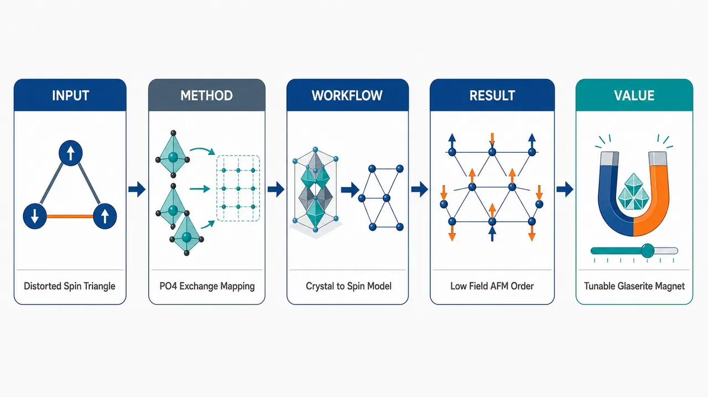
研究问题Na₃Cr(PO₄)₂是否构成一种S=3/2各向异性三角晶格反铁磁体？其低温基态、磁场诱导转变和三角交换网络的真实形状是什么，尤其是PO₄四面体如何改变Cr³⁺自旋之间的超交换路径。创新方法将单晶/粉末XRD、磁化、热容、³¹P NMR与DFT+U/QMC联合起来，像“结构地图+局域磁探针+理论交换显微镜”一样解析材料；Aha点是发现三角形三条边的交换强度不由Cr–Cr距离简单决定，而由PO₄四面体取向重塑为“两条相近反铁磁边+一条显著弱边”的畸变三角网络。工作流程自助熔剂法生长片状Na₃Cr(PO₄)₂单晶 → XRD确定C2/c单斜层状CrO₆–PO₄框架 → SQUID/强场磁化与热容定位短程关联、长程有序、自旋翻转和饱和场 → ³¹P NMR观察矩形谱线、内部场和弛豫峰 → DFT+U提取J₁/J₂/J₃交换 → QMC拟合磁化率与磁化曲线，输出磁基态图像。关键结果χ(T)在约3.5 K出现低维短程反铁磁宽峰；热容、磁化和³¹P NMR共同确认Tₙ≈2.6 K的共格长程反铁磁有序；0.4 K下约1.7 T发生spin-flop，自旋在约4.5 T饱和，饱和磁矩约2.9 μB/Cr；受挫比f≈2，说明弱受挫；DFT显示三角晶格显著空间各向异性，存在两个相近AFM耦合和一个弱耦合。应用价值为glaserite家族提供一个低磁场可完整调控的S=3/2各向异性三角反铁磁材料样本；证明配体PO₄四面体取向可作为设计交换网络的关键旋钮，有助于定向构筑低维受挫磁体、场诱导磁相变材料和可调量子磁性平台。第一部分：核心概览
Na₃Cr(PO₄)₂被确立为一种 S = 3/2 单斜畸变各向异性三角晶格反铁磁体。单晶/粉末 XRD、磁化、热容、³¹P NMR 与 DFT+U/QMC 共同给出一致图像：体系在约 2.6 K 发生共线、交换能较弱受挫的长程反铁磁有序，约 1.7 T 出现自旋翻转，约 4.5 T 达到饱和。核心价值在于揭示 PO₄ 四面体取向导致的非平凡三角晶格变形：三条边并非简单按 Cr–Cr 距离决定交换强度，而是形成两个相近反铁磁耦合与一个显著较弱耦合，为 glaserite 家族中空间各向异性 TLAF 提供了清晰材料实例。
---
第二部分：结构化快速回顾
《Ground-state properties of the S=3/2 anisotropic triangular lattice antiferromagnet Na₃Cr(PO₄₎₂》（None，）
背景
二维三角晶格反铁磁体可因几何受挫、交换各向异性、外磁场与自旋量子数变化产生 120° 有序、量子自旋液体、1/3 磁化平台、spin-flop、supersolid 等多样基态。Na₃Cr(PO₄)₂属于 glaserite 家族，与 Na₃Fe(PO₄)₂同构，但 Cr³⁺为 S = 3/2，自旋小于 Fe³⁺的 S = 5/2。
方法
采用自助熔剂法制备 0.1–0.3 mm 片状单晶；利用单晶 XRD、高分辨粉末 XRD 确定结构；通过 SQUID 与脉冲强场磁化、PPMS 热容、³¹P NMR 测定磁性；DFT+U 计算交换参数，并用 QMC 模拟磁化率和磁化过程。
结果
Na₃Cr(PO₄)₂为 C2/c 单斜结构；χ(T) 在约 3.5 K 有宽峰，表明短程反铁磁关联；热容、磁化和 NMR 均确认 Tₙ ≃ 2.6 K 的长程反铁磁有序；低温磁化显示 μ₀H_SF ≃ 1.7 T 自旋翻转和 μ₀Hₛₐₜ ≃ 4.5 T 饱和；饱和磁矩约 2.9 μB/Cr。
讨论
³¹P NMR 线形低温呈矩形特征，支持 commensurate AFM ordering；同时存在 Gaussian-like 分量，提示局域内部场分布不均，可能来自部分无序或自旋倾斜。DFT 揭示三角晶格强烈变形，交换强度不只由 Cr–Cr 距离控制，还受 PO₄ 四面体相对取向影响。
局限
磁结构未通过中子衍射直接解析；NMR 中 Gaussian-like 分量的微观来源尚未唯一确定；粉末样品导致各向异性方向信息受限；热容下限为 2 K，难以完整提取低温磁熵。
结论
Na₃Cr(PO₄)₂是弱受挫、低维、空间各向异性的 S = 3/2 三角晶格反铁磁体，其低温基态为可被磁场调控的共格反铁磁有序态，并在 glaserite 结构中展示了 PO₄ 几何取向对交换网络的关键调制作用。
---
第三部分：逐章节冷凝解析
Abstract
- Ground-state characterization by combined probes
Na₃Cr(PO₄)₂的晶体结构与磁基态通过 single-crystal XRD、powder XRD、magnetization、heat capacity、³¹P NMR、band-structure calculations 联合确定，覆盖结构、热力学、局域磁性与电子结构四个层级。原始表述为：*"We report the crystal structure and magnetic properties of a S = 3/2 anisotropic triangular lattice compound Na3Cr(PO4)2 employing single-crystal and powder x-ray diffraction, magnetization, heat capacity, and 31P nuclear magnetic resonance (NMR) experiments, supported by the band structure calculations."*
- Short-range antiferromagnetic correlations above long-range order
磁化率在约 3.5 K 出现宽峰，典型对应低维磁体中的短程反铁磁关联，而非三维长程序参量的尖锐转变。证据为：*"Magnetic susceptibility exhibits a broad maximum around 3.5 K, indicating the presence of a short-range antiferromagnetic order, typical of a low-dimensional spin system."*
- Long-range antiferromagnetic order at 2.6 K
磁化与热容均在 Tₙ ≃ 2.6 K 给出反铁磁长程有序信号，NMR 线宽急剧增加，且 1/T₁ 与 1/T₂ 出现峰值，形成多探针一致证据链。原文为：*"Magnetization and heat capacity manifest an antiferromagnetic long-range ordering at around TN ≃ 2.6 K. This was further confirmed by the drastic NMR line broadening and a peak in the nuclear spin-lattice and spin-spin relaxation rates."*
- Field-induced spin-flop and low saturation field
低温等温磁化显示约 μ₀H_SF ≃ 1.7 T 的场诱导 spin-flop transition，并在 μ₀Hₛₐₜ ≃ 4.5 T 以上饱和，指向弱交换能标与显著各向异性。原文为：*"The isothermal magnetization data exhibit a field-induced spin-flop transition at around μ0HSF ≃ 1.7 T reminiscent of an anisotropic two-dimensional magnet, before saturating above μ0Hsat ≃ 4.5 T."*
- Commensurate AFM order and deformed triangular exchange network
³¹P NMR 线形确认低温有序为 commensurate antiferromagnetic nature；第一性原理计算显示三角晶格显著畸变，两条边具有相近反铁磁交换，第三条边弱得多。关键表述为：*"The 31P NMR spectral shape confirms the commensurate antiferromagnetic nature of the ordering below TN."* 以及 *"Ab initio calculations reveal a significant deformation of the triangular spin lattice, resulting in triangles with two antiferromagnetic couplings of similar strength and a much weaker coupling along the third side of the triangle."*
---
I Introduction
- Triangular-lattice antiferromagnets as a platform for frustration physics
二维 S = 1/2 triangular lattice antiferromagnets, TLAFs 自 Anderson 提出 resonating valence bond spin-liquid state 后成为凝聚态研究核心对象。原文直接指出：*"Since Anderson’s inceptive proposal of the resonating valence bond spin-liquid state, two-dimensional (2D) S = 1/2 triangular lattice antiferromagnets (TLAFs) have become the prime focus of research in condensed-matter physics."*
- Isotropic Heisenberg TLAF has chiral 120° long-range order
虽然最近邻反铁磁相互作用在三角晶格上产生几何受挫，经典与量子极限下的各向同性 Heisenberg TLAF 基态仍为 chiral 120° long-range order。证据为：*"the ground state of an isotropic Heisenberg TLAF is calculated to be a chiral 120° long-range order (LRO) in both classical and quantum limits"*，且该结论与实验相符：*"in agreement with the experiments."*
- Unequal exchange couplings generate additional quantum phases
当三角形变为等腰形，即出现不等价交换 J 与 J′ 时，中间范围 J′/J 可稳定 quantum spin liquid, QSL。原始依据为：*"isosceles triangles lead to a stabilization of a quantum spin liquid (QSL) in an intermediate range of J′/J where J and J′ stand for the nearest-neighbor couplings along nonequivalent bonds of the triangle."*
- Magnetic field creates rich TLAF phase diagrams
外场可诱导包括 up-up-down order 与 1/3 magnetization plateau 在内的多相图结构，还包括 V-type、umbrella、fan-like orders。原文为：*"External magnetic field tunes the ground state of a TLAF leading to rich phase diagrams."*；具体例子为：*"an up-up-down order manifested by the 1/3 magnetization plateau can be stabilized by either thermal or quantum fluctuations"*，以及 *"Other phases, including the V-type, umbrella, and fan-like orders also appear in the phase diagrams alongside the collinear up-up-down phase."*
- Exchange anisotropy can stabilize field-induced supersolid phases
易轴三角反铁磁体中的交换各向异性可在外场中稳定 supersolid phases，体现 TLAF 对微扰高度敏感。原文为：*"Yet another tuning opportunity is offered by an exchange anisotropy that leads to supersolid phases stabilized in the applied field in easy-axis triangular antiferromagnets."*
- Glaserite family offers structural flexibility for TLAF materials
A₂A′M(XO₄)₂ glaserite family 因可容纳多种过渡金属离子 M 与单/二价阳离子而成为探索三角磁性网络的重要材料库。原文为：*"glaserite family with the general formula A2A′M(XO4)2 is particularly interesting because of its high flexibility that allows an accommodation of various transition-metal ions M along with a range of monovalent and divalent cations in the A and A′ sites."*
- Glaserite compounds span one-dimensional to two-dimensional magnetic behavior
glaserite 材料的磁性可从近一维到规则三角二维体系变化；代表包括 Na₂BaCo(PO₄)₂ 自旋 supersolid 候选体与 Ni 类似物中的双磁子束缚态 BEC。原文为：*"the magnetic behavior of glaserite-type compounds ranges from predominantly one-dimensional to two-dimensional with the regular triangular lattice and a varying degree of magnetic anisotropy"*。
- Na₃Fe(PO₄)₂ provides the structural and magnetic reference point
Na₃Fe(PO₄)₂为 C2/c monoclinic structure，包含略各向异性的 Fe³⁺ S = 5/2 三角格，约 Tₙ ∼ 10.4 K 发生共格共线反铁磁有序，并在约 35 T 饱和前出现 spin-flop。证据为：*"Na3Fe(PO4)2 crystallizes in a monoclinic structure with the C2/c space group and exhibits a slightly anisotropic triangular motif of Fe3+ (S = 5/2) ions."*；磁性为：*"Na3Fe(PO4)2 undergoes a commensurate and collinear AFM ordering at around TN ∼ 10.4 K and features a spin-flop transition under applied magnetic field before saturating around 35 T."*
- Na₃Cr(PO₄)₂ introduces reduced spin and lower magnetic energy scale
Cr³⁺版本与 Fe³⁺同构，但自旋从 S = 5/2 降至 S = 3/2；其在 Tₙ ≃ 2.6 K 以下形成共格 AFM LRO，在中间场发生 spin-flop，并约 5 T 饱和。原文为：*"Herein, we report an isostructural compound Na3Cr(PO4)2 with Cr3+ featuring a reduced spin of S = 3/2 compared to its Fe3+ counterpart."* 以及 *"The Cr compound is also monoclinic and features a commensurate AFM LRO below TN ≃ 2.6 K with a spin-flop transition in an intermediate field, before saturating at around 5 T."*
- PO₄ orientation causes non-trivial triangular deformation
三角晶格的畸变并非仅由金属-金属距离决定，而与 PO₄ tetrahedra 相对磁性框架的取向相关。原文为：*"We also uncover a non-trivial deformation of the triangular lattice caused by the varying orientation of the PO4 tetrahedra with respect to the magnetic framework of the glaserite structure."*
---
II Methods
- Crystal growth by self-flux technique
Na₃Cr(PO₄)₂以自助熔剂法合成，得到横向尺寸 0.1–0.3 mm 的片状单晶。起始物为 Na₃PO₄、Cr₂O₃、NH₄H₂PO₄，升温至 900 °C，以 2 °C/h 慢冷至 800 °C 后自然冷却。原文为：*"Platelet single crystals of Na3Cr(PO4)2 with a lateral size of 0.1 mm to 0.3 mm were synthesized by a self-flux technique."*；工艺为：*"heated gradually to 900 °C. A slow cooling was performed at the rate of 2 °C/h till 800 °C, and then the sample was allowed to cool naturally to room temperature."*
- Single-crystal and powder XRD characterization
单晶 XRD 在室温进行，仪器为 Bruker KAPPA APEX-II CCD，使用 Mo Kα radiation, λ = 0.71073 Å。粉末 XRD 使用 PANalytical Xpert-Pro, Cu Kα, λₐᵥ = 1.54182 Å，高分辨粉末 XRD 在 ESRF ID22 beamline，波长 0.4 Å。原文为：*"Single-crystal x-ray diffraction (XRD) was performed at room temperature using the Bruker KAPPA APEX-II CCD diffractometer equipped with graphite monochromated Mo Kα radiation (λ = 0.71073 Å)."* 以及 *"high-resolution powder XRD performed at the ID22 beamline ... using the wavelength of 0.4 Å."*
- Magnetization measurements across low temperature and high field
磁化测量覆盖 0.4 K ≤ T ≤ 380 K 与 0 ≤ H ≤ 7 T，使用 SQUID MPMS-3；低于 1.8 K 的数据由 ³He attachment 获得；脉冲场最高达 50 T。原文为：*"Magnetization (M) measurements were performed as a function of temperature (0.4 K ≤ T ≤ 380 K) and magnetic field (0 ≤ H ≤ 7 T) using a superconducting quantum interference device (SQUID) (MPMS-3, Quantum Design) magnetometer."*；强场为：*"High-field magnetization was measured in a pulsed field up to 50 T at the Dresden High Magnetic Field Laboratory."*
- Heat capacity measurements
热容采用 PPMS 弛豫法，在小块烧结片上测量，范围为 2 K ≤ T ≤ 250 K 与 0 ≤ H ≤ 9 T。原文为：*"Heat capacity (Cp) as a function of T (2 K ≤ T ≤ 250 K) and H (0 ≤ H ≤ 9 T) was measured on a small piece of sintered pellet using the relaxation technique in the physical property measurement system."*
- ³¹P NMR experimental configuration
NMR 使用自建相干自旋回波谱仪，温度范围 1.5 K ≤ T ≤ 250 K；核为 ³¹P, I = 1/2，旋磁比 γN/2π = 17.236 MHz/T；详细温变数据在 ν = 17.235 MHz，对应约 1 T。原文为：*"These measurements targeted the 31P nucleus (I = 1/2) with the gyromagnetic ratio of γN/2π = 17.236 MHz/T."*；频率说明为：*"a detailed temperature-dependent study is presented for ν = 17.235 MHz only, which corresponds to a magnetic field of 1 T."*
- NMR relaxation protocols
谱线通过固定频率扫场与 π/2 − τ − π 脉冲序列获得；1/T₁ 用 π/2 − τ₁ − π/2 − τ₂ − π 饱和恢复序列；1/T₂ 由自旋回波强度随 τ₂ 衰减提取。原文为：*"The NMR spectra were obtained by sweeping the magnetic field while maintaining a fixed resonance frequency and utilizing a standard π/2−τ−π pulse sequence."*
- DFT+U parameters and exchange mapping
DFT 使用 VASP 与 PBE，Cr 3d 关联采用 DFT+U，参数为 Ud = 5 eV、Jd = 1 eV，double-counting correction 取 atomic limit；Ud 在 3–7 eV 变化只导致交换整体重标定，无定性改变。原文为：*"Correlation effects in the Cr 3d shell were treated on the mean-field level within DFT+U using the on-site Coulomb repulsion Ud = 5 eV, Hund’s coupling Jd = 1 eV, and double-counting correction in the atomic limit."*；稳健性为：*"varying Ud in the range of 3−7 eV, which led to a uniform re-scaling of all exchange couplings without any qualitative changes in the magnetic model."*
- Spin Hamiltonian and QMC simulations
磁模型为 ℋ = ∑⟨ij⟩ Jij Si·Sj，自旋 S = 3/2；磁化率与磁化用 ALPS 的 loop 与 dirloopₛₛₑ 算法进行 QMC，二维有限晶格最多 144 sites，周期边界条件。原文为：*"Magnetic parameters were obtained by a mapping procedure for the spin Hamiltonian H = ∑⟨ij⟩ Jij Si Sj where the summation is over bonds, and S = 3/2."*；QMC 为：*"QMC simulations using the loop and dirloopₛₛₑ algorithms of the ALPS simulation package on a 2D finite lattice with up to 144 sites and periodic boundary conditions."*
---
III Results and Discussion
III.1 Crystal structure
- Monoclinic C2/c structure confirmed by single-crystal and powder XRD
Na₃Cr(PO₄)₂结构由单晶 XRD 通过 SHELXT-2018/2 求解，并用 SHELXL-2018/3 在 F² 上全矩阵最小二乘精修；80 K 高分辨粉末 XRD 的 Rietveld 精修确认该模型。原文为：*"The crystal structure of Na3Cr(PO4)2 was solved from single-crystal XRD data with direct methods using SHELXT-2018/2 and refined by the full matrix least squares on F2 using SHELXL-2018/3."*；验证为：*"Rietveld refinement against the high-resolution powder XRD data collected at 80 K ... confirm the structural model determined from the single crystal."*
- Room-temperature crystallographic parameters
室温单晶数据显示：经验式 CrNa₃O₈P₂，晶系 Monoclinic，空间群 C2/c，晶格参数 a = 8.984(2) Å, b = 4.9908(1) Å, c = 13.829(4) Å, β = 90.830(8)°，体积 620.0(3) ų，密度 3.331 g cm⁻³。关键原文为：*"Na3Cr(PO4)2 crystallizes in the monoclinic space group C2/c, similar to Na3Fe(PO4)2."*
- 80 K high-resolution powder XRD refinement quality
80 K 粉末精修参数为 a = 8.99837(2) Å, b = 4.97809(1) Å, c = 13.78319(3) Å, β = 90.9559(1)°，残差为 RI = 0.036, Rp = 0.055。图注原文为：*"The refined lattice parameters are a = 8.99837(2) Å, b = 4.97809(1) Å, c = 13.78319(3) Å, β = 90.9559(1)°. The refinement residuals are RI = 0.036 and Rp = 0.055."*
- Similarity to Na₃Fe(PO₄)₂ derives from comparable ionic radii
Na₃Cr(PO₄)₂与 Na₃Fe(PO₄)₂结构参数相近，原因是 Cr³⁺ 与 Fe³⁺ 离子半径相近，分别为 0.69 Å 与 0.63 Å。原文为：*"These refined structural parameters are comparable to those reported for Na3Fe(PO4)2, this is because Cr3+ and Fe3+ have very similar ionic radii of 0.69 Å and 0.63 Å, respectively."*
- Layered CrO₆–PO₄ framework with Na interlayers
Cr³⁺ 处于八面体配位，CrO₆ 通过 PO₄ 四面体连接成层，Na⁺ 填充层间空间。原文为：*"The Cr3+ ions are octahedrally coordinated and are connected into layers via PO4 tetrahedra, with Na+ ions filling the interlayer space."*
- Two Cr–Cr distances but three exchange pathways
单斜对称性导致三角磁性框架中最近邻 Cr–Cr 距离分裂为 4.991 Å 对应 J₁ 与 5.139 Å 对应 J₂、J₃；但 J₂ 与 J₃虽距离相同，PO₄ 超交换路径不同。原文为：*"Its monoclinic symmetry results in two distinct Cr–Cr distances of 4.991 Å (J1) and 5.139 Å (J2, J3)."*；图注进一步强调：*"Whereas the Cr–Cr distances of J2 and J3 are identical, the corresponding superexchange pathways are not."*
---
III.2 Magnetization and Heat Capacity
- Magnetic susceptibility broad maximum at 3.5 K
在 μ₀H = 0.5 T 下，χ(T) 随降温增加，并在约 3.5 K 出现宽峰，表明低维短程反铁磁关联。原文为：*"χ(T) increases with a decrease in T and displays a broad maximum around ∼3.5 K."*；解释为：*"The broad maxima at low temperature are generally observed in low-dimensional magnets due to short-range correlations."*
- Long-range magnetic transition near 2.5–2.6 K
宽峰之后，在 Tₙ ≃ 2.5 K 处出现斜率变化，dχ/dT 清楚定位转变；热容零场在 Tₙ ≃ 2.6 K 有尖锐异常。原文为：*"The broad maximum is followed by a slope change at around TN ≃ 2.5 K in μ0H = 0.5 T, reflecting the transition to a magnetic LRO state."*；热容证据为：*"The zero-field Cp(T) shows a well-defined sharp anomaly around TN ≃ 2.6 K, confirming the magnetic transition."*
- Field suppresses antiferromagnetic ordering temperature
随外场增加，Tₙ 向低温移动，这是反铁磁长程有序的典型表现；热容峰高度降低，峰位低移，μ₀H > 4 T 时异常完全被压制。原文为：*"With increasing field, TN is suppressed towards low temperatures, typically expected for an AFM ordering."*；热容为：*"With increasing field, the height of the peak is reduced, and the peak position shifts towards low temperatures"*，以及 *"For μ0H > 4 T, the anomaly is completely suppressed as expected for a fully polarized state."*
- Curie-Weiss analysis gives AFM interactions and S = 3/2 moment
高温 T > 50 K 的 Curie-Weiss 拟合得到 χ₀ = 1.8(2) × 10⁻⁴ cm³/mol, C = 1.8(2) cm³ K/mol, θCW = −6.0(6) K。有效磁矩 μeff = 3.8(1) μB，接近 S = 3/2, g = 2 理论值 3.87 μB。原文为：*"The fit ... yields χ0 = 1.8(2) × 10−4 cm3/mol, C = 1.8(2) cm3 K/mol, and θCW = −6.0(6) K."*；磁矩为：*"μeff = 3.8(1) μB which is close to the theoretically calculated value ... 3.87 μB."*
- Weak frustration or low-dimensionality from f ≃ 2
负 θCW 表明 Cr³⁺间以反铁磁相互作用为主；平均场估计 J/kB = −0.7(1) K；受挫比 f = |θCW|/TN ≃ 2，说明弱受挫或低维性。原文为：*"The negative value of θCW indicates dominant AFM interactions between the Cr3+ ions."*；结果为：*"we estimated J/kB = −0.7(1) K."*；判断为：*"the frustration ratio f = |θCW|/TN ≃ 2 may indicate a weak frustration or low-dimensionality in Na3Cr(PO4)2."*
- HTSE fit for S = 3/2 TLAF gives J/kB ≃ 0.40 K
使用 S = 3/2 TLAF 高温级数展开并在 T > 4 K 拟合，得到 χ₀ = 1.8(5) × 10⁻⁴ cm³/mol, g = 1.96(3), J/kB = 0.40(3) K。但 T < 6 K 时规则 TLAF 模型明显偏离实验。原文为：*"The resulting values of the fitted parameters are, χ0 = 1.8(5) × 10−4 cm3/mol, g = 1.96(3), and J/kB = 0.40(3) K."*；偏离为：*"However, at T < 6 K the TLAF model clearly deviates from the experimental susceptibility."*
- Spin-flop transition at 1.7 T and saturation at 4.5 T
T = 0.4 K 等温磁化中，M(H) 先线性增加，在 μ₀H_SF ∼ 1.7 T 发生斜率变化，对应 spin-flop transition，随后在 μ₀Hₛₐₜ = 4.5(3) T 以上趋于饱和。原文为：*"At T = 0.4 K, M increases linearly with H, shows a slope change around μ0HSF ∼ 1.7 T indicative of a spin flop (SF) transition, and a tendency of saturation above μ0Hsat = 4.5(3) T."*
- Saturation magnetization matches fully polarized S = 3/2 state
脉冲场 T = 1.6 K 数据显示 μ₀Hₛₐₜ ≃ 4.5 T 以上清楚饱和，饱和磁矩 Mₛₐₜ ≃ 2.9 μB，接近 S = 3/2, g = 2 完全极化值 3 μB。原文为：*"A clear saturation is seen above μ0Hsat ≃ 4.5 T with the saturation magnetization of Msat ≃ 2.9 μB close to the expected value Msat = 3 μB in the fully polarized state of a S = 3/2 magnet with g = 2."*
- Saturation field yields exchange scale J/kB ≃ 0.66 K
用 TLAF 关系 Hsat = 9JS/gμB 估计，μ₀Hsat = 4.5(3) T 对应 J/kB = 0.66(3) K，与 χ(T) 分析一致。原文为：*"For Na3Cr(PO4)2, μ0Hsat = 4.5(3) T corresponds to J/kB = 0.66(3) K, in a reasonable agreement with the results of the χ(T) analysis."*
---
III.3 ³¹P NMR
- ³¹P is an ideal local probe for Na₃Cr(PO₄)₂
Na₃Cr(PO₄)₂含有 NMR 活性 ³¹P, I = 1/2；PO₄ 四面体连接三个相邻 CrO₆ 八面体，结构中只有一个 P 位点，因此 ³¹P 对磁有序和场诱导相极其敏感。原文为：*"Na3Cr(PO4)2 contains NMR active 31P nuclei with the nuclear spin I = 1/2."*；优势为：*"31P is an ideal nucleus for probing magnetic ordering as well as field-induced phases in Na3Cr(PO4)2 via NMR."*
---
III.3.1 ³¹P NMR spectra (T > TN)
- Single ³¹P NMR line above TN
在 ν = 17.235 MHz, μ₀H ≃ 1 T 下，Tₙ以上场扫谱表现为单线，符合 I = 1/2 核无四极相互作用的预期。原文为：*"The spectra exhibit a single line, as expected for an I = 1/2 nucleus."*
- Line broadening approaching TN
降温导致 NMR 线宽增加，在接近 Tₙ 时急剧展宽，反映低频自旋涨落增强与静态内部场萌生。原文为：*"With lowering temperature, the line broadens, and the line broadening becomes drastic as one approaches TN."*
- Small impurity peak at zero-shift position
在 Href 零位移位置存在小而温度无关的峰，归因于非磁性含磷杂质。原文为：*"A small temperature-independent peak is also visible exactly at the zero-shift position (Href), possibly due to a non-magnetic phosphorous-containing impurity."*
- Anisotropic powder simulation of NMR shift
NMR 位移用 K = Kiso + Kaxial(3cos²θ − 1) 描述；T = 50 K 的模拟给出 Kiso ≃ 1.08% 与 Kaxial ≃ −0.6%。原文为：*"The NMR shift (K) for each temperature is determined by simulating the anisotropic powder spectra using the isotropic (Kiso) and axial (Kaxial) components of K."*；数值为：*"one illustrative simulated curve for the spectrum at T = 50 K ... gives Kiso ≃ 1.08% and Kaxial ≃ −0.6%."*
- Kiso tracks intrinsic spin susceptibility
Kiso(T) 在约 3 K 出现宽峰，与 χ(T) 对应；NMR shift 是内禀自旋磁化率的局域量测，避免外来杂质贡献。原文为：*"Kiso(T) shows a broad maximum around 3 K, similar to the χ(T) data."*；物理意义为：*"K(T) is a direct measure of the intrinsic spin susceptibility (χspin) and is free from any extrinsic contributions."*
- Hyperfine coupling constants from K–χ plot
K–χ 线性拟合给出 K0iso ≃ 0.214%, Ahfiso ≃ 0.24 T/μB；轴向分量为 K0axial ≃ −0.20%, Ahfaxial ≃ −0.04 T/μB，表明 ³¹P 位点各向异性超精细场较小。原文为：*"a fit to the isotropic component ... yields K0iso ≃ 0.214% and Ahfiso ≃ 0.24 T/μB."*；轴向为：*"the fit to the axial component gives K0axial ≃ −0.20% and Ahfaxial ≃ −0.04 T/μB, indicating a small anisotropic hyperfine field at the 31P site."*
- NMR shift fit gives J/kB = 0.47 K
固定 Ahfiso ≃ 0.24 T/μB，用 HTSE 形式拟合 T > 4 K 的 Kiso(T)，得到 g = 1.9(6) 与 J/kB = 0.47(3) K，与 bulk χ(T) 结果一致。原文为：*"The fitted parameters are g = 1.9(6) and J/kB = 0.47(3) K."*；一致性为：*"This value of J/kB is in good agreement with the one obtained from the χ(T) analysis."*
---
III.3.2 ³¹P NMR spectra (T < TN)
- Static internal field develops below TN
T = 2.73 K 近 Tₙ 时谱线近似对称；继续降温后因有序态静态内部场 Hint 形成而明显展宽。原文为：*"At T = 2.73 K (close to TN), the line is nearly symmetric but with a sharp peak at the zero-shift position."*；低温变化为：*"As one decreases temperature below TN, a clear spectral broadening is observed due to the development of the static internal field (Hint) in the ordered state."*
- Rectangular-like spectrum confirms commensurate AFM order
Tₙ以下较低温时，谱线呈矩形状，这是粉末样品中共格反铁磁有序在静态内部场下的典型线形。原文为：*"Well below TN, the spectrum shows a rectangular-like shape with a peak at the zero-shift position."*；判据为：*"Typically, for a commensurate AFM ordering, one would expect a rectangular experimental line shape."*
- Internal field estimated as 0.17 T at 1.54 K
T = 1.54 K 时的矩形谱分量可用 Hint = 0.17 T 计算；图注给出：*"The area in light-red represents the rectangular-shape of the spectrum at T = 1.54 K calculated with Hint = 0.17 T."*
- Gaussian-like component indicates inhomogeneous internal fields
1.54 K 的全部实验谱不能仅靠矩形线形重现；除零位移附近杂质峰外，还需 Gaussian-like 分量，暗示 Tₙ以下存在类顺磁相分量或内部场非均匀分布。原文为：*"the shape of the entire experimental spectrum at T = 1.54 K cannot be simply reproduced by only a rectangular shape."*；解释为：*"the remaining Gaussian-like line suggests a paramagnetic-like phase fraction existing below TN."*
- Possible origins: partial disorder or spin canting
Gaussian-like 分量可能来自 partial disorder 或 spin canting，导致内部场分布不均。原文为：*"Such a paramagnetic-like line could be either due to partial disorder (i.e., staggered component) or spin canting, leading to this inhomogeneous distribution of internal fields."*
---
III.3.3 ³¹P spin-lattice relaxation rate (1/T1)
- 1/T1 measured at different spectral positions across phases
顺磁态下 1/T₁ 在谱峰位置测量；AFM 态下在低场边缘位置测量。原文为：*"The 31P spin-lattice relaxation rate (1/T1) was measured at the peak position of the spectra in the paramagnetic state."*；有序态为：*"in the AFM state, 1/T1 was measured at the low-field-edge position of the spectra marked by the arrows in Fig. 8."*
- Stretched exponential recovery captures relaxation distribution
核磁化恢复用 1 − M(t)/Msat = A exp[−(t/T1)^β] 拟合，β 描述弛豫时间分布。原文为：*"The longitudinal nuclear magnetization recovery curves were fitted by a stretched exponential form"*；参数含义为：*"β is the stretched exponent that accounts for a distribution of relaxation times."*
- β ≃ 1 at high temperature and drops near TN
高温 β ≃ 1，符合 I = 1/2 核的单指数、均匀弛豫；接近 Tₙ 时 β 低于 1，表明弛豫时间分布出现。原文为：*"At high temperatures, β ≃ 1 (i.e., single-exponential) and is nearly temperature independent as expected for an I = 1/2 nucleus."*；低温为：*"The value of β drops below unity as one approaches TN, indicating the distribution of relaxation times."*
- 1/T1 peak at TN indicates critical slowing down
高温 1/T₁ 近似温度无关；低于 4 K 开始增加，在 Tₙ ≃ 2.6 K 出现尖峰，确认自旋涨落临界慢化和 LRO 转变。原文为：*"At high temperatures, it is almost temperature independent, as expected due to paramagnetic fluctuations."*；转变证据为：*"1/T1 starts increasing below 4 K, and exhibits a sharp peak at around TN ≃ 2.6 K, confirming a critical slowing down of spin fluctuations and a transition to a LRO state."*
- Ordered-state relaxation follows T⁵ law
Tₙ以下 1/T₁ 急剧下降，且低温拟合为 T⁵，对应 three-magnon Raman process，而非 T³ 双磁子过程。原文为：*"Below TN, 1/T1 drops sharply, a clear indication of the relaxation due to scattering of magnons by the nuclear spins."*；机制为：*"1/T1 below TN follows a T5 behavior, indicative of a three-magnon Raman process."*
- 1/(χT1T) reveals q ≠ 0 correlations above TN
1/(χT₁T) 在高温近似温度无关；低于约 5 K 明显增强，说明随着 LRO 建立，q ≠ 0 反铁磁关联占主导。原文为：*"1/(χT1T) is temperature-independent just above TN."*；增强为：*"a pronounced increase in 1/(χT1T) occurred below about ∼5 K signaling dominant correlations due to q ≠ 0 as the magnetic LRO sets in."*
- Narrow enhancement supports weak frustration
1/(χT₁T) 仅在 Tₙ以上窄温区增强，与小受挫比 f ≃ 2 一致。原文为：*"the enhancement of 1/(χT1T) over a narrow temperature range just above TN reflects only a weak frustration as expected from the small frustration ratio f ≃ 2."*
---
III.3.4 ³¹P spin-spin relaxation rate (1/T2)
- 1/T2 obtained from transverse magnetization decay
1/T₂ 通过 π/2 − τ − π 序列后横向磁化 Mxy 随脉冲间隔 τ 的衰减提取，拟合形式为 Mxy = M0 exp[−(2τ/T2)^β]。原文为：*"The measurement of the nuclear spin-spin relaxation rate 1/T2 was done by monitoring the decay of the transverse magnetization (Mxy) after a π/2−τ−π pulse sequence as a function of the pulse separation time τ."*
- 1/T2 mirrors 1/T1 and peaks at TN
1/T₂ 的温度行为与 1/T₁ 几乎相同，在 1 T 下约 Tₙ ≃ 2.5 K 出现尖峰，随后在 Tₙ以下平滑下降。原文为：*"The temperature-dependent 1/T2 features nearly the same behavior as 1/T1."*；峰值为：*"A sharp peak in 1/T2 at around TN ≃ 2.5 K under 1 T is followed by a smooth decay below TN."*
- β behavior resembles Na₃Fe(PO₄)₂
高温 β ≃ 1 且几乎不随温度变化；Tₙ以下 β 迅速增加，与二维三角晶格化合物 Na₃Fe(PO₄)₂中报道行为相似。原文为：*"The value of β is nearly 1 and temperature-independent at higher temperatures ... and then increases rapidly below TN."*；对比为：*"A similar behavior has been reported in the two-dimensional triangular lattice compound Na3Fe(PO4)2."*
---
III.3.5 Field dependence of the ³¹P NMR spectra, 1/T1, and 1/T2
- Field-dependent NMR probes spin-flop and saturation regimes
在 T = 1.6 K < Tₙ 下，通过不同频率测量 NMR 谱、1/T₁ 与 1/T₂，覆盖 Hsat 以下与以上，用于识别场诱导转变与饱和场。原文为：*"To detect the field-induced transition as well as the saturation field, we recorded the NMR spectra, 1/T1, and 1/T2 at T = 1.6 K (T < TN) at different frequencies well above and below Hsat."*
- Low-field rectangular spectrum evolves continuously with field
低频 ∼17.235 MHz 时谱线近似矩形；随频率/磁场增加，谱形连续演化，重心偏离零位移位置。原文为：*"for the low frequency of ∼17.235 MHz, the spectrum roughly exhibits rectangular shape as discussed above."*；场演化为：*"With increasing frequency (or magnetic field), the spectral shape evolves continuously and the center of gravity moves away from the zero-shift position."*
- Intermediate-field spectra contain rectangular and Gaussian-like components
中间磁场下，谱线可用矩形与 Gaussian-like 两个分量拟合；随着外场升高，Gaussian-like 权重增加，矩形权重减少，说明有序态内部场分布与场诱导磁结构同步变化。原文为：*"In the intermediate fields, the spectra could be fitted with two components (rectangular and Gaussian-like)."*；权重变化为：*"The spectral weight associated with the Gaussian-like component increases, whereas the weight associated with the rectangular one decreases upon increasing field."*
- Above Hsat spectrum resembles paramagnetic fully polarized state
当 H > Hsat，例如 110.5 MHz，谱形类似顺磁态，反映 Cr³⁺ 磁矩几乎均匀沿外场方向排列，即完全极化态。原文为：*"At higher fields, H > Hsat (e.g. at 110.5 MHz), the spectrum acquires a characteristic shape, which is similar to that observed in the paramagnetic state, reflecting nearly uniform Cr3+ magnetic moments pointing in the external field direction in the fully polarized state."*
- NMR shift independently estimates saturation moment
在 110.5 MHz 下，NMR 谱相对零位移的位移 ΔH ≃ 0.62 T；用 Ahfiso ≃ 0.24 T/μB 估计 Msat ∼ ΔH/Ahfiso ∼ 0.62/0.24 ∼ 2.6 μB/Cr³⁺，与 M(H) 的 2.9 μB 良好一致。原文为：*"we estimated the saturation moment utilizing the hyperfine coupling constant Ahfiso to be Msat ∼ ΔH/Ahfiso ∼ 0.62/0.24 ∼ 2.6 μB/Cr3+."*；一致性为：*"This is in a good agreement with Msat obtained from the M(H) measurements."*
---
第四部分：深度理解与语言支持
1. 术语解析
- Anisotropic triangular lattice antiferromagnet
指三角格上的反铁磁交换并非三条边完全相等。这里的 anisotropic 主要是 空间交换各向异性，不是单纯自旋空间中的 g 因子或单离子各向异性。Na₃Cr(PO₄)₂中 J₁、J₂、J₃由单斜结构与 PO₄ 取向共同调制。
- Short-range antiferromagnetic order / correlations
“短程反铁磁有序”不等于真正热力学意义的长程有序。χ(T) 宽峰只说明局域自旋开始反平行关联；只有热容尖峰、NMR 内部场、1/T₁ 临界峰等才支持长程有序。
- Commensurate antiferromagnetic ordering
共格反铁磁有序表示磁周期与晶格周期成简单有理关系。NMR 粉末谱中矩形线形对应较均一大小的静态内部场分布，是 commensurate AFM 的典型局域证据。
- Spin-flop transition
自旋翻转不是完全极化，而是反铁磁有序在外场下由一种取向重排到另一种取向。Na₃Cr(PO₄)₂中 1.7 T 的斜率变化对应 spin-flop，4.5 T 才是饱和场。
- Stretched exponent β
β = 1 表示单一弛豫时间、环境均匀；β < 1 表示弛豫时间分布，常见于临界涨落、无序或内部场不均匀；β 在 Tₙ 附近变化可作为磁性非均匀性的局域指标。
2. 疑难查证
- 为什么 χ(T) 宽峰不是 TN？
低维反铁磁体中，自旋在真正三维长程有序前会先形成局域反平行短程关联。χ(T) 因短程关联增强而先升后降，形成宽峰；热力学相变则需要关联长度发散或跨层耦合锁定，表现为热容尖峰、NMR 内部场出现、1/T₁ 临界峰。因此 3.5 K 宽峰 是短程序，2.6 K 才是长程 AFM 有序。
- 为什么 Cr–Cr 距离相同仍可有不同交换 J₂ 与 J₃？
超交换强度不仅由磁离子距离决定，还由桥联配体的轨道重叠、键角、四面体取向和侧向位移决定。J₂ 与 J₃的 Cr–Cr 距离同为 5.139 Å，但 PO₄ 四面体相对 Cr–Cr 连线的空间姿态不同，导致 Cr–O–P–O–Cr 路径的有效重叠不同，因此交换强度可不同。
- 为什么矩形 NMR 线形代表共格 AFM？
粉末中晶粒方向随机。若每个 ³¹P 位点感受到大小固定、方向随晶粒取向变化的静态内部场，场扫谱会形成类似矩形的边界分布。若磁结构不共格或内部场大小连续分布，则谱线通常更宽、更圆滑或呈 Gaussian-like 分布。
- T⁵ 的 1/T₁ 意味着什么？
有序反铁磁态中，核自旋弛豫来自核与低能自旋波的相互作用。T³ 常对应双磁子 Raman 过程，T⁵ 常对应三磁子 Raman 过程。Na₃Cr(PO₄)₂的 T⁵ 行为说明低温有序态弛豫主要受多磁子散射控制，而不是简单顺磁涨落。
---
第五部分：创新评估与关联
1. 创新性判断
- 新材料层面的创新
Na₃Cr(PO₄)₂被系统确认为 S = 3/2 各向异性三角晶格反铁磁体。相较已知 Na₃Fe(PO₄)₂的 S = 5/2、TN ∼ 10.4 K、Hsat ∼ 35 T，Cr 体系显著降低磁能标至 TN ≃ 2.6 K、Hsat ≃ 4.5 T，使低场即可完整追踪 spin-flop 到饱和的基态演化。
- 交换网络理解的创新
关键突破在于证明三角格畸变不能仅以金属离子距离判定。即使 J₂ 与 J₃对应的 Cr–Cr 距离相同，PO₄ 四面体取向仍可造成不同超交换路径。该结果为 glaserite 磁性材料设计提供了更精细原则：配体四面体几何取向 与 磁离子距离 同等重要。
- 多探针一致性强
bulk 磁化、热容、局域 NMR 与 DFT/QMC 共同锁定同一物理图像：弱受挫、低维、空间各向异性 AFM；Tₙ、H_SF、Hₛₐₜ、Msat、J/kB 在不同实验中相互吻合。尤其 ³¹P NMR 同时验证共格 AFM、内部场、临界涨落与高场饱和磁矩，增强了结论可信度。
- 解决的问题
过去 glaserite 家族研究中，规则三角格、准一维行为、Co/Ni 基量子相较受关注；Na₃Cr(PO₄)₂填补了 纯 Na glaserite、Cr³⁺ S = 3/2、单斜畸变 TLAF 的实验空缺，并明确给出其低温基态、场诱导转变与交换各向异性的结构来源。
- 仍未完全解决的问题
低温 NMR 的 Gaussian-like 分量尚未被唯一归因；缺少中子衍射确定自旋排列方向、传播矢量和可能的 canting；DFT 交换参数虽揭示变形趋势，但有限粉末实验难以直接给出完整各向异性磁结构。
-
15
📊 含图深析
💡 亮点：衍射实验刻画 β-Fe2O3 的反铁磁转变。
📖 展开分析 + 配图
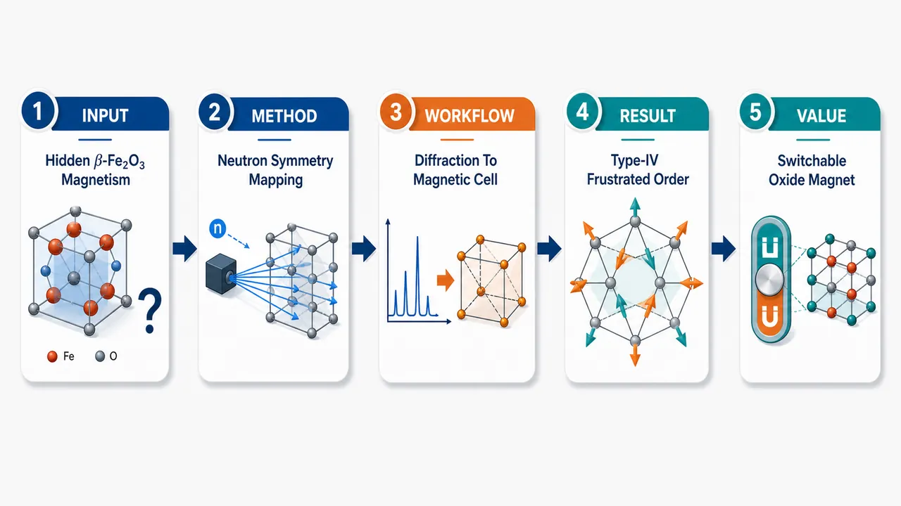
研究问题β-Fe₂O₃ 虽属于经典 Fe₂O₃ 氧化物家族，但其低温磁结构长期缺乏清晰图像：温度降低后自旋如何排列、反铁磁转变由哪个传播矢量和磁对称性控制、bixbyite 晶格为何会产生强几何阻挫与非共线磁性。创新方法用中子衍射捕捉 Fe³⁺ 磁矩排列，用同步辐射 X 射线衍射锁定晶体结构变化，并通过对称性表示分析发现关键“Aha”点：反铁磁序在 H 点 k=(1,1,1) 激活 mH₁⁺ 不可约表示，同时出现半晶胞平移加时间反演的反平移对称性 (1'|1/2,1/2,1/2)，从而确定非共线、非极性的 type-IV 反铁磁结构。工作流程输入为不同温度下的 β-Fe₂O₃ 晶体/粉末衍射数据；先用同步辐射 X 射线衍射精确确定 bixbyite 晶格与 Fe/O 位置，再用中子衍射识别低温新增磁衍射峰；随后将峰位归属到 H 点 k=(1,1,1)，进行 mH₁⁺ 表示分析与磁空间群判定；最终输出 primitive Pᵢa3̄ 磁胞、两个互穿且磁矩反转的原始立方子胞，以及 Fe2 六边形环—三角单元—中心 Fe1 离子的阻挫磁拓扑图像。关键结果Tₙ 以下 β-Fe₂O₃ 突然建立非共线反铁磁序；磁胞变为 primitive Pᵢa3̄，形成两个互穿原始立方子胞，二者磁矩相互反转；所有 Fe³⁺–O–Fe³⁺ 交换均为反铁磁，但 111 面内 Fe2O₆ 八面体组成六边形环并由三角单元连接，导致强几何阻挫；阻挫指数 f ≃ 7.6，属于二元磁性氧化物中的高阻挫水平；中心 Fe1 离子具有强类 Ising 各向异性，可能控制 Fe2 环的磁态。应用价值该研究把 β-Fe₂O₃ 建立为一种化学组成简单但磁拓扑复杂的功能性二元氧化物模型体系，可用于设计强阻挫非共线反铁磁材料；其 type-IV 反平移对称性、Fe2 六边形磁环和可切换 Fe1 中心为外场、应变、缺陷、界面或掺杂调控磁态提供具体结构单元，有潜力服务于反铁磁自旋电子学和可设计磁功能氧化物。第一部分：核心概览（Overview）
β-Fe₂O₃ 的磁性长期缺乏明确结构图像。该研究通过中子衍射与同步辐射 X 射线衍射解析其温度驱动的反铁磁转变，确定其在 H 点 k=(1,1,1) 激活 mH₁⁺ 不可约表示，并伴随 反平移对称性，形成非共线、非极性的 type-IV 反铁磁结构。核心贡献在于把 β-Fe₂O₃ 从“磁性未清楚表征的 Fe₂O₃ 多晶型”推进为一种具有强几何阻挫、共存磁子晶格、潜在可切换 Fe1 中心的功能性二元氧化物模型体系。
---
第二部分：结构化快速回顾
《The antiferromagnetic transition in the frustrated bixbyite β-Fe₂O₃ magnet》（None，）
背景
Fe₂O₃ 是研究最充分的过渡金属氧化物家族之一，但 β-Fe₂O₃ 的磁性仍然缺乏系统表征。摘要明确指出：*"Although Fe₂O₃ compounds are among the most extensively studied transition-metal oxides, the magnetic properties of β-Fe₂O₃ remain poorly characterized."*
方法
使用 neutron diffraction 与 synchrotron X-ray diffraction 研究 β-Fe₂O₃ 的温度驱动磁相变：*"Using neutron and synchrotron X-ray diffraction, we investigate the temperature-driven magnetic transition in β-Fe₂O₃."*
结果
反铁磁结构在 Tₙ 以下突发建立，表现为 非共线 antiferromagnetic structure；其对称性由 H 点 k=(1,1,1) 的 mH₁⁺ 不可约表示激活，并伴随 antitranslation (1'|1/2,1/2,1/2)。磁胞变为 primitive Pᵢa3̄，形成两个互穿的原始立方子胞，磁矩相互反转。
讨论
所有 Fe³⁺–O–Fe³⁺ exchange interactions 均为反铁磁；bixbyite 结构通过多重磁子晶格、不同对称性与易轴共同导致几何阻挫和非共线磁性。其 frustration index f ≃ 7.6，在二元磁性氧化物中处于高水平。
局限
提供材料仅包含摘要与 arXiv 元数据，缺少实验条件、样品制备细节、精修可靠因子、磁矩数值、温度扫描范围、误差条、统计指标和完整讨论。因此无法核验所有结构模型、拟合质量与替代磁结构排除过程。
结论
β-Fe₂O₃ 是一种强阻挫、非共线、type-IV 反铁磁二元氧化物。其 111 平面中 Fe2O₆ 八面体构成六边形环并由三角单元连接，中心 Fe1 离子具有强 Ising-like anisotropy，可能作为调控六边形环磁态的切换元件，为功能磁性材料设计提供结构路径。
---
第三部分：逐章节冷凝解析（Section-by-Section Condensing）
可用材料仅包含 Abstract 与 arXiv 条目信息；未提供 Introduction、Methods、Results、Discussion、Conclusion 等正文原始章节标题与段落。以下严格基于已给出的可引用原文内容，不补造章节、不虚构数据。
---
Abstract
#### Magnetic properties of β-Fe₂O₃ remain under-characterized
β-Fe₂O₃ 属于 Fe₂O₃ 多晶型体系，但其磁性知识明显落后于其他铁氧化物。Fe₂O₃ 家族通常包括 α-Fe₂O₃、γ-Fe₂O₃、ε-Fe₂O₃ 等被广泛研究的相，而 β 相因稳定性、样品制备或结构复杂性等因素，磁结构信息仍不足。摘要中的直接表述为：*"Although Fe₂O₃ compounds are among the most extensively studied transition-metal oxides, the magnetic properties of β-Fe₂O₃ remain poorly characterized."* 该句确立了研究空缺：不是 Fe₂O₃ 家族缺乏研究，而是 β-Fe₂O₃ 的磁性表征存在明显短板。
#### Neutron and synchrotron X-ray diffraction define the experimental basis
研究采用两类互补衍射技术：中子衍射对磁结构敏感，适合解析 Fe³⁺ 磁矩排列；同步辐射 X 射线衍射对晶体结构、晶格畸变、结构相变和原子位置精修具有高分辨优势。摘要给出的实验方法为：*"Using neutron and synchrotron X-ray diffraction, we investigate the temperature-driven magnetic transition in β-Fe₂O₃."* 关键限定是 temperature-driven magnetic transition，说明磁序随温度变化建立，而不是外场、压力或化学掺杂诱导。
#### Noncollinear antiferromagnetic order appears abruptly
β-Fe₂O₃ 的低温磁态不是简单共线反铁磁，而是 noncollinear antiferromagnetic structure。非共线意味着不同 Fe³⁺ 自旋方向不只是在同一直线上平行或反平行，而是在三维空间中形成夹角关系。摘要指出：*"A noncollinear antiferromagnetic structure sets in abruptly via activation of irrep mH₁⁺ at the H-point [k=(1,1,1)] together with antitranslation (1'|1/2,1/2,1/2)."* 其中 sets in abruptly 暗示磁相变具有突变性，可能对应一阶特征或强烈不连续的有序参数行为；但缺少热滞后、序参量指数、潜热或峰强度温度曲线，不能直接断言其为一阶相变。
#### The magnetic transition is symmetry-selected by irrep mH₁⁺ at the H point
磁结构的对称性由 不可约表示 irrep mH₁⁺ 描述，传播矢量位于布里渊区 H 点 k=(1,1,1)。原文为：*"via activation of irrep mH₁⁺ at the H-point [k=(1,1,1)]"*. 这说明磁序不是简单保持原胞的 k=0 磁序，而涉及晶胞周期性改变。H 点传播矢量通常意味着相邻晶胞间自旋排列存在交替关系，与后续 antitranslation 和 primitive magnetic cell 相联系。
#### Antitranslation imposes time-reversal-linked half-cell translation
磁结构伴随 antitranslation (1'|1/2,1/2,1/2)。原文为：*"together with antitranslation (1'|1/2,1/2,1/2)."* 这里的 1' 表示时间反演操作，后面的 (1/2,1/2,1/2) 表示半晶胞平移；二者结合意味着平移半个晶胞后磁矩取反。这是反铁磁对称性的重要特征：晶体结构可能在该平移下等价，但磁结构需要附加时间反演才能保持对称。
#### Below TN the magnetic cell becomes primitive PIa3̄
低于 Néel 温度 Tₙ 后，磁胞转变为 primitive，空间/磁空间群表示为 Pᵢa3̄。摘要表述为：*"Below T_N, the magnetic cell becomes primitive (P_I a bar3), yielding two interpenetrating primitive cubic subcells with inverted moments and non-polar type-IV symmetry."* 该结构图像具有三个核心点：第一，磁胞从原来的 bixbyite 描述中重组为 primitive；第二，存在两个互穿的原始立方子胞；第三，两套子胞之间磁矩反转。
#### The ordered state has non-polar type-IV magnetic symmetry
低温磁结构属于 non-polar type-IV symmetry。原文为：*"non-polar type-IV symmetry."* Type-IV magnetic space group 通常包含与时间反演耦合的非平凡平移操作，即 antitranslation。Non-polar 表明该磁对称性本身不允许宏观极性轴，因此不直接对应铁电极化；不过非共线磁性、局域畸变或外场耦合仍可能产生功能响应。摘要没有声称多铁性，只指出其结构特征可能为功能设计提供路径。
#### All Fe³⁺–O–Fe³⁺ exchanges are antiferromagnetic
交换相互作用层面，所有 Fe³⁺–O–Fe³⁺ 通道均为反铁磁。摘要直接给出：*"All Fe³⁺-O-Fe³⁺ exchanges are antiferromagnetic."* 这点非常关键，因为当所有近邻或相关超交换路径都倾向反平行排列，而晶格拓扑却无法同时满足所有反铁磁约束时，会自然产生 geometric frustration。β-Fe₂O₃ 的非共线态因此不是偶然复杂，而是由反铁磁相互作用与 bixbyite 拓扑共同塑造。
#### Bixbyite geometry promotes frustration and noncollinearity
bixbyite 结构通过多重磁子晶格、不同局域对称性与不同易轴促成强阻挫。摘要写道：*"the bixbyite structure promotes geometric frustration and noncollinear magnetism through coexisting magnetic sublattices with distinct symmetries and easy axes."* 这里的 coexisting magnetic sublattices 表示 Fe 位点并非等价地参与同一种磁环境；distinct symmetries and easy axes 表明局域晶场、配位畸变和磁各向异性方向不同，导致全局无法形成简单共线反铁磁基态。
#### Frustration index f ≃ 7.6 places β-Fe₂O₃ among highly frustrated binary oxides
阻挫指数 f ≃ 7.6 是摘要中最明确的定量指标。原文为：*"Its frustration index f ≃ 7.6 is among the highest reported for binary magnetic oxides."* 通常 f = |θCW| / Tₙ，其中 θCW 为 Curie-Weiss 温度，Tₙ 为 Néel 温度。f 越大，说明交换作用能标相对于实际有序温度越高，磁有序被阻挫显著压低。f ≃ 7.6 对二元磁性氧化物而言属于高阻挫水平，但由于未提供 θCW 与 Tₙ 的具体数值，无法进一步判断主要来自高 |θCW|、低 Tₙ，还是两者共同作用。
#### 111 planes contain hexagonal Fe2 rings linked by triangular units
结构层面，111 晶面中的畸变 Fe2O₆ 八面体构成六边形环，并由三角单元互连。摘要描述为：*"In 111 planes, distorted Fe2O₆ octahedra form hexagonal rings interconnected by triangular units."* 该拓扑很重要：三角单元在反铁磁体系中天然容易产生阻挫，因为三个角上的自旋若均要求反平行，无法同时满足全部相互作用；六边形环则可能承载环状或涡旋式非共线排列。
#### Central Fe1 ions may switch the magnetic state of Fe2 hexagonal rings
六边形 Fe2 环中存在中心 Fe1 离子，其具有强 Ising-like anisotropy，可能调控环的磁态。摘要原文为：*"Notably, hexagonal Fe2 rings host a central Fe1 ion with strong Ising-like anisotropy, which could act as a switching element for the rings' magnetic state."* Ising-like anisotropy 意味着 Fe1 磁矩倾向沿特定轴向取向，而不是自由旋转。若 Fe1 与环状 Fe2 网络耦合足够强，则 Fe1 的翻转或重取向可能改变整个六边形环的磁构型，因此具有潜在开关功能。
#### Functional design routes emerge from frustrated magnetic topology
摘要以功能材料设计为落点：*"These features point to routes for functional design."* “features” 包括：强阻挫指数 f ≃ 7.6、非共线反铁磁结构、type-IV 磁对称性、两个互穿反转子胞、Fe2 六边形环、三角互连单元、中心 Fe1 Ising-like 各向异性。这些结构—磁性耦合要素为通过应变、掺杂、外场、缺陷工程或界面设计操控磁态提供可能。
---
arXiv record / bibliographic information
#### The work is positioned in strongly correlated electrons and materials science
学科分类包括 Strongly Correlated Electrons 与 Materials Science。条目信息给出：*"Subjects: Strongly Correlated Electrons (cond-mat.str-el) ; Materials Science (cond-mat.mtrl-sci)."* 这一定位说明 β-Fe₂O₃ 的研究价值不只是晶体结构解析，还涉及强关联磁性、交换相互作用、阻挫和功能氧化物设计。
#### The manuscript scale suggests a full diffraction and symmetry study
条目信息显示稿件规模为 30 pages, 14 figures, 6 Tables：*"Comments: 30 pages, 14 figures, 6 Tables."* 这通常对应包含样品制备、结构精修、磁衍射峰分析、表示分析、磁空间群、交换路径和结构拓扑的完整研究。不过未提供正文，具体图表内容不可核验。
#### The public version is arXiv v1 submitted on 16 Jun 2026
版本信息为：*"Submitted on 16 Jun 2026"*，且记录为：*"[v1] Tue, 16 Jun 2026 12:10:26 UTC."* 因此该版本属于预印本初版，尚不能等同于同行评议最终发表版本。其 DOI 状态显示：*"arXiv-issued DOI via DataCite (pending registration)"*，意味着 arXiv DOI 注册仍处于待完成状态。
---
第四部分：深度理解与语言支持（Understanding & Nuance）
1. 术语解析
#### Irrep / irreducible representation（不可约表示）
在磁结构解析中，irrep 不是普通“表示”，而是由晶体对称群和传播矢量共同限定的一组允许磁有序模式。摘要中的 *"activation of irrep mH₁⁺ at the H-point [k=(1,1,1)]"* 表示低温磁结构属于特定对称允许模式。
微妙点：irrep 给出的是“哪些磁排列被对称性允许”，不是直接给出“相互作用为什么选择该排列”。后者还需要能量、交换路径和各向异性分析。
#### Antitranslation（反平移）
Antitranslation 指空间平移与时间反演组合后才成为磁结构对称操作。表达式 *"(1'|1/2,1/2,1/2)"* 中，1' 是时间反演，(1/2,1/2,1/2) 是半晶胞平移。
微妙点：普通晶体结构看半平移可能等价，但磁结构中自旋是轴矢量，时间反演会让磁矩反向。因此 antitranslation 是反铁磁结构常见但非常关键的对称元素。
#### Noncollinear antiferromagnetic structure（非共线反铁磁结构）
Antiferromagnetic 不一定意味着所有自旋严格 180° 反平行。Noncollinear 表示不同磁矩方向存在非 0°/180° 夹角。摘要中的 *"A noncollinear antiferromagnetic structure sets in abruptly"* 表明 β-Fe₂O₃ 的磁序不能用简单上/下自旋模型描述。
微妙点：净磁矩可能为零或很小，但局部自旋排列仍可非常复杂；“反铁磁”强调整体补偿或反向耦合，“非共线”强调局域方向几何。
#### Frustration index（阻挫指数）
Frustration index f 通常定义为 f = |θCW| / Tₙ。摘要给出 *"f ≃ 7.6"*。
微妙点：f 大说明系统中交换相互作用倾向的有序温度远高于实际发生长程有序的温度，表明几何阻挫、低维性、竞争相互作用或各向异性等因素压低了 Tₙ。f ≃ 7.6 对二元氧化物较高，但并非所有强阻挫材料都必须无序到极低温；β-Fe₂O₃ 仍然形成长程反铁磁序。
#### Ising-like anisotropy（类 Ising 各向异性）
Ising-like 表示磁矩偏好沿某一特定轴取两个相反方向，而不是像 Heisenberg 自旋那样近似各向同性旋转。摘要中的 *"central Fe1 ion with strong Ising-like anisotropy"* 暗示 Fe1 位点可能具有强单离子各向异性或局域晶场约束。
微妙点：Fe³⁺ 通常为 3d⁵ 高自旋、轨道角动量近似淬灭，强 Ising-like 行为并不平凡；若成立，说明局域结构畸变、交换各向异性或更复杂机制具有重要作用。
---
2. 疑难查证
#### 为什么所有交换都是反铁磁，反而会产生复杂非共线结构？
若晶格是简单二分图，例如一维链或简单立方最近邻网络，所有反铁磁交换可以通过 A 子格向上、B 子格向下同时满足。但在三角形、四面体或互连环结构中，三个或多个自旋之间若两两都希望反平行，就会产生几何矛盾。
β-Fe₂O₃ 的摘要指出：*"distorted Fe2O₆ octahedra form hexagonal rings interconnected by triangular units."* 三角单元是反铁磁阻挫的经典来源。三个自旋 A、B、C 中，A 与 B 反平行、B 与 C 反平行后，C 会与 A 平行，无法再满足 C 与 A 反平行。系统常通过非共线排列折中，例如 120° 或更复杂三维角度排列。
#### H 点 k=(1,1,1) 的物理意义是什么？
传播矢量 k=(1,1,1) 表示磁结构相对于晶体结构发生周期调制。直观地说，沿晶格三个方向平移时，磁相位发生改变；在某些半平移操作后，需要结合时间反演才能恢复原磁结构。这与摘要中的 *"antitranslation (1'|1/2,1/2,1/2)"* 直接一致。
博士生层面的理解：晶体结构的基本平移群描述原子周期性；磁结构可能降低或改变该周期性。k 点选择反映磁序在倒空间中的凝聚位置。H 点而不是 Γ 点说明磁序不是晶胞内简单排列复制，而是涉及相邻晶胞间的相位交替。
#### Type-IV magnetic symmetry 为什么重要？
磁空间群分为不同类型。Type-IV 的关键特征是包含“时间反演 + 非原始平移”的组合操作，即 antitranslation。摘要中的 *"non-polar type-IV symmetry"* 表明低温反铁磁态具有特殊磁对称性：单独时间反演不是对称性，单独半平移也不是对称性，但二者组合是对称性。
这对物性选择定则很重要。某些线性磁电效应、非互易输运、反常霍尔效应或极性响应是否允许，取决于磁点群/磁空间群。摘要只明确 non-polar，因此不能直接推断铁电性；但 type-IV 对称性仍可能允许某些反铁磁自旋电子学相关响应。
---
第五部分：创新评估与关联（Synthesis & Novelty）
1. 创新性判断
#### 解决了 β-Fe₂O₃ 磁结构长期不清的问题
Fe₂O₃ 家族研究极多，但 β-Fe₂O₃ 的磁性仍不充分。该研究的直接新颖性在于用 neutron diffraction 与 synchrotron X-ray diffraction 给出温度驱动反铁磁相变的对称性与结构描述，填补 β 相磁结构空白。核心证据是：*"the magnetic properties of β-Fe₂O₃ remain poorly characterized"* 以及 *"we investigate the temperature-driven magnetic transition in β-Fe₂O₃."*
#### 把磁序归属于 mH₁⁺ irrep 与 H 点 k=(1,1,1)
过去若只有宏观磁化率或穆斯堡尔谱，通常难以唯一确定磁空间群和传播矢量。该研究明确给出：*"activation of irrep mH₁⁺ at the H-point [k=(1,1,1)]"*. 这使 β-Fe₂O₃ 的低温磁态从“存在反铁磁转变”提升到“具有可对称分类的非共线反铁磁结构”。
#### 识别 type-IV antitranslation 对称性与 primitive 磁胞
低温磁胞被描述为 Pᵢa3̄，并具有 antitranslation (1'|1/2,1/2,1/2)。这种描述比普通“AFM order”更精确，因为它指定了时间反演与平移如何耦合。摘要中的 *"Below T_N, the magnetic cell becomes primitive (P_I a bar3), yielding two interpenetrating primitive cubic subcells with inverted moments and non-polar type-IV symmetry"* 是结构创新点的核心。
#### 将 β-Fe₂O₃ 定位为高阻挫二元氧化物
二元氧化物通常结构较简单，强阻挫指数并不总是突出。β-Fe₂O₃ 的 f ≃ 7.6 被指出 *"among the highest reported for binary magnetic oxides."* 这使其在材料类别上具有特殊地位：无需复杂多组分化学，即可产生较强几何阻挫与非共线磁性。
#### 提出 Fe1 中心离子作为六边形环磁态切换元件的设计思路
结构功能联系是另一个新颖点。摘要指出：*"hexagonal Fe2 rings host a central Fe1 ion with strong Ising-like anisotropy, which could act as a switching element for the rings' magnetic state."* 这不仅是静态磁结构解析，还提供了潜在功能操控单元：通过 Fe1 的各向异性翻转或调控来影响 Fe2 六边形环磁态。
#### 相对于近 2–5 年相关工作的潜在推进
在近年阻挫磁体研究中，焦点常集中于烧绿石、三角晶格、蜂窝晶格、kagome 晶格和复杂多组分氧化物。β-Fe₂O₃ 的价值在于：
- 化学组成简单：仅 Fe 与 O；
- 结构拓扑复杂：bixbyite 结构内含六边形环与三角互连；
- 磁对称性明确：mH₁⁺、H 点、type-IV antitranslation；
- 功能暗示具体：Fe1 Ising-like 中心可能切换 Fe2 环磁态；
- 阻挫水平高：f ≃ 7.6，在二元磁性氧化物中突出。
因此，其新颖性不只是“发现一个反铁磁转变”，而是把 β-Fe₂O₃ 建立为连接 bixbyite 拓扑、反铁磁超交换、非共线磁序、type-IV 磁对称性与可设计磁功能 的模型体系。
-
16
📊 含图深析
💡 亮点：时间分辨实验直接观察磁振子向回旋模和 Floquet 波分裂。
📖 展开分析 + 配图
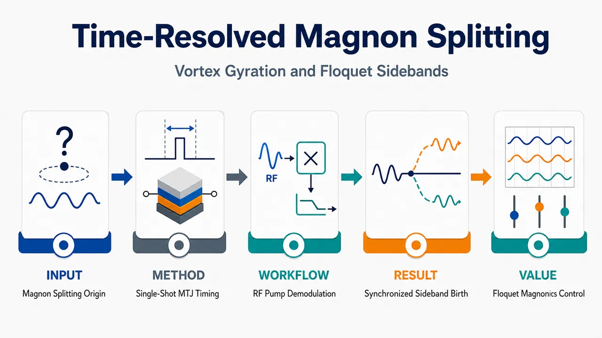
研究问题强射频驱动磁涡旋圆盘时，传统高频方位自旋波如何最先转化为低频涡旋回旋与高频 Floquet 自旋波频梳？核心要解决的是：频率梳形成中，涡旋回旋背景和 Floquet 侧带究竟谁先出现，还是由同一个非线性散射事件同步诞生。创新方法将磁涡旋圆盘嵌入高磁阻 MTJ，用单次时间分辨微波电测量直接捕捉纳秒级瞬态；通过 I/Q 解调同时追踪涡旋回旋模 |g⟩ 与下侧带 SB− 的孵化延迟。Aha 点是用“逐事件同步延迟”证明首发过程不是普通混频，而是 |m=-1⟩ 受迫自旋波三波分裂为 |g⟩ 回旋磁振子和 m=-2 的 Floquet 自旋波。工作流程输入为接近 |m=-1⟩ 方位自旋波频率的强射频脉冲，施加到含 45 nm CoFeBSi 磁涡旋圆盘的 MTJ 器件；MTJ 将磁化涨落转成电压 V(t)，频谱仪先定位回旋峰、驱动峰和频梳侧带；80 GSamples/s 示波器记录单次时间轨迹；对 f_g、fᵣf、fᵣf−f_g 三个频率做 I/Q 解调和低通滤波；逐条轨迹提取 τ_g 与 τ_SB−；最终输出三波分裂通道、频梳结构和同步孵化证据。关键结果当射频频率靠近 5.5 GHz 的 |m=-1⟩ 模并超过阈值时，低频回旋功率突然增强，同时出现以 f_g≈0.6 GHz 为间隔、围绕 fᵣf 排列的 Floquet 频率梳；SB− 是除驱动峰外最强侧带。回旋模与 SB− 的孵化延迟逐事件一一对应，可短至约 3 ns，并在散射阈值处发散到超过 10 s，直接证明二者同步生成。应用价值该研究把磁涡旋频率梳的解释从稳态频谱推进到纳秒级因果动力学，为可控非线性磁振子学、Floquet 自旋波工程、片上微波频率梳和磁振子信息处理提供机制基础；同时给出区分真实 Floquet 态与微波混频伪影的实验范式。第一部分：核心概览 (Overview)
磁涡旋圆盘中，高频一阶方位自旋波在强射频驱动下会非线性散射，产生低频涡旋回旋模与高频Floquet 自旋波频梳。该研究通过嵌入磁隧道结的单次时间分辨微波电测量，直接捕捉两个散射产物的同步出现，证明首发机制是三波分裂：受迫的 (|m=-1ångle) 常规本征模分裂为 (|gångle) 回旋磁振子与 (m=-2) Floquet 侧带态。关键贡献在于把过去稳态频谱层面的 Floquet 频梳解释推进到纳秒级单次动力学证据，消除了“先有回旋 Floquet 背景还是先有 Floquet 自旋波”的因果歧义。
---
第二部分：结构化快速回顾
《Time-resolved observation of magnon splitting into vortex gyration and Floquet spin waves》（None，）
背景
磁涡旋圆盘具有低频涡旋芯回旋模与高频受限方位自旋波模。既有稳态实验已观察到强驱动下的频率梳，并将其解释为涡旋回旋背景上的 Floquet 自旋波，但缺少单次时间分辨证据来确认初始散射路径。
方法
45 nm 厚 CoFeBSi 圆形磁体嵌入 MTJ，直径 200–1000 nm，每种直径约 10 个器件；MTJ 磁阻 180%，300 nm 器件电阻 320 Ω。利用频谱仪与 80 GSamples/s 示波器记录电压 (V(t))，通过 I/Q 解调追踪 (|gångle)、(SB⁻) 与驱动频率处信号的时间演化。
结果
当射频驱动接近 (|m=-1ångle) 模频率并超过阈值时，回旋功率突然增强，并出现以 (fₘ̊ ᵣf+k f_g) 为间隔的频梳。(SB⁻) 是除驱动峰外最强侧带。回旋模与 (SB⁻) 的孵化延迟逐事件一一相关，可短至 3 ns，并在散射阈值处发散。
讨论
首发散射过程为
[
|m̊ rfångleₘ₌₋₁i̊ghtarrow |gångleₘ₌₊₁+|SB⁻ångleₘ₌₋₂.
]
能量守恒给出 (fₘ̊ ᵣf-f_g) 侧带，方位角动量守恒给出 (m=-2) 伴随态。同步诞生证明其为三波分裂，而非先有回旋再由混频伪造侧带。
局限
时间窗限制使阈值附近孵化时间发散的精确函数形式无法从示波器数据提取；(SB⁻) 信噪比较低，解调滤波带来约数 ns 时间精度限制；后续非线性级联与驱动态如何转化为同方位数 Floquet 稳态仍未解决。
结论
强射频泵浦下，磁涡旋圆盘最先发生的非线性事件是常规 (|m=-1ångle) 方位自旋波的三波分裂，同步生成涡旋回旋磁振子与 Floquet 自旋波，随后可能触发更多侧带填充与非线性级联。
---
第三部分：逐章节冷凝解析 (Section-by-Section Condensing)
Abstract
- Forced azimuthal spin waves split into gyration and Floquet modes
强迫激发频率位于磁涡旋圆盘一阶方位自旋波范围内时，会散射到涡旋回旋模，并允许 Floquet 自旋波频梳增长；核心现象明确表述为 *"Forced excitations at frequencies in the range of the first order azimuthal spin waves of a magnetic disk in the vortex state are known to scatter into the vortex gyration mode, thereby allowing the growth of Floquet spin waves forming a frequency comb."*
- Time-resolved microwave measurements reveal transient emergence
研究重点不是稳态频谱，而是动力学建立过程；采用时间分辨微波电测量，原文给出 *"We study the temporal emergence of this dynamical state using time-resolved microwave electrical measurements."*
- Most intense Floquet mode and gyration share a common incubation delay
最强 Floquet 模与回旋模同步出现，并共享一个孵化延迟；该延迟在散射阈值处发散，证据为 *"The most intense Floquet mode emerges synchronously with the gyration mode after a common incubation delay which diverges at the scattering threshold."*
- Delay is minimized at resonance and can reach 3 ns
孵化延迟在驱动与一阶方位自旋波共振时最短；最高测试功率下可短至 3 ns，原文为 *"This delay is minimal when the drive is resonant with one of the first order azimuthal spin waves. It can be as short as 3 ns for the maximum investigated power."*
- First scattering mechanism is three-wave splitting
首发机制被归结为普通方位本征模分裂成一个回旋磁振子与一个 Floquet 自旋波的相干对；结论句为 *"We conclude that the first-to-occur scattering mechanism is the three-wave splitting of a regular azimuthal eigenmode into a coherent pair formed by a gyration magnon and a Floquet spin wave."*
---
Main text (unsectioned)
- Vortex disks provide a clean platform for magnonics and micromagnetic theory
磁涡旋圆盘兼具应用与基础模型价值，被用于磁振子学和微磁理论检验；背景定位为 *"Magnetic disks having a vortex ground state have become a popular system both for magnonics applications and as model test bench for micromagnetic theories."*
- Eigenmode hierarchy separates low-frequency gyration from high-frequency confined spin waves
本征谱包括低频涡旋芯平移回旋模和高一个数量级以上的受限自旋波；关键描述为 *"Their eigenspectrum comprises a low frequency mode –the translational motion of the vortex core, most often referred to as the gyration mode–, as well as the confined spin wave modes that have frequencies higher by typically more than one order of magnitude."*
高频模用径向指标 (n) 与方位指标 (m) 表征，定义为 *"The high frequency modes are conveniently described by a radial index n and an azimuthal index m, that respectively count the number of nodes along the disk radius and in the azimuthal direction along half a perimeter."*
- Prior work established hybridization, degeneracy lifting, core switching, and comb formation
早期研究方向包括自旋波与回旋模杂化、相反方位数自旋波简并解除、方位自旋波驱动涡旋芯极性翻转，以及高频自旋波与涡旋芯相互作用；相关背景为 *"The hybridization of the azimuthal spin waves with the gyration mode was first shown to lift the degeneracy between spin waves of opposite azimuthal indices"*，以及 *"active research was conducted on the possibility to switch the polarity of the vortex core by interaction with azimuthal spin waves."*
- Numerical studies predicted gyration-induced frequency combs
Gao 等数值发现入射自旋波束不仅强迫激发涡旋芯，还诱导回旋并产生以回旋频率为间隔的频率梳；原文表述为 *"core gyration is induced and the excitation spectrum splits into a frequency comb with finger spacing being the gyration frequency."* Wang 等进一步提出物理起源为 (m=1) 方位自旋波与回旋模的汇合和分裂散射：*"the physical origin of such frequency comb is the confluence and splitting scattering of m = 1 azimuthal spin waves with the gyration mode of the vortex core."*
- Earlier experiments confirmed steady-state combs but lacked single-shot transient causality
Heins 等实验证实频率梳，阈值行为类似其他磁平台中的三波过程；原文为 *"The emergence of the frequency comb was then confirmed experimentally"*，且现象 *"bore a strong similarity with three-wave processes observed in other magnetic platforms."*
但此前只理解稳态和事件平均瞬态，未深入单次散射动力学：*"These earlier works provided a clear understanding of the steady state situation and its event-averaged transient but did not dig into the dynamics of how azimuthal spin wave modes scatter into vortex core gyration and how they adapt to the resulting Floquet context."*
- Single-shot measurements are required because scattering is stochastic
散射通常具有随机性，事件平均会掩盖关键时序；原文明确指出 *"Since scattering is most often a stochastic process, some features of this process can only be revealed by real-time single-shot experiments."*
- MTJ embedding enables high-sensitivity time-resolved electrical detection
磁涡旋点嵌入 MTJ 后，可高灵敏记录磁化涨落导致的电阻变化；核心方法为 *"Time-resolved, high sensitivity measurements are enabled thanks to the embedding of the vortex dot in a magnetic tunnel junction."*
这种方案允许同时探测两个分裂产物：*"This allows the coincidence detection of the two magnon modes that split from the azimuthal spin waves, thereby demonstrating the three-wave nature of the scattering process."*
- Device geometry and electrical properties are quantitatively specified
样品为 45 nm 厚 CoFeBSi 合金圆形磁体，涡旋基态，直径 200–1000 nm，每个直径通常约 10 个器件；MTJ 磁阻 180%，300 nm 直径电阻 320 Ω。原文证据为 *"We work with 45-nm-thick circular magnets made from a CoFeBSi alloy with a vortex ground state. We studied magnets of diameters ranging from 200 to 1000 nm, with typically 10 devices per diameter. The magnets are embedded in magnetic tunnel junctions (MTJs) of magneto-resistance 180% and resistance of 320 Ω for a diameter of 300 nm."*
- Bandwidth and lumped-element behavior support GHz detection
MTJ 与焊盘足够小，可视为集总元件，带宽超过 20 GHz；原文为 *"The MTJs and their contact pads are small enough to be considered as lumped elements, with bandwidth exceeding 20 GHz."*
- MTJ voltage detects resistance fluctuations from spin excitations
磁化涨落通过 MTJ 电阻变化 (δ R) 转换成电压 (V)，送入等效 50 Ω 负载放大器；原文为 *"The spin fluctuations within the magnet are studied by sensing the voltage V that the MTJ delivers to an amplifier equivalent to a 50 Ω load."*
系统对一阶方位对称激发最敏感，包括回旋模与 (m=±1) 自旋波：*"Because of the symmetry of our system, the largest δR’s correspond to magnetization fluctuations of first order azimuthal symmetry; this includes the vortex gyration and the spin waves with azimuthal indices m = ± 1."*
- Thermal spectrum identifies gyration and spin-wave resonances
仅热涨落与 ±200 mV 直流偏置即可显露离散谱线；主涨落为 597(26) MHz，归属为回旋模；其他频率为 4.13(170) GHz、5.49(240) GHz、7.0(≈300) GHz。原文为 *"The main fluctuation is at 597(26) MHz and it is ascribed to the gyration"*，以及 *"The frequencies of the other fluctuators are 4.13(170) GHz, 5.49(240) GHz and 7.0(≈300) GHz, where the numbers in parentheses are the FWHM linewidths in MHz."*
- The 4.13 GHz mode is assigned to the fixed layer and excluded
4.13 GHz 模不响应射频刺激，被视为 MTJ 固定层模式；原文为 *"We believe that the mode at 4.13 GHz belongs to the fixed layer of the MTJ and, as it will not react to the rf stimuli we shall disregard it."*
- Micromagnetic simulations reproduce mode sequence
Magnum.np 使用测得 (Mₛapprox500 kA/m) 与估计交换刚度 10 pJ/m；预测 (f_g=585 MHz)、(fₙ₌₀,ₘ₌₋₁=5.9 GHz)、(fₙ₌₀,ₘ₌₊₁=7.45 GHz)、(fₙ₌₁,ₘ₌₋₁=8.64 GHz)。原文为 *"We performed Magnum.np eigenmode simulations using the measured magnetization (Ms ≈ 500 kA/m) and an estimated exchange stiffness of 10 pJ/m."* 以及 *"The predicted eigenmodes include the gyration of frequency fg = 585 MHz, and confined spin wave modes of frequencies fn=0,m=-1 = 5.9 GHz, fn=0,m=+1 = 7.45 GHz and fn=1,m=-1 = 8.64 GHz mode."*
- Experimental 5.49 and 7.0 GHz modes are assigned to (m=-1) and (m=+1)
数值与实验频率合理一致，因此将实验 5.49 GHz 与 7.0 GHz 分别对应到 (n=0,m=-1) 与 (n=0,m=+1)；原文为 *"Owing to the reasonable numerical agreement, we assign the n = 0, m = −1 and the n = 0, m = +1 modes at 5.9 and 7.45 GHz to their experimental counterparts at 5.49 and 7.0 GHz."*
- Rf field creates cross-talk, forced magnetic excitation, and microwave mixing
3 μm 宽导线位于 MTJ 上方 1.2 μm，射频源上升沿 <100 ps；到达场线功率 2.8 dBm 时产生约 1 mT 射频场。原文为 *"Each MTJ is placed 1.2 μm below a 3 μm-wide wire"*，*"fast rising (<100 ps) rf current"*，以及 *"The generated rf field is of the order of 1 mT for 2.8 dBm of power arriving at the field line."*
三种效应分别为串扰、磁性受迫激发与混频；关键句为 *"It has three effects."*
- Linear-regime mixing produces only first sidebands and cannot explain combs
若电阻在 (fₘ̊ fₗᵤcₜ) 处涨落，射频电流与电阻涨落混频产生 (fₘ̊ ᵣf± fₘ̊ fₗᵤcₜ) 两个侧带，功率满足 (Pₘ̊ SBproptoδ Rₘ̊ fₗᵤcₜ Iₘ̊ ᵣf²)。原文公式说明为 *"This leads to two sidebands (SB+ and SB−) at the frequencies frf ± ffluct, each carrying a power: PSB ∝ δRfluct . Irf2."*
线性混频只产生第一侧带，不可能产生频率梳：*"We emphasize that in the linear regime this frequency mixing yields only the first lateral sidebands while the cross-talk yields the peak at frf. The spectrum is thus trident-like and by no means this amplitude modulation effect could generate a frequency comb."*
- Above threshold, gyration power abruptly increases and comb appears
当 (fₘ̊ ᵣf) 靠近 (fₘ₌₋₁) 或射频功率增大，系统突变到强回旋与高频频梳状态；原文为 *"the system abruptly transits into a different dynamical regime in which the device delivers a substantially larger power at the gyration frequency with profoundly modified spectral features at higher frequencies, including a frequency comb."*
- Scattering region appears as a bright tongue centered around (m=-1) resonance
回旋功率定义为 (int₁₀ MHz¹ GHz|tilde V(f)|²df)，在 (Pₘ̊ ᵣf,fₘ̊ ᵣf) 图中形成围绕 (fₘ₌₋₁) 的明亮舌状区域；原文为 *"The appearance of the strong gyration signal is accounted for by the well-defined bright tongue which is rather symmetric about fm = −1."*
这种转变在所有研究器件中出现，直径覆盖 200 nm–1 μm：*"Such transition was observed in all the investigated devices (i.e. for diameters in the 200 nm to 1 μm range) provided the drive frequency is tuned to their proper frequencies."*
- Frequency comb is centered on the drive and spaced by (f_g)
新频梳满足 (fₘ̊ ᵣf+k f_g)，(kinZ)；原文为 *"there appears concurrently an additional frequency comb centered about the drive frequency and spanning the values frf + kfg, with k ∈ ℤ."*
- Lower first sideband is the dominant scattering partner
(SB⁻) 即 (k=-1) 是除驱动峰之外最强峰，符合能量守恒所要求的伴随准粒子频率 (fₘ̊ ᵣf-f_g)；原文为 *"The sideband SB− (i.e. k = −1) is systematically the most intense one after the peak at the drive frequency."* 以及 *"the scattering of the forced mode into the gyration mode must generate a companion quasi-particle of energy frf − fg to conserve energy."*
- Proposed first splitting channel is non-degenerate three-wave splitting
首发机制写为
[
|m̊ rfångleₘ₌₋₁i̊ghtarrow |gångleₘ₌₊₁+|SB⁻ångleₘ₌₋₂.
]
原文直接给出 *"We conclude that the first-to-occur scattering mechanism is thus very likely to be: (|rfångleₘ₌₋₁ xrightarrowsplitting |gångleₘ₌₊₁+ |SB⁻ångleₘ₌₋₂)."*
该分裂远离简并，在非线性磁振子学中不常见：*"Note that the splitting is very far from degenerate, which is an unusual situation in non-linear magnonics."*
- Floquet interpretation is supported by disappearance of static-vortex eigenmodes
过阈值后，非相干热回旋涡旋变为时间周期回旋涡旋，为其他激发提供 Floquet 背景；原文为 *"The ground state on which the magnetic excitations reside ceases to be a non-coherently (thermally-driven) gyrating vortex and becomes a time-periodic gyrating vortex, supplying a Floquet context to the other eigenexcitations."*
阈值以下易检测的静态涡旋本征模突然消失，并由 (fₘ̊ ᵣf+k f_g) 新谱线替代：*"the regular eigenmodes of the static vortex that were easy to detect in sub-threshold regime disappear suddenly and are replaced by the new spectral features with different frequencies."*
- Zero-dc-bias test separates real states from microwave mixing artifacts
将 (Iₘ̊ dc=0) 可消除对真实模的直接灵敏度但保留混频；原文为 *"This question is conveniently answered by setting Idc = 0 because this suppresses the direct sensitivity to the modes while maintaining the mixing phenomena."*
(|k|>1) 谱线在无直流偏置时完全消失，证明它们是真实被填充态：*"the gyration peak and the sidebands for |k| > 1 entirely disappear from the spectra when the dc bias is suppressed. This proves that the spectral lines for |k| > 1 correspond to true states and that these states are populated."*
(k=±1) 侧带不消失但 (SB⁻) 下降 3 dB，说明真实态和混频均贡献：*"SB− just decreases by 3 dB... Still, this reduction of the |k| = 1 sideband amplitude is a proof of the existence of populated real states also for k = ± 1."*
- Single-shot oscilloscope traces reveal delayed gyration onset
示波器替代频谱仪后记录射频突加后的 (V(t))；前数 ns 主要是射频串扰，随后出现慢速回旋振荡。原文为 *"in the first ns, V(t) almost only reflects the cross-talk due to the fast-rising rf field at frf. Later, a smaller signal at the gyration frequency can be perceived as an added slower oscillation."*
- I/Q demodulation tracks modal populations with about 3 ns resolution
模人口 (n_f(t)) 由下变频信号模值给出：
[
n_f(t)proptołeft|mathcal Fₘ̊ ₗₒw(V(t)eⁱ²π ft)i̊ght|.
]
低通截止设为 (f_g)，既分离侧带又保持 (π/(2f_g)approx3) ns 时间分辨率；原文为 *"This value enables the separate tracking of the populations responsible for the individual sidebands, while maintaining a time resolution of π/(2fg) ≈ 3 ns."*
- Incubation delay is stochastic, power- and frequency-dependent, and can be 3 ns
回旋孵化延迟 (τ_g) 定义为达到平均稳态值 -3 dB 内的时间；原文为 *"We thus define the 'incubation delay' τg of the gyration as the time required to reach within 3 dB of its average steady state value."*
(τ_g) 随机波动，偶尔短至 3 ns：*"This delay τg fluctuates stochastically and can occasionally be as short as 3 ns."*
- Delay diverges at the scattering boundary and is minimal at (m=-1) resonance
示波器时间窗无法给出精确发散形式，但频谱仪显示阈值边界处 (τ_g>10) s；原文为 *"τg diverges (i.e. exceeds 10 s) when reaching the border of the scattering region."*
平均 (τ_g) 在 (fₘ̊ ᵣf=5.5 GHz) 最小，即与常规 (m=-1) 模共振：*"The mean value of τg is clearly minimal when frf = 5.5 GHz, i.e. when the drive is resonant with the regular eigenmode m = −1."*
- Resonant delay minimum identifies the scattering parent as off-resonantly excited (|m=-1ångle)
(τ_g(f)) 类似 (1/ḩi''(f))，说明准粒子 (|m̊ rfångle) 是受迫激发的 (|m=-1ångle) 常规本征模；原文为 *"This dependence of τg with the carrier frequency bears some similarity with 1/χ''(f), i.e. the inverse of the susceptibility of the m = −1 mode."* 以及 *"the quasi-particle |rf⟩ that scatters into the gyration mode is an off-resonantly excited |m = −1⟩ regular eigenmode."*
- Azimuthal-number conservation assigns (m=-2) to (SB⁻)
受迫模与回旋模方位数相反；总方位数守恒要求伴随态为 (m=-2) Floquet 态。原文为 *"The forced mode |rf⟩ that scatters and the gyrotropic mode |g⟩ thus share the opposite azimuthal numbers."* 以及 *"Since the total azimuthal number must be conserved in the scattering process, this scattering picture entails that the companion mode |SB−⟩ is a Floquet state of azimuthal character m = −2."*
- (SB⁻) and gyration grow synchronously in single-shot traces
如果 Eq. 2 成立，(fₘ̊ ᵣf-f_g) 伴随准粒子应与回旋磁振子同时发射；通过 (SB⁻) I/Q 解调检验。原文为 *"the companion quasi-particle of energy frf − fg should be emitted simultaneously with the gyration magnon. Let us check this by time-resolving the population of the Floquet mode k = −1."*
由于低信噪比，(τₘ̊ SB^₋) 阈值设为稳态平均值下 2 dB，且高于纯混频贡献；原文为 *"τSB- is defined with an amplitude threshold set at 2 dB below our best estimation of the average steady state level"*，以及 *"it is above the contribution of the sole microwave mixing part."*
- One-to-one delay correlation demonstrates three-wave splitting
(τ_g) 与 (τₘ̊ SB^₋) 独立提取后逐事件一一相关；原文为 *"there is a one-to-one correlation between the independently extracted τg and τSB-."*
结论为 (k=-1) Floquet 模与回旋模同时诞生，散射本质是三波分裂：*"The k = −1 Floquet mode and the gyration mode are born simultaneously, such that the scattering is in fact a thee-wave splitting."*
- Final physical conclusion resolves the Floquet causality problem
Floquet 背景与 Floquet 自旋波并非先后关系，而是由首发散射同步生成；原文为 *"The appearance of the Floquet context related to the gyrating ground state and of the Floquet spin wave is thus not an egg-and-chicken problem: the two are generated synchronously by the first-to-occur scattering process."*
- Future unresolved dynamics include nonlinear cascades and parent-mode transformation
后续时间演化未解，首次分裂可能启动非线性级联并逐步填充其他侧带；原文为 *"The subsequent time evolution of the system is an unresolved problem that will deserve attention in the future as the first splitting likely initiates a cascade of non-linear interactions."*
另一个开放问题是最初被驱动的常规本征态如何演化或被同方位数 Floquet 模取代：*"it would interesting to determine the path taken by the firstly driven regular eigenstate to later evolve into, or be replaced by a Floquet mode of same azimuthal number when in the steady state regime."*
---
Acknowledgements
- Funding and intellectual support are specified
经费来自 Horizon Europe 项目 NIMFEIA，资助协议号 101070290；讨论支持来自 Radboud University 的 L. Körber 与 J. H. Mentink。原文为 *"We acknowledge financial support from the EU Research and Innovation Programme Horizon Europe under grant agreement n°101070290 (NIMFEIA)."* 以及 *"We thank L. Körber and J. H. Mentink from Radboud University for insightful discussions."*
---
DATA AVAILABILITY
- Data are openly available
支撑结果的数据公开可得；原文为 *"The data that support the findings of this article are openly available."*
---
Appendices
- Appendices validate timing metrics and signal-processing separation
附录集中解决三个方法学风险：孵化时间阈值定义是否稳健、(SB⁻) 是否由真实 Floquet 态贡献、I/Q 解调与滤波是否引入伪延迟。总入口为 *"Appendices"*，各部分标题分别为 *"Appendix A: Reliability of the time metrics"*、*"Appendix B: Separating the contributions of microwave mixing and Floquet band population to sideband amplitude"*、*"Appendix C: Signal processing steps."*
---
Appendix A: Reliability of the time metrics
- Time metrics are tested on 100 random time traces
解调流程用于 100 条随机时间轨迹，分别确定刺激到达时间、回旋孵化时间与 (SB⁻) 孵化时间；原文为 *"The demodulation procedure (Eq. 3) is applied on 100 randomly chosen time-traces to deduce (i) the time at which the stimulus is applied with respect to the trigger... and (ii) the incubation times of the gyration signal... and of the SB- signal."*
- Thresholds span 10%–100% of steady-state level
阈值选择为稳态信号的 10%、20%、…、100%，稳态窗口为泵浦开始后 950 ns–1 μs；原文为 *"The investigated thresholds are chosen as fractions (10%, 20%,…,100%) of the steady state signal level"*，以及 *"we define as the time-averaged demodulated amplitude on a time window from 950 ns to 1 μs after starting the pump."*
- Non-switching traces are automatically rejected by SNR criterion
未发生散射的轨迹会呈无阶跃曲线，并由低信号判据识别；判据为 (nₘ̊ ᵣf(t)/δ nₘ̊ ᵣf<5) 对 (tin[0.95,1 μ s]) 成立。原文为 *"They can be automatically identified by their low signal which obeys the significance-above-noise criterion (nᵣf(t)/δ nᵣf < 5), ∀ (t ∈ [0.95,1 μs])."*
- Cross-talk onset timing precision exceeds 0.5 ns except unreasonable 100% threshold
串扰信噪比很高，刺激到达样品时间测定精度优于 0.5 ns；原文为 *"For the cross-talk, the SNR is very large and the time at which the stimulus arrives at the sample is always found with a precision greater than 0.5 ns, except if an unreasonable threshold of 100% is chosen."*
- Instrumental delay is about 25 ns and corrected
MTJ 信号比任意波形发生器触发晚约 25 ns，由触发延迟与测量路径群延迟组成；主结果均校正该延迟。原文为 *"The MTJ signal arrives circa 25 ns after the trigger signal"*，以及 *"This instrumental delay is corrected for in all reported measurements, except in Fig. 6."*
- Low-pass filter slew causes about 5 ns threshold-dependent crossing shift
阈值从 10% 提高到 90% 时，交叉时间延迟约 5 ns，来源于低通滤波器 slew rate；原文为 *"The crossing of the threshold is delayed by 5 ns if the threshold is increased from 10% to 90%. This reflects the slew rate of the low pass filter used in the demodulation procedure."*
- Main manuscript uses -3 dB for gyration and cross-talk, -2 dB for lower sideband
主结果中，串扰和回旋阈值设为稳态信号的 -3 dB，即约 70%；(SB⁻) 使用 -2 dB，即约 80%。原文为 *"All the reported results in the main manuscript were done by setting a threshold at -3 dB (70%) of the steady state signal of the cross-talk and of the gyration, and -2 dB for the lower sideband."*
- Threshold choice between 20% and 80% does not change conclusions
对回旋孵化时间，阈值在合理范围内导致均值误差约从 -4 ns 到 +2 ns，不影响总体结论；原文为 *"In the range of the 30% and 80% interval of threshold, the mean value of the error in τg passes from -4 ns to +2 ns"*，以及 *"if taken within that a 20-80% range, the exact choice of the threshold does not influence our overall conclusions."*
---
Appendix B: Separating the contributions of microwave mixing and Floquet band population to sideband amplitude
- Central ambiguity is whether (fₘ̊ ᵣf-kf_g) lines are real states or mixing products
关键方法学问题是新谱线是否代表真实 Floquet 模，还是仅由射频与回旋混频产生；原文为 *"it is essential to assess whether the novel spectral feature at (fᵣf − k fg) corresponds to a real state (the Floquet mode) with the same frequency, or if this spectral feature simply results from microwave mixing between the applied rf and the gyration."*
- Zero-bias test in main text suppresses direct mode sensitivity while preserving mixing
通过 (Iₘ̊ dc=0) 区分真实态与混频贡献；原文为 *"This question was answered in the main manuscript by setting (Idc = 0) and suppressing the direct sensitivity to the modes while maintaining the mixing phenomena."*
- Synchronous generation predicts single-step (SB⁻) transient
如果 Eq. 2 正确，混频贡献与 Floquet 模贡献同步，因此 (SB⁻) 应为单阶跃；原文为 *"If Eq. 2 was correct, the mixing contribution... and the Floquet mode contribution... are synchronous, such that (nSB₋(t)) is expected to be a single-stepped curve."*
- Asynchronous generation would yield a two-step sideband trace
若 Floquet 模与回旋不同步，(SB⁻) 会出现两级阶跃，其中只有一级与回旋同步；原文为 *"Conversely if these two contributions were not synchronous, the (nSB₋(t)) curve would be a two-stepped function with only one of the two steps coinciding with the rise of (ng(t))."*
第二级典型高度约占总信号三分之一，即 -3 dB：*"the height of the second step would typically amount to a third (i.e. -3 dB) to the total signal."*
- Representative traces show single-step (SB⁻) coincident with gyration
五组随机代表性时间轨迹显示 (SB⁻) 总是单阶跃，且与回旋阶跃重合；原文为 *"They show that the (nSB₋(t)) is always single-stepped, and that the step coincides with that of the gyration signal (ng(t))."*
这构成 (SB⁻) 真实态同步填充的额外证据：*"This is an additional proof that the spectral line SB− correspond to the population of a true state that is populated synchronously with the gyration."*
- Control condition without three-magnon splitting is included
图 9 底部给出 (fₘ̊ ᵣf=4.8 GHz)、功率 10.8 dBm 时无三磁振子分裂；图注为 *"Bottom panel: for a forcing frequency of 4.8 GHz and a power of 10.8 dBm, that does not lead to three-magnon splitting."*
---
Appendix C: Signal processing steps
- Amplification and frequency-domain acquisition parameters are specified
MTJ 电压经低噪放大器放大，模拟 3 dB 带宽 10 MHz–15 GHz，100 MHz 以上噪声系数 5 dB；频谱仪分辨带宽 2 MHz。原文为 *"The voltage V(t) delivered by the MTJ is amplified by a low noise amplifier of 3 dB analog bandwidth being 10 MHz to 15 GHz. Its noise figure is 5 dB at frequencies above 100 MHz."* 以及 *"For the frequency-domain measurements, the amplified voltage is sent to spectrum analyser of resolution bandwidth 2 MHz."*
- Time-domain acquisition uses 80 GSamples/s oscilloscope and 25 GHz bandwidth
单刀双掷路由器把放大信号送到采样率 80 GSamples/sec 的示波器，模拟带宽 25 GHz；原文为 *"the amplified voltage to an oscilloscope of sampling rate of 80 GSamples/sec. The analog bandwidth of the instrument is 25 GHz."*
- Noise-free harmonic references are constructed for demodulation
示波器另一通道记录刺激，用于构造 (fₘ̊ ᵣf) 无噪复谐波；每个 (fₘ̊ ᵣf) 下重新由 (V(t)) 谱分析确认 (f_g)，再构造 (f_g) 与 (fₘ̊ ᵣf-f_g) 参考信号。原文为 *"Another channel of the oscilloscope is used to record the stimulus and to mathematically construct a noise-free complex harmonic signal at (fᵣf)"*，以及 *"Noise-free complex harmonic signals at (fg) and (fᵣf − fg) can then be constructed."*
- Effective demodulation bandwidth is 15 GHz
Eq. 3 在全带宽信号上数值实现，受放大链路限制的有效解调带宽为 15 GHz；原文为 *"As Eq. 3 is implemented numerically on full bandwidth signals, the effective demodulation bandwidth is 15 GHz."*
- Low-pass filter cutoff at (f_g) balances time resolution and image rejection
低通滤波器 (mathcal Fₘ̊ ₗₒw) 截止设为 (f_g)，用于抑制镜像频率；原文为 *"The low pass filter (Fₗₒw) used to reject the image frequencies is set at (f_g), with is a good compromise between time-resolution and rejection capability."*
- Spectral leakage creates only a reproducible near-zero-time artifact
低通滤波器频率选择性不完美，使强 (nₘ̊ ᵣf) 在 (SB⁻) 估计中泄漏；仅在 (nₘ̊ ᵣf) 上升期间影响 (nₘ̊ SB^₋)，产生 (tin[-3,3]) ns 伪峰。原文为 *"The imperfect frequency selectivity... leads to some spectral leakage of (nᵣf) into the estimation of the population of the SB− mode."* 以及 *"leads to the artefact at (t ∈ [−3, 3]) ns."*
- Leakage can be corrected because cross-talk is reproducible
该泄漏伪影系统且可重复，可通过从 (nₘ̊ SB(t)) 中减去低通后的 (nₘ̊ ᵣf) 分量进行修正；原文为 *"Since (nᵣf) is reproducible, this leakage artefact is systematic but reproducible. It can be corrected for by systematically subtracting a low-passed fraction of (nᵣf) when estimating (nSB(t))."*
---
第四部分：深度理解与语言支持 (Understanding & Nuance)
1. 术语解析
- Gyration mode
指磁涡旋芯围绕平衡位置的低频平移运动，不是整个磁体均匀进动。语境中对应 (|gångle)，频率约 0.5–0.6 GHz。英文 *"the translational motion of the vortex core"* 强调其空间位移性质，而非局域自旋角度振荡。
- Floquet spin waves
指存在于时间周期性背景上的自旋波本征态。这里的背景是强回旋的涡旋基态，周期为 (1/f_g)。Floquet 态不是静态涡旋的普通本征模，而是准能量谱表现为 (fₘ̊ ᵣf+k f_g) 的频率梳。
- Incubation delay
指从射频泵浦到散射产物达到接近稳态强度所需的等待时间。这里不是仪器延迟，也不是滤波响应时间；通过串扰到达时间校正、阈值稳健性测试、3 ns 分辨率分析排除了主要伪影。
- Three-wave splitting
一个受迫高频磁振子分裂成两个低能/伴随准粒子。这里非常不简并：一个产物是低频回旋磁振子 (f_g)，另一个是高频侧带 (fₘ̊ ᵣf-f_g)。其判据包括能量守恒、方位数守恒、两个产物同步出现。
- Frequency comb
多个离散频率峰按固定间隔排列。这里间隔为回旋频率 (f_g)，谱线为 (fₘ̊ ᵣf+k f_g)。这不同于普通幅度调制产生的三齿谱；线性混频只能产生 (k=±1)，无法产生完整梳状结构。
2. 疑难查证
- 为什么 (SB⁻) 不能简单看成混频伪峰？
射频电流 (Iₘ̊ ᵣf) 与回旋导致的电阻振荡 (δ R_g) 相乘，确实会在 (fₘ̊ ᵣf-f_g) 产生电压分量。因此 (SB⁻) 总包含混频贡献。关键区分在于：若它只是混频，去掉直流偏置后真实模的直接电读出应完全消失，只剩混频；实验中 (SB⁻) 只下降约 3 dB，说明原来有一部分来自真实被填充的 Floquet 态。更强证据是时间轨迹只有单阶跃，且与回旋同步；如果混频和真实态不同时出现，会出现可分辨的两级阶跃。
- 为什么孵化延迟在阈值处发散？
非线性散射类似阈值不稳定性。低于阈值时，受迫模人口不足以克服阻尼，回旋与伴随态无法指数增长；刚过阈值时增长率非常小，达到可检测稳态需要极长时间；远高于阈值时增长率大，延迟可缩短至纳秒级。这里频谱仪观测到边界处 (τ_g>10) s，示波器只覆盖纳秒至微秒窗口，无法拟合完整发散函数。
- 为什么 (τ_g) 在 (|m=-1ångle) 共振处最小？
同样射频功率下，驱动越接近 (|m=-1ångle) 本征频率，磁化响应越强，即 (|m̊ rfångle) 人口越大。非线性三波分裂的增益随母模人口增强，因此到达阈值和进入增长阶段更快。延迟随频率近似类似 (1/ḩi''(f))，反向反映母模磁化率。
- “Floquet 背景”和“Floquet 自旋波”为什么不是鸡生蛋问题？
直觉上，Floquet 自旋波需要时间周期背景；时间周期背景又来自回旋模被强烈激发。若回旋先出现、再重整化自旋波，则 (SB⁻) 应滞后于回旋；若 Floquet 模先出现、再推动回旋，则回旋应滞后于侧带。单次实验显示两者共享同一个孵化延迟，说明首个非线性事件同时产生周期回旋背景和 Floquet 伴随态。
---
第五部分：创新评估与关联 (Synthesis & Novelty)
1. 创新性判断
- 从稳态频梳推进到单次时间因果证据
近年相关工作已在磁涡旋圆盘中观察到频率梳，并提出 Floquet 态解释；短板在于稳态频谱只能证明最终存在梳状模式，无法确认首个散射事件的时序。该研究用单次示波器轨迹直接比较 (τ_g) 与 (τₘ̊ SB^₋)，给出两个产物同步诞生的因果证据。
- 首次把 (SB⁻) 作为真实 Floquet 态与混频伪影分离
侧带极易被误认为射频电流与回旋电阻振荡的普通混频。通过 (Iₘ̊ dc=0) 对照、(|k|>1) 线消失、(SB⁻) 下降 3 dB 而非消失、时间轨迹单阶跃等多重证据，建立了“混频贡献 + 真实态人口”并存的定量图像。
- 明确首发非线性通道的量子数结构
创新点不仅是观察频梳，而是确定首发通道：
[
|m̊ rfångleₘ₌₋₁i̊ghtarrow |gångleₘ₌₊₁+|SB⁻ångleₘ₌₋₂.
]
这将能量守恒、方位数守恒和时间同步性结合起来，使 Floquet 频梳的起源从现象学解释转化为具体三波分裂过程。
- 发现非简并三波分裂的纳秒级阈值动力学
许多非线性磁振子三波过程接近简并分裂；这里一个产物位于约 0.5 GHz，另一个位于约 4.5–5 GHz，高度非简并。孵化时间可短至 3 ns，并在阈值附近超过 10 s，展示了极宽时间尺度的非线性不稳定性。
- 解决 Floquet 态形成的因果悖论
过去 2–5 年的 Floquet 磁振子研究常以周期驱动背景为前提，较少直接回答背景和 Floquet 模如何共同建立。该实验表明回旋背景与 Floquet 自旋波由同一首发三波分裂同步生成，避免了“先有周期基态还是先有 Floquet 侧带”的逻辑循环。
- 为后续研究留下可检验问题
已解决首发事件，但后续频梳扩展仍开放：最初的 (|m=-1ångle) 常规模如何在稳态中演化为或被同方位数 Floquet 模替代；初级产物如何种子化更高阶侧带；非线性级联是否可通过模式选择、阻尼调控或泵浦波形工程控制。这些问题构成下一阶段磁涡旋 Floquet 磁振子学的核心方向。
-
17
📊 含图深析
💡 亮点：非线性光学可读出共线交替磁的八极有序。
📖 展开分析 + 配图
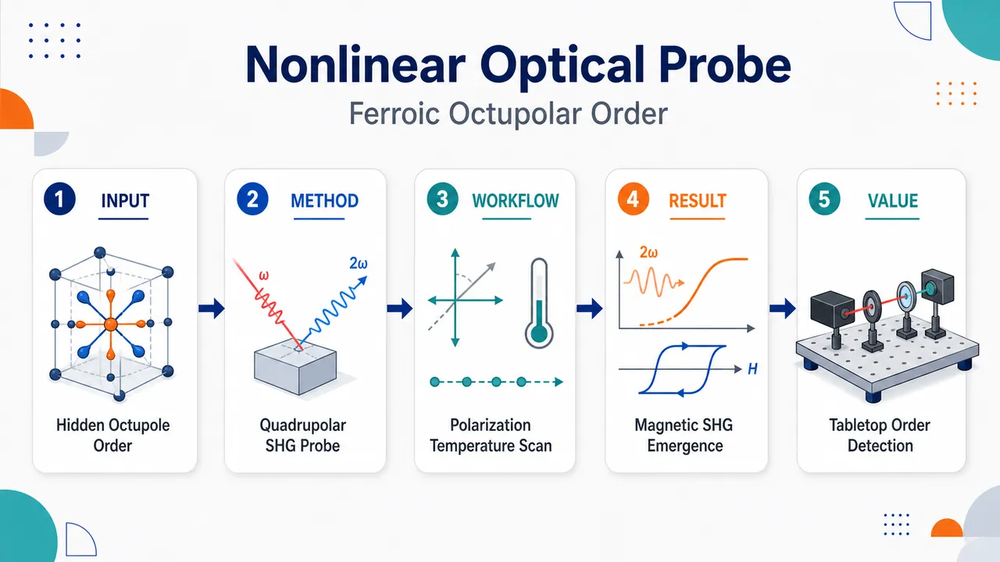
研究问题交替磁体 CoF₂ 虽无净磁化、又具中心对称结构，常规磁测量和线性光学难以看见其隐藏自旋序；核心问题是：如何在电偶极 SHG 被反演对称禁戒、磁偶极贡献又为零的条件下，直接光学读出反铁磁相中的铁型磁八极矩序参量。创新方法利用飞秒二次谐波产生作为对称选择性探针，在倾斜入射与偏振分辨几何中捕捉低于 Néel 温度才出现的时间反演奇性 c-type 电四极非线性磁化率；Aha 点是把微弱的电四极 SHG 信号明确写成由铁型磁八极矩诱导的非线性极化，并用 Co²⁺ 的三光子共振放大这一隐藏多极序信号。工作流程输入为 xz-cut CoF₂ 单晶、1.05 eV 飞秒基频光、1.6–50 K 温度扫描与平行/交叉偏振旋转；样品绕 z 轴倾斜 30° 激活电四极张量元；记录 SHG 方位各向异性和温度曲线；用 4/mmm 与 4′/mmm′ 对称性筛选 i-type 晶格背景和 c-type 磁性张量；排除电偶极与磁偶极机制；输出铁型磁八极矩诱导的电四极 SHG 图像。关键结果低于 T_N=38 K，CoF₂ 的 SHG 图案发生清晰磁相变指纹：交叉偏振由四重花瓣变为二重花瓣，平行偏振强度显著增强；交叉偏振 0° 通道在 T_N 以上完全消失、T_N 以下单调增强，呈纯磁响应；SHG 强度跟随反铁磁序参量平方，拟合需要 i-type 晶格项与 c-type 八极磁性项共同存在；2.12 eV 三光子共振显著增强弱电四极信号。应用价值该研究把 SHG 建立为探测交替磁体铁型八极序的桌面式光学工具，可在无净磁化、中心对称、隐藏自旋序材料中直接读取反铁磁序参量；为交替磁自旋劈裂、多极磁序、磁电响应和未来自旋电子学材料筛选提供非接触、偏振可分辨、对称选择性的实验路径。第一部分：核心概览（Overview）
该研究首次在中心对称、共线反铁磁交替磁体 CoF₂ 中观测到电偶极与磁偶极禁戒的 二次谐波产生（SHG），并将其归因于反铁磁相中的 铁型磁八极矩序参量 (mathbfOM)。核心贡献在于把 时间反演奇性 (c)-type 电四极非线性磁化率 ({}cḩi⁽³⁾(mathbfOM)) 与交替磁隐藏自旋序直接联系起来，给出偏振分辨实验、温度依赖、对称性分析和共振增强机制的闭环证据。该工作把 SHG 扩展为探测 铁型八极序 的桌面式、对称选择性光学工具，在交替磁体隐藏序参量实验表征中具有方法学标志意义。
---
第二部分：结构化快速回顾
《Nonlinear Optical Probing of Ferroic-Octupolar Order Parameter in Collinear Altermagnet》（None，）
背景
交替磁体兼具反铁磁零净磁化与铁磁样自旋劈裂特征，但其隐藏自旋序难以由常规磁ometry或线性光学直接探测。CoF₂ 是金红石结构、中心对称、(d)-wave 交替磁体，其反铁磁相序参量为 铁型磁八极矩。
方法
使用 飞秒 SHG，在 (1.6–50) K 温区、两种偏振几何 (Eømegaparallel E²ømega) 与 (Eømegaperp E²ømega) 中测量 CoF₂ 单晶。样品为 (xz)-cut 晶片，绕面内 (z) 轴倾斜 (30ⁱ̧rc)，基频光子能量 (hbarømega=1.05) eV。
结果
低于 Néel 温度 (T_N=38) K，SHG 偏振各向异性发生显著变化：交叉偏振由四重型转为二重型，平行偏振强度显著增强。交叉几何 (Eømegaperp E²ømega=0ⁱ̧rc) 中，信号在 (T_N) 以上消失、仅在 (T_N) 以下出现，直接显示纯磁起源。
讨论
中心对称性禁戒电偶极 SHG；磁偶极项虽形式允许但在 CoF₂ 中净贡献为零。观测信号必须由 电四极 SHG 解释，其中晶格背景为时间反演偶的 (i)-type ({}ⁱḩi⁽³⁾)，磁有序诱导项为时间反演奇的 (c)-type ({}cḩi⁽³⁾(mathbfOM))。
局限
实验证据主要来自单一材料 CoF₂ 与特定共振能量；绝对张量元数值、畴分布成像、不同交替磁材料的普适性验证仍依赖后续工作。附录与补充材料中部分计算细节未在主体文本完整展开。
结论
SHG 可直接探测交替磁体中的 铁型磁八极序参量。CoF₂ 的 SHG 来自磁八极矩诱导的电四极非线性极化
[
P²ømega=iǎrepsilon₀{}cḩi⁽³⁾(mathbfOM):EømeganablaEømega.
]
---
第三部分：逐章节冷凝解析（Section-by-Section Condensing）
Abstract
Altermagnetic hidden spin order is experimentally difficult to access
交替磁性作为凝聚态物理新概念，具有零宏观磁化但存在隐藏自旋序的核心矛盾。摘要明确指出，交替磁体的隐藏自旋序直接探测仍是难题：*"Despite the absence of macroscopic magnetization, altermagnets host a hidden spin order whose direct detection remains a challenge."* 该问题构成实验设计的出发点。
Forbidden SHG is observed in centrosymmetric CoF₂
CoF₂ 同时具有中心对称晶格与自旋序，常规电偶极 SHG 被禁戒；观测到的信号属于 电偶极与磁偶极禁戒 SHG。摘要中的关键实验事实为：*"we report on the observation of electric and magnetic dipole forbidden optical second-harmonic generation (SHG) in the altermagnet CoF₂ with a centrosymmetric lattice and spin order."*
SHG becomes sensitive to ferrotype magnetic octupole below (T_N=38) K
反铁磁相中，SHG 对 铁型磁八极矩 (mathbfOM) 敏感，而该八极矩即 CoF₂ 的序参量。关键数值为 (T_N=38) K：*"below the Néel temperature (T_N=38) K the SHG signal is sensitive to the ferrotype magnetic octupole (mathbfOM) which is the order parameter in the antiferromagnetic phase."*
The nonlinear polarization is electric-quadrupolar and octupole-induced
观测信号被归因于 磁八极序诱导的电四极非线性极化，形式为
[
P²ømega=iǎrepsilon₀{}cḩi⁽³⁾(mathbfOM):EømeganablaEømega.
]
摘要直接给出机制：*"the altermagnetic spin structure of CoF₂ enables a ferroic-octupole-induced electric-quadrupolar nonlinear polarization (P²ømega=iǎrepsilon₀{}cḩi⁽³⁾(mathbfOM):EømeganablaEømega)."*
Temperature dependence confirms spin origin
温度依赖在 (T_N) 处显示相变，支撑信号来自自旋序而非纯晶格背景：*"The temperature dependence of SHG reveals a phase transition at (T_N) confirming the spin origin of the observed signal."*
Three-photon resonance enhances weak electric-quadrupolar SHG
电四极 SHG 通常很弱，但 Co²⁺ 离子的电子 (d d-d d) 跃迁提供共振增强：*"The SHG response is resonantly enhanced by a coherent three-photon process caused by the electronic (d d-d d) transitions of the Co²⁺ ion."*
---
Introduction.
Altermagnets combine compensated antiferromagnetism with spin-split electronic bands
交替磁体没有净磁化，但存在自旋劈裂能带结构，甚至不依赖原子自旋轨道耦合。关键表述为：*"Although these materials are AFM’s with fully compensated spin arrangement and no net magnetization, they host a spin-split electronic band structure that emerges even without atomic spin-orbit coupling."* 这一区别使其不同于常规反铁磁体和铁磁体。
Momentum-dependent spin splitting produces ferromagnet-like phenomena
动量依赖自旋劈裂导致铁磁样输运和拓扑现象，包括 spin-polarized transport、spin-transfer torque、anomalous Hall effect 等：*"This momentum-dependent spin splitting... gives rise to ferromagnet-like phenomena such as spin-polarized transport, spin-transfer torque, anomalous Hall effect, and unique spin–orbit and topological features."*
Hidden order is invisible to standard magnetometry and many linear optical probes
由于零净磁化，交替磁序参量对常规磁测量不可见：*"this altermagnetic order parameter remains hidden from standard magnetometry and most linear optical techniques because of the absence of a net magnetization."* 因此需要对称敏感、非线性或高阶多极响应探针。
SHG is a symmetry-sensitive probe of charge and magnetic subsystems
二次谐波产生可检测电荷与磁子系统中的对称性破缺，并可分离晶格与自旋贡献：*"The optical second-harmonic generation (SHG) is a sensitive tool of symmetry breaking in both the charge and magnetic subsystems."* 其优势在于通过张量对称性识别隐藏序和相变。
Electric-dipole SHG is forbidden in centrosymmetric crystals
大多数交替磁体具有中心对称性，电偶极 SHG 在体相严格禁戒，但高阶多极项仍可允许：*"In centrosymmetric crystals, which include most altermagnets, the linear electric-dipolar contribution to SHG is strictly forbidden. However, higher-multipolar responses may become allowed."*
CoF₂ is a rutile-type (d)-wave altermagnet with ferrotype magnetic octupole order
CoF₂ 被确定为金红石型 (d)-wave 交替磁体，其 (T_N) 以下序参量为 铁型磁八极矩：*"the ferrotype magnetic octupole (mathbfOM) serves as the order parameter below (T_N) in the rutile-type cobalt difluoride CoF₂ which is the (d)-wave altermagnet."*
The key SHG contribution is time-reversal-odd (c)-type nonlinear susceptibility
反铁磁序出现后，SHG 中新增 时间反演非不变 (c)-type 张量，与磁八极序直接相关：*"Phenomenologically the spin-induced contribution to SHG is described by components of a (c)-type nonlinear susceptibility tensor that are odd under the time-reversal symmetry operation (T)."*
Crystallographic background and spin-induced SHG have distinct symmetry characters
高温顺磁相仅有 (T)-invariant (i)-type tensor 背景；低温反铁磁相新增 (T)-noninvariant (c)-type tensor：*"It emerges exclusively below the Néel temperature (T_N), adding to the crystallographic background described by a (T)-invariant (i)-type tensor."*
---
Results.
Femtosecond SHG directly probes CoF₂ nonlinear optical response
实验采用 飞秒 SHG 技术，覆盖 1.6–50 K 温区，并使用两种偏振几何：(Eømegaparallel E²ømega) 与 (Eømegaperp E²ømega)。关键实验条件为：*"Measurements were carried out in two polarization geometries ((Eømegaparallel E²ømega) and (Eømegaperp E²ømega)) over the temperature range 1.6–50 K."*
Oblique incidence activates otherwise inaccessible tensor components
样品为 (xz)-cut CoF₂ 单晶片，绕面内 (z) 轴倾斜 (30ⁱ̧rc)；基频光子能量为 (hbarømega=1.05) eV。倾斜入射是为了激活法向入射不可访问的非线性张量元：*"The (xz)-cut CoF₂ single crystal platelet was tilted by (30ⁱ̧rc) about the in-plane (z)-axis... This oblique alignment is necessary to activate nonlinear susceptibility tensor components that are inaccessible under normal incidence."*
CoF₂ has rutile structure and orders antiferromagnetically below 38 K
CoF₂ 晶体结构为金红石型，空间群 (P4₂/mnm)，点群 (4/mmm)。在 (T_N=38) K 以下形成共线反铁磁序，自旋沿 (z) 轴：*"Cobalt fluoride CoF₂ crystallizes in the rutile type structure with the space group (P4₂/mnm) (point group (4/mmm)). It develops a collinear AFM order below the Néel temperature (T_N=38) K, with spins directed along the (z)-axis."*
Magnetic symmetry identifies CoF₂ as a (d)-wave altermagnet
反铁磁相磁点群为 (4'/mmm')，该对称性将 CoF₂ 归类为 (d)-wave 交替磁体，并把 (mathbfOM) 确认为序参量：*"The magnetic symmetry (point group (4'/mmm')) identifies CoF₂ as the (d)-wave altermagnet... with the ferrotype magnetic octupole (mathbfOM) acting as the order parameter."*
Ferrotype octupole order produces anisotropic wave-vector-dependent spin splitting
铁型八极序导致强交换自旋劈裂，并且自旋劈裂随波矢方向各向异性变化，这是交替磁体的核心特征：*"A direct consequence of this ferrotype octupolar order is the strong exchange spin splitting, that depends anisotropically on the wave-vector direction (k)."*
Paramagnetic SHG anisotropy is purely crystallographic
在 45 K 即 (T_N) 以上，SHG 仅来自晶体学背景，由 (T)-invariant (i)-type susceptibility tensor) 控制：*"In the paramagnetic phase the SHG signal is purely crystallographic, and it is governed by the (T)-invariant (i)-type susceptibility tensor."*
Parallel and crossed geometries show distinct high-temperature azimuthal patterns
顺磁相中，平行偏振 (Eømegaparallel E²ømega) 呈 二重型 方位图案，交叉偏振 (Eømegaperp E²ømega) 呈 四重型 方位图案：*"These results manifest as twofold and fourfold azimuthal patterns for the parallel... and crossed... polarization geometries, respectively."*
Below (T_N), crossed geometry transforms from fourfold to twofold anisotropy
在 1.6 K 反铁磁相中，交叉偏振 SHG 从 45 K 的四重型 转为 1.6 K 的二重型，显示新增自旋诱导贡献：*"In the crossed geometry the emerging signal changes from the fourfold-type of polarization-rotation anisotropy ((T=45) K, above (T_N)) to the twofold-type ((T=1.6) K, below (T_N))."*
Parallel geometry keeps twofold symmetry but gains low-temperature intensity
平行偏振几何在高低温均为二重型，但低温强度显著上升：*"while in the parallel geometry the signal remains twofold-type at both temperatures. However, its intensity rises significantly at the low temperature."*
A purely magnetic SHG channel appears at crossed geometry (0ⁱ̧rc)
在交叉几何 (Eømegaperp E²ømega=0ⁱ̧rc) 中，高于 (T_N) 无信号，低于 (T_N) 信号出现并随冷却单调增强，是最直接的纯磁响应证据：*"A purely magnetic response is observed when the fundamental polarization is set to (0ⁱ̧rc) for the crossed geometry... the signal is absent above (T_N) and emerges only below the Néel temperature, increasing monotonously upon further cooling."*
Temperature dependence follows AFM order parameter
纯磁 SHG 的温度演化忠实跟随反铁磁序参量：*"faithfully mirroring the temperature dependence of the AFM order parameter."* 图 3 中红色虚线来自中子谱数据获得的 CoF₂ 序参量平方：*"The red dash lines show temperature dependencies of the squared order parameter of CoF₂ obtained from the neutron spectroscopy data."*
Mixed channels contain crystallographic and spin-induced contributions
交叉几何 (45ⁱ̧rc) 与平行几何 (90ⁱ̧rc) 在 (T_N) 以上已有有限信号，说明其中包含晶格背景；低温增强来自磁诱导项叠加：*"the signal in crossed geometry (Eømegaperp E²ømega=45ⁱ̧rc) contains both spin-induced and crystallographic contributions, as evidenced by its finite value above (T_N)."*
Domain distribution does not dominate the measured SHG
晶格项与自旋诱导项之间特殊相位关系使信号对反铁磁畴分布不敏感：*"a specific phase relation of the crystallographic and spin-induced contributions renders the observed SHG signal insensitive to the distribution of AFM domains."*
---
Discussion.
Centrosymmetry forbids electric-dipole SHG in CoF₂
CoF₂ 的点群为 (4/mmm)，具有中心对称性，因此电偶极 SHG 严格禁戒：*"In a centrosymmetric crystal like CoF₂ (point group (4/mmm)) the electric-dipolar mechanism is strictly forbidden."*
Crystallographic higher-multipole SHG contains magnetic-dipole and electric-quadrupole terms
在磁偶极与电四极近似下，晶体学非线性极化为
[
P²ømega=iǎrepsilon₀{}ⁱḩi⁽²⁾:EømegaHømega
+ǎrepsilon₀{}ⁱḩi⁽³⁾:EømegaQømega.
]
原文给出完整形式：*"the crystallographic nonlinear optical polarization (P²ømega) takes the form... (P²ømega=iǎrepsilon₀{}ⁱḩi⁽²⁾:EømegaHømega+ǎrepsilon₀{}ⁱḩi⁽³⁾:EømegaQømega)."*
Magnetic-dipole crystallographic contribution cancels in CoF₂
虽然 (i)-type 磁偶极三阶轴张量形式上允许，但其具体张量元符号交替，导致 CoF₂ 中净 SHG 贡献为零。给出的分量为
(yxz=-xyz)、(yzx=-xzy)、(zyx=-zxy)：*"its specific tensor components ((yxz=-xyz), (yzx=-xzy), (zyx=-zxy)) alternate in sign, yielding a vanishing net contribution to SHG in CoF₂."*
Crystallographic electric-quadrupole SHG explains high-temperature background
电四极晶体学项描述各向异性电荷分布，由 (i)-type (ḩi⁽³⁾) 控制，可解释 (Eømegaperp E²ømega=45ⁱ̧rc) 与 (Eømegaparallel E²ømega=90ⁱ̧rc) 中 (T_N) 以上的背景信号：*"This term reflects an anisotropic charge distribution and is therefore described by an (i)-type tensor (ḩi⁽³⁾). It accounts for the background SHG signal..."*
Time-reversal-even crystallographic tensors cannot explain the low-temperature change
晶体学 (i)-type 分量对时间反演不变，因此对自旋序不敏感，无法解释 (T_N) 以下 SHG 的新增或增强：*"Since its components are (T)-invariant, or in other words insensitive to the spin order, they cannot explain the change in the SHG signal below (T_N)."*
AFM order enables a time-reversal-odd (c)-type nonlinear susceptibility
反铁磁序破坏 (T) 对称性，允许新的 (c)-type 非线性磁化率：*"The onset of AFM order below (T_N) breaks (T)-symmetry, thereby enabling an additional (c)-type nonlinear susceptibility associated with the spin ordering."*
Time-reversal-odd magnetic-dipole SHG cannot explain the data
(c)-type 磁偶极项 (iǎrepsilon₀{}cḩi⁽²⁾:EømegaHømega) 具有非零分量
(zxy=zyx)、(xzy=yzx)、(xyz=yxz)，但在平行几何 (Eømegaparallel E²ømega=90ⁱ̧rc) 中给出零输出，因此不能解释低温信号：*"SHG signal below (T_N) for the parallel geometry... cannot be described, since the tensor (ḩi⁽²⁾c) for this geometry gives zero SHG output."*
The required mechanism is time-reversal-odd electric-quadrupole SHG
总极化被写成晶格 (i)-type 与自旋 (c)-type 电四极项叠加：
[
P²ømega=
ǎrepsilon₀{}ⁱḩi⁽³⁾:EømeganablaEømega
+iǎrepsilon₀{}cḩi⁽³⁾:EømeganablaEømega.
]
关键表述为：*"the total nonlinear polarization (P²ømega) as a superposition of crystallographic ((i)-type) and spin-driven ((c)-type) terms."*
The magnetic point group (4'/mmm') determines tensor selection rules
反铁磁相保留组合操作 (h̊oT)，其中 (h̊o=90ⁱ̧rc) 旋转；该对称性决定 ({}ⁱḩi⁽³⁾) 与 ({}cḩi⁽³⁾) 的非零分量：*"In the AFM phase, the magnetic point group (4'/mmm') breaks (T)-symmetry but preserves the combined (h̊oT) operation ((h̊o=90ⁱ̧rc) rotation)."*
The (i)-type tensor has 8 independent components
表 1 给出 (4/mmm) 与 (4'/mmm') 下 ({}ⁱḩi⁽³⁾ᵢⱼₖₗ) 的 8 个独立分量，包括
(xxxx=yyyy)、(yxxy=xxyy)、(yxyx=xyxy)、(yyzz=xxzz)、(yzyz=xzxz)、(zyyz=zxxz)、(zyzy=zxzx)、(zzzz)。表述为：*"8 independent components: (xxxx=yyyy), (yxxy=xxyy), ... (zzzz)."*
The (c)-type tensor has 7 independent sign-alternating components
({}cḩi⁽³⁾ᵢⱼₖₗ) 在 (4'/mmm') 下有 7 个独立分量，且 (x/y) 相关分量符号相反，如 (xxxx=-yyyy)。原文强调：*"The sign alternation seen in the (c)-type tensor (for instance, ({}cḩiₓₓₓₓ=-{}cḩiyyyy)) directly reflect the (4'/mmm') symmetry and provide a clear marker of the spin-induced SHG."*
The (c)-type electric-quadrupole tensor must be proportional to the AFM order parameter
低于 (T_N) 控制自旋驱动 SHG 的 ({}cḩi⁽³⁾) 必须与反铁磁序参量成正比：*"The (ḩi⁽³⁾c) tensor in the spin-driven term... must be proportional to the AFM order parameter."*
The ferrotype magnetic octupole is the correct order parameter in CoF₂
CoF₂ 中合适序参量为 铁型磁八极矩，其定义为
[
OMᵢⱼₖ=int rᵢ rⱼ mₖ₍ᵣ₎d³r.
]
原文给出精确定义：*"Explicitly, (OMᵢⱼₖ=int rᵢ rⱼ mₖ₍ᵣ₎d³r), where (m(r)) is the magnetization density and (r) the position vector."*
Magnetic octupole is the first nonvanishing net magnetic multipole in CoF₂-type AFMs
在 MnF₂ 与 CoF₂ 这类反铁磁体中，净磁偶极为零，但磁八极矩可形成铁型有序：*"This inversion-symmetric third-rank tensor constitutes the first nonvanishing net magnetic multipole in AFM’s, like MnF₂ and CoF₂."*
Opposite-spin ion environments generate ferrotype octupole ordering without net magnetization
即使无净磁化，反平行自旋离子的局域环境仍可导致磁八极矩同向铁型排列：*"the opposite-spin ion environments give rise to the ferrotype ordering of magnetic octupoles despite the absence of net magnetization."*
Ferrotype magnetic octupole links multiple altermagnetic phenomena
(mathbfOM) 支撑压磁性、二阶磁电效应、非相对论自旋劈裂与本研究中的铁型八极 SHG：*"The ferrotype magnetic octupole... underpins a range of phenomena such as the piezomagnetism, second-order magnetoelectric effect, nonrelativistic spin splitting... and... the ferroic octupolar SHG."*
Electric-quadrupole SHG naturally incorporates light wave-vector dependence
由于 (nablaEømegapropto iEømegak⁰)，电四极项显式包含入射光波矢，适合描述空间色散与交替磁的 (k)-依赖自旋劈裂：*"Expressing the electric-quadrupolar terms via (nablaEømega)... allows us to explicitly incorporate the dependence on the light wave vector (k⁰), since (nablaEømegapropto iEømegak⁰)."*
Spatial dispersion is physically relevant because CoF₂ has strong (k)-dependent spin splitting
电四极 SHG 的波矢敏感性与 CoF₂ 的交替磁能带结构相匹配：*"This formulation naturally accounts for spatial dispersion effects and is particularly relevant for altermagnets such as CoF₂, where the electronic bands exhibit a strong (k)-dependent spin splitting."*
Phenomenological modeling reproduces polarization anisotropies
基于式 (2) 与表 1 张量分量的模型可定量再现实验偏振各向异性；低于 (T_N) 必须同时包含 (i)-type 与 (c)-type，高于 (T_N) 仅需 (i)-type：*"The fit requires the coexistence of (i)- and (c)-type contributions below (T_N), while above (T_N) the (i)-type crystallographic term alone is sufficient."*
Normal-incidence suppression supports electric-quadrupole geometry dependence
法向入射下 SHG 强烈受抑，支持倾斜入射激活张量元和电四极机制：*"The validity of this description is further supported by the strong suppression of the SHG signal at normal incidence."*
SHG intensity follows squared AFM order parameter
低于 (T_N) 的 SHG 温度依赖跟随中子谱获得的 CoF₂ 反铁磁序参量平方：*"The observed temperature dependencies of SHG intensity below (T_N) follow the temperature behavior of the squared AFM order parameter of CoF₂ obtained from the neutron spectroscopy data."*
A (π/2) phase shift prevents interference and domain sensitivity
晶格 (i)-type 与磁 (c)-type 贡献之间存在 (π/2) 相移，因此不发生普通相干干涉，信号对反铁磁畴结构不敏感：*"the (π/2) phase shift between (i)- and (c)-type contributions prevents interference, making the signal insensitive to AFM domain structure."*
Intensity fitting explicitly uses complex quadrature between (i)- and (c)-type tensors
拟合形式为
[
I²ømegaproptołeft|łeft({}ⁱḩi⁽³⁾+i,{}cḩi⁽³⁾(mathbfOM)i̊ght)I^ømegai̊ght|².
]
原文指出该框架可良好复现实验数据：*"Fitting the SHG intensity as (I²ømegapropto|łeft({}ⁱḩi⁽³⁾+i,{}cḩi⁽³⁾(mathbfOM)i̊ght)I^ømega|²) within this framework reproduces well the experimental data."*
Resonant enhancement is needed because electric-quadrupole SHG is weak
电四极 SHG 通常很弱，因此通过 Co²⁺ 离子的 (d d-d d) 共振跃迁增强响应：*"The electric-quadrupolar mechanism responsible for both terms in Eq. (2) typically produces a weak nonlinear response... To overcome this, we exploit resonant enhancement by selecting photon energies that align with spin-allowed (d d-d d) transitions of the Co²⁺ ion."*
Tanabe-Sugano modeling uses (C/B=4.6)
Co²⁺ 的 (3d⁷) 电子构型处于 F⁻ 八面体晶场中，Tanabe-Sugano 图计算采用 Racah 参数比 (C/B=4.6)：*"A calculation of Tanabe-Sugano diagram is done for the ratio of Racah parameters (C/B=4.6)."*
Crystal-field parameters are (10Dq/B=9), (10Dq=0.962) eV, (B=0.107) eV
图 4a 中虚线对应 (10Dq/B=9)，具体参数为 (10Dq=0.962) eV 与 (B=0.107) eV：*"The vertical dot line is placed at the value of (10Dq/B=9) ((10Dq=0.962) eV, (B=0.107) eV)."*
The absorption spectrum involves ({}⁴T₁), ({}⁴T₂), ({}⁴A₂), and ({}⁴T₁^*) states
CoF₂ 吸收谱包含从 ({}⁴T₁) 基态到 ({}⁴T₂)、({}⁴A₂)、({}⁴T₁^*) 激发态的跃迁：*"The absorption spectrum of CoF₂ features transitions from the ({}⁴T₁) ground state to ({}⁴T₂), ({}⁴A₂), and ({}⁴T₁^*) excited states."*
The SHG photon energy (2hbarømega=2.12) eV matches a coherent three-photon pathway
基频 (hbarømegaapprox1.05) eV，二次谐波能量 (2hbarømega=2.12) eV，对应三光子路径
[
{}⁴T₁ xrightarrowømega{}⁴T₂
xrightarrowømega{}⁴A₂₍{}⁴T₁^*)
xrightarrow2ømega{}⁴T₁.
]
原文表述为：*"The SHG photon energy of (2hbarømega=2.12) eV coincides with a coherent three-photon process..."*
All transitions in the three-photon process are spin-allowed
八面体氟环境中，三个组成跃迁均为自旋允许，从而高效增强非线性磁化率：*"All three constituent transitions are spin-allowed within the octahedral fluorine environment of Co²⁺ ion."*
Three-photon resonance amplifies both crystallographic and magnetic (ḩi⁽³⁾)
共振过程同时增强 ({}ⁱḩi⁽³⁾) 与 ({}cḩi⁽³⁾)，使微弱电四极 SHG 可高保真测量：*"This three-photon resonance effectively amplifies both the crystallographic (ḩi⁽³⁾ⁱ) and the magnetic (ḩi⁽³⁾c) nonlinear susceptibilities, allowing the otherwise subtle SHG signal to be measured with a high fidelity."*
CoF₂ completes an SHG comparison across compensated AFM classes
补偿反铁磁可分为交替磁体、磁电反铁磁体与常规反铁磁体；CoF₂ 代表交替磁类别中的八极 SHG 机制：*"The classification of compensated antiferromagnets into altermagnets, magnetoelectrics, and conventional AFMs provides a natural context for our findings."*
CoF₂ differs qualitatively from Cr₂O₃ and NiO
Cr₂O₃ 中 (T_N) 以下 SHG 为电偶极允许，由磁电多极矩 (Mᵢⱼ=int rᵢ mⱼ₍ᵣ₎d³r) 驱动；NiO 中为 (i)-type 磁偶极 SHG；CoF₂ 中为八极序驱动的 (c)-type 电四极 SHG。核心对比为：*"unlike Cr₂O₃... or NiO... below (T_N) CoF₂ displays SHG driven by the octupolar order (mathbfOM) through a (T)-odd (c)-type electric-quadrupolar susceptibility (ḩi⁽³⁾c(mathbfOM))."*
SHG provides a tabletop direct probe of the AFM order parameter
该方法不依赖大型中子源或宏观磁化，而通过对称选择性直接读出反铁磁序参量：*"the tabletop method of measuring SHG provides a direct, symmetry-selective probe of the AFM order parameter."*
---
Conclusions.
SHG in centrosymmetric CoF₂ is driven by ferrotype magnetic octupole order
CoF₂ 中的 SHG 被明确归因于 铁型磁八极矩 (mathbfOM)，即 (d)-wave 交替磁反铁磁相的序参量：*"second-harmonic generation in centrosymmetric CoF₂ is driven by the ferrotype magnetic octupole (mathbfOM) – the AFM order parameter of (d)-wave altermagnetic state."*
The (c)-type tensor emerges only below (T_N)
偏振分辨实验与对称性分析共同识别出一个仅在 (T_N) 以下出现的 (c)-type 张量贡献，其起源为 (T) 对称性破缺：*"we identify a (c)-type tensor contribution, which emerges exclusively below (T_N) as a result of (T)-symmetry breaking."*
The final nonlinear polarization is magnetic-octupole-induced electric-quadrupolar SHG
结论中再次给出核心极化式：
[
P²ømega=iǎrepsilon₀{}cḩi⁽³⁾(mathbfOM):EømeganablaEømega.
]
原文表述为：*"corresponds to the magnetic-octupole-induced electric-quadrupolar nonlinear polarization..."*
Temperature dependence proves magnetic origin and squared-order-parameter scaling
SHG 温度依赖证明纯磁起源，并跟随反铁磁序参量平方：*"The temperature dependence of the SHG signal proves its purely magnetic origin and follows the temperature behavior of the squared AFM order parameter."*
Coherent three-photon resonance enhances (ḩi⁽³⁾c(mathbfOM))
三光子过程
[
{}⁴T₁ xrightarrowømega{}⁴T₂
xrightarrowømega{}⁴A₂₍{}⁴T₁^*)
xrightarrow2ømega{}⁴T₁
]
增强磁非线性磁化率：*"the coherent three-photon process... resonantly enhances the nonlinear susceptibility (ḩi⁽³⁾c(mathbfOM))."*
SHG becomes a tabletop optical technique for ferroic-octupolar order detection
结论将 SHG 定位为探测铁型八极序的桌面式敏感技术：*"we establish the SHG method as a tabletop sensitive optical technique for detecting the ferroic-octupolar order parameter."*
---
ACKNOWLEDGMENTS
Funding source is Russian Science Foundation grant 24-12-00348
研究经费来自 Russian Science Foundation，项目号 24-12-00348：*"This work was supported by the Russian Science Foundation (grant no. 24-12-00348)."*
Useful discussions with R. M. Dubrovin are acknowledged
致谢中特别提到 R. M. Dubrovin：*"We thank R. M. Dubrovin for useful discussions."*
---
Data availability
Supporting data are publicly available
支撑结论的数据公开可得，数据源标注为参考文献 [54]：*"The data supporting the conclusions in this Letter are publicly available."*
---
Appendix A: Landau theory and order parameters in altermagnets
Landau theory uses an analytic Gibbs potential in the order parameter
一般 Landau 理论中，热力学 Gibbs 势写成序参量 (N) 的解析函数：
[
Φ(N)=fraca₂2(NḑotN)+fraca₄4(NḑotN)²⁺ḑots .
]
原文给出：*"The thermodynamic Gibbs potential takes the form in the general Landau theory as (Φ(N)=a₂/2(NḑotN)+a₄/4(NḑotN)²⁺ḑots)."*
The primary order parameter is nonzero in the ordered phase
有序相满足 (N≠0)，因此 (N) 是主序参量：*"In the ordered phase, (N≠0), and therefore it is the primary order parameter."*
Two-sublattice AFM order parameter is the Néel vector
双子晶格反铁磁体中，主序参量为 Néel 矢量，即两个子晶格局域磁矩之差：(N=m₁₋ₘ₂)。原文表述为：*"In a two-sublattice AFM, the primary order parameter is the Néel vector (N=m₁₋ₘ₂), defined as the difference between the local magnetic moments on the sublattices."*
Ideal altermagnets without SOC require spin-space symmetry considerations
附录片段指出，理想交替磁体缺乏自旋轨道耦合，因此保持 (N) 不变的对称性属于更广义的自旋空间对称框架。给出的原文片段为：*"Because idealized altermagnets lack spin–orbit coupling (SOC), the symmetries that leave (N) invariant..."* 后续内容在提供文本中截断。
---
第四部分：深度理解与语言支持（Understanding & Nuance）
1. 术语解析
Altermagnetism / altermagnets
Altermagnetism 指一种既不同于铁磁也不同于常规反铁磁的新型磁有序：宏观净磁化为零，但能带在动量空间出现自旋劈裂。微妙之处在于，它不是依赖强 SOC 的 Rashba/Dresselhaus 型劈裂，而可在无原子 SOC 情况下由晶体旋转与时间反演相关的自旋子晶格对称性产生。文中关键语境是：*"spin-split electronic band structure that emerges even without atomic spin-orbit coupling."*
Ferrotype magnetic octupole
Ferrotype magnetic octupole 是三阶磁多极矩的铁型排列；“ferrotype” 不等于有净磁化，而是指八极矩作为张量对象在晶胞间同向有序。该概念可解释为什么 CoF₂ 没有磁偶极矩净和，却有可被 SHG 感知的磁多极序。定义为
[
OMᵢⱼₖ=int rᵢ rⱼ mₖ₍ᵣ₎d³r.
]
(i)-type and (c)-type susceptibility tensors
(i)-type 表示时间反演不变、主要由晶格或电荷结构决定的张量贡献；(c)-type 表示时间反演奇、与磁有序相关的张量贡献。文中低温新增 SHG 的本质就是 ({}cḩi⁽³⁾) 出现，而高温背景由 ({}ⁱḩi⁽³⁾) 解释。
Electric-quadrupolar SHG
Electric-quadrupolar SHG 是高阶多极非线性光学响应，形式中包含空间梯度 (nablaEømega)，因此依赖光波矢。它不同于中心对称晶体中被禁戒的电偶极 SHG。CoF₂ 的核心机制正是电四极型而非电偶极型或磁偶极型。
Polarization-rotation anisotropy
Polarization-rotation anisotropy 指旋转入射或检测偏振方向时，SHG 强度随方位角变化的图案。二重型、四重型图案直接反映参与 SHG 的张量对称性。CoF₂ 低温交叉几何从四重型转为二重型，是新增磁张量贡献的关键指纹。
---
2. 疑难查证
为什么中心对称晶体仍然能产生 SHG？
电偶极 SHG 要求二阶极化
[
Pᵢ²ømega=ϵ₀ḩi⁽²⁾ᵢⱼₖEⱼ^ømega Eₖ^ømega.
]
在中心反演下，(Pi̊ghtarrow-P)，而 (EⱼEₖᵢ̊ghtarrow (+)EⱼEₖ)，所以中心对称性要求 (ḩi⁽²⁾=0)。但这只禁戒 电偶极 SHG。若考虑磁偶极 (Hømega) 或电四极 (nablaEømega)，反演变换性质不同，高阶多极 SHG 可被允许。CoF₂ 的可观测 SHG 正是来自电四极项
[
ḩi⁽³⁾:EømeganablaEømega.
]
为什么磁偶极机制被排除？
磁偶极机制分两类：晶体学 (i)-type 与磁有序 (c)-type。晶体学磁偶极项在 CoF₂ 中因张量元符号交替而净贡献为零；磁有序 (c)-type 磁偶极项虽然低温允许，但在实验关键几何 (Eømegaparallel E²ømega=90ⁱ̧rc) 中预测零 SHG 输出，与低温实验信号矛盾。因此只能由 (c)-type 电四极项解释。
为什么 SHG 强度跟随“序参量平方”？
SHG 电场振幅与非线性磁化率成正比，而磁性 (c)-type 磁化率又与八极序参量 (mathbfO^M) 成正比：
[
E²ømegaₘₐgpropto{}cḩi⁽³⁾(mathbfO^M)propto mathbfO^M.
]
实验测得的是强度：
[
I²ømegapropto |E²ømega|².
]
因此纯磁通道中
[
I²ømegaₘₐgpropto |mathbfO^M|².
]
这解释了为什么图 3 中 SHG 温度依赖与中子谱获得的反铁磁序参量平方一致。
为什么 (π/2) 相移会使信号对畴不敏感？
晶格项可记为实幅度 (Aᵢ)，磁项因公式中额外 (i) 因子为正交相位 (iA_c)。总强度为
[
|Aᵢ₊ᵢA_c|²⁼Aᵢ²⁺A_c²
]
若 (Aᵢ,A_c) 为实数，则交叉干涉项 (2AᵢA_co̧s(π/2)=0)。反铁磁畴反转通常会改变磁项符号 (A_ci̊ghtarrow -A_c)，但
[
|Aᵢ₋ᵢA_c|²⁼Aᵢ²⁺A_c²
]
不变。因此测量强度不依赖畴比例。
为什么 CoF₂ 的八极矩能导致 (k)-依赖自旋劈裂？
交替磁体中，两个相反自旋子晶格不是由简单平移或反演等价，而是通过晶体旋转与时间反演的组合关联。这样，实空间中无净磁化的多极磁序会映射到动量空间中符号随方向变化的自旋劈裂。CoF₂ 属于 (d)-wave 交替磁体，意味着自旋劈裂在 (k) 空间具有类似 (d)-波的角向符号结构。铁型磁八极矩正是这种对称性的实空间序参量表达。
---
第五部分：创新评估与关联（Synthesis & Novelty）
1. 创新性判断
First direct nonlinear-optical access to ferroic-octupolar order in an altermagnet
近 2–5 年交替磁研究主要集中于理论分类、能带自旋劈裂、输运异常、拓扑响应和材料筛选。已有工作指出 (d)-wave 交替磁体中存在铁型磁八极矩序，但如何在无净磁化、中心对称材料中直接读出该序参量仍缺少清晰实验路径。该研究的新颖性在于用 SHG 直接探测 (mathbfO^M)，把抽象的八极序参量转化为可测量的光学张量响应。
Distinguishing octupolar SHG from crystallographic background and magnetic-dipole SHG
过去 SHG 在反铁磁体中的典型机制包括 Cr₂O₃ 的磁电诱导电偶极 SHG、NiO 的磁偶极 SHG、磁性 Weyl 半金属中的电四极 SHG 等。CoF₂ 的机制不同：中心对称性排除电偶极，张量分析排除磁偶极，最终锁定 (T)-odd (c)-type electric-quadrupolar SHG。这种机制判别比单纯观察 (T_N) 以下信号增强更严格。
Connecting altermagnetic spin splitting, magnetic octupole order, and spatially dispersive nonlinear optics
该研究把三条原本相对分散的线索合并：
- 交替磁体的 (k)-依赖自旋劈裂；
- 铁型磁八极矩作为序参量；
- 电四极 SHG 中的 (nablaEømegasim ik⁰Eømega) 空间色散项。
这一连接说明，非线性光学不仅能检测对称性破缺，还能与交替磁体最本质的动量空间自旋纹理发生对应。
Solving the hidden-order readout problem without net magnetization
交替磁体最大实验难点之一是零净磁化导致常规磁测量失效。该研究解决的是“如何直接读出隐藏交替磁序参量”的问题。SHG 不要求净磁矩，而要求特定张量对称性，因此天然适合隐藏多极序探测。
Using resonant three-photon enhancement to make electric-quadrupole SHG measurable
电四极 SHG 通常弱，容易被噪声或表面效应掩盖。该研究利用 Co²⁺ 的自旋允许 (d d-d d) 跃迁构建 相干三光子共振，在 (2hbarømega=2.12) eV 处增强 ({}ⁱḩi⁽³⁾) 与 ({}cḩi⁽³⁾)。这不仅是材料特定技巧，也为其他交替磁体中的弱多极 SHG 探测提供策略。
Establishing a comparative SHG taxonomy for compensated AFMs
通过与 Cr₂O₃、NiO 对比，CoF₂ 被放入补偿反铁磁三分类框架：
- Cr₂O₃：磁电反铁磁，非中心对称磁相，电偶极 SHG；
- NiO：常规中心对称反铁磁，磁偶极 SHG；
- CoF₂：中心对称交替磁体，八极诱导电四极 SHG。
这种分类凸显了 CoF₂ 结果不是常规反铁磁 SHG 的重复，而是交替磁八极序的独特非线性光学指纹。
-
18
📊 含图深析
💡 亮点：带间耦合绕过横向铁电软模的密度耦合抑制。
📖 展开分析 + 配图
第一部分：核心概览（Overview）
二维量子铁电金属中，横向软声子与电子的常规密度耦合被抑制，但奇偶宇称相反能带间的 Stark 型线性耦合可生成有效双声子配对相互作用。该工作建立二能带量子临界 Eliashberg 理论，揭示带隙从大到小时，配对核产生高阶对数奇异性，使 (T_c) 相对 BCS 形式发生参数增强，尤其在二维中红外截断由 (T_c) 自身而非费米能决定，为掺杂 SrTiO(₃) 薄膜、Td-MoTe(₂) 等层状极性体系的非常规超导提供微观机制。
---
第二部分：结构化快速回顾
《Superconductivity from interband coupling to ferroelectric quantum critical fluctuations in two dimensions》（None，）
背景
量子铁电金属在靠近铁电量子临界点时常出现增强超导，但软化的极性声子主要是横向光学声子，常规密度—密度电子—声子耦合在长波极限被强烈抑制。能带间由相反宇称轨道连接的 Stark-like interband coupling 可通过虚跃迁诱导有效双声子耦合。
方法
构建二维二能带模型：两个等质量抛物能带，带隙为 (δ)，低能电子与 TO 声子通过线性带间耦合 (g) 相互作用。采用量子临界 Eliashberg 理论，计算一圈玻色与费米自能，并分别分析大带隙与小带隙极限下的线性化配对方程。
结果
大带隙极限中，玻色子保持欠阻尼，配对方程含 (łog³⁽ømega_Łambda/T_c)) 与 (łog²⁽ømega_Łambda/T_c)) 项，导致 (T_csim exp[-const/łambda¹/³]) 型强增强趋势，而非 BCS 的 (exp(-1/łambda))。小带隙极限中，玻色子出现 Landau damping，但 (δ) 提供红外截断，得到 (T_c=eŁambda_Ømegaexp[-sqrt2π²/łambdaₛ])。
讨论
二维体系中双声子配对核的红外截断由 (T_c) 决定，使配对吸引比三维情形更强。多能带过程不仅提供非线性电子—声子耦合的微观来源，还改变低能配对核的奇异结构。
局限
分析集中在量子临界点、理想二维、等质量抛物二能带和 Eliashberg 近似；未系统处理远离临界点、真实多能带结构、Rashba 线性耦合与双声子机制的竞争/协同，以及非微扰涨落效应。
结论
带间耦合到铁电量子临界涨落可在二维中高效诱导超导，且在大、小带隙两端均显著强于传统 BCS 预期。该机制适用于常规密度耦合因对称性被抑制、但非线性标量耦合仍允许存在的量子临界金属。
---
第三部分：逐章节冷凝解析（Section-by-Section Condensing）
Abstract
Transverse critical phonons suppress conventional density coupling
铁电量子临界涨落通常具有极性横向性质，因此常规密度—密度电子—声子耦合在长波极限受到抑制。关键矛盾在于，许多材料靠近铁电性时超导反而增强。原文明确指出：*"Soft critical fluctuations associated with ferroelectric quantum phase transitions are typically transverse owing to their polar nature."* 以及 *"the conventional density–density electron–phonon coupling to these modes is strongly suppressed"*。
Interband Stark-like coupling supplies an alternative pairing channel
替代机制是连接相反宇称能带的带间 Stark 型耦合。若一个能带远离费米能，该过程退化为有效二阶/双声子耦合；若两个能带都靠近费米能，则额外无能隙电子态使相互作用发展出奇异动力学。核心表述为：*"An alternative coupling mechanism is an interband “Stark”-like coupling that connects bands of opposite parity."* 以及 *"these processes generate an effective quadratic (two-phonon) coupling."*
Two-dimensional quantum-critical Eliashberg theory spans large and small interband gaps
理论目标是在二维中建立跨越不同带隙 (δ) 的量子临界 Eliashberg 理论。研究范围覆盖从大带隙虚跃迁到小带隙双能带共同参与配对的情形。原文写道：*"we construct the quantum critical Eliashberg theory for a two-dimensional system across a wide range of interband gap magnitudes, near the quantum critical point."*
Critical temperature is parametrically enhanced beyond BCS
核心结果是 (T_c) 相比传统 BCS 预期强烈增强，并且带隙越小增强越明显。摘要给出直接判断：*"We find that the critical temperature (T_c) is strongly enhanced relative to conventional BCS expectations."* 以及 *"This enhancement becomes more pronounced as the interband gap decreases."*
Large-gap regime generates cubic and quadratic logarithms
大带隙极限中，配对核获得高阶对数贡献，控制 (T_c) 的不再是 BCS 中单一 (łog(ømega/T_c))，而是三次与二次对数项。原文表述为：*"In the large-gap limit, the pairing kernel acquires higher-order logarithmic contributions, leading to a parametrically enhanced (T_c) governed by cubic and quadratic logarithmic terms."*
Small-gap regime gives modified BCS-like scaling
小带隙极限中，配对尺度仍呈指数型，但指数中出现 (1/sqrtłambdaₛ) 而非 (1/łambdaₛ)，因此比 BCS 更大。原文给出：*"In the small-gap regime, the pairing scale exhibits a modified BCS-like form with an enhanced dependence on the inverse square root of the dimensionless coupling constant."*
Two-dimensional infrared cutoff is (T_c), not the Fermi energy
二维增强的物理来源在于双声子配对动力学的红外截断由 (T_c) 自洽决定，而三维中常由 (E_F) 或费米面尺度截断。原文总结为：*"The enhancement is due to the dynamics of the two-phonon pairing whose infrared cutoff is set by (T_c), resulting in a significant enhancement of superconductivity compared to three-dimensional systems, where it is set by the Fermi energy."*
---
I Introduction
Ferroelectricity in metals challenges screening-based intuition
传统铁电转变来自破坏反演对称性的极性畸变，在绝缘体中产生可逆体极化；金属中巡游电子屏蔽通常会抑制铁电序，因此极性金属本身就挑战常规图像。原文表述为：*"The conventional ferroelectric (FE) transition in an insulator typically arises from polar distortions that break inversion symmetry, resulting in a reversible bulk polarization."* 以及 *"In metals, however, it is suppressed due to screening by itinerant electrons."*
Quantum ferroelectric metals include doped SrTiO(₃), KTaO(₃), IV–VI semiconductors and bilayer TMDs
若干材料在存在稀薄载流子时仍保持破缺反演对称性。代表包括掺杂 SrTiO(₃)、KTaO(₃)、IV–VI 半导体 PbTe、SnTe、GeSe 与双层 TMD。原文列举：*"doped SrTiO(₃) and KTaO(₃) exhibit ferroelectricity under chemical substitution or strain"*，以及 *"Other examples of polar metals include IV-VI semiconductors (PbTe, SnTe, GeSe) and bilayer transition metal dichalcogenides (TMDs)."*
Superconductivity and anomalous transport cluster near the ferroelectric QCP
这些体系经常在分隔有序相与无序相的量子临界点附近出现超导与反常输运。关键句为：*"They often exhibit superconductivity (SC) in the vicinity of a quantum critical point (QCP) separating the ordered and disordered states, along with anomalous transport properties."*
Spin–orbit coupling and inversion symmetry shape low-energy electronic structures
许多量子铁电金属中，能带结构受反演对称性与强自旋—轨道耦合共同影响，暗示电子与极性声子之间存在强相互作用。原文为：*"the electronic band structure is significantly influenced by the combined effect of inversion symmetry and strong spin-orbit coupling (SOC)"*，并进一步指出 *"there is a significant interaction between the correlated electrons and polar phonons."*
Conventional density coupling fails in the ultra-dilute transverse-optical limit
超稀薄极限下，电子等离子体频率低于极性 LO 模，长程库仑相互作用硬化 LO 模，导致软临界涨落主要为 TO 模。密度耦合与晶格形变势相关，正比于位移散度，因而对横向支在区心附近消失。原文表述为：*"the soft polar fluctuations near the QCP become purely transverse optical (TO)"*，*"the long-range Coulomb interaction stiffens the LO phonons, leading to the LO-TO splitting"*，以及 *"Such a coupling to the transverse branch vanishes near the zone-center."*
Rashba and quadratic mechanisms are the leading alternatives
两类替代耦合机制被提出：一类是线性于声子位移的动态 Rashba 耦合，另一类是源自 Ngai 机制的软模二次耦合。原文写道：*"The first is the dynamical Rashba coupling, which is linear in the phonon displacement."* 以及 *"Another possible mechanism is the quadratic coupling to the soft mode, which was originally introduced by Ngai."*
SrTiO(₃) provides a testing ground for competing mechanisms
掺杂 SrTiO(₃) 是最典型的量子铁电金属。已有研究显示 Rashba 耦合在最佳掺杂与过掺杂区占主导，但低密度极限中 Rashba 耦合因来自键畸变而变弱，非线性耦合占优。原文为：*"Doped SrTiO(₃), the most celebrated QFEM, provides an ideal platform to test them."*；*"the linear Rashba coupling plays a dominant role at optimal doping and in the overdoped regime"*；*"it becomes weak in the low-density limit. Thus, the nonlinear coupling dominates in this limit."*
Nonlinear coupling is needed to explain dome maximum shifting into the ordered phase
非线性修正对于解释超导穹顶最大 (T_c) 从 QCP 偏移到有序相是必要的。原文明确写道：*"the nonlinear correction is necessary near the top of the superconducting dome to account for the shift of the maximum (T_c) from the QCP into the ordered state."*
Single-band phenomenology misses multiband microscopic origin
许多研究使用单能带模型，将非线性耦合作为现象学输入；但当多个能带能量接近且 DOS 可比时，带间过程可显著改变超导。原文指出：*"Most studies focus on the single-band model, where the nonlinear coupling is introduced on a phenomenological basis"*；以及 *"When several bands lie close in energy with comparable DOS, interband processes can strongly modify SC."*
Quadratic coupling microscopically arises from virtual interband transitions
有效二次电子—声子耦合的微观来源是电子通过发射/吸收 TO 声子暂时跃迁到相反宇称轨道，再通过反过程返回，生成双声子相互作用。原文描述为：*"an electron temporarily hops to an orbital of opposite parity by emitting or absorbing a TO phonon and subsequently returns via the reverse process, generating an effective two-phonon interaction."*
Optical spectroscopy in SrTiO(₃) supports O (2p)–Ti (3d) interband nonlinear pairing
SrTiO(₃) 中的光谱实验识别出 O (2p) 与 Ti (3d) 轨道之间的跃迁是超低密度下相关的非线性配对通道。原文为：*"Optical spectroscopy in SrTiO(₃) has identified such transitions between O (2p) and Ti (3d) orbitals as a relevant nonlinear pairing channel at ultralow densities."*
The chosen model is two-dimensional to expose stronger quantum fluctuations
二维系统被选中不是为了直接复刻三维 SrTiO(₃)，而是为了突出更强量子涨落与更奇异的双声子动力学。原文说明：*"we choose to study a 2D system, where quantum fluctuations are strong"*，并强调 *"the behavior in 2D system is significantly more interesting than the 3D case."*
Two-dimensional nonlinear attraction is cut off by (T_c) despite underdamped bosons and a large Fermi surface
三维超低密度中，非线性配对吸引的对数发散被小费米面截断；高密度下费米面增大，非线性贡献变弱。二维中，即使玻色子欠阻尼且费米面较大，带间非线性机制仍产生更强吸引，红外截断为 (T_c)。原文为：*"in a 2D system, the nonlinear mechanism originating from the interband interaction, yields a stronger attraction whose IR cutoff is (T_c), despite the bosons being underdamped and the Fermi surface being large."*
The mechanism generalizes beyond ferroelectricity when symmetry suppresses linear coupling
虽然研究聚焦铁电体系，但只要线性电子耦合因对称性在低密度被削弱、而二次耦合作为标量仍允许存在，该机制可推广到其他量子临界点。原文写道：*"our model and results should be relevant to any type of quantum-critical point in which the linear coupling to electrons is weak at low densities due to symmetry considerations, since the quadratic coupling is a scalar."*
---
II Model
Minimal ingredients are itinerant fermions, TO phonons and interband coupling
模型包含三个基本部分：巡游费米子、TO 声子和二者之间的带间耦合。原文给出：*"we assume a minimal model that includes itinerant fermions, TO phonons, and their coupling."*
Two parabolic bands have equal mass and gap (δ)
二维电子动量为 (k=(kₓ,k_y))。低能带由 (c,c^dagger) 表示，高能带由 (d,d^dagger) 表示，两个能带均为抛物型且质量相同 (m)，色散为
[
ϵ^cₖ=ϵₖ=frack²2m,qquad
ϵ^dₖ=ϵₖ+δ .
]
原文为：*"We assume that both bands are parabolic and have the same mass (m)"*，并给出 *"(ϵbₘₖc=ϵbₘₖ=bmk²/2m) and (ϵbₘₖd=ϵbₘₖ+δ)"*。
The lower band lies near the Fermi level
低能带靠近费米能，(ϵₖapprox E_F)，化学势为 (μ)，带间能量差为 (δ)。原文写道：*"The lower band is assumed to lie near the Fermi level (E_F) ((ϵbₘₖapprox E_F))."*
The TO phonon propagator contains distance to criticality (r=a²/ξ²)
二维 TO 声子的裸传播子为
[
D(q)=D₀łeft(r+|mathbf q|²a²⁺fracq₀²a²c²i̊ght)⁻¹.
]
其中 (a) 为晶格常数，(c) 为 TO 声子速度，(r=a²/ξ²) 表示距 QCP 的距离；QCP 处 (ξ→infty)，因此 (r→0)。原文为：*"The parameter (r=a²/ξ²) measures the distance from the QCP, with (ξ) being the correlation length that diverges at the QCP."*
The electron–phonon coupling is linear microscopically but interband
相互作用哈密顿量为
[
Hᵢₙₜ=gsumₖ,q;ση(mathbf q)
łeft(c^daggerₖ₊ₘₐₜₕbf q/₂,σdₖ₋ₘₐₜₕbf q/₂,σ+h.c.i̊ght).
]
该项将低能带 (c) 与高能带 (d) 连接，微观上对 TO 位移线性，但在低能有效理论中可诱导双声子过程。原文表述为：*"we assume an interband interaction mediated by the TO phonon mode, leading to a two-phonon process where the two contributions are Hermitian conjugates of each other."*
Only transverse phonon displacement enters the coupling
(boldsymbolη(mathbf q)) 是无量纲声子位移 (mathbf u) 的横向分量，
[
boldsymbolη(mathbf q)=hat P(hat q)ḑot mathbf u(mathbf q),qquad
Pᵢⱼ(hat q)=δᵢⱼ-hat qᵢhat qⱼ .
]
原文明确：*"(bmη) is the transverse component of the dimensionless phonon displacement (bmu)"*，并给出横向投影算符 *"(Pᵢⱼ(hat q)=δᵢⱼ-hat qᵢhat qⱼ)"*。
---
III Self Energy
Bosonic self-energy comes from an interband polarization bubble
玻色自能由一圈带间极化泡给出：
[
Πd^dₐggₑᵣ c/c^dₐggₑᵣ d(q)=bar g a²Tsumₖ
Gd/c(k+q/2)Gc/d(k-q/2),
]
其中 (bar g=g²D₀)。原文为：*"The bosonic self-energy is derived from the polarization bubble"*，并定义 *"The effective fermion-boson interaction is given by (barg=g²D₀)."*
The two-dimensional density of states is constant at the Fermi level
二维 DOS 每自旋为
[
ν_F=frack_Fa²2π v_F=fracm^*a²2π.
]
这使二维中许多动量积分具有更强的低能奇异性。原文给出：*"(νF=kFa²/2π vF=m*a²/2π) is the 2D DOS per spin at the Fermi level."*
Large-gap polarization is analytic and produces an underdamped boson
在 (δgg v_F|mathbf q|gg q₀) 下，极化泡为
[
Πd^dₐggₑᵣ c(q)=bar gν_Fłeft[1+ifracq₀δ-fracq₀²δ²
+mathcal Ołeft(fracq₀³δ³i̊ght)i̊ght].
]
与共轭项相加后线性频率虚部抵消，得到
[
Π(q)=bar gν_Fłeft[1-fracq₀²δ²i̊ght].
]
原文为：*"In the large band gap limit ((δgg v_F|bm q|gg q₀)), the angular integration ... yields"* 该展开，并指出 *"where we have neglected the higher-order terms."*
The static polarization tunes the system to the QCP
静态项 (bar gν_F) 重整化软模质量，(r→ r-bar gν_F)。在 QCP 处，玻色传播子为
[
D(q)=D₀łeft(|mathbf q|²a²⁺fracq₀²a²tilde c²i̊ght)⁻¹.
]
原文写道：*"The static contribution in this expression renormalizes the phonon mode energy as (ri̊ghtarrow r-bargνF)."* 以及 *"resulting in an underdamped boson."*
The renormalized phonon velocity depends on the interband gap
重整化速度满足
[
frac1tilde c²=frac1c²+fracbar gν_Fδ²a².
]
带隙越小，电子极化对声子动力学的修正越强。原文为：*"we have introduced a new parameter, the renormalized phonon velocity (tilde c), which is related to (c) as (1/tilde c²⁼¹/c²⁺bar gν_F/δ²a²)."*
Small-gap polarization develops Landau damping
在 (q₀łlδłl v_F|mathbf q|) 下，玻色传播子为
[
D(q)=D₀łeft(|mathbf q|²a²⁺fracbar gν_F|q₀|v_F|mathbf q|i̊ght)⁻¹.
]
这体现了由低能电子—空穴连续谱产生的Landau damping。原文为：*"in the small band gap limit ... the bosons become overdamped because the self-energy acquires a Landau damping term."*
Large-gap fermionic self-energy is static and shifts the chemical potential
费米自能为
[
Σ(k₀₎₌fracbar ga²(2π)³iint G^d(k-q)D(q)d²q,dq₀ .
]
大带隙条件 (δgg v_F|mathbf q|gg |k₀₋q₀|) 下，
[
Σapprox-fracbar ga²Łambdatilde c4πδ,
]
仅产生化学势重整化。原文写道：*"this expression yields a static contribution (Σapprox-barga²Łambdatildec/4πδ), which shifts the chemical potential."*
Small-gap fermionic self-energy remains Fermi-liquid-like
小带隙、低频极限 (v_F|mathbf q|ggδgg |k₀₋q₀|) 下，
[
Σ(k₀₎approx-fracibar ga²2π²frack₀δ.
]
线性频率依赖对应费米液体行为。原文直接总结：*"This linear dependence of self-energy on frequency is characteristic of Fermi liquid (FL) behavior."*
---
IV Pairing
The superconducting instability is analyzed at the FE QCP
配对分析聚焦于铁电涨落最强的 QCP。原文开头为：*"We now turn our attention to the superconductivity at the QCP, where FE fluctuations are the strongest."*
The linearized pairing vertex contains two phonon propagators and intermediate upper-band fermions
线性化配对方程为
[
φ(k₀₎₌bar g²a⁴T²
sum_q₁,₀sum_q₂,₀
intfracd²q₁(2π)²
intfracd²q₂(2π)²
G^c(-k-q₁₊q₂₎φ(k₀₊q₁,₀-q₂,₀)
G^c(k+q₁₋q₂₎D(q₂₎
G^d(k+q₁₎G^d(-k-q₁₎D(q₁₎.
]
该结构体现两个 TO 声子的交换与带间虚过程。原文说明：*"This expression involves summations over bosonic Matsubara frequencies (q₁,₀) and (q₂,₀), and integrations over bosonic momenta (q₁) and (q₂)."*
The leading pairing channel is assumed singlet
配对顶角主要考虑自旋单态配对。原文明确：*"the leading pairing instability is assumed to come from singlet pairing."*
---
IV.1 Large-gap limit
Large-gap conditions make phonons underdamped and fermion self-energy non-dynamical
大带隙条件为
[
δgg v_F|mathbf q₁|gg q₁,₀,qquad
δgg v_F|mathbf q₂|gg q₂,₀.
]
此时声子欠阻尼，费米自能只提供静态化学势修正。原文为：*"where phonons are underdamped and the fermionic self-energy merely renormalizes the chemical potential through a static contribution."*
Momentum integration reduces the pairing equation to a singular double Matsubara sum
动量积分后得到
[
φ(tildeømegaₘ₎₌łambda T²
sumₘ'≠ ₘ''sumₘ''≠ ₘ
fracφ(tildeømegaₘ')|tildeømegaₘ'|
frac1|tildeømegaₘ''-tildeømegaₘ'|
łogłeft(1+fracømega_Łambda²
(tildeømegaₘ''-tildeømegaₘ₎²i̊ght).
]
奇异结构来自两个频率分母与一个声子动量积分对数。原文表述：*"Upon integrating over momenta, Eq. (13) reduces to"* 该式。
The dimensionless coupling scales as ((bar g/δ)²)
大带隙有效耦合为
[
łambda=fractilde c16π v_Fłeft(fracbar gδi̊ght)² .
]
带隙越小，(łambda) 越大，预示 (T_c) 增强。原文给出：*"The dimensionless parameter (łambda) represents the effective coupling constant and is given by (łambda=fractildec16π v_F(fracbar gδ)²)."*
Thermal zero-transfer divergences are removed for qualitative (T_c) trends
零频率转移项对应热涨落，通常需由玻色热质量正则化；为便于计算，这些发散项被排除。原文为：*"the diverging terms at zero frequency transfer, which account for the thermal fluctuations, have been excluded."* 以及 *"for computational convenience, we just remove them."*
The gap equation is solved as a zero-eigenvalue problem with cutoff (M=2000)
线性化方程写成
[
sumₘ'₌₀^M Kₘ,ₘ'(tilde T)φ(tildeømegaₘ')=0,
]
其中 (tilde T=T/ømega_Łambda)，(K) 是 ((M+1)×(M+1)) 矩阵，(T_c) 由 (det K(tilde T)=0) 确定。数值计算取 (M=2000)。原文为：*"The transition temperature is determined by the condition that the kernel develops a zero eigenvalue, equivalently (det K(tilde T)=0)."* 以及 *"we set the frequency cutoff to (M=2000)."*
Numerics show (T_c) increases with coupling and exceeds BCS scaling
数值结果显示 (T_c) 随 (łambda) 增大而上升，在弱耦合下呈强于 BCS 的参数增强。原文为：*"As expected, (T_c) increases with the coupling strength (łambda)."* 并指出 *"we find (T_csimexp(-1/sqrtłambda)), which is parametrically larger than the standard BCS result."*
需要注意：紧接着解析式 Eq. (18) 的三次对数主导项更严格地暗示弱耦合主导指数随 (łambda⁻¹/³) 标度；文本中 (exp(-1/sqrtłambda)) 与 Eq. (18) 的大对数极限存在潜在不一致。
Analytical integration gives cubic and quadratic logarithms
以 (2π T_c) 为低频截止，频率积分得到
[
fracłambda2π²
łeft[
frac23łeft(łogfracømega_ŁambdaT_ci̊ght)³
+2łeft(łogfracømega_ŁambdaT_ci̊ght)²
i̊ght]=1 .
]
原文为：*"Using (2π T_c) as the lower frequency cutoff and integrating over frequencies, we obtain"* 该式。
Higher-order logarithms produce the central enhancement mechanism
BCS 不稳定性由单个 (łog T_c) 控制；此处二次与三次对数使临界温度显著提高。原文为：*"In contrast to the BCS case, where the instability is controlled by a term linear in (łog T_c), here the quadratic and cubic logarithmic terms ... produce the parametrically enhanced scaling of (T_c)."*
Analytical formula agrees with numerical solution
Eq. (18) 的解析解与完整数值解吻合良好。原文写道：*"The solution of Eq. (18), shown as a blue solid line in Fig. 4, agrees well with the full numerical solution."*
---
IV.2 Small-gap limit
Small-gap conditions allow both low-energy bands to affect pairing
小带隙条件为
[
v_F|mathbf q₁|ggδgg q₁,₀,qquad
v_F|mathbf q₂|ggδgg q₂,₀.
]
该极限中两条能带低能态都参与，玻色子过阻尼，费米子保持 FL。原文为：*"our two-band model in this limit features overdamped bosons and FL behavior."*
The interband gap suppresses Landau damping in the pairing channel
虽然自能中存在 Landau damping，但在配对方程中的玻色传播子 (D(q₁₎,D(q₂₎) 里，(δ) 作为动量红外截止，使阻尼项被压制。原文为：*"the Landau damping term is suppressed here because (δ) acts as an IR cutoff of momentum in the bosonic propagators (D(q₁₎) and (D(q₂₎)."*
Momentum integration yields a frequency-only double sum
动量积分后得到
[
φ(k₀₎₌łambdaₛT²
sum_q₁,₀; |q₁,₀|≠ |k₀|
sum_q₂,₀; |q₂,₀|≠ |k₀₊q₁,₀|
φ(k₀₊q₁,₀-q₂,₀)
frac1|k₀₊q₁,₀-q₂,₀|
frac1|k₀₊q₁,₀|.
]
原文为：*"After integrating out the momenta in Eq. (13), we obtain"* 该式。
The small-gap effective coupling is approximately (łambdaₛsimeq bar g²/(4πδ²⁾)
小带隙耦合为
[
łambdaₛapproxfracbar g²4πδ².
]
同样呈 (δ⁻²) 增强。原文给出：*"the effective coupling constant is given by (łambdaₛapproxbar g²/4πδ²)."*
Frequency integration gives a linear plus squared logarithm gap equation
频率求和转为积分后，得到
[
fracłambdaₛπ²
łeft[
łogfracŁambda_ØmegaT_c
+frac12łeft(łogfracŁambda_ØmegaT_ci̊ght)²
i̊ght]=1 .
]
原文为：*"After converting the frequency summations to integrations and subsequently integrating out the frequencies, Eq. (19) reduces to"* 该式。
Only the positive logarithmic solution is physical
令
[
x(T_c)=łog(Łambda_Ømega/T_c),
]
得到
[
x²⁺²x-frac2π²łambdaₛ=0,
qquad
x=m_±=-1±sqrt1+frac2π²łambdaₛ .
]
因为 (T_c<Łambda_Ømega)，必须 (x>0)，因此取 (m₊)。原文为：*"Since (T_c) must be smaller than (Łambda_Ømega) ... only the solution (x=m₊) yields a physically meaningful (T_c)."*
Small-gap (T_c) has BCS-like form but inverse-square-root exponent
临界温度为
[
T_c=eŁambda_Ømega
expłeft[-sqrtfrac2π²łambdaₛi̊ght].
]
其指数依赖 (1/sqrtłambdaₛ)，显著强于传统 BCS 的 (1/łambdaₛ)。原文为：*"Thus, (T_c) takes a BCS-like form"*，并指出 *"This enhancement is a consequence of the dependence of (T_c) on (sqrt1/łambdaₛ), which originates from the squared logarithmic term."*
Large- and small-gap regimes share singular multiband pairing kernels
两种极限的微观细节不同：大带隙来自虚跃迁诱导双声子配对，小带隙来自两条近费米能带共同参与；共同点是多能带过程使配对核出现高阶对数奇异性。原文总结：*"both arise from the singular structure of the pairing kernel induced by multiband processes near the quantum critical point."*
---
V Conclusions
Microscopic interband TO-phonon coupling naturally generates two-phonon pairing
从 TO 声子线性带间耦合出发，可自然获得有效双声子配对，同时保留多能带结构和迟滞效应。原文为：*"This framework naturally generates an effective two-phonon pairing interaction while retaining the full multiband structure and retardation effects of the underlying el–ph coupling."*
Interband processes parametrically enhance superconductivity
核心结论是带间过程使超导相对 BCS 发生参数增强。原文直接表述：*"Our central result is that interband processes parametrically enhance SC compared to conventional BCS expectations."*
Large-gap regime reduces to effective two-phonon pairing with higher logarithms
大带隙中，上能带只通过虚过程访问，体系约化为有效双声子配对问题，配对核产生 (łog³) 与 (łog²) 项。原文为：*"In the large-gap regime, where the upper band is only accessed virtually, the system reduces to an effective two-phonon pairing problem."* 以及 *"The pairing kernel acquires singular logarithmic contributions that lead to cubic and quadratic powers of (łog(ømega_Łambda/T_c))."*
Small-gap regime retains enhancement despite overdamped bosons
小带隙中，两个能带低能态积极参与配对，临界理论包含过阻尼玻色涨落与 FL 费米自能，但带隙作为红外截止压制 Landau damping 在配对通道中的奇异效应。原文为：*"low-energy states from both bands actively participate in the pairing process"*，以及 *"the interband gap provides an infrared cutoff that suppresses the singular effects of Landau damping in the pairing channel."*
Dimensionality is decisive
二维体系的双声子机制比三维更强，因为三维 Ngai 机制常受费米面大小限制，而二维配对核红外截断直接由超导尺度决定。原文为：*"Unlike previous studies of nonlinear coupling (Ngai) mechanisms in 3D systems ... the 2D system considered here exhibits a much stronger instability."* 以及 *"The infrared cutoff of the pairing kernel is set directly by the superconducting scale itself."*
The mechanism is relevant to multiple polar metals and quantum ferroelectric metals
潜在材料包括掺杂 SrTiO(₃)、KTaO(₃)、IV–VI 半导体和其他多能带极性金属。原文为：*"may be relevant to materials such as doped SrTiO(₃), KTaO(₃), IV–VI semiconductors, and other polar metals in which multiple bands participate in the low-energy electronic structure."*
Open problems include detuning, Rashba competition and realistic multiband structures
仍需研究远离 QCP 的演化、带间双声子机制与 Rashba 型耦合的竞争/协同、真实多能带结构以及 Eliashberg 以外的非微扰效应。原文列出：*"it would be interesting to investigate the evolution away from criticality, the competition and cooperation between interband two-phonon and Rashba-type coupling mechanisms, and the role of realistic multiband electronic structures."*
The model may enable sign-problem-free quantum Monte Carlo benchmarks
模型可能适合无符号问题量子蒙特卡洛，从而检验 Eliashberg 解析结果并研究非微扰临界涨落。原文为：*"the present model offers a promising platform for sign-problem-free quantum Monte Carlo simulations"*，以及 *"Such calculations would provide an important benchmark for the analytical results."*
---
VI Acknowledgments
Funding and discussions
研究获得 Rafael Fernandes 与 Yuxi Zhang 讨论支持；J.R. 获得 Simons Collaboration on “New Frontiers in Superconductivity” 与 ISF grant No. 915/24 资助。原文为：*"We thank Rafael Fernandes and Yuxi Zhang for helpful discussions."* 以及 *"J.R. acknowledges funding by the Simons Collaboration on “New Frontiers in Superconductivity” and ISF under grant No. 915/24."*
---
Appendix A Self-energies
The appendix derives the one-loop bosonic and fermionic self-energies
附录 A 给出 Eliashberg 近似下一圈自能的推导细节。原文开头为：*"we discuss the details of the derivation of bosonic and fermionic self-energies within the Eliashberg approximation."*
Momentum integration is decomposed into energy and angle in 2D
二维动量积分写为
[
bar ga²fracd²k(2π)²
=fracbar g2πν_F dϵₘₐₜₕbf ₖdθₖ .
]
这一步依赖抛物带和二维常 DOS。原文为：*"we replaced the sum over Matsubara frequencies and momenta by integration and decomposed the integration over 2D momentum into energy and angular integration."*
Small-(|mathbf q|) band energies are linearized near the Fermi surface
低动量转移下，
[
ϵ^cₖ₊qsimϵₘₐₜₕbf ₖ+v_F|mathbf q|o̧sθₖ,
quad
ϵ^dₖ₊qsimϵₘₐₜₕbf ₖ+δ+v_F|mathbf q|o̧sθₖ.
]
原文为：*"At the small (|bm q|) limit, the energies of the lower (upper) band is assumed to take the form"* 该线性化表达。
The conjugate bubble cancels the odd-in-frequency term
[
Πc^dₐggₑᵣ d(q)=bar gν_F
łeft[
1-ifracq₀δ
-fracq₀²δ²
-mathcal Ołeft(fracq₀³δ³i̊ght)
i̊ght].
]
与 (Πd^dₐggₑᵣ c) 相加后 (iq₀/δ) 项抵消。原文给出：*"Similarly, we obtain the complex conjugate of the polarization bubble"* 该式。
Small-gap appendix result confirms Landau damping
小带隙极化为
[
Π(q)=bar gν_Fłeft[1-frac|q₀|v_F|mathbf q|i̊ght].
]
原文为：*"In the small gap limit ... (Π(q)) develops a Landau damping term."*
Fermionic self-energy angular integration produces the square-root denominator
附录重写费米自能为
[
Σ(k₀₎₌
-fracibar ga²(2π)²
int dq₀ᵢₙₜ dq
fracqD(q),sgn(k₀₋q₀₎
sqrt(v_F|mathbf q|)²⁺⁽k₀₋q₀₊ᵢδ)² .
]
该式是主文 Eq. (12) 的推导来源。原文为：*"We reproduce Eq. (12) in the main text as follows."*
---
第四部分：深度理解与语言支持（Understanding & Nuance）
1. 术语解析
#### Interband “Stark”-like coupling
学术含义：指电子与极性位移耦合时，不是简单改变同一能带内电子密度能量，而是像电场 Stark 效应一样混合不同宇称轨道/能带。语境中连接 (c) 与 (d) 两个能带，形式为 (c^dagger d + h.c.)。
微妙差别：
- interband 强调跨能带跃迁；
- Stark-like 强调极性位移像局域电场一样混合相反宇称态；
- 它不是常规 deformation-potential density coupling。
#### Effective quadratic / two-phonon coupling
学术含义：微观哈密顿量中电子—声子耦合可线性于声子位移，但如果电子先虚跃迁到高能带再返回，低能有效作用中表现为两个声子共同参与的二阶过程。
微妙差别：
- quadratic coupling 从低能有效理论看是 (η²)-型；
- two-phonon coupling 从费曼图看是两个声子线参与；
- 在大带隙中，上能带只虚占据，因此该描述最自然。
#### Underdamped vs overdamped boson
学术含义：
- underdamped：传播子动力学主要为 (q₀²/c²)，准粒子型声子仍清晰；
- overdamped：传播子出现 (|q₀|/|mathbf q|) Landau damping，声子能量被电子—空穴连续谱强烈耗散。
语境中：大带隙时电子跨带激发成本高，声子欠阻尼；小带隙时低能电子态多，出现过阻尼。
#### Infrared cutoff
学术含义：低能发散不能无限延伸，必须由某个最小能量/动量尺度截断。BCS 中常由 (T_c) 或声子频率窗口控制；三维低密度双声子机制中可由小费米面/费米能控制。
语境中最关键：二维双声子配对核的低频奇异性由 (T_c) 自洽截断，使对数增强最大化。
#### Parametrically enhanced
学术含义：不是简单数值因子变大，而是函数依赖形式改变。例如从
[
T_cBCSsim e⁻¹/łambda
]
变为
[
T_csim e⁻coⁿst/sqrtłambda
]
或由三次对数导致更弱的耦合指数依赖。这种改变在弱耦合 (łambdałl1) 时是数量级上的增强。
---
2. 疑难查证：复杂概念解释
#### 为什么横向 TO 声子难以通过常规密度耦合配对？
常规电子—声子密度耦合类似
[
h̊oₑ,nablaḑotmathbf u .
]
纵向声子有 (nablaḑotmathbf u≠0)，可改变局域体积和电荷密度；横向声子位移垂直于传播方向，长波极限 (nablaḑotmathbf uapprox0)，因此密度耦合消失。铁电 QCP 的软模又偏偏是 TO 模，所以传统声子配对图像失效。
#### 为什么带间线性耦合能变成双声子耦合？
设低能电子在 (c) 带，高能 (d) 带距离 (δ)。一次 TO 声子作用可让电子从 (c) 跳到 (d)，但最终低能理论不能留下真实 (d) 粒子；第二次声子作用把它带回 (c)。低能有效相互作用类似二阶微扰：
[
Vₑffsim fracg²δηη,c^dagger c .
]
因此微观线性耦合在积分掉高能带后变成二次声子耦合。
#### 为什么二维比三维更容易增强 (T_c)？
二维中低能相空间和声子传播子的动量积分更容易产生对数奇异性。三维积分多一个径向相空间因子，低能发散更容易被费米面尺度或 (E_F) 截断。二维中配对核的低频下限直接是 (T_c)，导致 (łog(ømega/T_c)) 可以自洽变得很大，并进一步形成 (łog²)、(łog³) 项。
#### 为什么小带隙中明明有 Landau damping，配对仍增强？
Landau damping 表示声子被低能电子—空穴激发耗散，通常会削弱清晰玻色媒介。但在配对方程涉及的动量区间中，带隙 (δ) 限制了可参与过程的最低动量，相当于给阻尼项加了红外截止。于是阻尼没有完全摧毁双声子配对核的对数奇异性，仍保留平方对数增强。
#### 大带隙部分的标度存在一个需要谨慎阅读的点
主文文字称弱耦合中 *"(T_csimexp(-1/sqrtłambda))"*，但随后 Eq. (18) 为
[
fracłambda2π²
łeft[
frac23L³⁺²L²
i̊ght]=1,qquad L=łog(ømega_Łambda/T_c).
]
严格弱耦合、(Lgg1) 时三次项主导，给出
[
Lsim łeft(frac3π²łambdai̊ght)¹/³,
quad
T_csim ømega_Łambda
expłeft[-const,łambda⁻¹/³i̊ght].
]
若二次项在有限耦合数值区间占主导，则可近似表现为 (exp[-const/sqrtłambda])。因此“(sqrtłambda)”标度应结合 Eq. (18) 的适用区间审慎理解。
---
第五部分：创新评估与关联（Synthesis & Novelty）
1. 创新性判断
#### 从现象学双声子耦合推进到微观带间起源
近年许多量子铁电超导理论直接引入 Ngai 型二次耦合，或在单带模型中处理软 TO 声子配对。该工作把二次耦合的来源明确化为相反宇称能带之间的线性 TO 声子跃迁，并保留中间能带动力学，而不是直接写入静态 (η²h̊o) 耦合。
#### 系统研究带隙 (δ) 从大到小的跨越
以往大多关注两种极限之一：
- 高能带远离费米面时的有效单带双声子模型；
- 多能带费米面附近的常规带间配对。
这里把 (δ) 作为可调参数，在同一 Eliashberg 框架下连接大带隙虚过程与小带隙低能多带过程，揭示 (T_c) 随带隙减小而增强。
#### 识别二维双声子配对核的高阶对数奇异性
最重要的理论创新是发现二维中有效双声子配对不只是产生普通 BCS 对数，而是产生
[
łog³⁽ømega_Łambda/T_c),quad łog²⁽ømega_Łambda/T_c)
]
等高阶对数。该结构直接改变弱耦合指数律，是比“耦合常数变大”更深层的增强。
#### 澄清二维与三维 Ngai 机制的本质差异
三维研究中，双声子吸引常被费米能或费米面大小截断，导致低密度和高密度区表现受限。二维中红外截断由 (T_c) 自身决定，即使费米面较大、玻色子欠阻尼，也能保持强奇异配对核。这一点为二维材料、薄膜和界面超导提供了不同于体材料的理论预期。
#### 解释横向软模与增强超导之间的矛盾
量子铁电体系中的核心悖论是：软模是 TO，常规密度耦合消失；但实验上靠近铁电 QCP 的 (T_c) 增强。该机制通过带间 Stark 型耦合 → 双声子配对 → 高阶对数增强提供一条无需强密度耦合的路径。
#### 为真实材料提供可检验方向
相关材料包括：
- 掺杂 SrTiO(₃) 薄膜/膜状结构；
- KTaO(₃)；
- IV–VI 极性半导体；
- 层状极性金属如 Td-MoTe(₂)。
关键实验可检验量包括：带隙/子带间距调控下的 (T_c) 变化、接近铁电 QCP 的增强趋势、二维薄膜相较三维体材料更强的超导响应、以及光谱中相反宇称轨道间跃迁强度与超导强度的关联。
-
19
📊 含图深析
💡 亮点：自旋-晶格耦合与掺杂控制单层 CrTe2 高温磁性。
📖 展开分析 + 配图
研究问题单层 CrTe₂ 中为什么会出现相互竞争的高温铁磁与反铁磁磁序？核心问题是揭示晶格应变、载流子掺杂与自旋排列如何共同重塑磁性相稳定性，并解释不同外延 CrTe₂ 实验中铁磁/反铁磁报道不一致的来源。创新方法将第一性原理计算、Heisenberg Monte Carlo 有限温度模拟、交换相互作用分解和 Raman 指纹预测整合成统一框架；Aha 点是把 CrTe₂ 的磁性差异映射到“晶格应变 × 载流子密度”二维相图中，并进一步拆解直接 Cr–Cr 交换、Cr–Te–Cr 配体介导交换与 RKKY 耦合的竞争关系，预测电子掺杂可稳定新型 double-stripe 反铁磁相。工作流程输入单层 CrTe₂ 结构、不同晶格应变和不同电荷掺杂条件；用第一性原理计算比较铁磁、普通反铁磁、条纹/双条纹反铁磁等候选磁态能量；提取交换参数并分解直接交换、配体介导交换和 RKKY 贡献；将参数输入 Heisenberg Monte Carlo 模型计算居里/奈尔转变温度；最终输出应变-掺杂磁性相图、室温磁有序区域、double-stripe 反铁磁稳定区以及可实验识别的 zone-folded Raman 模式。关键结果单层 CrTe₂ 可在应变和载流子调控下形成丰富磁性相图，包含高温铁磁相、高温反铁磁相和新型 double-stripe antiferromagnetic phase；电子掺杂进一步稳定 double-stripe 反铁磁相；结构扰动和电荷调控可使铁磁与反铁磁转变温度接近室温；磁性变化源于强自旋-晶格耦合下多种交换通道的竞争，而不是单一巡游电子机制。应用价值该研究把单层 CrTe₂ 描绘为可通过外延应变、栅压掺杂或界面电荷转移进行磁相编程的二维自旋电子学平台；其价值在于可在同一材料中切换高温铁磁和反铁磁状态，并可用 Raman 光谱无损识别磁相，为室温二维磁存储、低功耗自旋逻辑和反铁磁自旋器件提供设计路线。第一部分：核心概览（Overview）
单层 CrTe₂ 的磁性相稳定性可由晶格应变与载流子掺杂协同调控，形成涵盖高温铁磁与反铁磁的丰富相图。核心贡献在于将第一性原理计算、Heisenberg Monte Carlo 模拟、交换相互作用分解、磁弹响应与 Raman 指纹预测整合为统一框架，解释外延 CrTe₂ 实验中相互矛盾的磁性报道，并预测一种可由电子掺杂进一步稳定的 double-stripe antiferromagnetic phase。该工作将 CrTe₂ 定位为可通过结构与电学工程实现室温二维自旋电子学的平台。
---
第二部分：结构化快速回顾
《High-temperature ferromagnetism and antiferromagnetism in monolayer ȩCrTe2: Roles of strong spin-lattice coupling and charge doping》（None，）
背景
二维磁体中的结构、电子、磁性自由度耦合决定相稳定性与临界温度。单层 CrTe₂ 具有强自旋-晶格耦合、可调载流子浓度和多种竞争交换路径，是研究二维高温磁有序的重要候选体系。
方法
采用第一性原理计算结合 Heisenberg Monte Carlo simulations，构建由晶格应变与载流子密度控制的磁性相图；进一步分解直接交换、配体介导交换与 Ruderman–Kittel–Kasuya–Yosida（RKKY） 耦合的贡献。
结果
预测单层 CrTe₂ 存在丰富磁性相，包括高温铁磁相、高温反铁磁相以及新型 double-stripe antiferromagnetic phase。电子掺杂可进一步稳定该 double-stripe 反铁磁相；结构与电子扰动可使铁磁和反铁磁转变温度达到室温附近。
讨论
磁性演化并非单一的巡游电子机制，而源于直接交换、配体介导交换和 RKKY 耦合之间的竞争与可调谐性。该机制可解释不同外延层实验中出现的多样磁性结果。
局限
可用材料仅包含 arXiv 页面与摘要，缺少正文、图表、补充材料、计算参数、数值相图、交换常数、Monte Carlo 尺寸、临界温度具体数值、Raman 模式频率和统计误差，因此无法可靠复现逐章节定量细节。
结论
单层 CrTe₂ 是一个可通过应变工程与电荷掺杂调控磁有序类型和临界温度的二维磁性平台；强自旋-晶格耦合、竞争交换相互作用和可识别 Raman 指纹共同支撑其在二维自旋电子学中的潜力。
---
第三部分：逐章节冷凝解析（Section-by-Section Condensing）
Abstract
Interplay of structural, electronic, and magnetic degrees of freedom governs two-dimensional magnetism
二维磁体的相稳定性和临界温度由结构自由度、电子自由度与磁性自由度之间的耦合控制。核心物理问题不是单独考察晶格、能带或自旋，而是分析三者如何共同决定二维磁有序的稳定范围。摘要明确指出：*"The interplay of structural, electronic, and magnetic degrees of freedom governs phase stability and critical temperatures in two-dimensional magnets."* 这一表述将研究对象定位为多自由度耦合驱动的二维磁性相变，而非孤立的磁交换模型。
Control of coupling is central for both fundamental physics and spintronics
调控结构-电子-磁性耦合不仅服务于基础物理问题，也直接面向自旋电子学应用。摘要使用 *"Controlling this coupling is essential for advancing fundamental understanding and spintronic applications."* 强调调控耦合本身具有双重价值：一方面可揭示二维磁体中临界温度和相稳定性的微观机制，另一方面可实现可编程磁性器件。
First-principles calculations and Heisenberg Monte Carlo simulations form the computational framework
方法体系由第一性原理计算和 Heisenberg Monte Carlo simulations 组成。摘要表述为：*"Combining first-principles calculations with Heisenberg Monte Carlo simulations, we reveal a rich magnetic phase diagram governed by the interplay of lattice strain and carrier density."* 这说明工作流程大概率包括：从第一性原理提取不同磁态能量与交换参数，再输入 Heisenberg 模型，通过 Monte Carlo 模拟估计有限温度磁有序和临界温度。可用摘要未给出具体泛函、U 值、k 点网格、超胞尺寸、Monte Carlo 步数或系统尺寸。
Lattice strain and carrier density jointly govern the magnetic phase diagram
磁性相图由晶格应变和载流子密度共同控制，而非单一变量。摘要中的关键句为：*"a rich magnetic phase diagram governed by the interplay of lattice strain and carrier density."* 这意味着单层 CrTe₂ 的磁基态和临界温度可通过两类实验可控手段调节：外延衬底或机械拉伸引入的应变，以及栅压、电化学掺杂或界面电荷转移引入的载流子调控。
A unified framework reconciles diverse experimental reports on epitaxial layers
不同外延 CrTe₂ 层实验中出现的磁性差异可由同一相图框架解释。摘要指出：*"These results provide a unified framework that reconciles diverse experimental reports on epitaxial layers."* 这暗示已有实验可能报道了不同磁序、不同居里温度或不同反铁磁行为，而这些差异不必视为互相矛盾；它们可能来自衬底诱导应变、界面电荷转移、厚度、缺陷或外延条件差异。
A novel double-stripe antiferromagnetic phase is predicted
一个重要创新是预测了新的 double-stripe antiferromagnetic phase。摘要原文为：*"predicts a novel double-stripe antiferromagnetic phase, further stabilized by electron doping."* “double-stripe” 通常表示自旋在二维晶格中形成双条纹式反铁磁排列，不同于简单 Néel 反铁磁、zigzag 反铁磁或单条纹反铁磁。可用材料未提供该相的实空间自旋构型图、传播矢量、能量差、稳定掺杂范围或对应应变区间。
Electron doping further stabilizes the double-stripe antiferromagnetic phase
电子掺杂可增强 double-stripe 反铁磁相的稳定性。摘要表述为：*"further stabilized by electron doping."* 这一点说明载流子不只是移动费米能级，也会改变交换相互作用的相对强度，尤其可能影响 itinerant carriers 介导的长程交换或 RKKY 型耦合。摘要未给出电子掺杂浓度，例如每 Cr 原子电子数、cm⁻² 载流子密度或栅压对应范围。
Structural and electronic perturbations enable room-temperature ferromagnetism and antiferromagnetism
通过结构和电子扰动，单层 CrTe₂ 可实现接近或达到室温铁磁与室温反铁磁。摘要写道：*"Moreover, structural and electronic perturbations enable room-temperature ferromagnetism and antiferromagnetism."* 这表明研究对象并非只追求单一铁磁高 Tc，而是强调两类高温磁有序均可调控获得。可用材料未提供 Curie temperature、Néel temperature、误差条或 Monte Carlo 临界指数分析。
Magnetic evolution arises from competing direct and ligand-mediated exchange interactions
磁性演化来自直接交换与配体介导交换之间的竞争，并且这些交换相互作用具有高度可调谐性。摘要给出：*"This magnetic evolution arises from competing, highly tunable direct and ligand-mediated exchange interactions in the presence of Ruderman-Kittel-Kasuya-Yosida coupling."* 在 CrTe₂ 中，直接交换可能涉及相邻 Cr d 轨道重叠；配体介导交换则通过 Te p 轨道连接 Cr–Te–Cr 路径。应变会改变 Cr–Cr 距离、Cr–Te 键长和 Cr–Te–Cr 键角，进而改变交换符号和强度。
RKKY coupling is present but conventional conduction-electron picture is insufficient
体系中存在 Ruderman–Kittel–Kasuya–Yosida（RKKY）coupling，但磁性机制超越了传统导电电子图像。摘要中的关键表述为：*"By disentangling their individual contributions, we elucidate the underlying microscopic mechanisms, which transcends the conventional conduction electron picture."* 这说明仅用“巡游电子介导长程交换”解释 CrTe₂ 磁性是不充分的；必须同时考虑局域 Cr d 轨道交换、Te 配体桥联路径、载流子浓度和晶格畸变之间的耦合。
Colossal magnetoelastic response is quantified
研究量化了巨大磁弹响应。摘要写道：*"Finally, we quantify the colossal magnetoelastic response..."* “magnetoelastic response” 指磁有序状态和晶格形变之间的强耦合，可能表现为不同磁态对应不同平衡晶格常数、弹性能、声子软化或磁致伸缩。摘要未提供磁弹系数、应变能、晶格常数变化百分比或各磁相之间的结构差异数值。
Zone-folded Raman modes serve as experimental fingerprints
预测了可用于相鉴别的 zone-folded Raman modes。摘要中的证据为：*"identify zone-folded Raman modes that serve as unique experimental fingerprints for phase identification."* zone-folded Raman 模式通常来自磁有序或结构畸变导致的超胞周期扩大，使原本位于 Brillouin 区边界的声子折叠到 Γ 点并变为 Raman 可见。该结果提供了实验验证途径：Raman 光谱可区分不同磁相，尤其是具有不同磁超结构的反铁磁相。可用材料未提供具体 Raman 峰频率、对称性标记、强度或偏振选择定则。
CrTe₂ is positioned as a tailorable two-dimensional spintronic platform
单层 CrTe₂ 被定位为可通过结构和电学工程调控的二维自旋电子学平台。摘要结论为：*"Together, these results establish ȩCrTe2 as a versatile platform for two-dimensional spintronics, where magnetic order and transition temperatures are tailorable via structural and electrical engineering."* 关键应用价值在于：磁有序类型可切换，转变温度可调，且可能通过外延应变、栅压或界面工程实现器件级控制。
---
第四部分：深度理解与语言支持（Understanding & Nuance）
1. 术语解析
Interplay
“Interplay” 不只是“相互作用”，更强调多个自由度之间的相互制约和协同反馈。在这里，structural, electronic, and magnetic degrees of freedom 不是三个独立变量；晶格应变改变轨道重叠和能带，载流子改变费米面与交换路径，磁有序又可能反过来改变平衡晶格结构。
Phase stability
“Phase stability” 指某一磁性或结构相在给定条件下相对于其他候选相的能量优势和热稳定性。它不同于“是否存在某种磁序”的简单判断，而涉及不同相之间的竞争，例如铁磁、条纹反铁磁、double-stripe 反铁磁等谁是基态，以及有限温度下能否维持长程有序。
Ligand-mediated exchange
“Ligand-mediated exchange” 指磁性离子之间并非直接通过 d–d 重叠交换，而是经由非磁配体轨道传递交换。在 CrTe₂ 中，Cr 是主要磁性中心，Te 作为配体，Cr–Te–Cr 路径可产生超交换或相关的间接交换。该机制对键角、键长、p–d 杂化强度极其敏感。
Ruderman–Kittel–Kasuya–Yosida coupling
RKKY coupling 是由导电电子介导的间接磁交换，通常在金属或半金属体系中出现。其强度和符号可随磁离子间距、载流子浓度和费米波矢振荡变化。这里的微妙点在于：CrTe₂ 的磁性并非纯 RKKY；摘要明确强调机制 *"transcends the conventional conduction electron picture"*，即还必须纳入局域交换和配体路径。
Zone-folded Raman modes
“Zone-folded Raman modes” 指由于晶胞扩大，原本位于 Brillouin 区边界或非 Γ 点的声子模式被折叠到 Γ 点，从而可能在 Raman 光谱中出现。它们常是超结构、磁有序诱导晶格畸变或电荷/自旋密度波的实验指纹。这里用于区分不同磁相，尤其适合验证 double-stripe 反铁磁结构。
---
2. 疑难查证
为什么应变能改变铁磁和反铁磁稳定性？
二维 CrTe₂ 的磁交换依赖 Cr–Cr 距离、Cr–Te 键长、Cr–Te–Cr 键角和 d–p 轨道杂化。压缩或拉伸晶格会同时改变：
- 直接 Cr–Cr d–d 重叠：距离缩短时直接交换增强，可能偏向某种磁序。
- Cr–Te–Cr 间接交换：键角和杂化改变会改变超交换符号与强度。
- 电子能带和费米面：应变改变带宽、态密度和费米面形状，从而影响 RKKY 型交换。
- 磁各向异性和二维长程有序稳定性：二维磁体需要磁各向异性克服 Mermin–Wagner 限制，应变也可能影响自旋轨道耦合诱导的各向异性。
因此，应变不是简单地“增强磁性”或“削弱磁性”，而是重新排序多个竞争交换通道。
为什么电子掺杂能稳定 double-stripe 反铁磁相？
电子掺杂改变费米能级附近的占据态，使某些交换路径能量更低。若 double-stripe 相对应的自旋周期与掺杂后电子结构中的某些嵌套波矢、RKKY 振荡周期或轨道占据模式更匹配，它就会被稳定。换言之，电子掺杂可通过三种方式推动相变：
- 改变 Cr d 轨道占据；
- 改变 Te p–Cr d 杂化强度；
- 改变导电电子介导的长程交换符号和空间周期。
这解释了为什么同一种材料在不同衬底、不同电荷转移条件下可能表现为铁磁或反铁磁。
“超越传统导电电子图像”是什么意思？
传统 RKKY 图像常假设局域磁矩嵌入自由电子气，导电电子负责在磁矩间传递振荡交换。但 CrTe₂ 这类过渡金属硫族化物并不是简单自由电子气：Cr d 轨道局域性、Te p 轨道桥联、强 p–d 杂化、自旋-晶格耦合和可能的电子关联都会参与磁性形成。因此，RKKY 只是机制之一，不能单独解释所有磁相和应变/掺杂响应。
---
第五部分：创新评估与关联（Synthesis & Novelty）
1. 创新性判断
统一解释外延 CrTe₂ 磁性差异
过去数年二维 Cr 基硫族化物研究中，CrTe₂、CrSe₂、CrS₂ 及相关外延薄层常出现磁性报道不一致的问题，包括铁磁、反铁磁、不同临界温度和衬底依赖行为。该工作的新颖性在于将这些差异纳入同一变量空间：晶格应变 × 载流子密度。这比单独归因于缺陷、厚度或实验误差更具可检验性。
从单一铁磁追求转向可切换高温铁磁/反铁磁
许多二维磁体研究主要关注提高 Curie temperature。该工作同时强调室温铁磁和室温反铁磁，并将反铁磁相作为可工程化目标。二维反铁磁在自旋电子学中具有无杂散场、快动力学和抗扰动优势，因此该方向比单纯寻找高 Tc 铁磁更宽。
预测 double-stripe antiferromagnetic phase
新型 double-stripe antiferromagnetic phase 是明确的相图创新点。若后续正文提供其能量优势、动力学稳定性和 Raman 指纹，该预测可成为实验验证的核心对象。double-stripe 相通常暗示更复杂的竞争交换网络，不能由最近邻 Heisenberg 模型简单解释。
交换机制分解具有微观解释力
摘要强调对直接交换、配体介导交换和 RKKY 耦合进行个别贡献分解。这一点解决了前人常见问题：只给出 DFT 总能量差或拟合交换常数，却未说明磁相为何随应变和掺杂切换。机制分解使相图不只是计算结果，而成为可迁移到其他二维金属磁体的物理框架。
磁弹响应和 Raman 指纹连接理论与实验
二维磁性理论常缺少直接实验可验证信号。该工作通过 colossal magnetoelastic response 和 zone-folded Raman modes 提供实验识别路径。尤其 Raman 光谱对单层材料友好、无损、空间分辨能力强，因此 zone-folded 模式可作为区分 double-stripe 反铁磁、铁磁和其他磁相的关键证据。
仍需正文数据支撑的关键点
当前可用摘要未包含以下决定性信息：具体临界温度数值、应变范围、掺杂浓度、各磁相能量差、交换常数、磁各向异性能、声子稳定性、Raman 峰位、计算收敛参数和 Monte Carlo 有限尺寸分析。完整创新强度需要依赖这些数据判断。
-
20
💡 亮点：双层 ZrTe5 被提出具有双量子自旋霍尔相。
📖 展开分析 + 配图
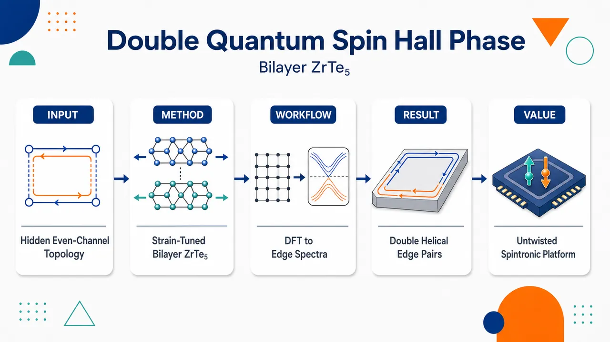
研究问题如何在现实可剥离、无需扭转的范德华双层材料中实现并识别 ℤ₂ = 0 但非平庸的 double quantum spin Hall 相；尤其是双层 ZrTe₅ 是否能承载两对螺旋边缘态，并揭示传统 ℤ₂ 分类为何会漏掉偶数通道拓扑相。创新方法将最稳定 AB 堆垛双层 ZrTe₅ 作为非扭转 double QSH 平台，用第一性原理 + Wannier 紧束缚 + 边缘格林函数 + 自旋霍尔电导联合判据识别拓扑；Aha 点是：ℤ₂ = 0 区域不是平庸绝缘体，而是具有两对螺旋边缘态和双倍量子化 SHC 的 double QSH，相变可由单轴应变触发。工作流程输入 AB 堆垛双层 ZrTe₅ 晶体结构 → 沿 a₁、a₃ 扫描晶格形变并进行 DFT+SOC 计算 → 构建 Te/Zr 轨道 Wannier 紧束缚模型 → 计算能带闭合重开、Γ 点 Te-px/Zr-dyz 轨道反转、ℤ₂ 指数和 WCC 演化 → 用半无限边缘谱数出一对或两对螺旋边缘态 → 用 PAOFLOW 计算 SHC 量子化平台 → 输出 conventional QSH 与 double QSH 应变相图。关键结果最稳定 AB 双层 ZrTe₅ 位于 ℤ₂ = 0 double QSH 相，拥有两对螺旋边缘态，主导自旋霍尔电导达到 2(2e²/h)；施加应变后可经过金属态转入 ℤ₂ = 1 conventional QSH，相应 SHC 为 2e²/h。PBE 带隙在 ℤ₂ = 0 区域最高约 81 meV，HSE 暗示更大；量子化 SHC 有效输运窗口接近 100 meV，部分情形可达 200 meV。应用价值提供一种无需精确扭角和摩尔超晶格的多通道 QSH 材料候选，可通过机械应变在单对与双对边缘通道之间切换；为低耗散自旋电子器件、量子化自旋输运平台和高温拓扑边缘态探索提供更现实的材料路线，同时提示材料筛选不能只依赖 ℤ₂ 指数。第一部分：核心概览
双层 ZrTe₅ 被预测为无需扭转的范德华双层 double quantum spin Hall 平台：最稳定 AB 堆垛结构处于 ℤ₂ = 0 的双 QSH 相，含两对螺旋边缘态与双倍量子化自旋霍尔电导；单轴应变可将其调控至 ℤ₂ = 1 常规 QSH 相。该工作把偶数通道拓扑边缘输运从扭转体系扩展到现实可剥离材料，并凸显 ℤ₂ 分类不足以描述多通道 QSH 相。
---
第二部分：结构化快速回顾
《Double quantum spin Hall phase in bilayer ZrTe₅》（None，）
背景
QSH 绝缘体通常由 ℤ₂ = 1 描述，具有奇数对螺旋边缘态；偶数对边缘态体系虽为 ℤ₂ = 0，仍可由 spin Chern number 表征。实验上具备较大带隙的 double QSH 材料极少。
方法
采用 DFT + SOC、Wannier tight-binding、Z2Pack/WannierTools、PAOFLOW，系统扫描双层 ZrTe₅ 在 a₁、a₃ 双轴晶格形变下的拓扑相图、带隙、边缘态和自旋霍尔电导。
结果
最稳定双层结构处于 ℤ₂ = 0 double QSH 相；应变驱动经金属态转变到 ℤ₂ = 1 conventional QSH 相。double QSH 相具有 两对螺旋边缘态，量子化响应为 2(2e²/h)；常规 QSH 相为 2e²/h。
讨论
ℤ₂ 不变量只给出螺旋边缘态对数的模 2 信息，无法区分平庸绝缘体与偶数通道拓扑相。量子化 SHC 平台可延伸到接近 100 meV，部分情形可达 200 meV，大于常规能带带隙。
局限
结果基于第一性原理计算，缺少实验验证；PBE 带隙可能低估，HSE 仅用于补充校正；补充材料中的若干细节未在给定文本中完整呈现。
结论
双层 ZrTe₅ 是单一材料内连接 常规 QSH 与 double QSH 的应变可调平台，显示非扭转范德华双层也能实现超越传统 ℤ₂ 分类的多通道拓扑相。
---
第三部分：逐章节冷凝解析
Abstract
- Double QSH fills a classification gap
常规 ℤ₂ 分类只把奇数对螺旋边缘态定义为拓扑非平庸，偶数通道体系虽为 ℤ₂ = 0，仍可具有由 spin Chern number 表征的稳健边缘输运。关键背景被概括为：*"Within the conventional ℤ₂ classification, only phases with an odd number of edge state pairs (ℤ₂ = 1) are topologically nontrivial, whereas even-channel systems (ℤ₂ = 0) lie beyond this framework but can host robust edge transport characterized by a spin Chern number."*
- Bilayer ZrTe₅ realizes a stable double QSH phase
双层 ZrTe₅ 的能量最稳定结构被识别为 double QSH phase，并非需要扭转角、摩尔超晶格或复杂异质结构。核心结论为：*"Here, we show that bilayer ZrTe₅ realizes a double quantum spin Hall phase in its energetically most stable structure."*
- Uniaxial strain connects double and conventional QSH phases
单轴应变可驱动从 double QSH 到 ℤ₂ = 1 conventional single-pair QSH 的拓扑转变。摘要明确给出：*"Using first principles calculations, we demonstrate that uniaxial strain drives a transition from this phase to a conventional single pair QSH phase with ℤ₂ = 1."*
- Two helical pairs enhance conductance and broaden quantized response
double QSH 相含 两对螺旋边缘态，产生增强的边缘电导和宽能窗量子化自旋霍尔响应，量子化平台最高约 ∼100 meV。证据表述为：*"The double QSH phase hosts two pairs of helical edge states, resulting in enhanced edge conductance and a quantized spin Hall response that remains robust over an energy window of up to ∼100 meV."*
- Untwisted vdW bilayers can exceed ℤ₂ topology
非扭转范德华双层可承载超越传统 ℤ₂ 的拓扑相，拓展了寻找多通道 QSH 材料的设计空间。摘要结尾指出：*"More broadly, they demonstrate that untwisted van der Waals bilayers can host topological phases beyond the conventional ℤ₂ classification."*
---
Unnumbered main text
- QSH edge states are protected by time reversal symmetry
二维 QSH 绝缘体的核心物理是边缘态受 time reversal symmetry 保护，抑制反向散射，从而支持低耗散输运。基础定义为：*"Quantum spin Hall (QSH) insulators are two-dimensional (2D) topological phases that host conducting edge states protected from backscattering by time reversal symmetry."*
- Double QSH phases require spin Chern characterization
double QSH insulators 或 even spin Chern insulators 具有偶数对螺旋边缘态，传统 ℤ₂ = 0 会把它们与平庸相放在同一类别，但 even spin Chern number Cs 能区分其拓扑性。文本直接定义：*"Systems with an even number of pairs of helical edge states, referred to as double QSH insulators, or even spin Chern insulators, fall outside the conventional ℤ₂ classification (ℤ₂ = 0) and are instead characterized by an even spin Chern number (Cs)."*
- Projected spin gap enables spin-sector decomposition
投影自旋算符 (P s_α P) 在零附近保持能隙时，占据子空间可分解为正、负自旋扇区，支撑 spin Chern number 的定义和边缘态鲁棒性。关键条件为：*"when the spectrum of the projected spin operator component PsαP ... remains gapped around zero, allowing the occupied subspace to be decomposed into positive- and negative-spin sectors."*
- Experimental double QSH realizations remain rare
近年扭转 vdW 材料已有相关信号，但可实验实现且带隙足够大的体系仍极少，尤其限制高温操作。研究动机由以下句子界定：*"While signatures of these phases have recently been reported in twisted van der Waals (vdW) materials, experimentally accessible realizations remain extremely rare, particularly in systems with sizeable band gaps suitable for high temperature operation."*
- ZrTe₅ is strain-sensitive and topologically tunable
ZrTe₅ 是层状 vdW 材料，三维晶体接近拓扑相变，可由外部应变调节，但三维体系多方向晶格敏感性和多导电通道削弱了可控边缘输运。相关背景为：*"Zirconium pentatelluride (ZrTe₅) is a layered vdW material that has been extensively studied for its tunable topological properties"*，以及 *"The three-dimensional (3D) crystal lies in close proximity to a topological phase transition and can be tuned via external strain."*
- Bilayer ZrTe₅ is experimentally more accessible than monolayer
单层 ZrTe₅ 早被预测为大带隙 QSH，但实验制备困难；双层 ZrTe₅ 通过剥离更可及，是连接体相与单层的中间平台。文本依据为：*"In the 2D limit, monolayer ZrTe₅ has long been predicted to realize a QSH phase with a large band gap, yet its experimental realization remains challenging"*；同时 *"Bilayer ZrTe₅, which is more accessible via exfoliation, provides a natural intermediate system that remains comparatively unexplored."*
- AB-stacked bilayer comes from 3D exfoliation
三维 ZrTe₅ 在正交布拉维晶格中含两个 AB stacking 的 vdW 层，沿 (y parallel a₂) 剥离得到二维 AB-stacked bilayer。结构来源表述为：*"The crystal structure of 3D ZrTe₅ contains two vdW layers in AB stacking within an orthorhombic Bravais lattice"*，以及 *"Exfoliating along the stacking direction, y ∥ a₂, yields a single 2D AB-stacked bilayer arrangement."*
- Bandgap closing and reopening marks the topological transition
拓扑相变的第一特征是沿 −X–Γ–X 路径的 带隙闭合—重开，这被视为拓扑相变的标志。关键证据为：*"The first topological signature we find is the bandgap closing and reopening shown in Fig. 1(c), which is considered a hallmark of a topological phase transition."*
- Orbital inversion occurs near Γ
相变伴随 Γ 点附近价带与导带的轨道反转，代表性反转发生在 Te-px 与 Zr-dyz 轨道之间。具体描述为：*"It is accompanied by the characteristic band inversion between the valence and conduction bands near the Γ point"*，以及 *"the band inversion can be clearly seen between the Te-px and Zr-dyz orbitals near Γ."*
- Orbital characters reverse between ℤ₂ = 0 and ℤ₂ = 1
在 ℤ₂ = 0 相中，价带以 Te-px 为主、导带以 Zr-dyz 为主；跨越金属相进入 ℤ₂ = 1 后，价带和导带轨道成分互换。原始证据为：*"In the ℤ₂ = 0 phase, the valence band is dominated by the Te-px orbital, while the conduction band is mainly of Zr-dyz character; after the topological phase transition to the regime with ℤ₂ = 1 ... the orbital characters of the valence and conduction bands are inverted."*
- Biaxial lattice deformation maps the phase diagram
相图以 a₁ 和 a₃ 晶格参数为变量，通过 biaxial lattice deformation 构建；ℤ₂ = 1 标记 conventional QSH，ℤ₂ = 0 标记之后由边缘态与 SHC 识别的 double QSH。描述为：*"Figure 2(a) shows the resulting topological phase diagram, based on the ℤ₂ invariant, under biaxial lattice deformation as a function of a₁ and a₃."*
- Phase boundary mainly follows a₁
拓扑相变边界主要由 a₁ 决定，与 Fig. 1(c) 的带隙闭合重开一致。关键句为：*"The topological phase transition occurs at the boundary between these two regimes, mainly distinguished by the value of a₁."*
- Relaxed structure lies near the phase boundary
完全弛豫的最稳定结构位于相变区域附近，因此较小外部应变即可调控拓扑相，并可能解释实验差异。证据为：*"Remarkably, the most stable structure of bilayer ZrTe₅, marked by the dark diamond, is located close to the topological phase transition region."* 其物理含义进一步说明为：*"This proximity implies easy tunability of the topological properties by external strain and may also explain possible experimental discrepancies arising from sample quality."*
- Largest PBE gaps are 29 meV and 81 meV
在黑框标出的、全局带隙位于 Γ 附近的有效形变区，PBE 计算给出 ℤ₂ = 1 相最大带隙 29 meV，ℤ₂ = 0 相最大带隙 81 meV。关键数值为：*"Here, 29 meV and 81 meV are the largest bandgaps found for the ℤ₂ = 1 and ℤ₂ = 0 regimes, respectively."*
- HSE suggests larger gaps
HSE 泛函把 ℤ₂ = 1 相带隙从 PBE 的 29 meV 提高到约 ∼50 meV，说明 PBE 相图中的带隙可能接近低估一倍。原文为：*"An additional calculation using the Heyd-Scuseria-Ernzerhof (HSE) functional increases the value of the former to ∼50 meV, suggesting that the bandgaps in Figs. 2(b,c) can be nearly twice as large."*
- Negative bandgaps indicate indirect band overlap
某些形变下导带边低于价带边，图中以负带隙表示，说明存在全局半金属性或间接能带重叠。原句为：*"The deformations for which the conduction band edge lies below the valence band edge are indicated by negative bandgap values in Figs. 2(b,c)."*
- Dominant SHC tensor components are σxzsy and σzxsy
六个对称允许的 SHC tensor components 中，(σs_yₓz) 和 (σs_yzₓ) 占主导，产生具有面外自旋极化的自旋流。证据为：*"Among the six symmetry-allowed SHC tensor components, σxzsy and σzxsy dominate, giving rise to spin currents with the out-of-plane spin polarization."*
- Subleading SHC components are usually small
(σsₓyz) 和 (σs_zyₓ) 多数形变中较小，但少数可达量子化值一半；(σsₓzy) 和 (σs_zₓy) 始终可忽略。具体表述为：*"The components σyzsx and σyxsz are small for most deformations but can reach up to half of the quantized value in a few cases, while σzysx and σxysz remain negligible for all deformations."*
- Conventional QSH has 2e²/h SHC
在 ℤ₂ = 1 区域，主导 SHC 达到 (σs_yₓz=2e²/h)，对应单对螺旋边缘态的 conventional QSH。原始证据为：*"In the ℤ₂ = 1 regime, we obtain σxzsy = 2 e²/h [Fig. 3(a)], consistent with a conventional QSH phase."*
- Double QSH has doubled quantized SHC
在 ℤ₂ = 0 区域，(σs_yₓz=σs_yzₓ=2(2e²/h))，即双倍量子化响应。关键证据为：*"In contrast, in the ℤ₂ = 0 regime, the SHC reaches σxzsy = σzxsy = 2(2 e²/h) [Fig. 3(b)], indicating a doubled quantized response."*
- ℤ₂ only gives parity of helical pairs
ℤ₂ 不变量描述的是螺旋边缘态对数的奇偶性；偶数对边缘态体系可在 ℤ₂ = 0 下保持非平庸边缘态。概念依据为：*"the ℤ₂ invariant defines the modulo of the number of pairs of helical edge states, and systems with an even number of pairs can still host robust edge states beyond the ℤ₂ description."*
- Monolayer remains conventional QSH across deformations
对照计算显示 单层 ZrTe₅ 在所有形变下仍是 conventional QSH，量子化 SHC 为 2e²/h，因此双层的 double QSH 来自层间相互作用而非单层本征 double QSH。原句为：*"For comparison, we show in the SM that monolayer ZrTe₅ remains a conventional QSH insulator with quantized SHC of 2 e²/h across all deformations."*
- Interlayer hybridization controls channel survival
双层由两个单层 QSH 绝缘体以镜面对称 AB stacking 组成；相同自旋取向的相对传播螺旋通道可相互杂化，导致 ℤ₂ = 1 区域中一对通道被部分移除，而 ℤ₂ = 0 区域中两对通道共存。证据链为：*"Since the bilayer consists of mirror-plane AB stacking of two monolayer QSH insulators, the interaction between opposite conducting helical edge channels with the same spin orientation can induce hybridization."* 以及 *"In contrast, in the ℤ₂ = 0 phase, the two pairs of helical edge states coexist without hybridization, yielding a double quantized SHC."*
- SHC plateaus exceed the bandgap energy window
许多体能带不显著影响量子化 SHC；平台可超过 Γ 附近带隙定义的能窗，说明有效输运间隙不等同于全局带隙。关键表述为：*"Notably, the SHC plateaus can extend well beyond the energy window defined by the bandgap near Γ."*
- Additional bulk bands do not destroy dominant quantization
在 Z–U 方向或 Γ 以外出现的额外体能带可能影响次要 SHC 分量，但不破坏 (σs_yₓz)、(σs_yzₓ) 的量子化平台。证据为：*"additional states present along the Z−U direction contribute to subleading components such as σyzsx but do not affect the quantized values of σxzsy and σzxsy."* 以及 *"the extended SHC plateau remains robust despite the presence of additional conduction bands away from the Γ point."*
- Edge spectra verify one versus two helical pairs
边缘态计算显示 ℤ₂ = 1 区域有一对连接价带与导带的螺旋边缘态，ℤ₂ = 0 double QSH 相有两对。原始证据为：*"The spectra reveal helical edge states connecting the valence and conduction bands, with one pair in the ℤ₂ = 1 regime and two pairs in the ℤ₂ = 0 phase."*
- Nonprotected edge states coexist but do not define topology
除拓扑螺旋边缘态外还存在其他边缘态，但并非拓扑保护通道。明确区分为：*"Other edge states are also present but are not topologically protected."*
- Helical edge states penetrate deep into valence and conduction continua
螺旋边缘态深入价带和导带谱区，因此即便出现额外体态，SHC 平台仍可延展。原文为：*"Notably, the helical edge states extend deep into both the valence and conduction parts of the spectrum, which explains the extended SHC plateaus."*
- Effective transport gap reaches ~100 meV and sometimes 200 meV
体带隙虽仅几十 meV，但量子化 SHC 对应的有效输运间隙接近 100 meV，部分情形甚至 200 meV。关键数值为：*"while the bulk bandgaps are on the order of a few tens of meV, the effective transport gap associated with the quantized SHC reaches values approaching 100 meV, and in some cases even 200 meV."*
- Ground-state multichannel QSH emerges in realistic vdW bilayers
AB-stacked bilayer ZrTe₅ 的 conventional 与 double QSH 相都源于两个单层 QSH 绝缘体之间的层间相互作用，可在单一体系内由应变调控。总结性证据为：*"AB-stacked bilayer ZrTe₅ realizes a tunable topological phase diagram with both conventional and double QSH phases, originating from the interlayer interaction between two monolayer QSH insulators."*
- ℤ₂ alone is insufficient
double QSH 相具有 ℤ₂ = 0 但有双倍量子化响应与两对螺旋边缘态，因此 ℤ₂ invariant alone 无法充分捕捉拓扑性质。核心判断为：*"This demonstrates that the ℤ₂ invariant alone is insufficient to capture the topological properties."*
- Double QSH phases may have been overlooked
只用 ℤ₂ 分类筛选拓扑材料会漏掉偶数通道 QSH 相；多通道 QSH 可能比目前认识更普遍。结论为：*"double quantum spin Hall phases may be more widespread than previously recognized and could have been overlooked in systems where topology is assessed solely through the ℤ₂ classification."*
---
I Computational details
- DFT implementation uses VASP with fixed parameters across deformations
所有晶格形变使用一致输入参数，保证相图中不同结构的能量、带隙和拓扑指标可比较。方法基础为：*"The first-principles calculations based on DFT are performed using the Vienna Ab initio Simulation Package (VASP)."* 以及 *"The same input parameters are used for each lattice deformation to ensure consistent and comparable results."*
- PAW, 350 eV cutoff, 10⁻⁶ eV convergence
离子—电子相互作用采用 projector-augmented-wave method；平面波动能截断为 350 eV；自洽能量收敛阈值为 10⁻⁶ eV。具体参数为：*"The projector-augmented-wave method is used to describe the ion-electron interaction."* 以及 *"The kinetic-energy cutoff for the plane-wave basis is set to 350 eV, and energy convergence threshold in self-consistent calculations to 10⁻⁶ eV."*
- PBE functional and SOC treatment
交换关联泛函采用 PBE-GGA；除结构弛豫外所有计算均包含 spin-orbit coupling，且保持对称性开启，以避免破坏拓扑性质。原文为：*"The generalized gradient approximation of Perdew, Burke, and Ernzerhof is used for the exchange-correlation functional."* 以及 *"Spin-orbit coupling is taken into account in all calculations except for the structural relaxations, and the symmetries are kept switched on to preserve the topological properties."*
- k-meshes are 20×1×6 and 26×1×8
原子弛豫与自洽计算使用以 Γ 为中心的 20×1×6 k 点网格；非自洽计算提升至 26×1×8。精确设置为：*"The Brillouin zone is sampled using a 20 × 1 × 6 k-point mesh centered at Γ for atomic relaxation and self-consistent calculations, and increased to a 26 × 1 × 8 mesh during non-self-consistent computations."*
- Wannier Hamiltonian includes Te and Zr orbital projections
后处理用 Wannier90 构造紧束缚哈密顿量，投影轨道包括 Te[s,p] 和 Zr[s,p,d]，为拓扑不变量、边缘态和 SHC 计算提供统一模型。证据为：*"we used Wannier90 to build the Wannier tight-binding Hamiltonian by projecting all Te[s, p] and Zr[s, p, d] atomic orbitals."*
- ℤ₂ and WCC computed by Z2Pack and WannierTools
二维 ℤ₂ index 与 Wannier charge center evolution diagrams 同时用 Z2Pack 和 WannierTools 计算，以增强拓扑判定稳健性。原句为：*"The final Hamiltonian is used to calculate the 2D topological ℤ₂ index and the WCC evolution diagrams in both Z2Pack and WannierTools."*
- Edge states computed with semi-infinite Green’s functions
WannierTools 还用于通过 semi-infinite Green’s function approach 计算边缘态谱，直接验证一对或两对螺旋边缘通道。方法描述为：*"The latter program was also used to compute edge states using the semi-infinite Green’s function approach."*
- Bandgaps are extracted from VASP and Wannier90 bands
全局与局域带隙均从 VASP 和 Wannier90 平滑能带中提取，定义为导带边与价带边能量差。原文为：*"The global and local bandgaps are calculated from both the VASP and Wannier90 smooth band structures, where the value is defined as the energy difference between the conduction- and valence band edges."*
- SHC uses PAOFLOW and 100×1×30 ultra-dense mesh
SHC 从原子轨道投影紧束缚哈密顿量计算，软件为 PAOFLOW，k 网格为 100×1×30，用于分辨量子化平台。精确设置为：*"The SHC is calculated from the atomic-orbital-projected tight-binding Hamiltonian using PAOFLOW with an ultra-dense k-mesh of 100 × 1 × 30."*
- Space group and irreducible representations validate inversion
Spglib 和 IrRep 用于确定空间群和 Γ 点不可约表示；结合轨道投影与自旋投影能带，检查带隙重开后是否存在带反转。证据为：*"The space group is determined by Spglib and IrRep."* 以及 *"To check for possible band inversion after bandgap reopening, we calculated irreducible representations at Γ for both the valence and conduction bands using IrRep, as well as orbital-projected band structures from VASP and spin-projected band structures from WannierTools."*
---
Data availability
- Reproducibility data are planned for DataVerseNL
支撑结果的数据将在论文接收后开放于 DataVerseNL，包括主文和补充材料未展示但与复现相关的数据。原始声明为：*"The data that support the findings of this study will be openly available at DataVerseNL XXX after the paper is accepted, including those that do not appear in the main text or SM but are relevant for reproducing the results."*
---
Acknowledgements
- Funding and computing resources are specified
研究受到 Materials for the Quantum Age (QuMat) 项目资助，登记号 024.005.006；计算资源来自荷兰国家电子基础设施 SURF Cooperative 项目 EINF-10786 和格罗宁根大学 Hábrók 高性能计算集群。证据为：*"We acknowledge the research program “Materials for the Quantum Age” (QuMat) for financial support."*，*"This program (registration number 024.005.006) is part of the Gravitation program financed by the Dutch Ministry of Education, Culture and Science (OCW)."*，以及 *"The calculations were carried out on the Dutch national e-infrastructure with the support of SURF Cooperative (EINF-10786) and on the Hábrók high-performance computing cluster of the University of Groningen."*
---
Author contributions
- Roles separate calculation, initialization, supervision, and discussion
C.C.Y. 完成全部 DFT 计算、数据分析解释和初稿撰写；G.K. 完成初始 DFT 计算；J.S. 监督项目；全体成员参与讨论和终稿。原文为：*"C.C.Y. conducted all DFT calculations, analyzed and interpreted the data, and wrote the manuscript draft."*，*"G.K. performed the initial DFT calculations."*，*"J.S. supervised the project."*，以及 *"All authors contributed to discussions and to the final version of the manuscript."*
---
References
- The reference network connects QSH foundations, spin Chern theory, ZrTe₅ topology, and computational tools
文献覆盖 Kane–Mele QSH 理论、HgTe/CdTe QSH 实验、spin Chern number、近期 twisted vdW double QSH 信号、ZrTe₅ 拓扑调控、以及 VASP/Wannier90/Z2Pack/WannierTools/PAOFLOW 计算工具。代表性引用包括：*"Qi and Zhang [2011]"*、*"Kane and Mele [2005]"*、*"Bernevig et al. [2006]"*、*"König et al. [2007]"*、*"Sheng et al. [2006]"*、*"Prodan [2009]"*、*"Kang et al. [2024b]"*、*"Weng et al. [2014]"*、*"Kresse and Hafner [1993]"*、*"Mostofi et al. [2008]"*、*"Gresch et al. [2017]"*、*"Wu et al. [2018]"*、*"Buongiorno Nardelli et al. [2018]"*。
---
第四部分：深度理解与语言支持
1. 术语解析
- Double quantum spin Hall phase
指具有 两对螺旋边缘态的 QSH 相。它在 ℤ₂ 分类中为 0，因为两对边缘态是偶数；但它不是普通平庸绝缘体，可通过 spin Chern number 和双倍量子化 SHC 识别。微妙点在于 “double” 不是两个独立样品简单相加，而是双层相互作用后仍保留两个拓扑边缘通道对。
- Even spin Chern insulator
与 double QSH insulator 基本同义，强调拓扑不变量是 偶数 spin Chern number，而不是 ℤ₂。其关键含义是：即使 ℤ₂ = 0，只要投影自旋谱有隙，仍可定义正/负自旋扇区的 Chern 数差。
- Helical edge states
指边缘上自旋与传播方向锁定的态：一个方向传播对应一种自旋，反方向传播对应相反自旋。与普通边缘态不同，helical 强调受时间反演保护的 Kramers 配对结构。文中还区分了 topologically protected helical edge states 与不受保护的普通边缘态。
- Bandgap closing and reopening
拓扑相变常见信号。参数连续改变时，若绝缘体拓扑不变量改变，通常必须先经历能隙闭合；随后重新打开的带隙可能对应不同拓扑相。这里闭合发生在 Γ 点附近，并伴随 Te-px / Zr-dyz 轨道反转。
- Effective transport gap
不等同于全局能带带隙。全局带隙只看体能带导带最低点和价带最高点；effective transport gap 指量子化边缘输运或 SHC 平台保持稳定的能量范围。这里体带隙只有几十 meV，但 SHC 平台可接近 100 meV，部分达 200 meV。
2. 疑难查证
- 为什么 ℤ₂ = 0 仍然可以拓扑非平庸？
ℤ₂ 只记录螺旋边缘态对数的奇偶性：1 对、3 对、5 对对应 ℤ₂ = 1；0 对、2 对、4 对对应 ℤ₂ = 0。因此 ℤ₂ = 0 同时包含两类物理完全不同的情况：没有边缘态的平庸绝缘体，以及有偶数对边缘态的 double QSH。要区分二者，需要看 spin Chern number、边缘态谱、SHC 量子化平台等更细指标。
- 为什么两层单层 QSH 叠起来不一定就是 double QSH？
两个单层 QSH 各有一对螺旋边缘态，简单叠加似乎应有两对。但双层中边缘通道会发生 层间杂化。如果两个相反传播但同自旋取向的通道能耦合，它们可能开隙或被部分消除；因此最终可能得到 一对边缘态的 conventional QSH，也可能得到 两对共存的 double QSH。AB 堆垛的对称性和应变调节决定哪些通道被杂化。
- 为什么 SHC 平台能大于体带隙？
全局带隙可能因 Γ 外的体能带接近费米能而变小，但量子化 SHC 主要由拓扑连接的螺旋边缘态和占据态 Berry 曲率结构决定。若额外体带对主导 SHC 分量贡献很小，或只影响次要张量分量，则主导 SHC 仍可保持量子化。于是输运上可用的能窗大于传统带隙数值。
- 为什么 Γ 点特别重要？
带反转发生在 Γ 点附近，拓扑相变的能隙闭合也在那里发生。即便全局价带顶或导带底可能位于 Γ 以外，真正改变拓扑不变量的关键事件仍是 Γ 附近的能带次序交换，即 Te-px 与 Zr-dyz 轨道角色互换。
---
第五部分：创新评估与关联
1. 创新性判断
- 从扭转 vdW 拓展到非扭转 vdW 双层
过去 2–5 年中，double QSH 或偶数通道 QSH 的实验信号主要集中在 twisted van der Waals materials，例如 2024 年相关工作。该研究把目标转向 untwisted AB-stacked bilayer ZrTe₅，降低了对精确扭角、摩尔周期和复杂器件制备的依赖。
- 在最稳定结构中实现 double QSH，而非人工激发态或极端调参结构
double QSH 相出现在 energetically most stable structure 附近，不是只在高度理想化参数下存在。这增强了实验可行性，尤其因为双层比单层 ZrTe₅ 更易通过剥离获得。
- 单一材料内连接 ℤ₂ = 0 double QSH 与 ℤ₂ = 1 conventional QSH
以往材料筛选常把 ℤ₂ = 0 直接视为平庸。这里显示同一双层体系可通过应变跨越金属态，在 double QSH 与 conventional QSH 间切换，为研究拓扑相变、通道杂化和边缘态数目调控提供了统一平台。
- 将 SHC、边缘谱和 ℤ₂ 相图组合成更完整判据
仅靠 ℤ₂ 会漏判 double QSH。该研究同时使用 ℤ₂ invariant、band inversion、edge states、spin Hall conductivity、effective transport gap，证明 ℤ₂ = 0 区域具有双倍量子化响应和两对螺旋边缘态。
- 提出实际高温输运潜力
PBE 最大带隙给出 81 meV 的 ℤ₂ = 0 区域带隙，HSE 暗示带隙可能接近翻倍；量子化 SHC 平台接近 100 meV，部分情形可达 200 meV。相比许多小带隙 QSH 候选体，这一能量尺度更接近高温边缘输运需求。
- 解决前人未充分解决的问题
前人难点包括：可实验获得的 double QSH 材料少、带隙小、依赖扭转结构、ℤ₂ 筛选漏掉偶数通道拓扑相、双层通道杂化机制不清晰。该研究给出一个现实材料候选，并阐明 AB 双层中层间相互作用可在一对和两对螺旋边缘态之间切换。
- 21
-
22
💡 亮点：MACE 势系统比较多种泛函的液态水动力学。
- 23
-
24
💡 亮点：CdSe 量子点磁性被归因于表面化学与晶面结构。
- 25
-
26
💡 亮点：钉扎畴壁杂散场可非接触调控 YIG 自旋波相位。
- 27
-
28
💡 亮点：Lindblad 退相干模拟被连接到解耦与 IQP 对偶。
-
29
💡 亮点：α-RuCl3 插层石墨把 Kitaev 磁性引入三维石墨平台。
- 30
- 31
- 32
- 33
- 34
-
35
💡 亮点：交流量热直接读出 V₂Ga₅ 体相准粒子量子振荡。
- 36
-
37
💡 亮点：边间相互作用被用于解释 ν=2/5 碰撞器负 Fano 因子。
-
38
💡 亮点：隧穿加相互作用自旋劈裂可解释 CISS 方向不变性。
-
39
💡 亮点：非正面量子液滴碰撞可由几何角动量生成涡旋。
- 40
-
41
💡 亮点：约瑟夫森结非理想性限制 AQFP 低温控制电路性能。
- 42
-
43
💡 亮点：环境抽象目标从结构保真转为决策性能最优。
- 44
- 45
-
46
💡 亮点：BaTiO3 的铁电内场导致各向异性超快载流子分离。
- 47
-
48
💡 亮点：高质量 CrSb 单晶给出交变磁体基准热输运数据。
- 49
-
50
💡 亮点：浅层信道混合态可作为量子态学习的可生成类。
- 51
-
52
💡 亮点：手性 kagome 反铁磁可实现零场超导非互易电流。
- 53
-
54
💡 亮点：Nd3BWO9 显示 Ising 型超临界磁热普适行为。
-
55
💡 亮点：解耦任务语义和机体控制以复用元强化学习知识。
-
56
💡 亮点：AnomalyMatch 在少标注数据中主动筛选稀有异常体。
- 57
- 58
- 59
- 60